Original Link:
UPDATE by ®UNI TOOL - liuyan3000@hotmail.com, at Thu Jul 23 16:02:57 CST 2015
Bitonic search – 点缀星辰 – ITeye技术网站
简介
背包问题已经是一个很经典而且讨论很广泛的算法问题了。最近学习到这一部分，打算结合自己思考和编码的过程做一个思考总结。这里主要讨论的0–1背包问题和部分背包问题解决方法背后其实隐藏了两种我们比较常见的算法解决思路，动态规划和贪婪算法。正好通过这两个问题的讨论可以好好的加深一下理解。
问题描述
假设我们有n件物品，分别编号为1, 2...n。其中编号为i的物品价值为vi，它的重量为wi。为了简化问题，假定价值和重量都是整数值。现在，假设我们有一个背包，它能够承载的重量是W。现在，我们希望往包里装这些物品，使得包里装的物品价值最大化，那么我们该如何来选择装的东西呢？问题结构如下图所示：

这个问题其实根据不同的情况可以归结为不同的解决方法。假定我们这里选取的物品每个都是独立的，不能选取部分。也就是说我们要么选取某个物品，要么不能选取，不能只选取一个物品的一部分。这种情况，我们称之为0–1背包问题。而如果我们可以使用部分的物品的话，这个问题则成为部分背包(fractional knapsack)问题。下面我们针对每种情况具体分析一下。
0–1背包问题
初步分析
对于这个问题，一开始确实有点不太好入手。一堆的物品，每一个都有一定的质量和价值，我们能够装入的总重量有限制，该怎么来装使得价值最大呢？对于这n个物品，每个物品我们可能会选，也可能不选，那么我们总共就可能有2ˆn种组合选择方式。如果我们采用这种办法来硬算的话，则整体的时间复杂度就达到指数级别的，肯定不可行。
现在我们换一种思路。既然每一种物品都有价格和重量，我们优先挑选那些单位价格最高的是否可行呢？比如在下图中，我们有3种物品，他们的重量和价格分别是10, 20, 30 kg和60, 100, 120。
那么按照单位价格来算的话，我们最先应该挑选的是价格为60的元素，选择它之后，背包还剩下50 – 10 = 40kg。再继续前面的选择，我们应该挑选价格为100的元素，这样背包里的总价值为60 + 100 = 160。所占用的重量为30, 剩下20kg。因为后面需要挑选的物品为30kg已经超出背包的容量了。我们按照这种思路能选择到的最多就是前面两个物品。如下图：
按照我们前面的期望，这样选择得到的价值应该是最大的。可是由于有一个背包重量的限制，这里只用了30kg，还有剩下20kg浪费了。这会是最优的选择吗？我们看看所有的选择情况：
很遗憾，在这几种选择情况中，我们前面的选择反而是带来价值最低的。而选择重量分别为20kg和30kg的物品带来了最大的价值。看来，我们刚才这种选择最佳单位价格的方式也行不通。
动态规划
既然前面两种办法都不可行，我们再来看看有没有别的方法。我们再来看这个问题。我们需要选择n个元素中的若干个来形成最优解，假定为k个。那么对于这k个元素a1, a2, ...ak来说，它们组成的物品组合必然满足总重量<=背包重量限制，而且它们的价值必然是最大的。因为它们是我们假定的最优选择嘛，肯定价值应该是最大的。假定ak是我们按照前面顺序放入的最后一个物品。它的重量为wk，它的价值为vk。既然我们前面选择的这k个元素构成了最优选择，如果我们把这个ak物品拿走，对应于k–1个物品来说，它们所涵盖的重量范围为0–(W–wk)。假定W为背包允许承重的量。假定最终的价值是V，剩下的物品所构成的价值为V–vk。这剩下的k–1个元素是不是构成了一个这种W–wk的最优解呢？
我们可以用反证法来推导。假定拿走ak这个物品后，剩下的这些物品没有构成W–wk重量范围的最佳价值选择。那么我们肯定有另外k–1个元素，他们在W–wk重量范围内构成的价值更大。如果这样的话，我们用这k–1个物品再加上第k个，他们构成的最终W重量范围内的价值就是最优的。这岂不是和我们前面假设的k个元素构成最佳矛盾了吗？所以我们可以肯定，在这k个元素里拿掉最后那个元素，前面剩下的元素依然构成一个最佳解。
现在我们经过前面的推理已经得到了一个基本的递推关系，就是一个最优解的子解集也是最优的。可是，我们该怎么来求得这个最优解呢？我们这样来看。假定我们定义一个函数c[i, w]表示到第i个元素为止，在限制总重量为w的情况下我们所能选择到的最优解。那么这个最优解要么包含有i这个物品，要么不包含，肯定是这两种情况中的一种。如果我们选择了第i个物品，那么实际上这个最优解是c[i – 1, w–wi] + vi。而如果我们没有选择第i个物品，这个最优解是c[i–1, w]。这样，实际上对于到底要不要取第i个物品，我们只要比较这两种情况，哪个的结果值更大不就是最优的么？
在前面讨论的关系里，还有一个情况我们需要考虑的就是，我们这个最优解是基于选择物品i时总重量还是在w范围内的，如果超出了呢？我们肯定不能选择它，这就和c[i–1, w]一样。
另外，对于初始的情况呢？很明显c[0, w]里不管w是多少，肯定为0。因为它表示我们一个物品都不选择的情况。c[i, 0]也一样，当我们总重量限制为0时，肯定价值为0。
这样，基于我们前面讨论的这3个部分，我们可以得到一个如下的递推公式：
有了这个关系，我们可以更进一步的来考虑代码实现了。我们有这么一个递归的关系，其中，后面的函数结果其实是依赖于前面的结果的。我们只要按照前面求出来最基础的最优条件，然后往后面一步步递推，就可以找到结果了。
我们再来考虑一下具体实现的细节。这一组物品分别有价值和重量，我们可以定义两个数组int[] v, int[] w。v[i]表示第i个物品的价值，w[i]表示第i个物品的重量。为了表示c[i, w]，我们可以使用一个int[i][w]的矩阵。其中i的最大值为物品的数量，而w表示最大的重量限制。按照前面的递推关系，c[i][0]和c[0][w]都是0。而我们所要求的最终结果是c[n][w]。所以我们实际中创建的矩阵是(n + 1) x (w + 1)的规格。下面是该过程的一个代码参考实现：
public class DynamicKnapSack {
private int[] v;
private int[] w;
private int[][] c;
private int weight;
public DynamicKnapSack(int length, int weight, int[] vin, int[] win) {
v = new int[length + 1];
w = new int[length + 1];
c = new int[length + 1][weight + 1];
this.weight = weight;
for(int i = 0; i < length + 1; i++) {
v[i] = vin[i];
w[i] = win[i];
}
}
public void solve() {
for(int i = 1; i < v.length; i++) {
for(int k = 1; k <= weight; k++) {
if(w[i] <= k) {
if(v[i] + c[i - 1][k - w[i]] > c[i - 1][k])
c[i][k] = v[i] + c[i - 1][k - w[i]];
else
c[i][k] = c[i - 1][k];
} else
c[i][k] = c[i - 1][k];
}
}
}
public void printResult() {
for(int i = 0; i < v. length; i++) {
for(int j = 0; j <= weight; j++)
System.out.print(c[i][j] + " ");
System.out.println();
}
}
public static void main(String[] args) {
int[] v = {0, 60, 100, 120};
int[] w = {0, 10, 20, 30};
int weight = 50;
DynamicKnapSack knapsack = new DynamicKnapSack(3, weight, v, w);
knapsack.solve();
knapsack.printResult();
}
}
这部分代码里关键的就是solve方法。里面两个遍历循环，i表示从1到n的范围，对应于我们递归方法里描述的c(i, w)中到第i位。而k表示的是当前的重量限制。下面是程序运行的输出结果：
0 0 0 0 0 0 0 0 0 0 0 0 0 0 0 0 0 0 0 0 0 0 0 0 0 0 0 0 0 0 0 0 0 0 0 0 0 0 0 0 0 0 0 0 0 0 0 0 0 0 0
0 0 0 0 0 0 0 0 0 0 60 60 60 60 60 60 60 60 60 60 60 60 60 60 60 60 60 60 60 60 60 60 60 60 60 60 60 60 60 60 60 60 60 60 60 60 60 60 60 60 60
0 0 0 0 0 0 0 0 0 0 60 60 60 60 60 60 60 60 60 60 100 100 100 100 100 100 100 100 100 100 160 160 160 160 160 160 160 160 160 160 160 160 160 160 160 160 160 160 160 160 160
0 0 0 0 0 0 0 0 0 0 60 60 60 60 60 60 60 60 60 60 100 100 100 100 100 100 100 100 100 100 160 160 160 160 160 160 160 160 160 160 180 180 180 180 180 180 180 180 180 180 220
最右下角的数值220就是c[1, 50]的解。
至此，我们对于这种问题的解决方法已经分析出来了。它的总体时间复杂度为O(nw) ，其中w是设定的一个重量范围，因此也可以说它的时间复杂度为O(n)。
部分背包问题
和前面使用动态规划方法解决问题不一样。因为这里是部分背包问题，我们可以采用前面讨论过的一个思路。就是每次选择最优单位价格的物品，直到达到背包重量限制要求。
以前面的示例来看，我们按照这种方式选择的物品结果应该如下图：
现在，我们从实现的角度再来考虑一下。我们这里的最优解是每次挑选性价比最高的物品。对于这一组物品来说，我们需要将他们按照性价比从最高到最低的顺序来取。我们可能需要将他们进行排序。然后再依次取出来放入背包中。假定我们已经有数组v，w，他们已经按照性价比排好序了。一个参考代码的实现如下：
public double selectMax() {
double maxValue = 0.0;
int sum = 0;
int i;
for(i = 0; i < v.length; i++) {
if(sum + w[i] < weight) {
sum += w[i];
maxValue += v[i];
} else
break;
}
if(i < v.length && sum < weight) {
maxValue += (double)(weight - sum) / w[i] * v[i];
}
return maxValue;
}
这里省略了对数组v, w的定义。关键点在于我们选择了若干了物品后要判断是否装满了背包重量。如果没有，还要从后面的里面挑选一部分。所以有一个if(i < v.length && sum < weight)的判断。
在实现后我们来看该问题这种解法的时间复杂度，因为需要将数组排序，我们的时间复杂度为O(nlgn)。
一点改进：
在前面我们挑选按照性价比排好序的物品时，排序消耗了主要的时间。在这里，我们是否真的需要去把这些物品排序呢？在某些情况下，我们只要选择一堆物品，保证他们物品重量在指定范围内。如果我们一次挑出来一批这样的物品，而且他们满足这样的条件是不是更好呢？这一种思路是借鉴快速排序里对元素进行划分的思路。主要过程如下：
1. 求每个元素的单位价值，pi = vi /wi。然后数组按照pi进行划分，这样会被分成3个部分，L, M, N。其中L < M < N。这里L表示单位价值小于某个指定值的集合，M是等于这个值的集合，而N是大于这个值的集合。
2. 我们可以首先看N的集合，因为这里都是单位价值高的集合。我们将他们的重量累加，如果WN的重量等于我们期望的值W，则N中间的结果就是我们找到的结果。
3. 如果WN的重量大于W，我们需要在N集合里做进一步划分。
4. 如果WN的重量小于W，我们需要在N的基础上再去L的集合里划分，找里面大的一部分。
这样重复步骤1到4.
这里和快速排序的思路基本上差不多，只是需要将一个分割的集合给记录下来。其时间复杂度也更好一点，为O(N)。这里就简单的描述下思路，等后续再将具体的实现代码给补上。
总结
我们这里讨论的两种背包问题因为问题的不同其本质解决方法也不同。对于0–1背包来说，他们构成了一个最优解问题的基础。我们可以通过从最小的结果集递推出最终最优结果。他们之间构成了一个递归的关系。而对于部分背包问题来说，我们可以考虑用贪婪算法，每次选择当前看来最优的结果。最终也构成了一个最优的结果。一个小小的前提变化，问题解决的思路却大不同。里面的思想值得反复体会。
简介
2–sum, 3–sum这两个问题其实都比较简单。他们演化的思路需要稍微费一点转折，不过当明白其中的一个诀窍之后后面的各种变形也都很简单了。最早牵涉到这个问题还是在12年我们组织面试招人的时候，海涛同学出了个这样的问题，求满足等式aˆ3 + bˆ3 + cˆ3 = dˆ3 的所有a, b, c, d值。其中a, b, c, d所在区间为[1, 100000]。对于这种问题，似乎最不济的人也可以想到一个办法，就是我纯粹的去遍历每个数值这么蛮算。当时也是一时没有找到很好的办法。
好了，我们先不急着考虑怎么解决这个问题，先来看看一个更加简单的问题形式。有时候，很多复杂的问题其实就是从一些简单的问题本身衍生出来的。
2–sum
我们先来看这个问题的简单描述，假设有一组数字int[] a，给定一个数字sum，我们希望能够找到数组中是否有两个数字a, b, 他们的和等于数字sum。也就是我们希望找到两个数字使得a + b = sum。
对于这种问题，我们不能说完全没有思路，只是有一个选择好坏的问题。因为这里只是给定了一组数字，它们是无序排列的。如果要找到所有符合两个数字相加等于目标数字的组合，可以使用最简单的一个双重遍历循环，它的伪代码如下：
for(int i = 0; i < array.length - 1; i++) {
for(int j = i + 1; j < array.length; j++) {
if(a[i] + a[j] == sum)
// process and record work
}
}
通过这种方式我们肯定可以找到所有的数对，只是针对这样一个问题，它们的时间复杂度就达到了O(N * N) 。那么，有没有更好的办法使得它更加有效率一些呢？
这个时候，如果我们想到一些排序的算法，它们的时间复杂度多半都是在O(NlogN)这个级别的。如果对这些数字排序之后，我们能不能使得查找的效率更高一些呢？假定一个数组排序了，我们如果要查找里面的元素，不就可以直接用二分搜索了吗？而二分搜索的时间复杂度仅仅是O(logN)，这样不就可以加快执行速度了么？
所以，这里的一种改进思路就是首先对数组排个序，这样花的时间为O(NlogN)，然后既然要查找里面a + b = sum的值，我们可以遍历整个数组，然后来查找数组里是否有sum – a的元素。这样这个遍历加上查找的时间复杂度也是O(NlogN)。有了这个思路，我们也就可以很容易得到如下的代码了：
public static int twoSum(int sum, int[] array) {
Arrays.sort(array);
int length = array.length;
int count = 0;
for(int i = 0; i < length; i++) {
int position = find(sum - array[i], array);
if(position > 0) {
System.out.printf("value: %d, position: %d\n",
array[i], position);
count++;
}
}
return count;
}
在代码里为了简化一些步骤，直接使用了java.util.Arrays的sort方法。这里的排序实际上是用到了快速排序的过程。这里find方法就是我们定义的一个二分查找方法，在以前的一些文章里也有谈到过，这里就直接把代码贴过来了：
public static int find(int v, int[] a) {
int l = 0;
int r = a.length - 1;
int mid;
while(l <= r) {
mid = l + (r - l) / 2;
if(a[mid] > v)
r = mid - 1;
else if(a[mid] < v)
l = mid + 1;
else
return mid;
}
return -1;
}
这样，我们通过将数组排序，得到了一个O(NlogN)时间复杂度的解决方法。现在我们再来更进一步看看3–sum的问题。
3–sum
如果说前面2–sum对应的是a + b = c这样的问题，这里相当于增加了一个维度，我们希望对应一个a + b + c = d。这里增加了这么一个变量，也增加了一点复杂度。原来对应两个元素，我们遍历数组，根据指定遍历的元素来查找sum – b的值。那么这里增加的元素我们也可以做一个类似的思考，我们最终来根据a求sum – b –c的值。 那么从实现的角度来说，我们只是需要多增加一个循环，在这个循环里取和前面不同的值。这种思路是在2–sum的基础上延伸出来的，因为比较简单，我们就列一下它的伪代码实现：
public static int count(int[] array) {
Arrays.sort(array);
int length = array.length;
int count = 0;
for(int i = 0; i < length; i++) {
for(int j = i + 1; j < length; j++) {
if(find(sum - a[i] - a[j], array) > 0)
count++;
}
}
return count;
}
如果用这种办法的话，我们的时间复杂度为O(N*NlogN)。虽然看起来还是可以接受，但是有没有更好的办法呢？
假定我们有一个如下的排序的数组：
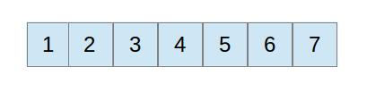
如果我们要求两个数，使得它们的和为某个特定的值，那么我们的目的就是要找到所有符合这个条件的数值对。假定在这里我们要求使得任意两个数字的和为9, 那么对于这个给定的数字来说。其实从数学的角度我们可以这样来看。如果我们取这个目标数字9的一半，也就是4.5，用它来划分这个数组的话，它左边的数字表示比它小的，它右边的数字表示比它大的。那么这里对应的一个划分则如下图所示：
实际上，如果我们需要去求得和为9的两个数字，肯定他们中间有一个在前面这个部分，一个在后面这个部分。而且还有一个更加有意思的特点，比如说这里的2 + 7 = 9。那么我们将左边的数字往右一个，右边的往左一个，他们还是有可能凑成一对符合条件的数字。这样我们就找到另外一种有意思的规律。
我们一开始从数组的开头和结尾去这两个数字，如果存在两个数字它们的和等于目标数字。它们肯定是一个大于我们给定数字的一半而另一个小于它的一半。我们可以先计算这两个数字的和，用它们来比较目标数字。如果大于目标数字，则右边的下标往左移一步，相当于将它们的和调小一点，如果小于的话，则移动左边的下标往右一步。这样我们就可以通过这样一次循环找到所有符合条件的数字了。
按照这种思路，我们可以得到如下的代码：
public static void threeSums(int sum, int[] a) {
Arrays.sort(a);
for(int i = 0; i < a.length; i++) {
System.out.println(findAllMatches(sum - a[i], a));
}
}
public static int findAllMatches(int v, int[] a) {
int l = 0;
int r = a.length - 1;
int count = 0;
while(l < r) {
if(a[l] + a[r] < v)
l++;
else if(a[l] + a[r] > v)
r--;
else {
System.out.printf("l: %d, r: %d\n", l, r);
count++;
l++;
r--;
}
}
return count;
}
按照前面的分析，我们对数组排序用的时间为O(NlogN)，我们匹配两个数字的和，用的时间为O(N)，但是这一步外面还嵌套一个遍历数组的循环，所以它的时间复杂度为O(N*N)。这样， 整个问题的时间复杂度为O(Nˆ2)。
我们这样就解决了3–sum的一般问题。实际上还有很多这种问题的变化。比如最开始我提到的那个问题，还有一种就是我要求的这个sum不是固定的，它也是在这个数组里。这个时候，我们解决问题的办法还是差不多，只是对于这个变化的sum要做一个遍历。
4–sum
现在，我们再把问题复杂化一步，假设来求一个4–sum的问题。就是给定一个数组，要求里面是否存在a + b + c + d = sum的情况。在前面两种情况下，我们都是将问题归结为a + b = sum, a + b = sum – c等这样的情况。提高问题解决效率的关键点在于将数组排序。在更加多了一个参数的情况下，是否可以利用原来的思路呢？
在2–sum的情况下，我们只要给定一个a，然后取查找数组里是否存在等于sum – a的情况，也可以采用线性查找的方法，从数组的两头并进，找到符合条件的数对。3–sum的情况也类似，只是要循环遍历整个数组。这里所有遍历的元素就是构成可能满足条件的数组元素。对于4–sum的情况，我们可以将条件转化为a + b = sum – c – d。粗看来，这样没有多少帮助。这里相当于要找到两个数的和，它们等于sum减去另外两个数。嗯，原来的等式其实也相当于a + b = sum – (c + d)。这样概括起来的话，不就是相当于求两个数的和，它们等于sum减去另外两个数的和吗？
到了这一步，就到了问题的关键了。两个数的和，对于一个给定的数组来说，它们构成了一个集合，假设数组元素个数为n，那么任意两个数的和构成一个C(n, 2)的组合，它们也构成了一个集合。相当于有(n * n + 1) / 2个元素。也可以笼统的称之为nˆ2个元素。而如果我们将前面数组中两个元素的和当做一个元素的话，这不就相当于求a = sum – b吗？只是这里a, b都是由原来数组里两个元素的和构成。这样，原来的问题就可以归结为从nˆ2的元素里求两个数的和为sum的问题，也就是一个2–sum的问题了。
更细化一步，解决这个问题需要如下几个步骤：
1. 构造任意两个元素相加得到的集合。
2. 对这个集合排序。
3. 查找集合里所有符合a + b = sum的元素对。
从第一步得到的两个元素和的集合有nˆ2个，时间复杂度为O(Nˆ2)。而第二步进行排序的时间复杂度为O(Nˆ2logNˆ2)，也就是O(Nˆ2logN)。
结合前面的讨论，对这个问题的详细代码实现就比较简单了。这里仅对第１，２步的描述做一个实现。详细代码如下：
public int[] generateSums(int[] a) {
int n = a.length;
int size = n * (n + 1) / 2;
int k = 0;
int[] result = new int[size];
for(int i = 0; i < n; i++) {
for(int j = i + 1; j < n; j++) {
result[k] = a[i] + a[j];
k++;
}
}
return Arrays.sort(result);
}
这部分代码比较简单，就是一个生成所有相加元素的组合， 这个问题的核心其实已经演化为一个元素集合查找的问题了。当然，在需要输出对应的元素i, j的时候，我们可能需要将它们和对应的和元素关联起来。这里可以通过将定义的数组result修改为一个自定义的类型，里面包含进行比较的元素以及关联的两个索引元素就可以。这部分就不再赘述。
总结
2–sum, 3–sum的问题在一定的问题规模下，是可以找到有效的方法来解决的。我们常用的办法就是首先针对这个数组排序，然后再去通过二分法查找目标值。还有一种就是通过从排序后的数组两头来凑这个给定的目标值。基本上所有这些问题的变体都可以通过这几种方法来解决。而且这些解决方法的时间复杂度还是相当客观的，对于2–sum来说它达到了O(NlogN)，对于3–sum来说，它可以达到O(Nˆ2)。以前也有人总结过，说碰到这种和数组的东西打交道时，如果实在没什么思路，干脆就不管三七二十一给它排个序，也许思路就有了，看来还是有点道理的。
这是最近的一次补充，在参考一些文章之后，发现针对多个元素求和的问题其实还有一些新的思路，主要是将一些元素的和当做一个集合，这样任何两个或者若干个元素的和它们都可以当做一个对等的集合。这样我们的问题就归结为在一个广义的集合里求更少元素的和问题。精妙之处就在于此。有了这个基础，我们在这个基础上做更多元素的类推，也找到了一个更加有力的方法。
简介
Bitonic search是一个和binary search比较类似的一种查找方法，不过它的过程会显得稍微复杂一点。从某种角度来说，它和我前面这篇
文章
里讨论过的一种binary search的一个变体很像，不过就是因为一个小小的变化，它们的解决办法就有着极大的差别。我们先来看看问题本身的描述：
一个bitonic数组是由一个递增的整数序列后面接着一个递减的序列，假设数组里有N个唯一的数字，我们要查询给定的一个数字， 使得查找的时间尽可能的短。
3logN解决方法
在标出这个子标题的时候，似乎有点未卜先知的味道。我们可以先根据这个问题来分析一下。假定我们给定有这么一个数组：[1, 3, 4, 6, 9, 14, 11, 7, 5, 2, –4, –9] 。那么它们的布局应该成如下的一个形式：
假设我们水平线的方向表示数组排列的方向，它们的数值对应这上面折线的高度，那么比如有一个点是这个数组中最大的。如果我们事先找到了这个最大的点，假设它的下标是k。那么从数组的0到k这部分是一个严格递增的序列，同样从k+1到数组末尾是一个递减的序列。如果我们熟悉binary search的话，现在应该就找到一个思路了。剩下的就是我们在这个两边的序列里分别去搜索指定的值。
那么概括起来我们这个方法的思路如下：
1. 找到数组最大的那个值。既然我们期望能尽可能快的找到。直接遍历搜索的时间复杂度到了O(N)。显然不太合适。不过我们也可以利用binarysearch的思路，每次对数组取中间值，如果这个值比它左边的大，表示它在左边递增的序列，如果它比左边的小，表示它在右边递减的序列。只有当它比左右两边的都大时，才能说明它就是我们找到的最大值。
2. 找到最大值之后我们就以它为分界线，对给定的值在它两边的区域分别进行binarysearch。为什么要两边分开呢？一个是对于一个值它可能存在于左边序列，也可能存在于右边序列。另外，我们默认的binarysearch默认的是要求数组升序排列的。对于后面降序的数组我们要对这个方法做一点修改。
下面是我们对它们各部分的实现：
public static int findPeak(int[] a) {
int l = 0;
int r = a.length -1;
int mid;
while(l <= r) {
mid = l + (r - l) / 2;
if(a[mid] > a[mid - 1] && a[mid] > a[mid + 1])
return mid;
else if(a[mid] > a[mid - 1])
l = mid + 1;
else if(a[mid] > a[mid + 1])
r = mid - 1;
}
return -1;
}
这部分的实现和binarysearch很像，只是每次需要判断的时候设置一下l, r的情形不同。通过这一步findPeak之后我们就得到这个最大值所在的下标了。然后就是分别搜索实现的代码，这里分为对升序数组的搜索和降序数组的搜索：
public static int ascBinarySearch(int[] a, int l, int r, int v) {
if(a == null || a.length == 0)
return -1;
int mid;
while(l <= r) {
mid = l + (r - l) / 2;
if(v > a[mid])
l = mid + 1;
else if(v < a[mid])
r = mid - 1;
else
return mid;
}
return -1;
}
public static int desBinarySearch(int[] a, int l, int r, int v) {
if(a == null || a.length == 0)
return -1;
int mid;
while(l <= r) {
mid = l + (r - l) / 2;
if(v > a[mid])
r = mid - 1;
else if(v < a[mid])
l = mid + 1;
else
return mid;
}
return -1;
}
这两个方法里第一个就是典型的binarysearch实现，第二个针对降序需要设置l, r的值的形式不一样。也就没什么其他特殊的了。
当然，从完整实现的角度来看，我们还需要结合前面几个步骤的代码：
public static int bitonicSearch(int[] a, int v) {
int peak = findPeak(a);
if(peak != -1) {
int first = ascBinarySearch(a, 0, peak, v);
int last = desBinarySearch(a, peak + 1, a.length - 1, v);
if(first != -1)
return first;
if(last != -1)
return last;
}
return -1;
}
这里唯一值得注意的地方就是如果我们查找的对象找不到，在后面都统一返回负数了。从前面所有的步骤来看，第一步我们查找最大值，用的时间为logN，第二步要在两个区域里查找给定的数字，每个地方查找的时间分别为logN，所以整体的时间加起来大致上为3logN。
这就是我们提到的一种解决方法。嗯，看起来已经相当完美了。当然，从追求完美的角度来说，我们还有没有更加快的解决方法呢？前面的方法里，我们还花了不少时间去查找这个最大的值，能不能不用查这个最大值然后也能解决呢？实际上，还有一个更猛的。
2logN解决方法
我们再换一个角度来思考这个问题。前面的问题实质上是需要我们找到最大值，然后根据两边的段来查找。现在我们来看看怎么不用找最大值来解决它。针对这种布局的数列，如果我们取它们中间的元素，则这个中间的元素可能处于两种情况：
1. 中间元素处在左边递增的序列中。
2. 中间元素处在右边递减的序列中。
我们针对这两种情况一一来分析：
中间元素在左边递增序列
这种情况下，对应的图如下：
在上图中，我们假定中间的竖直的线为中间线，那么这种情况下的查找我们也需要进一步的讨论。
当取得中间值元素，如果我们要查找的元素比我们当前的元素大，那么根据这个情况，我们知道它肯定不会在中间线分割的左边部分，它只可能在右边。这个时候它的分布很可能还是包含在右边整个的区域里的。我们如果要查找它的话，需要进一步递归的去找。
如果我们要找的这个元素比中间元素小呢？这个时候就比较有意思了。因为它还是可能出现在左边，也可能出现在右边。这个时候，对于左边来说，我们直接使用通用的binarySearch查就可以了。对于右边的呢？因为要查的元素比目标元素小，可是右边的这个串并不是严格递减的，它中间有一部分是递增的。我们的二叉查找能奏效吗？我们再来进一步的分析一下。
如果我们按照descending的序列情况来做查找，对于上面的序列来说，假定我们下一次再取中间值的时候，这个目标值还是小于中间值，那么，我们肯定会从中间值的右边去找，这样还是会向着递减序列的范围去趋近。假定目标值小于这次取的中间值，那么这个目标值肯定已经不在原来左边递增的序列上了，因为那个时候左边的序列值只会比目标值更大。所以说，这样子去做二叉查找还是可行的。
概括起来的话，前面的过程可以用代码描述如下：
if(a[mid] > a[mid - 1]) { //如果在递增序列
if(v > a[mid]) { //目标值大于中间值，继续递归
return bitonicSearch2(a, mid + 1, r, v);
} else { //目标值小于中间值，需要查找左边的递增序列和右边的递减序列
System.out.printf("l: %d, r: %d, mid: %d", l, r, mid);
int asc = ascBinarySearch(a, l, mid, v);
System.out.println("asc: " + asc);
int des = desBinarySearch(a, mid + 1, r, v);
System.out.println("des: " + des);
if(asc != -1)
return asc;
if(des != -1)
return des;
return -1;
}
}
为了方便看到当前划分的情况，增加了一些输出的语句。这里的ascBinarySearch，desBinarySearch和前面的实现是一样的。
中间元素在右边递减序列
这种情况实际上就和前面的很类似了，它对应的情况如下图：
我们也可以得到类似的结论，当我们的目标值比中间值大的时候，我们需要对它左边的范围进行递归。否则在它的左边做递增的二叉查找，右边做递减的二叉查找。这部分的伪代码如下：
if(v > a[mid]) {
return bitonicSearch2(a, l, mid, v);
} else {
int asc = ascBinarySearch(a, l, mid, v);
int des = desBinarySearch(a, mid + 1, r, v);
if(asc != -1)
return asc;
if(des != -1)
return des;
return -1;
}
前面贴出来的只是一个代码的片段，完整的代码如下：
public static int bitonicSearch2(int[] a, int l, int r, int v) {
if(l > r)
return -1;
int mid = l + (r - l) / 2;
if(a[mid] == v)
return mid;
if(a[mid] > a[mid - 1]) {
if(v > a[mid]) {
return bitonicSearch2(a, mid + 1, r, v);
} else {
System.out.printf("l: %d, r: %d, mid: %d", l, r, mid);
int asc = ascBinarySearch(a, l, mid, v);
System.out.println("asc: " + asc);
int des = desBinarySearch(a, mid + 1, r, v);
System.out.println("des: " + des);
if(asc != -1)
return asc;
if(des != -1)
return des;
return -1;
}
} else {
if(v > a[mid]) {
return bitonicSearch2(a, l, mid, v);
} else {
int asc = ascBinarySearch(a, l, mid, v);
int des = desBinarySearch(a, mid + 1, r, v);
if(asc != -1)
return asc;
if(des != -1)
return des;
return -1;
}
}
}
我们来看看整体的代码时间复杂度，每次执行一次要么就直接递归到原来的一半，要么就规约到两个部分的binarySearch。所以它的时间复杂度只有2logN。
简介
Dijkstra算法是图算法里求单点源最短路径的一个经典问题。以前在看一些学习材料的时候经常看到它被提起。在将近10年前学习的时候曾经看过一遍，可惜理解的还不够深刻，很快就忘记了。理解一个问题的的基础就是要理解它背后的核心思想。本文对该算法的过程和推导做一个分析，希望能够加深一些印象。
问题分析
这个问题的本身看起来比较简单。就是对于一个我们熟知的图来说，我们指定一个点作为源节点，我们希望能够通过从这个节点出发找到所有其他节点，同时保证从这个节点到其他节点的路径是最短的。也就是说，我们要求这个指定节点到其他所有节点的最短路径。
这个问题本身基于一个前提，我们假定这个图是连通的，即任意两个点可以在图中有连接的路径。而且，对于这种最短路径，我们可以应用于有向图也可以用于无向图。我们这里以有向图为例。
在讨论这个问题之前，我们先看一个更加简化一点的问题，假定我们知道图中的一个源节点，我们先只考虑求它到另外一个特定的节点的最短路径。对于一个图G(E, V)来说，因为它是连通的，假设源节点为s，目的节点为t。从理论上我们可能有多条路径从s到t节点。我们分别命名为s, v1, v2, ...vk, t或者s, w1, w2, ..wj, t等。这样，我们这里从s到t节点的路径长度无非就是以下几个E(s, v1) + E(v1, v2) + ...+E(vk, t)，E(s, w1) + E(w1, w2)...+E(wj, t)。我们理想的最短路径那么就是取这些和中间的最小值。
现在，我们再换一个角度来考虑一下这个问题。假定我们有一组节点组成的路径是从s到t节点的最短路径。比如说这组节点分别为s, v1, v2, ...vk, t。那么这组最短路径有什么特性呢？我们会发现，从s到路径中的任何一个节点都是最短路径。为什么呢？假定我们有一组节点wi, wi+1,...vi，通过它的路径比通过v1, v2...vk的路径更短，那么通过它们到达t的路径才是最短的路径，这和我们前面假定s, v1, v2,...vk, t是最短路径相矛盾。所以说，这个依据应该对我们后面的应用很有帮助。
Relax过程
有了前面的一点讨论，我们需要考虑一个典型的情况就是。可能在图里面，我们前面求出来的某个到k点的距离distTo[j]值并不是最小的。当我们后面遍历到另外一个节点的时候，比如j的时候，有一个j到k的边，使得从s点到j再到k的距离比原来计算出来的到k的距离更短。它们满足这么一个关系：
distTo[k] > distTo[j] + weight(j, k)。 显然，我们这个时候就需要做一个调整，这个通过j节点的路径明显更优。于是我们就需要更新这个到k节点的路径长度值。我们设置为distTo[k] = distTo[j] + weight(j, k); 以下图为例：
我们可以看到当我们访问到节点y的时候，在它能够直接访问到的关联节点里，它到节点x的距离是9, 在现有的条件下，它们的最短距离可以认为是9。可是当我们访问到节点t的时候，发现从节点y,然后到t再到节点x的时候，他们的总共长度才3+1=4, 比9还要小，于是我们就要将它们的最短距离设置成4。如下图：
这样，我们原来那个从y到x原来那个路径就不再是最短路径了。可以说，这个relax的过程就是用来进行路径优化的过程。我们再考虑一点实现细节相关的问题。假定我们知道从y到t再到x确实是最短路径，可是我们该怎么来表示和记录他们呢？如果我们只是更新一个distTo[]这样的数组，只是知道到那边的距离是多少，可是并不知道它是走的哪条路径啊。这个时候，我们前面讨论的一个特性在这里起作用了。我们其实之需要一个记录边的数组就可以了，假设我们定义为EdgeTo[]，在这里，我们只要定义EdgeTo[x]的边就可以了。这里的EdgeTo[x]表示最短路径中，目的节点为x的那个边，在这里是(t, x)。为什么我们不需要记录整个路径呢？因为到t的节点也是最短路径上的啊。我们根据EdgeTo[x] = (t, x)可以倒推到节点t。而节点t对应的最短路径边关系EdgeTo[t] = (y, t)，这样不就可以一步步回溯到源节点了么？这里是记录它们的路径的一个比较巧妙的地方。
整体过程
我们有了前面这个relax更新的过程，还有一个需要考虑的就是怎么来推进整个图，来计算到所有节点的最短路径。没有一个推进的方向盲目的运用relax过程肯定不行。我们考虑到，最开始是从一个源节点开始的。我们可以考虑通过它最开始能够直接关联的节点，然后一步步往外面推。对于和它直接关联的节点，我们可以得到它们的权值。而最开始没有直接关联的，假定他们之间的权值为无穷大。以后每次通过它关联到新的节点时，我们就来利用relax过程比较。使得每次只要能够被遍历到的节点，它到源节点的权值是最小的。
我们的思路到这一步的时候，会发现这个从一个节点扩展的思路和前面一篇
文章
讲Prim算法的思路很近似。其实，Dijkstra算法和Prim算法的一个唯一的差别就是Prim算法扩展的时候，每次把新关联的边加入到集合中之后是取出关联到这个集合中来的权值最小的边，而这里是要取到源节点长度最短的边。我们结合一个示例来分析一下整个的过程：
在图中，我们从节点0开始，它相邻的节点是2和4, 对应的边权值分别为0.26和0.38。于是按照前面的过程，我们首先将0–>2, 0–>4这两个边加入到一个集合里。然后得到从0到2和0到4的距离分别为0.26和0.38。这样，我们取到0节点最短的节点的边作为最短路径。于是我们确定了边0–>2。接着再从节点2进行扩展。2关联的节点有7, 我们将边2–>7加入集合。因为2–>7的权值是0.34，于是从0到7的距离是0.60。这个时候，集合里距离最短的是0–>4的边，于是我们考察节点4, 它关联的点分别为5和7。4到7节点的距离加上0到4节点的距离的值比原来计算出来的0.60要大，于是这个边不考虑。而4–>5的边权值为0.35，到0节点的权值则为0.73 。我们可以将它放入集合中。
所以前面这个过程就是我们不断选择到源节点最短的边，根据这个边所关联的节点再引入新关联的边进来。
实现细节
通过前面的讨论，我们知道需要的一些数据结构主要有以下几个：
distTo数组，用来保存从源节点到目的节点的当前最短距离。
edgeTo数组，保存指向某个节点的边，关键是这个边是构成最短路径中的那个。
一个集合结构，在这个集合里，我们将选取的候选长度放到里面。每次从里面选取最小的值，同时，在relax更新一些distTo值的时候，也更新集合里面的信息。
另外，我们还有两个基本的定义，就是边和图的结构定义。这里，我们考虑有向图，所以要专门定义一个有向图的结构，它们的边数据类型也不一样。我们一个个的看过来。
有向图
我们定义有向图的话，肯定里面的边是有一个起点和目的点的。于是我们可以很容易的定义一个边的结构如下：
public class DirectedEdge {
private final int v;
private final int w;
private final double weight;
public DirectedEdge(int v, int w, double weight) {
if(v < 0) throw new IndexOutOfBoundsException();
if(w < 0) throw new IndexOutOfBoundsException();
if(Double.isNaN(weight)) throw new IllegalArgumentException();
this.v = v;
this.w = w;
this.weight = weight;
}
public double weight() {
return weight;
}
public int from() {
return v;
}
public int to() {
return w;
}
public String toString() {
return String.format("%d->%d %.2f", v, w, weight);
}
}
这部分的实现很直观，from()表示边的起点，to()表示目的节点。
除了这部分以外，我们对有向图的定义也很容易实现，基于前面对无向图的定义稍微做一点修改。主要变更的地方就是i在每次增加一个边的时候不是原来关联到两个节点，而只是一个节点就可以了。下面是详细的实现：
import java.util.List;
import java.util.ArrayList;
import java.util.LinkedList;
public class EdgeWeightedDigraph {
private final int vertices;
private int edges;
private List<LinkedList<DirectedEdge>> adj;
public EdgeWeightedDigraph(int vertices) {
if(vertices < 0)
throw new IllegalArgumentException();
this.vertices = vertices;
this.edges = 0;
adj = new ArrayList<LinkedList<DirectedEdge>>();
for(int i = 0; i < vertices; i++)
adj.add(new LinkedList<DirectedEdge>());
}
public int getVertices() {
return vertices;
}
public int getEdges() {
return edges;
}
public void addEdge(DirectedEdge e) {
adj.get(e.from()).add(e);
edges++;
}
public Iterable<DirectedEdge> adj(int vertice) {
if(vertice < 0 || vertice >= vertices)
throw new IndexOutOfBoundsException();
return adj.get(vertice);
}
public Iterable<DirectedEdge> edges() {
List<DirectedEdge> list = new LinkedList<DirectedEdge>();
for(int v = 0; v < vertices; v++)
for(DirectedEdge e : adj.get(v))
list.add(e);
return list;
}
public int outdegree(int v) {
if(v < 0 || v >= vertices)
throw new IndexOutOfBoundsException();
return adj.get(v).size();
}
}
在确定了图的定义思路之后，这部分代码看起来就很简单了，没什么好说的。
最小权值集合
老实说，这也许算是最麻烦的地方了。在前面我们提到过要利用一个集合来保存到源节点当前最短路径的值。从这个角度来看的时候，我们可以想到用最小堆，也就是PriorityQueue。可是目前的PriorityQueue只支持对元素的加入和删除，我们可以保证每次remove的时候是拿的最小的值，add方法加入的值也可以很好的组织。可问题的关键是我们怎么来修改堆里一个指定的值呢？而且修改后还要保证整个堆维持最小堆的特性。另外，我们放在堆里的如果只是一个纯粹的distTo[i]的值还是不够的。因为光知道这个值我们还是不能确定它到底是对应的从源节点到哪个节点。所以还必须定义一个结构把关联的节点也包含进去。这么说起来有点让人难以明白，我们还是列一个详细表来描述一下这个数据结构应该支持的功能。
| 方法名 |
说明 |
| boolean contains(int w) |
这个集合里是否包含有指定节点对应的distTo距离值。 |
| void change(int w, double dist) |
修改这个集合里对应节点的distTo值。 |
| void insert(int w, double dist) |
在集合里加入对应节点w的distTo值。 |
| Item remove() |
从堆里移除最小的元素。 |
| boolean isEmpty() |
判断堆是否还包含有元素。 |
总的来说，就这5个方法。目前的PriorityQueue支持remove, isEmpty, insert这3个方法。对其他几个方法不支持。看来，我们直接用PriorityQueue的思路行不通了。我们能否可以借用一部分PriorityQueue的特性然后自己增强一部分呢？
实际上，在解决这个问题的时候，我们有两个思路。如果我们还记得之前讨论
堆排序
和
建堆
的文章里说过怎么变更一个节点的值然后再调整堆的话，我们是完全可以自己定义一个增强类型的PriorityQueue，然后在里面增加这几个功能。这相当于重新实现一个类似于PriorityQueue的结构。这个思路的详细实现可以见该
链接
。这里重点讨论另外一种思路。就是借用PriorityQueue，在它的基础上增加一个辅助的结构来实现同样的功能。
我们的思路如下：
1. 既然我们需要通过contains(w)来检查是否包含有对应的路径长度值，我们可以用一个最简单的数组assList[]来保存可以放入堆里的对象。这样每次检查contains(w)的时候只要看这个数组里索引为w的元素是否为空。不为空则表示有元素。
2. 我们放入堆里的元素也需要倒过来知道它是对应到哪个节点的。一个最不济的办法，我增加一个对应到哪个节点的成员项，表示对应节点的值。而且每次将路径长度值加入到堆里的时候我们可以知道对应到哪个节点和长度，所以这也是很自然的事情。
按照这两点讨论我们可以定义一个如下的结构：
import java.util.PriorityQueue;
public class EnhancedPriorityQueue {
private PriorityQueue<Item> queue;
private Item[] assList;
public static class Item implements Comparable<Item> {
private int s;
private Double t;
public Item(int s, Double t) {
this.s = s;
this.t = t;
}
public int getSource() {
return s;
}
public double getT() {
return t;
}
public void setT(Double t) {
this.t = t;
}
public int compareTo(Item other) {
return t.compareTo(other.getT());
}
}
public EnhancedPriorityQueue(int max) {
queue = new PriorityQueue<Item>();
assList = new Item[max];
}
public void change(int w, Double dist) {
queue.remove(assList[w]);
assList[w].setT(dist);
queue.add(assList[w]);
}
public void insert(int w, Double dist) {
assList[w] = new Item(w, dist);
queue.add(assList[w]);
}
public boolean isEmpty() {
return !(queue.size() > 0);
}
public Item remove() {
Item item = queue.remove();
int i = item.getSource();
assList[i] = null;
return item;
}
public boolean contains(int w) {
return assList[w] != null;
}
}
代码里定义的内部类Item主要用来关联节点和路径长度值。而类里定义的Item[]列表用来指向所有加入到堆里的Item元素。因为PriorityQueue需要对里面的元素比较并选择最小的，所以这里的Item实现了Comparable接口。通过这种方式，我们只需要做一些增强而不用重写一个PriorityQueue的大部分功能。另外，我们借用了一些PriorityQueue的功能，对于元素的更新，我们首先根据关联关系将元素取出来，然后修改后再加入到堆中，实现这个修改的效果。
合并起来
现在剩下的这部分就是Dijkstra算法的主要内容了。我们详细的实现代码如下：
import java.util.Stack;
public class DijkstraSP {
private DirectedEdge[] edgeTo;
private double[] distTo;
private EnhancedPriorityQueue pq;
public DijkstraSP(EdgeWeightedDigraph g, int s) {
edgeTo = new DirectedEdge[g.getVertices()];
distTo = new double[g.getVertices()];
pq = new EnhancedPriorityQueue(g.getVertices());
for(int v = 0; v < g.getVertices(); v++)
distTo[v] = Double.POSITIVE_INFINITY;
distTo[s] = 0.0;
pq.insert(s, 0.0);
while(!pq.isEmpty())
relax(g, pq.remove().getSource());
}
private void relax(EdgeWeightedDigraph g, int v) {
for(DirectedEdge e : g.adj(v)) {
int w = e.to();
if(distTo[w] > distTo[v] + e.weight()) {
distTo[w] = distTo[v] + e.weight();
edgeTo[w] = e;
if(pq.contains(w))
pq.change(w, distTo[w]);
else
pq.insert(w, distTo[w]);
}
}
}
public double distTo(int v) {
return distTo[v];
}
public boolean hasPathTo(int v) {
return distTo[v] < Double.POSITIVE_INFINITY;
}
public Iterable<DirectedEdge> pathTo(int v) {
if(!hasPathTo(v))
return null;
Stack<DirectedEdge> path = new Stack<DirectedEdge>();
for(DirectedEdge e = edgeTo[v]; e != null; e = edgeTo[e.from()]) {
path.push(e);
}
return path;
}
}
我们在构造函数里首先将distTo数组初始化，对于源节点来说，所有到其他节点的距离为无穷大。然后类似于一个图的广度优先遍历过程一样，将节点加入到优先队列里。以后每次从队列里取元素，调用relax过程来更新权值。所有详细的代码和对应的运行结果可以在附件代码中找到。
问题描述
在前面的
一篇文章
中我们讲述过怎么去检测一个图形中间是否有环。对于很多图来说，它们确实存在环，而且可能存在的环长度也各不相同。这里，就引入了一个概念，叫做girth。对于一个不存在环的图来说，它的girth为无穷大，而对于一个存在环的图来说，它的girth为最小的环长度。
我们以下面几个图为例：

这个图正好形成了一个环，所以它的girth值就是环的长度，为6。而下图是非连通的图，它的girth值则为无穷大：
所以，这里的问题就是给定一个图，求出它的girth值。
问题分析
从前面的问题描述可以看到，要求一个图的girth，需要考虑几个点。一个是看它是否存在有环，如果没有环，则girth值为无穷大。另外一个就是如果它确实存在有环，就要求每个环的长度，然后取得最小环的长度。
对于第一个部分来说，问题还好说，前面的文章里已经阐述过如果处理的办法了。通过一个标记数组，每次访问一个节点所关联的所有节点时，如果碰到一个以前曾经访问过的节点，除去那个按照遍历方法到达当前节点的前置节点，那么说明存在有一个环。
寻找回路
现在对于第二个问题，就是前面的方法找到了存在回路，该如何把这个回路的所有元素以及它的长度给找出来呢？结合前面判断图中间存在环问题的解法，我们来这么考虑。
首先，判断图中间是否存在环，是通过一种遍历图的方法。在不管是通过dfs还是bfs遍历的时候。每个节点对应数组boolean[] marked中的一个。当节点被访问过，则对应位置被设置为true。这样后面再次遍历到的时候，如果发现这个位置已经被设置为true，这说明了什么呢？前面的遍历都是基于某一个单点来开始的，所以当我们将某个节点设置为true的时候，表示从一个给定的单点到这个节点是连通的。而第二次碰到这个原来被访问的节点时候呢？说明从第二次碰到这个节点的点到源节点也是连通的。这不就至少说明了，从源节点，到这个两次被碰到的节点以及第二次碰到这个节点前的这个点构成了一个环吗？以下图为例：
假设我们第一次访问到目的节点t的时候，是通过节点s1，因为这个时候是以s为源节点开始遍历的。不管怎么说，肯定可以确定的就是节点s到s1到t是连通的。当我们通过第二次访问到节点t时，通过的是节点sk，如下图：
基于前面同样的道理，sk可以连接到t，s也肯定可以连接到sk。这个时候，从s到s1到t再到sk，加上s到sk的这一段，不就正好构成了一个回路了么？
比对所有环路
现在，按照这种思路确实可以找到回路。我们从一个单独的点出发，在图整个是连通的情况下，这一个点就完全遍历了整个图。按照前面的方法找到的回路，是不是就有最佳的呢？我们来看一个如下的具体图：
假定我们从节点1开始作为源节点，它确实可以遍历所有节点。比如说当我们遍历到节点10的时候，我们会发现它被从6过来的节点访问过。另外，它也被从7过来的节点访问过。如果按照前面的思路来说，6和源节点1是连通的，7和1也是连通的。那么1到6,加上6到10,10到7,再加上7到1,这就构成了一个环。这个环结构如下：{1, 2, 6, 10, 7, 4, 3, 1} 。可是从直观的角度我们可以看到，这里最小的那个环应该是{6, 10, 7}这个。这说明了什么呢？我们前面检测环的这个过程，只是保证找到所有包含源节点在内的环，并不包含这些个不包含源节点的环。所以，光通过遍历一个节点来比对得出的环只是整个图中间存在环的一部分。按照原来的思路会遗漏一部分。所以，如果要找到所有的环进行比对的话，我们必须要通过所有的节点来做一遍前面的环检测，然后将最小的那个环返回回来。
实现
有了前面这么些讨论，现在可以细化实现的代码了。我们这里一个个考虑过来。
1. 首先这里要通过所有的节点进行遍历，来查找环。那么，用哪种遍历方式呢？
这里我们采用广度优先遍历的方法。
2. 如何判断节点是否被访问过？
用一个boolean[] marked节点，长度和节点数一样，访问一次后对应的节点设置为true.
3. 如何保存遍历过的节点呢？
用一个edgeTo[]节点，比如说通过节点u到节点v的时候，就将edgeTo[v] = u。这样我们根据一个节点的edgeTo[]节点就可以找到它前面的一个节点。这样一路倒推可以找到源节点。
4. 如何保存最小的环以及环所包含的节点呢？
我们可以考虑用一个数字int来表示环的长度，并用一个集合，比如LinkedList或者ArrayList来保存这个环中间所有的节点。
有了前面这些讨论，我们通过一个节点遍历得到通过该节点的最小环代码如下：
private void bfs(Graph g, int s) {
Queue<Integer> q = new LinkedList<Integer>();
for(int v = 0; v < g.v(); v++) distTo[v] = INFINITY;
distTo[s] = 0;
marked[s] = true;
q.add(s);
while(!q.isEmpty()) {
int v = q.remove();
for(int w : g.adj(v)) {
if(!marked[w]) {
edgeTo[w] = v;
distTo[w] = distTo[v] + 1;
marked[w] = true;
q.enqueue(w);
} else if(edgeTo[w] != v) {
updateGirth(w, v);
}
}
}
}
这是在广度优先便利算法的基础上做了一些修改。distTo[]数组保存的是从源节点到当前节点的距离，这样计算环长度的时候就更简单了，只要distTo[u] + distTo[v] + 1就是了。代码里关键的部分是updateGirth()方法。它的实现如下：
private void updateGirth(int w, int v) {
if(distTo[w] + distTo[v] + 1 < girthSize) {
girthSize = distTo[w] + distTo[v] + 1;
girthPath.clear();
for(Integer i : pathTo(w)) {
girthPath.add(i);
}
for(int x = v; distTo[x] != 0; x = edgeTo[x]) {
girthPath.add(x);
}
}
}
girthSize是表示环长度的值。最开始设置为最大整数值。所以前面要比较这个环的长度和girthSize，如果比这个girthSize小才有意义。这里用了两个循环，第一个部分是记录了从源节点到w节点的这一段路径。第二部分因为是要从v倒退到源节点，所以不用去遍历的取pathTo()方法里的元素。而pathTo()方法的实现如下：
public Iterable<Integer> pathTo(int v) {
if(!hasPathTo(v)) return null;
Stack<Integer> path = new Stack<Integer>();
int x;
for(x = v; distTo[x] != 0; x = edgeTo[x])
path.push(x);
return path;
}
详细的代码里还封装了包含当前源节点在内的最短环路径和路径长度。详细的代码实现可以见附件。
附件里的代码实现了一个从某个节点开始去遍历得到的最小环。实际上，因为前面要得到整体的最小，所以还需要一个循环，构造出BreadthFirstPaths对象，然后取得其中最小的。这部分就没有详细写出来了，因为很简单，这里只是写一个大概：
public get minPath(Graph g) {
int minSize = Integer.MAX_VALUE;
for(int i : g.v()) {
bfp = new BreadthFirstPaths(g, i);
if(bfp.getGirthSize() < minSize) {
minSize = bfp.getGirthSize();
minPath = bfp.getGirthPath();
}
}
return minPath;
}
总结
Girth这个词本身的意思是指一个东西的围长，相当于一个人的腰围或者一个桶的周长。只是结合它在图论里的定义，更多的像是木桶原理里指的那个短板。所以一时还不知道该用什么词来描述它好。这个问题相当于在找一个图中间存在环的问题基础上更进一步。找一个路径长度最小的环。我们这里通过遍历每个节点查找通过该节点的环，然后从中间筛选出最小的那个。实际上，在通过中间的一个或者若干个节点，保证可以覆盖整个图的时候，我们就可以得到一些中间节点访问过的信息，如果能够充分利用好这些信息，也许可以不用去通过所有节点来作遍历。不过目前只是一个想法，不知道是否可行。以后可以试试。
简介
关于Hanoi塔问题的分析，在网上的文章都写烂了。之所以打算写这篇文章，更多的是针对这个问题相关的各种数学思路和代码实现过程做一个总结。它虽然是一个看似简单的问题，后面引申出来的问题推导方法和思路还是比较丰富的。
问题描述
这个问题起源于一个类似传说故事，在Hanoi这个地方有一个寺庙，这里有3根柱子和64个大小不同的金碟子。每个碟子有一个孔可以穿过。所有的碟子都放在第一个柱子上，而且按照从上到下碟子的大小依次增大的顺序摆设。如下图：
现在，假定寺庙里的僧侣要移动这些碟子，将它们从最左边移动到最右边的柱子上。不过移动的规则如下：
1. 每次只能从一个柱子的最上面移动一个碟子到另外一个柱子上。
2. 不能将大碟子放到小碟子的上面。
按照前面这个规则，我们该怎么去移动这些碟子呢？假定单位时间内可以移动一片碟子，那么最终移动这些碟子到目的柱子需要多长的时间呢？
问题分析
在分析这个问题的时候，我们可以先从一些简单的场景来看怎么来移动碟子保证可以达到目的。假定我们有3个碟子，那么移动它们的过程如下图：
我们假定柱子从左到右分别为a, b, c。从前面移动碟子的步骤可以看到，我们要将a上面的两个碟子先移动到中间的b柱子作为过渡，然后再将最下面的柱子移动到目的c柱子，然后再将上面的两个碟子移过来。在将最下面的碟子移动到c之前，首先的步骤1, 2, 3是将上面的碟子移动到柱子b。而将最下面碟子移动后，上面的两个碟子又要移动一遍，不过是从b移动到c，只是借助的柱子不一样。
所以，从上面的过程，我们可以看到一个可以递归解决问题的思路，如下图：
如图所示，首先我们针对有n个碟子的柱子a，将n–1个碟子移动到柱子b。假定这个问题为S(n)表示移动的步数，则上面的问题是S(n)的一个子问题S(n–1)。这一步对应步骤1。然后将最下面的碟子移动到柱子c，最后再将n–1个碟子移动到c。后面这一步也相当于S(n)的子问题S(n–1)。对应步骤3.它和前面第一步移动n–1个碟子唯一不同的地方在于第一步是借助c将n–1个碟子从a移动到b，而最后这一步是借助a将n–1个碟子从b移动到c。除了借助的柱子和目的柱子不一样，其他的都是一样的。
这样我们就可以很容易得到一个这样的推导关系:
S(n) = 2S(n – 1) +1
再考虑一种初始的情况，假定只有一个碟子需要移动，我们直接将碟子从a移动到c，那么需要的步骤是1步。因此可以说S(1) = 1。
进一步推导
有了前面的归纳关系，我们可以很容易得到如下的一组推导结果：
S(1) = 1
S(2) = 2 x S(1) + 1 = 2 + 1 = 3
S(3) = 2 x S(2) + 1 = 2 x 3 + 1 = 7
S(4) = 2 x S(3) +1 = 2 x 7 + 1 = 15
从这些得出来的结果里，似乎还看不到多少有规律的地方。不过我们可以采取一种根据递推原则代换的方式来尝试发现规律。前面的推导关系里有S(n) = 2 x S(n – 1) +1，那么我们将有如下的推导：
这里，我们发现什么规律没？原来，这里似乎符合如下的一个等式：
当我们最终一路递推到T1的时候，它将满足如下的形式：
这似乎是我们所求得的结果了。当然，这种推导也有可能会出错。最好的情况是我们还需要验证一下它。验证的方法可以考虑用数学归纳法。因为过程比较简单，这里就不再赘述了。最终可以验证出来结果是满足以上等式的。从前面的推导我们可以看出，最终要实现将64个碟子移动到目的柱子，需要的时间是2的64次方这个量级的。在一定程度上，用计算机的内置数据类型都没法表示这个数值。
代码实现
前面的分析可以发现，从计算机实现来说，这个问题是指数函数级别的，意味着它的增长速度非常快，在一定程度上计算机都无法解决。在一个比较小的数值范围内，我们还是可以做一个参考实现的。有了前面的讨论，我们的完整代码实现如下：
public class Hanoi {
public static void move(char a, char b, char c, int n) {
if(n == 0)
return;
move(a, c, b, n-1);
System.out.printf("Move disk %d from %s to %s\n", n, a, c);
move(b, c, a, n-1);
}
public static void main(String[] args) {
move('a', 'b', 'c', 3);
}
}
这部分代码里，我们递归的退出条件是当最终碟子移走，即n == 0。运行这一段程序的结果如下：
Move disk 1 from a to c
Move disk 2 from a to b
Move disk 1 from c to a
Move disk 3 from a to c
Move disk 1 from b to c
Move disk 2 from b to a
Move disk 1 from c to b
和前面图示的过程是完全一致的。当然，在提供的数值比较大的时候，我们这种递归的方式就溢出了。
总结
Hanoi塔问题是一个经典的递归问题，它本身的数学复杂度达到了指数函数级别。所以使得运算时间的增长非常快。通过一种递归的思路，首先我们可以总结出一个问题的递归描述方式。然后我们再通过不断的代入和分析，去发现形成等式的规律。这是一种发现递归问题等式描述的方法。为了保证方法最终的正确性，我们还需要经常使用数学归纳法来证明这个等式的正确性。
简介
在很早以前的时候有学习过huffman编码，凭借当年的一点学习的印象只是知道它是一种有效的存储和压缩数据的方式。至于这种编码背后的思路是什么，它为什么能带来有效的编码压缩效果都没有深究。这里结合最近学习的一点感悟做一步的讨论。
Huffman编码的引入
在详细介绍huffman编码之前，我们可以先考虑一个典型的字符编码和存储的场景。假定有一个含有100000个字符的文件，它里有很多个字符。我们经过统计之后发现出现的字符主要有6个，分别为a, b, c, d, e, f。他们出现的频率如下表所示：
| |
a |
b |
c |
d |
e |
f |
| 出现频率 |
45000 |
13000 |
12000 |
16000 |
9000 |
5000 |
| 编码 |
000 |
001 |
010 |
011 |
100 |
101 |
因为我们知道一个字符存储需要两个字节，而我们这里需要对字符进行压缩，所以希望能用尽可能少的字节来表示他们。而为了尽可能简洁的来表达这些字符，对于这6个元素来说，我们可以采用3个位来表示他们。所以这里a到f分别用000到101表示。如前面表所示。按照这种做法，我们发现这种编码方式生成的文件占用空间大小为100000 * 3 bit = 300000bit。和前面100000 * 2byte = 200000 byte比起来，确实有比较大的压缩效果改进。
改进
前面的编码方式看起来已经有了不小的进步。我们还有没有改进的空间呢？我们来看前面选择编码的思路。因为我们总共有6个字符，如果用2进制来表示的话，至少要3个位，所以就采用了3个。这里考虑仅仅是有多少个字符要表示。这是一个方面。可是，我们忽略了另外一个方面。在文件里，每个字符有它出现的频率，比如a出现的频率最高，f出现的频率最低。有没有可能我们让出现频率越高的字符尽量短，而出现频率低的字符可以稍微长一点呢？比如前面的示例中，我们是所有字符的长度都是平均的3位，如果我们对于频率最高的那个字符直接用一个位来描述，这样岂不是更省空间？比如前面字符a出现了45000次，如果我们只是用一个位来表示它的话，则省下了90000个位。当然，对于这一步来说它确实是省到了。如果按照这个思路来，我们后续的字符该怎么编码呢？我们需要用没有歧义的编码来表示这些字符。而前面第一种方法所能表示的极限就是3个位。如果这里我们直接就用去了一个位，要表示后面5个元素，会不会导致某些元素要使用更多的位呢？
其实，这就是huffman里面采取的一个策略。我们充分利用统计的结果，将频率高的字符编码尽可能设的短，而频率低的设的稍微长一些。因为频率高的带来的空间节约比频率低带来的空间消耗要多，所以能够实现更进一步的空间压缩。比如说，我们在前面的问题里，假定有3个字符要编码。按照我们刚才的情况，a已经占用了字符0,而另外两个字符只能是10, 11了。他们的编码情况如下图：
这里，a的编码是0, b的编码是10，c的编码是11。和前面那种按字符编码的方式来说，这种方式确实做到了某些字符很短，带来的代价是某些字符的编码会变得长一些。这里，我们难免会有另外一个问题。为什么我们要这样来编码，不能把b编码成00, c编码成01吗？
在这里，如果按照这种方式编码的话是不合理的。因为我们要考虑到编码以后要解码时的问题。如果a编码成0，b编码成00，c编码成01了。我们碰到一组01串如001010时，这会儿编码就会产生歧义，我们是应该将第一个0解析成a呢还是将前面两个0解析成b呢？所以，为了更加高效率的解析这些字符，我们必须保证一个字符的编码不是另外一个字符编码的前缀。
以我们前面讨论的示例为基础，基于字符数量和字符频率编码的这两种思路，产生的编码结果比较如下图：
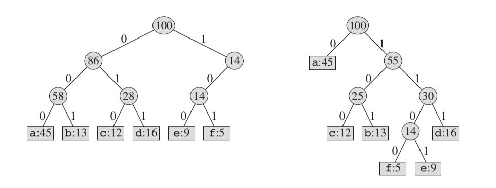
如果我们详细计算按照后面这种编码方式占用的空间的话，后面这种的位数为: 224000。
Huffman树的构造
前面示例中只是展示了一个huffman编码的结果，具体的huffman树该如何构造呢？按照我们前面讨论的思路，越频繁的字符编码越短。反过来说，出现次数越少的字符编码越长。我们可以倒过来，从叶节点来构造整棵树。
我们首先选择频率最低的两个节点，然后将他们归并到一个节点下。这个新构造的节点的频率为两个子节点的频率之和。然后将这个新生成加入到取出了两个子节点的集合中，再重复原来的过程。这样我们就得到最终的huffman树。以前面的示例来考虑，我们这6个节点中，频率最低的是e和f。我们第一步则构造一个合并它们两个的节点，如下图：

这里的一个要点是我们新构造的这个节点，它的频率为e和f频率的和。我们将这个节点当作一个字符加入到原来的集合里，然后再按照前面的过程来选取频率最低的两个：
按照这个过程，后面的流程如下：
现在，我们已经知道怎么来构造huffman树了。我们从具体实现的角度来看看。
我们这里的要点是每次选择最小的两个元素，然后将他们归并到一个新节点下。而新节点的频率值为两个节点的和。那么，我们是不是需要将这些元素都排序呢？如果我们排序的话，可能需要O(nlgn)的时间。但是我们每次移除了两个最小元素之后又要将他们的和加入到集合中来，这样就破坏了原来的顺序性。看来直接排序然后拿过来用的效果并不理想。这个时候，如果我们回想起以前用的数据结构堆来，会发现它是解决这个问题的一个理想选择。
实现讨论
我们建一个堆花费的时间为O(n)，比排序要好一些。另外，每次取两个最小的元素，所以应该是一个最小堆。将新构造的元素加入到堆中，之需要堆做一个调整，时间复杂度为O(lgn)。看来整体情况确实很理想。关于堆和最小堆的分析，可以参考我前面的
堆排序
这篇文章和
priority queue这篇文章
。
我们这里既然是用的最小堆，那完全可以直接使用最小堆来保存所有这些元素。另外，这些元素要构成一个huffman树，我们需要定义每个元素成一个树节点的样式。感觉这里是最小堆和二叉树的结合。
根据这里的讨论，下面是一个参考实现：
import java.util.PriorityQueue;
import java.util.List;
import java.util.ArrayList;
public class Huffman {
public static class Node implements Comparable<Node> {
private int freq;
private char c;
private Node left;
private Node right;
public Node(int freq, char c) {
this.freq = freq;
this.c = c;
}
public Node(int freq) {
this.freq = freq;
}
public Node getLeft() {
return left;
}
public Node getRight() {
return right;
}
public void setLeft(Node left) {
this.left = left;
}
public void setRight(Node right) {
this.right = right;
}
public int getFreq() {
return freq;
}
@Override
public int compareTo(Node node) {
return this.freq - node.getFreq();
}
}
public Node encode(List<Node> list) {
PriorityQueue<Node> queue = new PriorityQueue<Node>(list);
for(int i = 0; i < list.size() - 1; i++) {
Node x = queue.poll();
Node y = queue.poll();
Node z = new Node(x.getFreq() + y.getFreq());
z.setLeft(x);
z.setRight(y);
queue.add(z);
}
return queue.poll();
}
public void printEncodedTree(Node node) {
if(node != null) {
System.out.println(node.getFreq() + " ");
printEncodedTree(node.getLeft());
printEncodedTree(node.getRight());
}
}
public static void main(String[] args) {
Huffman huffman = new Huffman();
List<Node> list = new ArrayList<Node>();
list.add(new Node(45, 'a'));
list.add(new Node(13, 'b'));
list.add(new Node(12, 'c'));
list.add(new Node(16, 'd'));
list.add(new Node(9, 'e'));
list.add(new Node(5, 'f'));
Node node = huffman.encode(list);
System.out.println(node.getFreq());
huffman.printEncodedTree(node);
}
}
这部分代码看起来比较长，主要是充分利用了jdk类库里现有的PriorityQueue。当然，如果我们有兴趣也可以参考我前面关于堆的文章自己来实现一个。另外，这部分代码里一个比较有意思的地方就是我们定义的节点Node必须是可以比较的。因为我们从前面的讨论里也看到，我们每次要挑选最小的元素出来，怎么挑呢？肯定需要比较。所以这里采用一种实现Comparable接口的方法。当然，关于怎么使用PriorityQueue，可以参考后续的文档。代码中还有一个有意思的地方就是在encode方法里，我们是循环遍历n–1次，这样最后PriorityQueue里剩下一个元素，这个元素就是我们要构造出来的树的根节点。
为了能够看到整个树的结果，这里用一个简单的前序遍历方法打印出来了每个节点的频率值。
前面程序运行的结果如下：
100
100
45
55
25
12
13
30
14
5
9
16
前面程序实现的是huffman编码。如果我们还需要解码，该怎么来做呢？这里我们也做一个简单的概括，代码再后续补上。因为这里编码的每个字符都是唯一的。我们可以每次读进一个数字的时候就对应在树里遍历一步。比如说当前读到的是0,则转向左子节点，否则到右子节点。如果这个时候发现已经到叶节点了，这个时候可以将这几个数字编码对应的字符输出。我们可以用一个HashMap来事先保存好他们之间的映射关系。这样每次遍历到一个叶节点构成一个数字序列时我们可以直接取出对应的字符来。
总结
Huffman编码其实本质上并不复杂。它的背后也有一种贪心算法的思路。我们在确定一个频率越高编码越短的前提之后，每次尽量将频率低的放到长一点的叶节点上。具体关于它们为什么是最优的，我们可以参考书上面的证明，这里就不再赘述了。
参考材料
Introduction to algorithms
http://stackoverflow.com/questions/683041/java–how–do–i–use–a–priorityqueue
前言
InsersionSort是一种很简单直观的排序方法。它本身的过程类似于我们我们玩扑克牌的时候一张张的从后面往前的调整顺序。而归并排序是另外一种典型思想的应用，divide and conquer。从表面上看起来，他们两者的联系也就在于都是排序的方法而已。如果这个时候我们把它们和常用的一个数学概念逆序联系起来，会发现他们之间有一些比较有意思的东西。
InsertionSort介绍
插入排序的过程非常简单，用通俗的语言来描述的话，则是如下的一个过程：
1. 从第二个元素开始向前比较，一直到最后一个元素。
2. 在比较的过程中，如果前面的元素比当前元素大，则将前面的元素往后面移动一位。这样直到一个元素，将目标元素放置进去。
因为整体过程比较简单，这里我们不作详细的描述。
一个参考的实现代码如下：
public static void sort(int[] a)
{
for(int i = 1; i < a.length; i++)
{
int key = a[i];
int j = i - 1;
while(j >= 0 && a[j] > key)
{
a[j + 1] = a[j];
j--;
}
a[j + 1] = key;
}
}
这里的一个比较元素和放置的方式是将当前需要参加比较的元素放到一个key元素里，然后每次比较的时候直接将前面大的元素覆盖后面的元素。这样直到循环外面的时候将key放置进去。还有一种实现的方式就是每次发现前面元素比较大的时候就直接和前面元素交换位置。这两者实现的最终结果是一样的。
总的来说，这个排序方法的实现没什么特殊的。我们这里的介绍相当于先埋下一个伏笔。
逆序的概念
我们现在来看看逆序的概念。一般来说，如果我们有这么一个数组a[n]。在这个数组里，则一般元素排列的位置i, j表示它们所在的索引位置。如果对于i < j这两个元素，a[i] > a[j]，则表示它们两个构成一个逆序。
我们来看一个例子，比如说我们有数组{2, 3, 8, 6, 1}。 对于第一个元素2来说，排在它后面的元素而且比它还小的就和它构成了一个逆序。比如2和1。3和1, 8 和6以及1都构成逆序关系。这样，我们就很自然的会引申出一个问题，如果我们需要计算一个数组里所有逆序的关系，有什么好的办法吗？
统计法
第一个我们所能想到的方法就是前面按照定义所说明的过程。既然我们每个逆序都是一个前面元素比后面元素大，那么我们就从数组的开头每个元素向后比较，如果比当前元素小，就算累加一个逆序。这样我们可以得到一个很简单的方法：
public static int inversion(int[] a) {
int count = 0;
for(int i = 0; i < a.length - 1; i++) {
for(int j = i + 1; j < a.length; j++) {
if(a[i] > a[j])
count++;
}
}
return count;
}
从算法的时间复杂度来说，它的复杂度达到了o(nˆ2)。
除了这个方法外，我们还有其他的办法吗？我们再看看另外一个思路。
Insersion sort
现在我们再来回顾前面insersion sort的过程。每次一个元素都要和前面进行比较，如果前面的元素比当前元素大，他们就要交换位置。而前面的元素比当前元素，这不正说明他们构成了一个逆序吗？而我们交换他们的位置就消除了一个逆序。如此看来我们排序的过程就是一个消除逆序的过程。而且我们再来看，我们这个元素和前面的元素比较，他们交换位置之后并不会影响到数组后面的元素和前面元素的逆序关系。所以，我们只要把insersion sort里交换的次数统计出来就知道有多少个逆序了。按照这种思路，我们得到另外一种实现代码：
public static int inversion(int[] a)
{
int count = 0;
for(int i = 1; i < a.length; i++)
{
int key = a[i];
int j = i - 1;
while(j >= 0 && a[j] > key)
{
a[j + 1] = a[j];
j--;
count++;
}
a[j + 1] = key;
}
return count;
}
从前面对insersion sort的讨论知道，它的时间复杂度也是o(nˆ2)。看来这里只是体现了一种思路，但是算法性能上并没有什么改进。那么，我们还有没有更好的改进呢？
归并排序
归并排序的过程主要是一种分治的思想。它首先将数组分解成两个部分，然后分别对每个部分进行排序。通过这么一个不断递归细分的过程达到排序的效果。一个典型的过程如下图：
这里只是展示了整体的排序过程。可是他们和逆序有什么关系呢？考虑到前面我们提到过，排序就是消除逆序的过程。如果每个独立的过程对逆序的计算不影响全局的话，我们可以有一个法子来处理。我们知道，在归并排序里，消除这些逆序的过程就在于merge这个步骤。而merge这里是要合并两个排好序的数组。在前面的示例里我们可以看到一个这样的场景，比如说当我们要归并数组[2, 4, 5, 7]和[1, 2, 3, 6]时。一旦前面的某个元素比后面元素大，则从该元素起到该子数组里所有的元素都和后面的元素构成逆序。而如果我们把后面的元素放入到合并后的数组中时，这些逆序都被消除了。注意到的是，这里消除的是若干个逆序而不止一个。比如说前面2, 4, 5, 7和后面数组里的1就构成了4个逆序，如果把1放到贵并的结果数组中，这些逆序就消除了。
因此，有了这些讨论之后，我们就知道该怎么来计算逆序了。只要在每次归并的时候看后面和前面元素的比较，如果后面的元素比前面元素小，则增加前面数组所有剩下元素的个数作为增加的逆序数。一个根据归并排序的修改版逆序统计方法就出来了：
public static void mergeSort(int[] array, int start, int end)
{
if(start < end)
{
int middle = start + (end - start) / 2;
mergeSort(array, start, middle);
mergeSort(array, middle + 1, end);
merge(array, start, middle, end);
}
}
public static void merge(int[] a, int start, int middle, int end)
{
int[] array = new int[end - start + 1];
int i = 0, j = start, k = middle + 1;
while(j <= middle && k <= end)
{
if(a[j] <= a[k])
array[i++] = a[j++];
else
{
count += middle - j + 1;
array[i++] = a[k++];
}
}
while(j <= middle)
array[i++] = a[j++];
while(k <= end)
array[i++] = a[k++];
for(i = 0; i < array.length; i++)
a[start + i] = array[i];
}
要注意到的一点就是，这里几乎和归并排序的代码一样，就是在里面增加了一行： count += middle – j + 1; 这里的count我们可以在具体实现的程序里定义成一个全局的静态变量。后面只需要取这个变量就可以了。
我们从归并排序的特性说明可以知道，该算法的时间复杂度为O(nlgn)。
总结
求逆序和排序算法有着比较紧密的联系。我们排序就是一个消除逆序的过程。对于这个话题在一年前的时候就已经想讨论一番了。因为除了前面的这几种方法以外还有一种比较巧妙的办法。可惜一直没有时间去体会也没有参透。等以后有时间的时候再好好的补充总结一下。
参考材料
Introduction to algorithms
http://community.topcoder.com/tc?module=Static&d1=tutorials&d2=binaryIndexedTrees
简介
最早碰到这个问题是在读大学刚开始学数据结构的时候。还记得当年为了验证自己的一种思路连续调试了好几天，最后虽然得出了一个结果，不过算法的时间复杂度达到了O(nˆ3)。现在回顾起来挺有意思的。
问题分析
Josephus环的问题看起来很简单，假设有n个人排成一个圈。从第一个人开始报数，数到第m个人的时候这个人从队列里出列。然后继续在环里数后面第m个人，让其出列直到所有人都出列。求所有这些人出列的排列顺序。
一个典型的示例如下图所示：
在上图中，我们从n1元素开始顺时针数到第4个元素，然后n4号出列。这样，我们就剩下了7个元素。我们在剩下的元素里按照原来顺序继续数到后面4个。这样一直下去，我们可以看到依次找到的出列元素为n4,n8,n5,n2,n1,n3,n7,n6。
解法一： 队列
一种方法是我们可以使用队列。怎么来处理呢？因为我们每次都是处理n个元素里第m个元素。如果我们每次从队列里一边取元素，一边又加入到队列的末尾，直到数到第m的时候。这个第m的元素直接让它移除，我们就保证了取到恰当的元素，同时又保证原来环的顺序没有改变。这样一直循环n遍，我们就可以将所有元素都取出来了。从前面讨论的过程我们就可以看到，它的时间复杂度为O(m*n)。
一个参考的代码实现如下：
import java.util.Queue;
import java.util.ArrayDeque;
public class Josephus<T> {
private Queue<T> queue;
public Josephus(int length) {
if(length <= 0)
throw new IllegalArgumentException("Invalid length!");
queue = new ArrayDeque<T>(length);
}
public void process(int interval) {
if(interval <= 0)
throw new IllegalArgumentException("Invalid interval");
int length = queue.size();
for(int i = 0; i < length; i++) {
for(int j = 0; j < interval; j++) {
T t = queue.remove();
queue.add(t);
}
T removed = queue.remove();
System.out.println(removed);
}
}
public void add(T t) {
queue.add(t);
}
public static void main(String[] args) {
Josephus<Integer> josephus = new Josephus<Integer>(7);
josephus.add(1);
josephus.add(2);
josephus.add(3);
josephus.add(4);
josephus.add(5);
josephus.add(6);
josephus.add(7);
josephus.process(3);
}
}
这里的方法借用了jdk里默认自带的队列。算是稍微取了一点巧。
解法二：循环链表
这一种思路和前面的很近似，就是使用一个循环链表，然后每次数到给定的数字m时删除这个指定的元素。在jdk里的LinkedList就是一个这样的典型数据结构。整体的过程伪代码实现如下：
public static void process(LinkedList list, int m, int n) {
Node node = list.first;
for(int i = 0; i < n; i++) {
for(int j = 0; j < m; j++) {
node = node.next;
}
System.out.println(node);
list.remove(node);
}
}
另外一种思路
前面那两种思路看起来比较简单直接，可是从另外一个角度来看觉得似乎思考的深度不够。既然是一个n人的环，然后每次到第m个的时候就去掉。这样的数学过程是不是有一个数学层面的规律可循呢？如果这样的问题可以通过一个简单的数学公式就可以解决的话，那岂不是更好？让我们先将问题稍微简化一点。假定我们不考虑他们顺序移除的元素，就考虑移除某一个元素之后他们之间的对应关系。
我们来看下图：
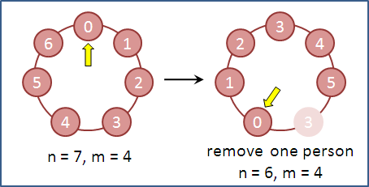
对于一个长度为7的环，我们走的步长是4。在走过4步之后我们找到3这个元素，并将它出队。然后我们在3后面的元素，4开始继续下一个查找步骤。而实际上我们从这个时候开始，不正是从n–1个元素里开始取元素了吗？因此我们可以将这个下一步取元素的问题归结为从n–1个元素里取下一个。不过，在上面的示例中，我们是在走到应该为4的元素那里重新以元素0开始作为n–1个元素取下一个的基础。因此，他们之间还存在着一个转换的关系。
我们再从一个更加一般的场景来考虑。在第一个人出队之后，这个第一个出队的人的编号必然为(m – 1) % n。剩下的n–1个人组成一个新的Josephus环。只是这个时候我们是以m % n开始。假定k = m % n。他们组成一个这样的序列：
k, k+1, k+2...n–2, n–1, 0, 1, ... k–2。这个序列中缺少的k–1恰好就是我们前面一次遍历的时候找到并移除的。在我们将他们归结为n–1规模的Josephus环时，我们对他们有了这么一个映射：
k ––> 0
k+1 ––> 1
k+2 ––> 2
...
...
k–3 ––> n–3
k–2 ––> n–2
这说明了一个什么问题呢？这说明对于我们在n–1的环中，任何一个元素的index对应到n的环中时他们之间差了k，也就是m % n。而这里的差不是一个简单的小于，而是由于整个环的结构，相当于一个循环进位的效果。这样，既然我们在n – 1对应到n的环中间是差了m % n，在更加一般的情况下，任何一个长度为l的环的元素对应到l +1的环的index都是差了这么个m % l。
现在到了问题的关键点了。我们在一个n长的环里取m的步长，然后这个环里少了一个。剩下的n–1个元素构成了n–1环。而这里的元素和n长的元素之间的映射关系是Index(n) = (Index(n – 1) + m) % n。而如果我们载往下一步移除元素呢，他们之间的关系则是Index(n – 1) = (Index(n – 2) + m) % (n – 1)。哈哈，有意思，我们好像找到点规律了。没错，按照刚才的过程，我们这样一直移除元素下去，肯定能够找到最后一个被移除的元素。这个元素则对应只有一个元素的环，很显然，它的值为0。也就是Index(1) = 0。对于这个元素的索引，它对应两个元素的索引是多少呢？按照前面的过程，我们倒推回去就是了。Index(2) = (Index(1) + m) % 2。那么对应3个，4个元素的呢？我们这样一路继续下去就可以找到对应到n个元素的索引了。所以，我们发现了一个有意思的数学归纳关系：
f(1) = 0, f(n) = (f(n – 1) + m) % n。
按照这个关系，我们可以得到最后一个被取出来的元素对应到n个元素的环里的索引值。按照这个公式，我们可以定义出如下的代码：
public static void simulate(int n, int m) {
int answer = 0;
for(int i = 1; i <= n; i++) {
answer = (answer + m) % i;
System.out.println("Survival: " + answer);
}
}
运行这段代码的输出如下：
Survival: 0
Survival: 1
Survival: 1
Survival: 0
Survival: 3
Survival: 0
Survival: 3
这里最有意思的就是里面输出的每个数字都是对应到不同长度的索引值。 比如这里我们对应的7个元素里，最后一个被选择到的在索引为3的那个位置。这就是数学的力量啊，真美！
总结
Josephus环问题是一个很老的问题了。从10多年前碰到它，自己用一种很笨拙的方式去解决它，到现在考虑的用队列和循环链表解决，以及考虑相关的数学关系。我们可以发现一些看似简单的问题其实蕴含着很深层次的数学之美。在一些元素位置的推导方面目前自己还有一些地方理解的不够完善，后续还会继续补充说明。
参考材料
Concrete Mathematics
http://comicmimiboy.blog.163.com/blog/static/1511582702011729102428974/
http://acm.nudt.edu.cn/˜twcourse/JosephusProblem.html
前言
关于KMP算法的描述在网上可以说是多如牛毛，以前学习的时候也碰到过这个问题。只是一直对它的理解不够深刻。而在网上搜索了一通之后，发现大量的文章要么就是简单的说一下思路然后给一堆代码，要么就是纯粹讲理论，对于实际的实现没有任何帮助。自己在学习和实现整个算法的过程中也碰到过几个小的细节，被卡在那里很久。经过很久的揣摩才想清楚了一点，这里就把整个算法的思想和实现过程详细描述一下。希望能够带来一点帮助。
最初始的方法
我们在讨论KMP算法之前，先从一个最原始的思路开始考虑。这是一个检查字符串是否匹配的问题。假定我们有一个源字符串t和需要匹配的模式串pattern。我们希望就是在字符串t里找到一个匹配模式串pattern的地方。我们有一种最简单直接的思路，就是每次去从头比较两个串，如果发现一旦中间有一个不同，则从目标串的后面一个开始，重新去和模式串从头开始比较。这个比较的过程如下图：
从图中我们可以看到，在a的情况下，我们匹配了第一个字符，然后第二个不匹配，然后我们就从目标串的c字符开始，再来看模式串里第一个。在b图中，也不匹配，然后我们继续移动到目标串的下一个。一直到图c的情况下，我们发现它们匹配了。于是找到了一个完整的匹配结果，并可以将这个匹配的位置返回。
按照这个思路，我们也可以很容易得到一个实现，其代码如下：
public static int search(String pat, String txt) {
int m = pat.length();
int n = txt.length();
for(int i = 0; i <= n - m; i++) {
int j;
for(j = 0; j < m; j++) {
if(txt.charAt(i + j) != pat.charAt(j))
break;
}
if(j == m) return i;
}
return -1;
}
在这个方法里，我们假定找到一个匹配的串，则返回和目标串匹配的第一个字符的索引，否则返回–1。整个过程还是很简单的。整个算法的执行时间复杂度为O(mn)，m,n分别为两个串的长度。这个方法好在足够简单直观。可是在一些比较大的文件里搜索模式串的话，还是可能会有一定的性能影响。那么，我们有没有可能改进一下算法来提高性能呢？
第一步的观察
我们再结合一个实例来运行一下前面的代码看看：
在前面示例里，当i为0的时候，我们的模式串j匹配到2的时候失败了。这样我们就匹配了前面两个字符AB。可是在算法里，接着从i=1这个位置开始。其实我们都已经看到了，既然前面两个字符是AB，我们再去从B来做比较都没什么意义了。因为它肯定不一样。其实我们完全可以直接跳过它。
我们再从一个笼统的角度来考虑一下字符串匹配的算法。其实我们要比较一个目标串和模式串是否匹配，无非就有如下这么几种情况。一种就是一个字符都不匹配，就好比前面方法中我们模式串里第一个字符和目标串比较就发现不匹配。还有一种就是完全匹配，那就是我们一个个的比较过来，到最后，发现它们都符合，然后这就是我们所期望的结果。当然，更多的情况可能就是我们只是匹配了一部分结果，然后发现后面的不匹配了。假定我们的模式串长度为n，那么我们可能出现部分匹配的情况就有n–1个，比如说1个字符匹配，2个...n–1个匹配。对于一个都不匹配和完全匹配我们都好理解，反正一个个过来，从前面算法来看，就是一个直接的线性时间。它们几乎没有什么改进的地方。所以我们问题的重点就在于针对有一部分串匹配的时候，怎么来改进它使得算法的性能更佳。从前面的分析我们刚才也看到了，确实对于一些部分匹配的情况来说，有的比较很明显，我们可以直接跳过去的。现在的问题关键在于，这些情况是个什么样的规律呢？我们该怎么来跳过去？
进一步推导
我们来看一个具体的匹配过程：
假定我们的目标串T和模式串P匹配检查到如图的情景。这个时候，我们两个串中间前面5个字符是匹配的，就第6个不匹配。如果我们要寻找下一个去匹配的点，将P从头开始去和后面那个目标串的比较的话，第一个比较的是b，不行，我们可以直接跳过去。那我们再往后面看一点，下一个字符是a，和模式串的第一个匹配，再后面的两个字符ba也和模式串里接着的第二三个字符匹配。就好比如下的情况：
实际上，针对这个情况，我们刚才发现前面的三个字符已经和目标串匹配了的。我们完全可以从模式串的第4个开始和目标串进行比较。而且前面几种情况我们跳过了是因为它们第一个字符就不匹配，可以根本不用比较，而这个的情况是有一部分字符是匹配的，可能在目标串的后面那一段和我们模式串的第三个字符以后的部分匹配。所以这部分我们是不能忽略的。
唔...这个时候，我们好像发现一点点什么规律了。问题的关键在于我们前面匹配了一部分字符串，然后我们又用模式串去和匹配了的那部分做比较，选择一些我们两者覆盖的部分，然后再从后面进行比较。前面这个问题中覆盖的部分如下：
这个覆盖很有意思，它是我们前面部分匹配串的结尾，同时又是和我们模式串的开头是相同的。和我们前面那种原始搜索的办法比起来，我们是希望跳过不需要的比较，同时也希望不能错过一些匹配的位置。假设我们从某个部分匹配的位置开始，模式串想对于开头的位置越近而且它们能够满足前面的开头和结尾匹配的条件的话，它们匹配的那部分也越长。所以严格来说，我们相当于找到一个最长而且相等的前缀和后缀。当我们找到这部分相等的部分时，我们就不需要从头再来比较了，而且也不需要像原来的算法中那样目标串退回到这一次第一个比较的字符的后面，而是直接继续往后面比较。比如说前面示例中我们发现了aba这个部分，那么后面目标串就只要看接着的字符是不是等于模式串中间的第4个就可以了。
结合我们前面的这一段讨论，我们可以找到一个部分匹配串里如何往后面进行选择比较的规律了。我们只要针对各种部分匹配的情况来考察它们是否有是否相等的前缀和后缀，然后来选择进行比较就好办了。我们前面针对的各种部分匹配情况，不管是1个匹配还是n–1个字符匹配，这些匹配的串其实本质上就是模式串的一部分。这样看起来似乎和目标串到没什么关系了。按照我们前面的分析，在上个问题中，我们匹配了5个字符的时候，发现有3个字符的前缀和后缀是相等的。于是后面我们就从第4个开始继续进行比较。如果我们匹配的是4个，3个，或者其他的呢？既然这种情况是定死了的，我们只要推导出来各种情况，以后每次直接从匹配的部分往后比较不就可以了吗？这样看来，我们只要建立这么一个前后缀匹配串的表就好办了。我们先拿一个模式串来推导一下：
在图中，我们将模式串ababaca和每次部分匹配的情况做了一个对比。对于每个匹配的情况，和模式串重合的部分表示相互涵盖的地方。图中字符串红色的部分表示模式串剩余的部分。在前面只有一个字符a的情况下，因为我们希望的是要有前缀和后缀，而对于这种情况，我们可以认为它们没有前缀和后缀，所以返回匹配的字符个数为0。假定我们也按照前面的对应某个字串它有多少涵盖的地方，设为M[i]的数组，很容易得到一个如下的表：
| i |
0 |
1 |
2 |
3 |
4 |
5 |
6 |
| P[i] |
a |
b |
a |
b |
a |
c |
a |
| M[i] |
0 |
0 |
1 |
2 |
3 |
0 |
1 |
实现
有了前面的充分讨论，我们可以考虑一下该怎么实现一个如下M[i]数组。在这个基础之上我们再考虑如何实现整个的算法。我们先来看第一部分。
前缀覆盖实现
现在我们需要的是针对各种长度的字串来考虑实现。对于长度为1的字串来说，肯定结果为0, 可以直接跳过去。对于长度为2的来说呢？我们需要比较的是第2个元素和第1个是否相等，如果相等的话，则有一个覆盖的元素。假如我们前面已经找到覆盖的若干个元素了，在后面接着的那个元素又不匹配，那我们该怎么来调整和计算覆盖了的长度呢？这是这个问题里最关键的部分。以下图为例：
假定我们用j来表示覆盖的字符长度，在前面已经覆盖了3个的情况下，我们看第4个的时候发现已经不匹配了。这个时候我们就需要回退j，这个j该回退到哪里好呢？从0开始？在这个问题中，我们还有一种情况是可能找到匹配覆盖的：
这个场景比较有意思。在前面我们发现第4个不匹配的情况下，我们至少知道前面是已经匹配了3个的。我们需要的是从这3个里回退到某个点来比较后面一个字符和前面不匹配的。最有意思的地方在于，我们这里不又回到前面找覆盖的子问题吗？至少前面我们已经找出来3个的元素里覆盖的是1。这里就退到了1这个位置来和前面的做比较。更巧合的是1表示3个里覆盖了一个，那么以这个来继续往后面比较的元素它的索引也正好是1。和这种情况一致的场景如下图：
在前面我们匹配了3个之后发现第4个不匹配了，然后跳到j = 1开始比较。这里正好又匹配上了。匹配上之后我们就不用再往后面退了，只需要在原来这个的基础上加1表示这种情况下匹配的字符个数。
所以，上面总结起来就是这么一个过程，当我们匹配到某个字符，假设到第j个了。这时发现它不匹配，我们就将j回退到M[j – 1]，如果这个时候它和目标字符相同了，则表示这个长度匹配的字符串长度为M[j – 1] + 1。否则我们就继续往回退。我们这里不断回退肯定是一个循环。而退出这个循环的条件是j == 0或者M[j – 1]这个位置的字符和目标字符相等了。所以我们可以得到一个如下的实现代码：
public static int[] computePrefix(final String s) {
int size = s.length();
int[] result = new int[size];
int j = 0;
for(int i = 1; i < size; i++) {
while(j > 0 && s.charAt(j) != s.charAt(i)) {
j = result[j - 1];
}
if(s.charAt(j) == s.charAt(i)) {
j++;
}
result[i] = j;
}
return result;
}
现在，我们也已经明白为什么要费这么大的劲来算一个这样的结果数组。这个结果数组表示的是对应匹配到某个长度字串时它们的前后缀覆盖长度，也表示我们在模式串里进行下一个比较的索引。
总过程实现
我们在前面的基础上实现完整的过程。这个过程的实现代码如下：
public static void kmp(String target, String pat) {
int sourceLength = pat.length();
int targetLength = target.length();
int[] result = computePrefix(pat);
int j = 0;
for(int i = 0; i < targetLength; i++) {
while(j > 0 && pat.charAt(j) != target.charAt(i)) {
j = result[j-1];
}
if(pat.charAt(j) == target.charAt(i)) {
j++;
}
if(j == sourceLength) {
System.out.println("find at index " + (i - j + 1));
j = result[j-1];
}
}
}
它的过程和前面的依次遍历的一个区别在于每次我们在碰到一个不匹配的时候，就通过pat字符串的匹配表往后退。和前面的比起来，它不需要两个串都退回到开始。由于在循环里我们可能查找到多个匹配的结果。我们在后面把每次匹配的索引都打印出来了。
所有完整的代码都放在附件里。
总结
前面对KMP算法的过程和推导讨论了这么多。这个问题的本质上还是对所有部分匹配的情况建立一个前后缀覆盖的关系表。以后查询的时候可以通过这个表来决定匹配多少个字符的时候从哪个字符开始进行匹配。这样减少了目标字符串的回退，使得算法的性能得到比较大的提升。其中的一个难点在于怎么建立这么一个匹配关系表。其实除了我们目前这种推导和建立匹配关系的方法。我们还有一种和有限状态机相关的方法来解决这个问题。在后续的文章里会对这一块做一个进一步的补充。
参考资料
Algorithms
Introduction to algorithms
简介
最近几天在家闲来无事，就打算把几个原来一直不太清楚的问题整理一下。现在代码都写得想吐了，好在问题也弄清楚了。Minimum Spanning Tree是一个图算法中很典型的应用，我们常用的构建这种树的算法有两种，Prim算法和Kruskal算法。从表面上看起来这两种方法比较复杂，等摸清楚了他们的思路之后会发现还是基于一个很简单的思想。另外，在实现各种细节的时候所面临的各种问题，包括怎么对图的结构进行定义，怎么来保存和返回各种数据类型，这些都构成一个很有意思的解决方法。当我们对问题一个个的击破之后，感觉最后的解法像是搭积木一样好玩。
定义和结构
Minimum Spanning Tree是一棵树。但是它是基于图来构造的。这里基于一个基本的前提条件就是这个图本身是连通的。在这个基础上，假设我们要构造一棵树，使得它们不仅连接了所有的节点，而且它们所有边的权值之和是最小的。而通过什么样的方式找到这些边和节点，就是我们需要考虑的问题。
一个典型的Minimum Spanning Tree如下图：
在图中加粗的线条将所有的点都连接在一起，同时它们的总权值为最小。
在考虑各种找寻的算法之前，我们肯定要考虑一下用什么样的结构来描述这种图。我前面的一篇
文章
描述过图的结构和遍历思路。不过在那里只是针对节点和边之间的关系做了一个描述，并没有考虑到如果每一个边有对应权值的情况。所以我们需要对原有定义的结构做一点调整。回想原来的结构里，我们对所有节点编码为数字0–––n–1。而所有的边则作为每一个链表里对应的数值。这里，我们需要定义一个Edge对象。假定我们这里仅考虑无向图的情况，那么对于每个Edge对象，我们需要将它同时加入到对应到两个节点的adj链表里。
这样，我们可以先定义Edge对象如下：
public class Edge implements Comparable<Edge> {
private final int v;
private final int w;
private final double weight;
public Edge(int v, int w, double weight) {
if(v < 0)
throw new IndexOutOfBoundsException(
"Vertex name must be a nonegative integer");
if(w < 0)
throw new IndexOutOfBoundsException(
"Vertex name must be a nonegative integer");
if(Double.isNaN(weight))
throw new IllegalArgumentException("Weight is NaN");
this.v = v;
this.w = w;
this.weight = weight;
}
public double getWeight() {
return weight;
}
public int either() {
return v;
}
public int other(int vertex) {
if(vertex == v)
return w;
else if(vertex == w)
return v;
else
throw new RuntimeException("Inconsistent edge");
}
@Override
public int compareTo(Edge that) {
if(this.getWeight() < that.getWeight())
return -1;
else if(this.getWeight() > that.getWeight())
return 1;
else
return 0;
}
@Override
public String toString() {
return String.format("%d-%d %.2f", v, w, weight);
}
}
我们定义的这个Edge类有几个需要注意的地方。一方面它是连接两个节点，对于无向图来说，无所谓谁先谁后，只需要标注好一个是哪个节点，另外一个是哪个节点就好办了。另外，因为既然是定义成一个边，它有自己的权值，这些Edge对象可能会作各种比较。尤其在后面一些算法里要取一些权值低的边。要使得Edge对象支持比较，我们还需要实现接口Comparable。
增加了Edge类之后，我们需要的是在原来图定义的基础上修改一下。原来节点的adj关联表是Integer，这里则是Edge对象。 那么这个图的典型构造函数如下：
public EdgeWeightedGraph(int vertices) {
if(vertices < 0)
throw new IllegalArgumentException(
"Number of vertices must be nonenegative");
this.vertices = vertices;
this.edges = 0;
adj = new ArrayList<LinkedList<Edge>>();
for(int i = 0; i < vertices; i++) {
adj.add(new LinkedList<Edge>());
}
}
在给定长度的参数基础上，我们创建一个List，里面的每个成员是一个链表。如果我们要增加一个边到集合里，或者返回所有的边，我们需要定义addEdge和edges方法。它们的定义如下：
public void addEdge(Edge e) {
int v = e.either();
int w = e.other(v);
if(v < 0 || v >= vertices)
throw new IndexOutOfBoundsException(
"vertex " + v + " is not between 0 and " + (vertices - 1));
if(w < 0 || w >= vertices)
throw new IndexOutOfBoundsException(
"vertex " + w + " is not between 0 and " + (vertices - 1));
adj.get(v).add(e);
adj.get(w).add(e);
edges++;
}
public LinkedList<Edge> edges() {
LinkedList<Edge> list = new LinkedList<Edge>();
for(int v = 0; v < vertices; v++) {
int selfLoops = 0;
for(Edge e : adj(v)) {
if(e.other(v) > v) {
list.add(e);
} else if(e.other(v) == v) {
if(selfLoops % 2 == 0) list.add(e);
selfLoops++;
}
}
}
return list;
}
addEdge的方法比较容易理解。我们需要在Edge对象对应的两个节点里添加关联，所以有adj.get(v).add(e)和adj.get(w).add(e)。而对于edges方法来说，因为每个边有两个节点关联到上面，如果遍历所有节点的话，这些边会被遍历两次。为了避免重复的将边统计进来，我们用一个e.other() > v来设定一个条件，使得只有other方法返回值比当前v节点大的时候再统计。后面这部分的if(e.other(v) == v)情况是用来统计一些指向节点自身的边的情况。关于这个图的详细定义细节可以查看后续附件里的完整代码。
在定下来具体的图数据结构之后，我们来看看两个具体实现的算法。
Prim算法
Prim算法的基本思路如下，首先选择任意一个节点作为一个单节点的树。它就相当于是一棵树的根或者发起点。然后我们从这个节点开始，看它关联的所有边。每次我们选择一个边的时候，挑选一个权值最小的而且不在这个树的节点集合里的。因为如果我们增加一个边的时候，同时就把这个边所关联的另外一个节点加入到前面的树的节点集合里来了。
我们以如下的图来说明Prim算法的过程，首先，我们在图里选择节点a：

节点a是我们考虑的起始节点，按照算法的描述我们就要通过它来选择边，扩展整个树。a的边有两个分别关联到b和h，它们的权值分别为4和8。那么这时我们选择权值最小的边4, 这个边关联的节点b不在我们原来的树节点集合里。将这个边和关联的节点加入到树中间，这样我们树的集合里节点为{a, b}。如下图：
这个时候，我们要考虑和扩展的边就不仅仅是原来节点a的边了，也要考虑节点b的。从图中可以看到权值最小的边为bc, ah，它们的值都为8。因为c和h都不在树的节点集合里，所以它们都可以选取。假定我们选取bc。那么节点集合为{a, b, c}，其结构如下图：
按照前面同样的思路，c被加入到树里了，它关联的所有节点和边就需要和前面树里节点的边放到一起来考虑。所以这次我们选取到的节点是ci，它的权值为2,而且i也不在节点集合里。加入后的节点集合为{a, b, c, i}，如下图：
按照前面讨论的过程，我们可以很容易推导出后面最终的树结构图：
总结起来，Prim算法无非就是首先找到一个节点，然后选择它关联的节点中权值最小的边，并将对应的节点也加入集合。然后将新加入的节点的边也加入到边选择考察的范围。这样重复前面的扩展过程，导致节点和边的队伍不断扩充壮大。
现在，从实现的角度来考虑，我们需要注意几个细节。一个就是，我们要考察的边必须放在某个地方保存起来，它们必然是我们的树节点集合里关联的边。这样每次我们能很方便的去选取它们最小的那个。另外一个就是，我们每次选择到一个边的时候还是需要判断这个新加入的点是否已经在树节点的集合里了，如果已经在了就不能加这个边和节点。这两个问题，我们分别实现的思路如下。因为每次我们需要加入边，并且要选择最小的出来，我们不一定要对它们所有的进行排序，最有效的办法是采用一个最小堆。实际代码中可以使用PriorityQueue。而至于判断是否重复访问节点，我们可以定义一个和节点对应的boolean数组，每次访问到对应的节点时就将该数组里对应的元素值设置为true。
综合这些考虑，一个Prim算法的实现代码如下：
import java.util.Queue;
import java.util.PriorityQueue;
import java.util.LinkedList;
public class LazyPrimMST {
private double weight;
private Queue<Edge> mst;
private boolean[] marked;
private Queue<Edge> pq;
public LazyPrimMST(EdgeWeightedGraph g) {
mst = new LinkedList<Edge>();
pq = new PriorityQueue<Edge>();
marked = new boolean[g.getVertices()];
prim(g, 0);
}
private void prim(EdgeWeightedGraph g, int s) {
visit(g, s);
while(pq.size() > 0) {
Edge e = pq.remove();
int v = e.either(), w = e.other(v);
if(marked[v] && marked[w]) continue;
mst.add(e);
weight += e.getWeight();
if(!marked[v]) visit(g, v);
if(!marked[w]) visit(g, w);
}
}
private void visit(EdgeWeightedGraph g, int v) {
marked[v] = true;
for(Edge e : g.adj(v))
if(!marked[e.other(v)])
pq.add(e);
}
public Iterable<Edge> edges() {
return mst;
}
public double weight() {
return weight;
}
}
这里稍微截取了一部分代码。最关键的代码在prim()方法和visit()方法里。我们定义了pq来每次visit一个节点的时候将关联的边加入到其中。在加入之前我们只需要判断一下这个要访问的节点是否已经访问过。而prim方法里每次通过pq.remove()方法取出权值最小的边。这些选取出来的边，至少有一个节点已经在树的节点集合里面了，所以我们之需要判断一下关联的节点里有一个不在，我们就可以去访问该节点。
Kruskal算法
Kruskal算法考虑的思路和前面的不同。既然我们要找的Minimum Spanning Tree是要求涵盖所有节点并且权值最小。那么如果我们从权值最小的边这个角度入手呢？如果每次我们都选择权值最小的边，然后再考察它所关联的节点。假定我们图里的每个节点都是一个个独立的集合。它们每个集合就是包含它们本身。而一旦我们选择了一个边，相当于两个集合直接建立了一个关联，或者说将它们给合并了。比如最开始的时候，我们找到第一个边，那么它就将两个独立的节点合并成一个集合。然后我们再去找权值最小的边。当然，并不是每次我们找到的权值最小的边就合适。比如说我们原来已经有几个节点在一棵连通的树里了，我们找到的边如果它的节点都在数的节点集合里就不合适。
我们结合下面的图来详细的走一下后面的步骤。首先我们从图中权值最小的边，在这里是选择了hg，它的权值为1。
这里，我们选择的边将h, g关联起来，它们相当于形成了一棵树。然后，我们再选择下一个权值最小的边，这次我们找到了ci, gf，假定我们选择ci，则如下图：
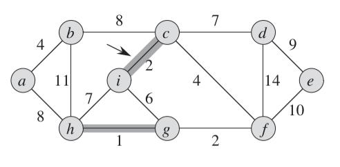
在这里我们会发现一个有意思的地方。在不断引入最小权值边的时候，我们会引入一组组独立的集合，它们是相互关联的，但是暂时它们和其他的集合又是相互独立的。这时，我们再按照前面的思路挑最小的边，这次选择了gf：
在这里，我们可以反思一下。我们选择的边gf可以加入到hg的集合里。原因在哪里呢？无非就是因为这个权值为2的边gf一边g节点所涵盖的集合是{g, h}，而另外一边涵盖的节点集合是{f}，它们不一样，所以可以合并。所以，问题的最关键就在这里。我们每次选择权值最小的边，然后比较它两边关联的节点是否在同一个集合，如果不是则选取成功，否则需要继续选择后面的。按照这个思路，我们后面选取到的树结构如下：
现在，我们也从实现的角度来考虑一下细节。首先，我们需要将所有的边都放在一个地方好每次方便去权值最小的边。借用前面的思路，我们可以考虑最小堆。另外，每次找到的边就带来了新的节点。这些关联的节点就组成了一个集合。在不断导入边的过程中会形成多个集合。我们该用什么数据结构来描述它们呢？我们考虑到，每次我们需要加入元素引入集合。在引入新的边的时候又会带来集合之间的查找与合并。我们实际上可以使用Disjoint Set来处理。这个Disjoint Set是什么，有什么作用呢？我们这里先不详细介绍。我们暂时只需要知道它能够实现很好的集合合并操作，而且它查找一个元素是否在集合中的操作也非常有效。
对于我们前面讨论的Disjoint Set结构，它有两个比较常用的方法，一个是union()，主要是用来将两个元素归并到一个集合中。还有一个是connected，用来判断两个节点是否已经在同一个集合中。就是利用了这两个有效的方法，我们可以很容易的得出Kruskal算法的实现：
import java.util.Queue;
import java.util.LinkedList;
import java.util.PriorityQueue;
public class KruskalMST {
private Queue<Edge> mst;
private double weight;
public KruskalMST(EdgeWeightedGraph g) {
mst = new LinkedList<Edge>();
Queue<Edge> pq = new PriorityQueue<Edge>(g.edges());
UF uf = new UF(g.getVertices());
while(pq.size() > 0 && mst.size() < g.getVertices() -1) {
Edge e = pq.remove();
int v = e.either(), w = e.other(v);
if(uf.connected(v, w)) continue;
uf.union(v, w);
mst.add(e);
weight += e.getWeight();
}
}
public Iterable<Edge> edges() {
return mst;
}
public double weight() {
return weight;
}
}
在构造函数里，我们通过g.edges()将图里面所有的边取出来放到PriorityQueue里，然后不断的从里面取边。while循环的条件在于只要我们能够找到节点个数–1个边或者队列为空就可以了。所以循环里面的代码很简单，每次我们取出边，然后判断两边的节点是否属于同一个集合，是的话则忽略，不是的话则归并它们到同一个集合里。mst则用来保存所有选取出来的边。
这样，一个最小权值的树就这样构造出来了。前面我们提到的Disjoint Set到底是怎么整的，使得它们能够这么方便的处理集合呢？我们现在来看个究竟吧。
Disjoint Set
我们要考虑的这个集合和通常使用的Set还有点不一样。在jdk的类库里，Set的实现是基于一个HashMap来做的。在我们前面的问题场景里，一开始所有的节点相当于一个个独立的集合，相当于一开始有n个节点，就有n个集合。在后续通过引入边的时候将一些点合并。因此，问题的关键点就在于我们怎么有效的来表示和操作它们。
我们继续这么考虑，这里所有的节点相当于一个数组，对应的下标就是每个节点。所以，当我们引入一个边的时候，如果使得它们表示的值是相同的，以后其它并入这个集合的都设置成同样的值这不就可以表示同样的集合了吗？而如果我们需要比较两个节点是不是在同一个集合里，只要看它们对应的值是否相同就可以了。我们以一组数字组成的数组为示例来看：
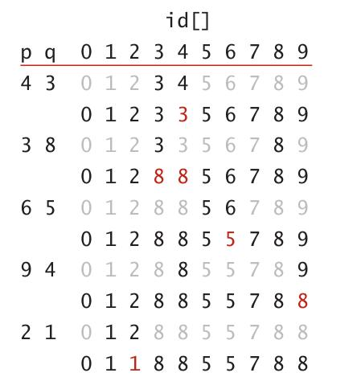
最开始的id[]列表里每个元素正好对应它们的下标。在加入p q = (4, 3)的时候，我们将4和3合并，也就是说将元素4的值修改成和3的一样。然后在加入(3, 8)的时候因为3和4已经是一个集合里的了，于是将3, 4的元素值都修改成和8一样。这样依次类推...
于是我们可以实现一个如下的集合定义：
public class UF {
private int[] id;
private int count;
public UF(int n) {
count = n;
id = new int[n];
for(int i = 0; i < n; i++)
id[i] = i;
}
public int count() {
return count;
}
public boolean connected(int p, int q) {
return find(p) == find(q);
}
public int find(int p) {
return id[p];
}
public void union(int p, int q) {
int pId = find(p);
int qId = find(q);
if(pId == qId) return;
for(int i = 0; i < id.length; i++)
if(id[i] == pId) id[i] = qId;
count--;
}
}
我们这里定义的代码实现在于每次一个集合和另外一个新加入的元素合并时，就把集合里所有的元素对应值都统一成新加入元素的对应值。而我们知道，这里id[x]表示的就是元素x所对应的集合唯一标识。我们查找元素也很方便，只要返回id[x]就可以了。采用这种方式比较简单。不过每次集合合并的时候需要修改一个集合里所有的元素，在一些极端情况下，时间复杂度都可以到O(n)了。
前面的定义和方法能够实现很快的查找某个元素是否在某个集合里，因为find()方法只要访问一下数组的元素，它的时间消耗只是一个常量。只是在合并操作的时候会花的时间稍微多一点。除了前面的那种表示方法，其实我们还有一种方法，它使得集合合并的时间效率更高。
这种方法是基于这样一个思路的。前面我们每次要合并集合的时候都需要更新某个集合里所有的元素，可是如果我们换个角度来看。不管你某个集合怎么构造，它最开始合并的时候如果我们指定一个节点它作为另外一个节点的上一级，那么每次加入一个元素的时候，我们只需要合并两个集合的最上层，只要它们做一个调整就可以了，其它的元素只要设置为指向它自己的上级就可以了。这就好比两个公司合并，只要两个公司的高层指定一下结构和关系就行了，下面的人不需要管，该对谁负责的还是对谁负责。我们以下图为例说明一下整个过程：
在上图中，一开始每个节点是独立的。在加入(4, 3)的时候，我们设置4节点的上级为3,于是将它更新为3. 然后再考虑(3, 8)，因为3节点所在的集合最高节点是3, 而8节点就是本身，按照前面的原则，只要将3更新为8就可以了。(5, 6)也是如此。最有意思的就是(9 ,4)，因为4节点所在的集合的最高节点需要递推。首先前面4的上一级节点是3, 而3的上一级是8, 所以9节点更新为8。所以说的更具体一点就是对于(a, b)中间两个节点，分别找到节点a和b的最高级节点，然后将a的最高级节点设置成b的最高级节点。于是，我们就有了另外一种实现：
public class UF {
private int[] id;
private int count;
public UF(int n) {
if(n < 0)
throw new IllegalArgumentException();
count = n;
id = new int[n];
for(int i = 0; i < n; i++)
id[i] = i;
}
public int count() {
return count;
}
public boolean connected(int p, int q) {
return find(p) == find(q);
}
public int find(int p) {
if(p < 0 || p > id.length)
throw new IndexOutOfBoundsException();
while(p != id[p])
p = id[p];
return p;
}
public void union(int p, int q) {
int pRoot = find(p);
int qRoot = find(q);
if(pRoot == qRoot)
return;
id[pRoot] = qRoot;
count--;
}
}
在这里，如果我们需要找到某个节点所属于的集合，就相当于找它最高级节点，这个过程通过不断查找它的上一级节点，直到这个节点指向它自身就可以了。而union方法也很简单，更新一下一个节点集合最高节点的值就可以了。
总结
Minimum Spanning Tree这个问题引出的两种典型解决方法的思路其实并不复杂。用几句话来概括一下的话，Prim算法是由点及边，扩散到整个图中。相当于一颗种子发芽的过程，不断向外扩展自己的根和枝叶。只是选择的这些节点都是相对自己来说代价最小的。而Kruskal算法的思路有点相反。它是以边带点。有点类似于农村包围城市的味道，每次它都是选择权值最小的边，将边对应的点加入到集合里来。通过一个最小权值的边来达到集合之间的互通有无。当然，它里面用到了disjoint set结构的特性以及最后构成树的边必然为节点个数–1的特性，使得它的实现也很简单直观。这两种算法的核心思想背后都是采用的贪婪算法的思想。
另外，里面运用到的disjoint set的结构在查找和归并一些集合数据的时候具有比较理想的性能，它和我们使用的Set类还不太一样。
参考材料
Introduction to algorithms
Algorithms
简介
在学习stack的时候，我们知道这个数据结构在很多地方有一个很好的应用。比如编程语言中的方法调用。另外，在一些算术表达式求值的过程中，对它的应用也比较巧妙。
一个求表达式的问题
假设我们有一个算术表达式，比如((1 + (2 * 3)) / (4 + 5))。在这里，表达式是一个字符串。我们需要解析出来其中常用的运算符号比如+, –, *, /。同时，也要根据括号定义的运算顺序计算出一个合理的结果。
分析
对于这个问题，该怎么来分析呢？按照以前的文章分析，这里所有表达式都是按照括号给包含起来的，从递归定义的角度来说，它是一个(a op b)的形式。其中a, b表示为一个子表达式。它们也可能是一个数字。以前面的示例来说，我们如果要计算表达式((1 + (2 * 3)) / (4 + 5))的值，实际计算的过程如下：
((1 + (2 * 3)) / (4 + 5)) => (( 1 + 6) / (4 + 5) ) => (7 / (4 + 5)) => (7 / 9) => 0.77
从前面的计算过程里，我们如果仔细观察的话，会发现为了消除一组括号，就必须每次将符合(a op b)这样的算式给合并。这里的a和b是最基本的数字。
按照这一步来看，我们可以首先计算的是(2 * 3)，我们也可以直接计算(4 + 5)。这个时候该怎么取舍呢？毕竟要消除的是一组括号。消除它的条件是当碰到一个右括号的时候，就取这个算式里左边的两个数字和一个运算符号进行计算。如果按照从左到右的先后顺序，我们可以推导出一个和前面演示过程一样的步骤。这个步骤概括起来就是：
1. 从左到右遍历，碰到有右括号的时候，取到和右括号对应的左括号之间的元素进行运算。
这样，一个基本的表达式就可以消除了。
可是，上述的这个过程还是有一些模糊的地方。我们该怎么来记录这个左括号和右括号之间的元素呢？而且还包括有运算符。如果碰到右括号的时候，我们需要往回去取。所以这个时候可以考虑使用栈来保存原来的数据。当碰到右括号就从栈弹出几个元素来进行运算。
按照这种思路，我们可以用一个栈来处理整个表达式，它的过程如下：
1. 遍历表达式元素
2. 如果不是右括号，元素直接入栈，对于左括号，可以直接忽略
3. 如果是右括号，弹出栈顶的3个元素，分别对应a, op, b。
4. 计算上述的表达式结果，然后将该结果压栈。
按照这种思路，我们可以很容易的得出实现代码来了。这里就不详细贴代码了。
上面说的这种思路是将数字和运算符作为字符放到一个栈里来处理。实际上，如果我们稍微做一点变通，再使用一个额外的运算符栈，只是用来保存运算符。而原来的栈只保存运算的数字。我们可以得到一个和前面思路相近的变体。它们的差别在于，每次我们碰到右括号的时候，直接从运算符栈里弹出栈顶的元素，然后再从运算数据的栈里取出最上面的两个元素。和前面的方法实现比起来，这种方法要显得更加简单直观一些。一个参考的实现如下：
import java.util.Scanner;
import java.util.Stack;
public class Evaluate {
public static void main(String[] args) {
Stack<String> ops = new Stack<String>();
Stack<Double> vals = new Stack<Double>();
Scanner scanner = new Scanner(System.in);
while(scanner.hasNext()) {
String s = scanner.nextLine();
if(s.equals("("));
else if(s.equals("+")) ops.push(s);
else if(s.equals("-")) ops.push(s);
else if(s.equals("*")) ops.push(s);
else if(s.equals("/")) ops.push(s);
else if(s.equals("sqrt")) ops.push(s);
else if(s.equals(")")) {
String op = ops.pop();
double v = vals.pop();
if(op.equals("+")) v = vals.pop() + v;
else if(op.equals("-")) v = vals.pop() - v;
else if(op.equals("*")) v = vals.pop() * v;
else if(op.equals("/")) v = vals.pop() / v;
else if(op.equals("sqrt")) v = Math.sqrt(v);
vals.push(v);
}
else vals.push(Double.parseDouble(s));
}
System.out.println(vals.pop());
}
}
总结
使用栈来求一些算术表达式在编译原理等场景中很常见。关键在于要理顺它们的求值顺序，考虑利用一些括号的对称以及表达式本身递归的定义等特性。这里讨论的是中缀表达式的求值。实际上对于前缀表达式以及后缀表达式的求值也有很多有意思的方法值得我们去探讨。
参考材料
algorithms
简介
杨氏矩阵是在很多面试和讨论中用到比较多的一个话题。它本身独特的构造使得它的一些增删查改的操作和堆排序以及二分搜索的思想很类似。它本身问题不难，实际操作的时候会稍微有点繁琐。
问题
假定我们有一个mxn的矩阵，它的每一行以及每一列都是排好序的。我们可以称这个矩阵为Young tableaus(杨氏矩阵)。在这个矩阵里，可以有某些元素不存在的情况，也就是说，这些位置的值被设置为无穷大（∞）。我们以元素按照非递减的顺序为例，假设我们有这么一组数字{9, 16, 3, 2, 4, 8, 5, 14, 12}，我们可以构造一个如下的杨氏矩阵：
由前面的基本定义，我们发现几个很直观的特性：
一、对于每个元素，如果不是值为∞的，它的右边和下面的元素都大于或者等于它。那么，对于整个矩阵来说，它最小的元素肯定在最左上角，也就是元素a[0][0]。
二、由于整个矩阵可以有空缺的元素，我们用∞来表示。那么，如果它最右下角的元素a[m][n]不是∞的话，我们可以推断这个矩阵是满的矩阵，也就是说不存在∞的元素。
ok，有了前面的这部分定义，我们来看看矩阵的几个常见操作吧。
增(insert)
insert元素的过程就是我要新增加一个元素到矩阵中，保证我插入的这个元素最后要放在一个适当的位置以满足杨氏矩阵的特性。这里最关键的就是有两个点：1. 找到一个初始插入的点。 2. 调整，将元素放到合适的位置上。
放元素的话，我们可以考虑到，只要这个矩阵不是满的，那么他最后的那个放置元素的点应该是最右下角的那个。我们可以考虑先把元素放到这个点。然后再来调整。以前面给出的矩阵为例，假设我们要插入一个元素7，我们插入元素后的矩阵结果如下：
调整的话，我们考虑，假设它左边的元素和上面的元素都存在，而且比自己大的话，我们就需要取中间最大的那个元素，和当前元素交换位置。对于两边元素一样大的情况，先比较同行的或者同列的都可以。假定我们先比较同一列的，然后比较同一行的，则位置调整的步骤如下：
1. 7 和上面的∞比较，因为7小于∞，根据先和同列元素比较的方式，则先将7与它上面的元素交换。这样一直将7交换到了最右上角。如下图：
2. 现在，我们再来比较。7已经到了最右上角，它往上没有元素了，往左有一个9。所以在往左或者往上的方向上比它大的最大元素为9。它需要和9交换。如下图：
前面不断比较交换的过程终止条件是要么元素已经遍历到了矩阵的边角了，要么就是它所有左边和上面的元素都比它要小了。我们可以得出如下的代码：
public static void insert(int[][] a, int k) throws Exception
{
int i = a.length - 1;
int j = a[0].length - 1;
decreaseKeyRec(a, i, j, k);
}
public static void decreaseKeyRec(int[][] a, int i, int j, int k) throws Exception
{
if(a[i][j] < k)
throw new Exception("Invalid key");
a[i][j] = k;
int largesti = i;
int largestj = j;
if(i - 1 >= 0 && a[i - 1][j] > a[i][j])
{
largesti = i - 1;
largestj = j;
}
if(j - 1 >= 0 && a[i][j - 1] > a[largesti][largestj])
{
largesti = i;
largestj = j - 1;
}
if(i != largesti || j != largestj)
{
swap(a, i, j, largesti, largestj);
decreaseKeyRec(a, largesti, largestj, k);
}
}
这里代码实现的一个要点就是比较a[i][j]和a[i–1][j]以及a[i][j–1]，找到他们中间最大的那个，然后再将a[i][j]和最大的元素交换。前面decreaseKeyRec()方法用了递归的方式实现。我们也可以写出一个非递归的方法：
public static void decreaseKey(int[][] a, int i, int j, int k) throws Exception
{
if(a[i][j] <= k)
throw new Exception("Invalid key");
a[i][j] = k;
int largesti = i;
int largestj = j;
while(true)
{
if(i - 1 >= 0 && a[i - 1][j] > a[i][j])
{
largesti = i -1;
largestj = j;
}
if(j - 1 >= 0 && a[i][j - 1] > a[largesti][largestj])
{
largesti = i;
largestj = j - 1;
}
if(largesti == i && largestj == j)
break;
swap(a, i, j, largesti, largestj);
i = largesti;
j = largestj;
}
}
这个方法的时间复杂度为O(m+n)。我们在实现中还要考虑的一个点就是，既然我们用∞来表示空缺的元素，在实际实现中该用什么值呢？很多版本的实现用一个特殊的数值。这里假定所有值都在int范围，用Integer.MAX_VALUE来表示这个∞的特殊值。
删(delete)
删除一个元素的过程也可以类似的考虑如下。假定我们要把矩阵中指定的一个元素去掉，那么，我们就需要将它右边或者下面的元素进行调整，来填补原来的位置以保证后续的矩阵符合杨氏矩阵的特性。那么这里就有这么一种思路：
1. 将要删除的元素设置为∞。
2. 再通过将∞的这个元素向友和向下调整，最终移到矩阵满足条件为止。
以下图为例，假设我们删除a[0][0]这个点的元素。
在将a[0][0]删除后我们要比较它右边和下面的元素，如果哪个小就交换它和这个最小元素的位置。在这个问题中，a[0][1]为4，a[1][0]为3.所以交换a[0][0]和a[1][0]的位置，如下图：
根据前面的推导，先后交换的元素为5， 12.最终得到如下图的结果：
我们调整的过程称为youngify，代码实现如下：
public static void youngify(int[][] a, int i, int j)
{
int minI = i;
int minJ = j;
if(i + 1 < a.length && a[i + 1][j] < a[i][j])
{
minI = i + 1;
minJ = j;
}
if(j + 1 < a[0].length && a[i][j + 1] < a[minI][minJ])
{
minI = i;
minJ = j + 1;
}
if(minI != i || minJ != j)
{
swap(a, i, j, minI, minJ);
youngify(a, minI, minJ);
}
}
要写一个非递归版的也很容易：
public static void youngifyIter(int[][] a, int i, int j)
{
int minI = i;
int minJ = j;
while(true)
{
if(i + 1 < a.length && a[i + 1][j] < a[i][j])
{
minI = i + 1;
minJ = j;
}
if(j + 1 < a[0].length && a[i][j + 1] < a[minI][minJ])
{
minI = i;
minJ = j + 1;
}
if(i == minI && j == minJ)
break;
swap(a, i, j, minI, minJ);
i = minI;
j = minJ;
}
}
如果我们还记得heapsort里面的heapify，会觉得他们的思想简直是太像了。没错，这就相当于一个heapify的过程。我们进行youngify的时间复杂度为O(m+n)。
查(find)
查找元素有几种办法。一个比较直接的办法就是逐行逐列的去查找，找到之后就返回。这种方法的时间复杂度为O(mxn)。
还有一种就是利用了矩阵的一个性质，他的每行每列都是排序的。那么我们可以用二分查找的办法来做。这样查找的话就需要逐行的去查，时间复杂度大致为O(mlogn)。在这里，前面两种办法就不再详细实现了。
我们来考虑第三种方法。我们的矩阵小的元素在左上方向，大的元素在右下方向。如果我们考虑矩阵的左下角或者右上角的话，会发现一个有意思的事情。就是他们的一个方向的元素大于等于自己而另外一个方向的元素小于等于自己。假定我们从右上角开始来查找，目的元素比当前元素大则向下查，比当前元素小则向左查。这样最终可以找到元素或者遍历到元素的对角位置。以下图为例，假设我们要找元素5，则起始点是在元素9，比较发现5小于9，则找9左边的元素。
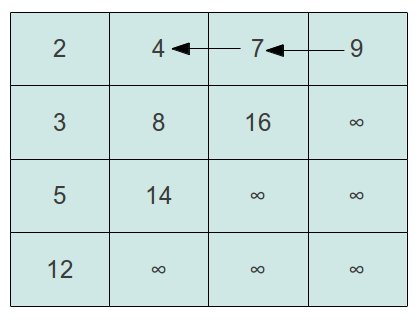
我们再依次比较下去，5<7，则比较7左边的元素4，5>4，则再比较4下面的元素8，这样依次下去，形成一个如下图的比较过程：
很显然，有了这么一番分析，我们查找的代码也就出来了：
public static boolean find(int[][] a, int k)
{
int j = a[0].length - 1;
int i = 0;
while(i < a.length && j >= 0)
{
if(a[i][j] > k)
j--;
else if(a[i][j] < k)
i++;
else
return true;
}
return false;
}
这里也可以返回找到元素的坐标。为了偷个懒就直接用有没有查到来作为结果了。 我们也可以很明显的看到，find方法的时间复杂度为O(m+n)。
改(modify)
modify的过程基于前面的讨论其实已经很明了了。我们看，如果我们修改的值比当前值大，就相当于一个youngify的过程，进行调整就可以了。如果修改的值比当前的值小，则利用insert里面的decreaseKey方法，向左上角调整。
总而言之，言而总之，这个过程该怎么做，你懂的。
总结
关于杨氏矩阵本身的问题不多，很多都是通过它的一些应用来讨论。比如说一个这样的矩阵里，有正整数和负整数，那么有多少个正整数呢？这一类的问题挺多的，无非是一些常用特性的变体。大家可以私底下去考虑考虑。
参考材料
Introduction to algorithms
http://blog.csdn.net/michealmeng555/article/details/2489923
简介
binary search是一个几乎大家耳熟能详的问题，只要一提到这个问题，似乎立马就有人把代码都浮现在头脑里了。它本质上就是通过不断的折半查找来缩小范围，这样可以达到一个很理想的运行效率。这个方法本身有几个小的地方值得注意。另外，通过binary search引申出来的一些问题也是各种各样，这里也针对两个比较有意思的问题做了一点分析。
binary search的思路和实现
如果用一个比较简单直白的语言来介绍binary search的话，无非就是在一个已经排好序的数组里，通过每次将元素的中间值和目标元素来比较，如果中间值大的话，则在前面部分范围内继续查找，否则在后面的部分继续查找。每次求的这个中位数就将数组分成了两半。这样后面每次查找的范围也就缩小了。假设一个数组的元素有n个，每次执行一个折半元素范围就减少一半。从直观上来看，顶多lgN次的折半也就得到一个结果了。所以，binary search方法的时间复杂度为lgn。
下面是binary search的两个实现：
public static int search(int[] a, int val)
{
int start = 0;
int end = a.length - 1;
int middle;
while(start <= end)
{
middle = start + (end - start) / 2;
if(val > a[middle])
{
start = middle + 1;
}
else if(val < a[middle])
{
end = middle - 1;
}
else
return middle;
}
return -1;
}
public static int recSearch(int[] a, int start, int end, int val)
{
if(start > end)
return -1;
int middle = start + (end - start) / 2;
if(val == a[middle])
return middle;
else if(val > a[middle])
return recSearch(a, middle + 1, end, val);
else
return recSearch(a, start, middle - 1, val);
}
看这些具体的代码，实际上有几个细节是很值得注意的。1. 我们在while循环里面比较的条件是start <= end。 这里一定要把等于的情况也考虑进去。因为有可能在搜索到start == end这一步，我们还是需要判断一下是否和结果相等，否则会漏掉这么一种特殊的情况。2. 在求两个数start, end的中位数的时候，一般我们会笼统的用(start + end) / 2这种方式。但是，在数字比较大的情况下，如果start + end > Integer.MAX_VALUE的话，则会使得首先括号里的运算产生溢出，进而产生不正确的结果。所以为了避免这种情况需要使用start + (end – start) / 2。
引申出来的几个问题
可以说，前面讨论的binary search没什么新奇的，最不济细心看看也就都弄明白了。可是如果在这个问题的基础上结合一些其他情况引申出来的问题，事情就会复杂很多：
问题一：
前面我们讨论的binary search是基于所有的元素都是排好序的情况，而且一般是从小到大的顺序。现在考虑一种特殊情况，如果我们有一部分元素循环移位了k个位置，那么和原来的顺序比较可能会有如下的结果：
现在，在这种情况下，如果我们也期望达到logn的元素查找效果的话，该怎么去做呢？根据上图的描述，如果我们将一个递增的数组循环移位若干位的时候，它将会变成一个由两个递增的序列组成的数组。在这两个序列中间是由一个最大值和最小值作为间隔隔开，好像突然间冒出来的一个坎。由于这么个移位，我们如果取数组中间值mid的时候，它可能落在前面那个递增的串上也可能落在后面那个递增的串上。
经过前面这部分的讨论，我们可以得到重要的一点就是，我们对数组取中值，它只可能落在两个递增的串上面。现在，我们再对这两种情况进行讨论：
1. 假定是落在前面的递增串上
按照前面的理解，如果取的中值点能落在前面的串上，则前面这个串至少要涵盖到n/2这么长的长度。也就是说整体的数组移位要超过数组长度的一半。比如下图：
这个时候，如果我们要来查找需要的目标值，可能就需要进行一些比较。由于mid是在前面的递增串中，我们需要看目标值是否正好落在这个递增的范围内，也就是说判断是否val <= a[mid] && val >= a[start]，如果是的，则可以在这个范围内按照二分法的思路继续缩小范围。
同时，我们还要考虑，如果目标值不在这个区域内，那么可能目标值比a[mid]大，也可能目标值比a[start]小。因为mid是落在前面的递增串，它后面的值是可能存在比它更大的。比a[start]小的值也有可能落在后面那个递增的串上。所以，在这种情况下，也就是val < a[start] || val > a[mid]，我们需要在数组的后面部分来搜索目标值。
2. 落在后面的递增串上
落在后面的递增串典型情景如下图：
和前面的讨论类似，我们需要比较目标值是否在后面的递增串内，如果在，则满足val >= a[mid] && val <= a[end]。我们继续在mid和end之间查找。否则，则有val < a[mid] || val > a[end]，对于这种情况，则在start和mid之间查找。
好了，经过前面的这么些讨论，我们知道在这两种情况下的选择。那么，还有一个问题就是，你怎么知道它这个mid值是落在前面的递增串还是后面的递增串呢？通过仔细观察移位后的情况，我们发现，如果a[mid] >= a[start]，则我们可以说明它落在前面的递增串；如果a[mid] <= a[end]，则说明它落在后面的递增串。
有了前面的讨论，我们就可以很容易的写出一个二分搜索方法的变体：
public static int genericSearch(int[] a, int value) {
int start = 0, end = a.length - 1;
int mid;
while(start <= end) {
mid = start + (end - start) / 2;
if(a[mid] == value)
return mid;
if(a[mid] <= a[end]) {
if(value >= a[mid] && value <= a[end])
start = mid + 1;
else end = mid - 1;
} else {
if(value >= a[start] && value <= a[mid])
end = mid - 1;
else start = mid + 1;
}
}
return -1;
}
这里除了上面讨论的地方，还有一个要注意的点就是当里面的元素有相等的情况该如何考虑和处理。实际运行程序的时候，很可能会出现这个时候start == mid或者end == mid的情况。所以，我们在比较的地方判断的时候要加上等号。
还有一个有意思的地方就是，虽然我们是针对数组元素移位的情况进行的讨论，如果我们用一个已经排序的数组运行这一段程序，也可以有效的把元素查找出来。为什么呢？你猜:)
问题二：
给定两个已经排序的数组，求它们的中位数。对于这个中位数，我们的理解可能会存在一定的偏差。一般来说会把这个数字当成一个数组中间的那个元素。比如说[1, 2, 3, 4, 5]，对于它来说，中位数是3。可是对于有偶数个元素的数组呢？它的n/2和n/2 + 1是最中间的两个元素。
实际上，中位数指的是如下的关系：
median = a[n/2 + 1] (如果n为奇数)
median = (a[n/2] + a[n/2 + 1]) /2 (如果n为偶数)
对于奇数个元素来说，它最中间的那个元素确实是使得它两边的元素一样多。而对于偶数个的元素来说，它最中间的是两个元素，所以要取这两个元素的平均值。
基于上述的讨论，假设我们有两个数组[1, 2, 3] [5, 6, 7]，那么它们的中间值则为(3 + 5) / 2 = 4。现在，这个问题就归结为求给定两个数组里的第k个值。我们这里的中间值正好是求第k个值的一种特例。
现在，我们就从一个一般的情况来分析取第k个元素的场景。假设我们要取第k个元素的时候，在数组a中间选择的元素点是i，这个i表示的是a中间的第i个，不是索引i。那么，对应的在另外一个数组b中间对应位置的k–i个是我们需要比较的对象。它们的关系如下图：
如果这个时候位置为i的元素，也就是数组a里a[i – 1]的元素大于对应比较的元素，即b[k – i – 1]的元素，这表示至少k–i个元素和ii–1个元素是比我们目前第i个元素小的。如果这个时候，a[i–1]比b[k–i–1]后面那个元素小的话，则表示刚好它就是我们要找的元素。否则我们就要再缩小范围来比较。
我们该怎么来调整这个搜索范围呢？针对这两种情况来讨论，假如a[i – 1] > b[k – i]，这个时候表示a串中第i个元素它在对应的数组b中排到比期望的还要靠后才满足a[i–1] < a[m], m > k – i。所以这个时候我们要找的元素肯定在a[i – 1]的左边范围内。因为在a[i–1]右边的只会更大。这种情况如下：
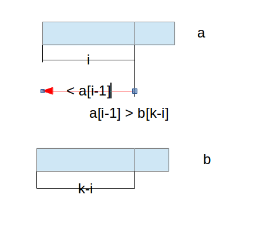 对于另外一种情况，就是如果a[i–1] < b[k – i – 1]，那么表示a[i–1]这个元素所大于的元素还不到k个，这个时候需要去看a[i–1]后面的元素，如下图：
按照这边的讨论，我们相当于找到了一个逐步递归的步骤。但是递归的结束条件是什么呢？假设我们已经访问到数组a最小的元素，也就是a[0]了。这个时候，我们只需要直接去看b[k–1]。这里的k–1其实是相对于b数组的起始位置来说的。因为前面的每次递归我们都采用类似二分法的方式将搜索的范围减少一半。另外，如果我们要找的元素为第1个了，这个时候只要比较a[0], b[0]中间两者最小的那个就可以了。这里的a[0], b[0]也是相对位置。
还要一个前面没有澄清的问题，就是我们假设是在数组a中间取到第i个元素。那么最开始我们该设定到哪个位置比较合适呢？随便乱取一个？从二分法的角度来说，我们可以先取k/2个元素，假设a[k/2–1]这个元素也满足> b[k/2–1]并且<b[k/2]的话不就是正好吗？如果没有则按照前面给定的递归关系进行调整。
这个问题最磨人的地方在于它的各种边界条件非常多。这还没完。我们前面是说假设要在a[]里面去取第k/2个元素。可是如果k/2比数组的长度还要大呢？这不是折腾死个人吗？对于这种情况，我们就需要去选择k/2和a[]长度中的最小值。然后再去计算b中间对应位置的元素。所以这部分的逻辑伪代码应该是这样：
pa = Math.min(k / 2, m); // m为a[]的长度
pb = k - pa;
有了前面的这些讨论，我们可以得出如下的代码：
public class Solution {
public double findMedianSortedArrays(int A[], int B[]) {
int m = A.length;
int n = B.length;
int total = m + n;
if(total % 2 == 1)
return findMedian(A, 0, m, B, 0, n, total / 2 + 1);
else
return (findMedian(A, 0, m, B, 0, n, total / 2) +
findMedian(A, 0, m, B, 0, n, total / 2 + 1)) / 2.0;
}
private double findMedian(int[] a, int al, int ar, int[] b, int bl, int br, int k) {
if(ar > br) return findMedian(b, bl, br, a, al, ar, k);
if(ar == 0) return b[bl + k - 1];
if(k == 1) return Math.min(a[al], b[bl]);
int pa = Math.min(k / 2, ar);
int pb = k - pa;
if(a[al + pa - 1] <= b[bl + pb - 1]) return findMedian(a, al + pa, ar - pa, b, bl, br, k - pa);
return findMedian(a, al, ar, b, bl + pb, br - pb, k - pb);
}
}
代码中间有一些细节需要注意。因为每次我们是去计算k/2, m的最小值。然后去比较。如果两个节点的位置不对，要么就是在a[]数组上去看另外一段的位置，这样对应的参数ar, br需要相应的减少pa或者pb。同时，对应的位置查找参数k也要减去相应的pa, pb。
总结
binary search本身的思想比较简单，可是由它引申出来的问题可以有很多。对于第二个问题，目前的理解和表示还是不够深刻，后续会继续完善对它的表述。
参考资料
http://community.topcoder.com/tc?module=Static&d1=tutorials&d2=binarySearch
简介
counting sort和radix sort和原来的那些通过比较交换来排序的方法不一样。原来的常用排序算法比如插入排序，快速排序等都通过交换元素和递归等手段。而counting sort和radix sort都采用一种类似于映射的方式来实现排序的效果。当然，这种方式之所以会达到O(n)的量级，主要的原因在于这些个排序算法有一个限制，就是首先他们数据的取值范围是在[0, k]，数据的个数为n，且n >= k。
counting sort
推导思路
counting sort的过程是基于一个很直观的思考。在前面提到过，我们有n个元素，所有元素的取值范围在[0, k]这个区间。那么，假设我们有一个数组b，它的长度为k的话，那么对于数组中间的任意一个元素i，它在排序后的位置肯定就映射到b[i]的这个点上。只是可能有多个重复的值对应到同一个点。取一个最特殊的情况，假设我们正好也是有k个元素，而且每个元素也都仅出现一次。那么，按照我们这个映射的思路，每个元素放到对应数组索引的位置，排序的结果就生成了。
再在我们前面说的这个特殊情况的基础上考虑让它更加通用化一点。前面的直接映射是在于每个值都只出现唯一一次。而实际上可能有一个数字出现了若干次而有的数字完全没有出现过。但是，不管它出现没出现，他们所有的值的范围是在[0, k]之间。那么，如果我们定义一个b[k]这样的数组来映射，如果某个元素i出现的次数多于一次的话，我们可以将它出现的次数设置为b[i]的数值。如下图所示：
这样，我们这个数组里就保存了一个所有元素映射后的结果。只不过有的点是对应了多个同样的值。如果这个时候再返回所有排序后的结果，相信只要通过一个循环，从最小到最大。碰到b[i]值为0的则表示没有，直接跳过。大于0的表示出现了多个，就重复输出多个i。那么，这个映射的方法也就出来了。最终映射的结果如下图：
通过前面的讨论，我们可以得出如下的代码：
public static void countingSort(int[] a, int[] b, int k)
{
int[] c = new int[k];
for(int i = 0; i < a.length; i++)
c[a[i]] = c[a[i]] + 1;
int count = 0;
for(int j = 0; j < c.length; j++)
{
while(c[j] > 0)
{
b[count++] = j;
c[j]--;
}
}
}
这是一种通过记录结果然后重新构造的方式来返回结果。当然，我们也可以直接返回数组b。
嗯.....慢着慢着。如果你看过书上counting sort的代码的话，你会发现，这和书上说的完全不一样啊。虽然实际的实现方式有点差别，实际上，我们这种方法和书上的思路是一样的。现在我们再来看看书上的写法吧。
书上说
书上说的counting sort大致是分为三个步骤。1. 统计数字的映射，和我们前面的方法一样。 2. 对数组进行累加，每个元素表示原来数组中从开头到当前元素的和。3. 再根据原来的数组来映射出新的排序后的结果。说到这里，大家可能对第2，3步还是不太清楚。没关系，我们一点点的来看。
首先，按照原来的统计方式，我们可以得到一个统计结果的数组。以原来的数据为例，我们可以通过如下代码：
for(int i = 0; i < a.length; i++)
c[a[i]] = c[a[i]] + 1;
得到一个结果数组，如下图：
然后，我们再通过如下的代码，进行累加：
for(int i = 1; i < k; i++)
c[i] = c[i] + c[i - 1];
这样，我们可以得到一个如下的数组：
我们来看这么一个累加的步骤的意义。每次我们将当前的元素加上前面的元素时，前面的元素表示从最开始元素到当前元素的累加。那么对于结果数组中的任一元素i，c[i]表示从c[0]到c[i]之间所有元素的和。再看我们前面定义的这个数组的含义。它本身是用来保存当前值为i的元素的个数的。那么c[i]则表示从0到i的所有元素的总和。再换一个角度来想想，既然c[i]表示最大值为i的所有元素个数，那么如果有i这么一个元素的话，它最大的索引就是c[i]。
那么，有没有这个元素i呢？这就要看我们的源数组了，假定为a[i]。对于每个存在的元素a[i]，我们可以发现它对应的最大索引则为c[a[i]]。然后，再考虑到我们有元素重复的情况，我们可以在每次找到一个对应的c[a[i]]的情况下，把c[a[i]]减一。这相当于我们已经取了这个元素i之后，保证剩下元素的正确性。那么，这几个操作就是我们讲到的第三步。它对应实现的代码如下：
for(int j = a.length; j >= 0; j--)
{
b[c[a[j]] - 1] = a[j];
c[a[j]]--;
}
将我们前面的这几个步骤统一一下，couting sort在书面上定义的一个完整实现方法如下：
public static void countingSort(int[] a, int[] b, int k)
{
int[] c = new int[k];
for(int i = 0; i < a.length; i++)
c[a[i]] = c[a[i]] + 1;
for(int i = 1; i < k; i++)
c[i] = c[i] + c[i - 1];
for(int j = a.length; j >= 0; j--)
{
b[c[a[j]] - 1] = a[j];
c[a[j]]--;
}
}
在实际实现中，考虑到我们要用到的数组是从0开始索引的，所以后面第三步映射的时候结果数组b对应的值要减一。
radix sort
radix sort是一个看起来很好理解，实现起来还是有点麻烦的方法。它也有一个强烈的前置依赖条件。就是我要排序的数据具有相同的位数。比如说，我所有的数据都是3位数或者4位数的。然后我们对所有数据从最小一位到最大的位开始排序。下图展示了一个radix sort的流程：
从本身radix sort的定义来看，我们发现他们有一个有意思的特性。对于n个元素，它们对应的每一位的值的范围都是在[0，9] 之间的。没想到，这倒是一个很符合前面counting sort要求的条件。那么，就上counting sort吧。我们将他们每一位按照counting sort排序，这样得到的最后结果就是radix sort了。
当然，这里有一个和纯counting sort不一样的地方。原来每次排序我们是针对整个数字，这次只是针对数字的一个位。每次映射的时候就需要注意这么一个对应的关系。
另外，还有一个需要考虑的就是每次取数据中间的某一位。我们可以通过不断整除的方式来求。这个得出某一位数字的方法如下：
public static int getNthDigit(int value, int n)
{
for(int i = 0; i < n; i++)
{
value /= 10;
}
return value % 10;
}
在将前面的几部分整合起来，也不难得出radix sort剩下的部分了：
public static int[] radixSort(int[] a, int bitCount)
{
int[] c;
int[] b = new int[a.length];
for(int k = 0; k < bitCount; k++)
{
c = new int[10];
for(int i = 0; i < a.length; i++)
{
int nThDigit = getNthDigit(a[i], k);
c[nThDigit] = c[nThDigit] + 1;
}
for(int i = 1; i < c.length; i++)
c[i] = c[i] + c[i - 1];
for(int j = a.length - 1; j >= 0; j--)
{
int bitDigit = getNthDigit(a[j], k);
b[c[bitDigit] - 1] = a[j];
c[bitDigit]--;
}
for(int i = 0; i < b.length; i++)
a[i] = b[i];
}
return b;
}
总结
counting sort的本质无非是利用数字范围的有限性然后进行映射计数。它能够高效运行的一个前提是他们元素的取值范围不大。它的时间复杂度为O(n)。因为要考虑结果的映射和拷贝，空间复杂度为O(n + k)。假定k是所有元素的取值范围。radix sort有一个要求是所有比较元素长度要一样，他们可以按位进行比较排序。它的时间复杂度为O(nk)。假设k为元素的位数。counting sort和radix sort都是稳定的排序算法。
参考材料
Introduction to algorithms
简介
关于堆排序的文章，可以说网上一搜就有一大堆。有的时候自己都在想有没有写这个的必要。仔细看看网上的一些文章，很多不外乎一上来就直接堆代码，让人看的云里雾里。有的则是讲的比较笼统，让人很难懂。于是就想根据自己学习思考的经历，尽量用一种容易理解的方式整理出来。也当是一种学习总结吧。
关于堆
一般我们看到堆这个词，总会想到那些分配对象存储等复杂的数据结构。在堆排序里，很直白的来说，堆就是一个简单的数组。只是我们用一种完全二叉树的角度来看它。以最大堆为例，比如说我们有一棵如下的二叉树：
从上图中，我们发现，如果我们从根结点开始按照从左到右一层一层的编号的话，对这些元素的访问就构成了一个序列。比如上图中的序列按照编号顺序如下：16, 14, 10, 8, 7, 9, 3, 2, 4, 1
如果我们将这种从二叉树的结点关系转换成对应的数组形式的话，则对应的数组如下图：
从二叉树的每个结点的编码到它的左右字结点的关系，我们发现一个有意思的地方：
左子结点的编号=父结点编号 * 2
右子结点的编号=父结点编号 * 2 + 1
按照数组标的编号，有类似的对应关系：
左子结点的数组索引号= 父结点索引号 * 2
右子结点的数组索引号=父结点索引号 * 2 + 1
这样，我们通过一定的运算对应关系将二叉树关系的元素存储到一个数组中。针对以上的父子结点关系，他们对应的求法可以用一下几个方法实现：left(), right()。在实现的时候考虑到我们的数组下标是从0开始的，对应的关系修改为：
left(n) = n * 2 + 1 right(n) = n * 2 + 2
对应的代码实现如下：
left:
public static int left(int i)
{
return i * 2 + 1;
}
right:
public static int right(int i)
{
return i * 2 + 2;
}
调整堆
ok，前面我们已经理解了堆和对应的数组之间的关系了。再来考虑另外一个问题。我们假定是要建立一个最大堆。那么对于这么一个最大堆来说，它有一个重要的特性就是处于父结点的值必须比它的子结点要大。假设某一棵树上面的父结点不满足这个要求，我们就必须进行调整。笼统的说，调整就是将这个不符合条件的结点和子结点进行比较，通过交换将最大的结点作为父结点。具体的流程见下图：
在上图中，我们发现值为4的结点不符合要求。那么就需要进行交换调整。接着就需要在它的两个子结点中选择最大的那个，然后交换位置。它的子结点中最大的是14.交换之后的结果如下图：
经过交换之后，我们发现原来元素所在的位置确实符合要求了。可是4交换到新的结点之后又不符合最大堆的条件了。没办法，还需要继续选择最大子结点进行交换。这么一交换之后的结果如下：
经过这么两轮交换，我们终于可以保证以i = 2这个结点为根的树最终达到了一个符合最大堆的状态。总结前面这么一个交换调整的过程，主要如下：
1. 比较当前结点和它的子结点，如果当前结点小于它的任何一个子结点，则和最大的那个子结点交换。否则，当前过程结束。
2. 在交换到新位置的结点重复步骤1，直到叶结点。
对上面的过程进行细化之后编码，我们可以得到两个版本的方法：
递归版本：
public static void maxHeapify(int[] a, int i)
{
int l = left(i);
int r = right(i);
int largest = i;
if(l < a.length && a[l] > a[i])
largest = l;
if(r < a.length && a[r] > a[largest])
largest = r;
if(i != largest)
{
swap(a, i, largest);
maxHeapify(a, largest);
}
}
非递归版本：
public static void maxHeapify(int[] a, int i)
{
int l = left(i);
int r = right(i);
int largest = i;
while(true)
{
if(l < a.length && a[l] > a[i])
largest = l;
if(r < a.length && a[r] > a[largest])
largest = r;
if(i != largest)
swap(a, i, largest);
else
break;
i = largest;
l = left(largest);
r = right(largest);
}
}
以上两个版本的实现主要有几个要点要注意：1. 每次求一个结点的子结点的时候要检查是否越界。 2. 每次通过将当前结点和子结点的比较来选取最大值，如果最大值就是当前结点，则程序返回。 3. 里面的swap方法就是交换两个索引位置元素的位置，因为比较简单就在此省略了。
建最大堆
我们注意到，前面虽然有一个堆调整的过程，但是这个过程主要针对的是一个树中的一个结点。如果树中间有多个结点不符合最大堆的条件，我们光调整某一个结点是没有用的。那么，就需要一个办法来将整棵树调整成符合条件的最大堆。
一个最简单的办法就是从最低层的结点开始起调整。很明显，如果我们从a[a.length –1]这样的结点来调整的话，有相当一部分结点是没必要的。因为这些结点很显然是叶结点，也就是说他们根本就没有子结点，连找子结点和去比较的必要都没有了。所以，我们可以从最后面往前到过来去找那些有子结点的结点，然后从这些结点开始一个个的进行堆调整。那么，我们该从哪个结点开始起进行调整呢？另外，我们可能还有这么一个疑问，为什么我们要从后面往前去调整？从前面往后调整不行吗？别急，让我们一个个的来分析。
首先第一个问题，从哪个结点开始进行调整。我们来看这棵二叉树，很显然，它最后的一个元素也肯定就是最终的一个叶结点。那么取它的父结点应该就是有子结点的最大号的元素了。那么从它开始就是最合适的。取它的父结点可以通过一个简单的i / 2来得到，i为当前结点的下标。
然后我们再来看第二个问题，为什么要从后往前而不是从前往后。这个相对也比较好理解。我们从下面的层开始调整，保证当上面的父结点来调整的时候，下面的子树已经满足最大堆的条件了。这样出现不符合条件的父结点只需要用前面的maxheapify过程就可以。而从前面往后调整呢，我们看下面的一个示例：
如果我们从根结点开始，根结点元素4比它的两个子结点都大，不需要调整。而再往后面的时候它的子结点1调整之后被换成16.这样就出现了它的子结点比它还要大的情况，因此从前往后这么调整的过程不行。
经过前面的讨论，构建最大堆的过程就相当的简单了：
public static void buildMaxHeap(int[] a)
{
for(int i = a.length / 2; i >= 0; i--)
maxHeapify(a, i);
}
总的来说，建立最大堆的过程无非就是要建立一个符合如下条件的二叉树：它所有的结点值都比它的子结点要大。
拼在一起
好了，有了前面扯的基础，再来看怎么排序就很好理解了。既然我通过建了一个最大堆，能够保证最大的元素就是根结点，那么，我们如果要从小到大排序的话，最大的元素就只要取根结点就可以了。如果我们把根结点拿走了，放到结果集的最末一个元素，接着就应该找第二大的元素。因为要保证这棵树本身是近似完全二叉树的性质，我们不能把中间的结点直接挪到根结点来比较。但是前面的maxHeapify过程提醒我们，如果我们从集合的最低一层叶结点来取，然后放到根结点进行调整的话，肯定也是可以得到剩下元素里面的最大结点的。就这样，我们可以得到这么一个过程：
1. 取最大堆的根结点元素。
2. 取集合最末尾的元素，放到根结点，调用maxHeapify进行调整。重复步骤1.
在具体实现的时候我们可以发现，每次都要取集合中后面的元素，我们原来得到的最大结点正好可以放到集合的末尾，正好达到最大的元素放到最后的效果。
实现堆排序的临门一脚如下：
public static void heapSort(int[] a)
{
if(a == null || a.length <= 1)
return;
buildMaxHeap(a);
int length = a.length;
for(int i = a.length - 1; i > 0; i--)
{
swap(a, i, 0);
length--;
maxHeapify(a, 0, length);
}
}
仔细看前面的代码，大家可能会发现一个细小的改变。就是maxHeapify方法多了个参数。这是因为考虑到实际情况下，如果每次我们把找到的当前集合最大元素放到后面了，那么这些元素就相当于从前面的集合中排除出来，后面进行堆调整的时候就不需要再考虑。所以用一个length的长度来限制调整的范围，以免伤及无辜：）。具体的实现可以看后面附件里的详细实现代码。
总结
堆排序粗看起来有好多个步骤，又是要建堆又是要调整的显得很复杂。其实它的过程概括起来无非就是这么两个步骤，一个就是建一个堆，然后就是每次取走根结点的元素用后面的来补，补上后进行调整，然后再重复前面的步骤。
参考资料
Introduction to algorithms
一步一步写算法（之堆排序）
问题描述
将k个已经排序的数组归并成一个大的排序的结果数组。这些数组可能数量比较大，以至于不能直接装载到内存中。
这个问题比较有意思。后面一截的描述是我个人加上去的。实际上一个简单的模型就是将k个已经排好序的数组或者序列合并成一个排好序的结果数组。那么我们该怎么来考虑这个问题呢？
初步分析
其实这个问题可以说是一个问题的更加普遍形式。回顾一下我们在讨论归并排序的时候。那时候我们是将一个数组分解成两个子序列进行排序，然后再进行归并。这个过程一直递归下去。而其中归并结果的过程正好就是将两个已经排好序的序列合并成一个排好序的数组。我们可以看下面这一部分代码来回顾一下当时的实现：
public static void merge(int[] a, int start, int middle, int end)
{
int[] array = new int[end - start + 1];
int i = 0, j = start, k = middle + 1;
while(j <= middle && k <= end)
{
if(a[j] <= a[k])
array[i++] = a[j++];
else
{
count += middle - j + 1;
array[i++] = a[k++];
}
}
while(j <= middle)
array[i++] = a[j++];
while(k <= end)
array[i++] = a[k++];
for(i = 0; i < array.length; i++)
a[start + i] = array[i];
}
我们可以看到对于两个序列来说，我们可以通过遍历两个序列，一直比较两个序列中最前面的元素，然后取更加小的那个，这样直到一个序列已经取完了。我们再把还有剩余元素的序列遍历取出来。
这是两个序列的归并，可是如果扩展到多个序列的情况，我们该怎么来调整呢？
思路
k个数组的元素都已经排好序了，假设所有数组的元素总和为n。我们只要不停的遍历所有数组，从每个数组里面从头到尾的去取，然后把每次得到的最小的元素取出来就可以。这样，我们就很容易得到一个解决办法。
方法一：循环遍历
这个办法的思路就比较直接，首先，我们比较所有k个数组的头一个元素，找到最小的那一个，然后取出来。我们在该最小元素所在的数组取下一个元素，然后重复前面的过程去找最小的那个。这样依次循环直到找到所有的元素。
一个简单的实现伪代码如下：
public void process(ItemList[] lists) {
Item min = Item.MAX_VAL;
boolean notEmpty = true;
while(notEmpty) {
for(Items list : lists) {
if(list.hasNext() && list.getItem() < min)
min = list.getItem();
}
if(min != Item.MAX_VAL) {
int index = min.getIndex();
// process min here
lists[i].next();
} else {
notEmpty = false;
}
}
}
这里写了一个大致的思路。我们用一个notEmpty来标志所有序列是否已经遍历完了。我们每次遍历所有序列的当前元素，找到最小的。这样每次我们找一个元素都要比较k次，假设所有n个元素，其总体时间复杂度就达到了O(nk)。
这个方法看起来简单直观，对于O(nk)的时间复杂度来说，看起来还是可以接受的。只是如果k也比较大的话，对性能也还是有一点影响。那么有没有其他方法可以改进呢？
方法二：最小堆k路归并排序
还有一个典型的方法就是利用最小堆的特性。我们在前面讲述
堆排序
和
优先队列
的时候对于最小堆都有过一定程度的讨论。其本质上就是我们首先从k路序列中都取一个元素出来。因为所有的都是已经按照从小到大排序的，我们不需要考虑其他的。每个序列里取出来的肯定是他们这个序列里最小的。那么我们所要做的就是在这些最小元素里找到全局最小的那个。
到了这里，我们发现和前面那个方法比起来，它没有多少特殊的，主要是用建堆和调整的方式来比较元素。其他的过程基本上一样。因为我们要在取出当前最小元素后要接着取这个元素所在序列的后面一个元素。这个时候，我们就需要考虑，如果这个序列后面没有元素了，我们该怎么办呢？如果还有的话，我们该怎么调整呢？这两个问题在前面的方法里并不存在，因为它是始终要遍历每个。只要有存在元素的序列就不怕。这里要解决这个问题，我们可以有两种方法。
1. 假定在处理元素的过程中，某个序列的元素取光了。我们可以在开始的时候针对所有序列的最后都加一个表示无穷大的数值。这样如果取完这个序列之后可以保证它后续肯定不会被选择到。
2. 我们将该元素用堆最后的元素替换，然后调整堆的属性并将堆的大小减1。这样我们这个大小为k的堆慢慢会变成k–1, k–2...1这些个长度的堆。一直到我们把这些堆里序列的元素处理完。
针对第2种方法，我定义了几个特定的实现方法：
public int heapExtractMin() throws Exception {
if(heapSize < 1)
throw new Exception("heap underflow");
int min = a[0];
a[0] = a[heapSize - 1];
heapSize--;
minHeapify(0);
return min;
}
这个方法就是用末尾的元素替换堆顶元素，然后用minHeapify来调整它。
而建立这么一个大小为k的堆，我们可以预先取出每个序列里的第一个元素拷贝到一个数组里来构造堆，也可以使用逐步插入元素构建堆的方式。关于这两种建堆的方式我在这篇
文章
里有专门讨论过。这里我们用插入元素建堆的方式：
public void minHeapInsert(int key) throws Exception {
heapSize++;
a[heapSize - 1] = Integer.MAX_VALUE;
heapDecreaseKey(heapSize - 1, key);
}
public void heapDecreaseKey(int i, int key) throws Exception {
if(key > a[i])
throw new Exception("new key is bigger than current key");
a[i] = key;
while(i > 0 && a[parent(i) > a[i]]) {
swap(i, parent(i));
i = parent(i);
}
}
这里代码的意思无非就是将插入到最后的元素向上调整以保证最小堆的特性。
再结合前面讨论的结果，如果我们需要调整和处理所有序列，需要一个是判断序列是否为空，另外一个就是动态的调整堆大小。这部分的代码如下：
public static void main(String[] args) {
ItemGenerator[] list = new ItemGenerator[10];
Item[] itemList = new Item[10];
for(int i = 0; i < 10; i++) {
itemList[i] = new ItemGenerator(i).getItem();
}
// Insertion to build min heap
MinPriorityQueue queue = new MinPriorityQueue(itemList, 0);
for(int i = 0; i < 10; i++) {
queue.minHeapInsert(list[i].getItem());
}
// process min value in k sequences
k = itemList.length;
while(k > 0) {
int min = queue.heapMinimum();
process(min);
int i = min.getIndex();
if(list[i].hasNext()) {
queue.updateQueueHead(list[i].getItem());
} else {
queue.heapExtractMin();
k--;
}
}
}
我们是首先建立一个最小堆，然后每次都取最小的元素并处理。有一个process(min)方法。这里没有给出定义。只是标注一下可以处理元素的地方。我们可以根据实际情况调整。在处理完元素后我们要根据当前的min元素取得它所在的序列。这里我们也是假定min有getIndex方法。我们就可以知道是哪个序列的元素被取了要接着补上。如果没有了则调用queue.heapExtractMin()来调整堆，表示这个堆有一个序列已经空了。k堆要缩减为k–1堆。因为详细代码比较繁琐，这里就没有补充进来了。知道了这么个思路也比较容易写出来。
方法三：胜者树k路归并排序
在我前面一篇讨论
求第二小元素的文章
里就专门提到了胜者树。在那篇文章里我们对胜者树的定义和特性做了一个详细的讨论。这里我们来看看怎么解决这个问题。
首先，胜者树会是一个这样的形式：
和我们前面讨论的有点不同，这里几乎堆的每个叶节点对应一个输入的序列。我们让他们构成一个完全二叉树。以上图为例，我们进行一轮胜者的选择之后，堆结构则如下：

我们可以看到，最终在堆顶的那个元素是最小的，而且有一条路径从叶节点到堆的根。如果我们把最小的这个元素处理完之后该怎么调整呢？下图可以说明这个问题：
我们发现这个问题是通过在原来序列里取后续的元素，然后像胜者树调整一样向上，符合条件的元素放上面，然后一直比较到根。这样就找到了下一个最小的元素。这样一直循环下去。如果一个序列处理完了我们可以采用在末尾增加一个无穷大的值。
总的来说，这个方法和普通的最小堆调整差不多，就是调整的方式不一样而已。我们也可以很容易得出对象的实现，这里就不再贴详细的实现代码了。
总结
k路归并算法其实整体的思路并不复杂。我们常用的两种方法一种是建立一个最小k堆，然后每次取最小的元素，也就是堆顶的元素。然后再调整。还有一种就是建立一棵胜者树。其实思路也类似，每次取最顶端的元素，这个元素就是胜者，也就是最小的那个元素。然后从胜者树所在的叶节点对应的序列里取下一个元素。然后再进行比较向上调整。这两种方法都有一个需要注意的地方就是需要根据当前的操作节点来确定该节点所处的序列。从某种角度来说，k路归并算法对于处理大规模的数据有非常重要的意义。我们在一些面试关于大量数据处理的讨论上都会用到这个方法和相关的思路。
参考资料
Introduction to algorithms
http://zh.wikipedia.org/wiki/%E5%A4%96%E6%8E%92%E5%BA%8F
http://www.geeksforgeeks.org/tournament–tree–and–binary–heap/
问题描述
A linked list is given such that each node contains an additional random pointer which could point to any node in the list or null.
Return a deep copy of the list.
原问题链接：
https://oj.leetcode.com/problems/copy–list–with–random–pointer/
问题分析
这个问题粗看起来确实不好解决，因为这不是一个单纯的linked list的拷贝，它里面还包含了一些随机指向某些节点的指针。对于链表里指向每个元素后面的元素都还好说，只要沿着原来的地方一个个的拷贝过去就可以。可是这些随机指向的可能就跳到不知道哪里去了。在原来的说明里已经给出了linked list里面每个节点的定义：
class RandomListNode {
int label;
RandomListNode next, random;
RandomListNode(int x) { this.label = x; }
}
初步探讨
我们先假定有一个如下图的随机链表：
如果我们不考虑随机指向的链接的话，我们每次访问原链表中一个元素时，可以直接建立一个对应的拷贝。当原来的元素要指向下一个元素时，我们再建一个下一个元素的拷贝，然后将原来的元素指向新建的下一个元素。这个过程类似于一个递归的过程，当然，通过这个过程我们可以建立一个如下图这样的拷贝效果:
这是在仅仅考虑指向后续元素引用的情况下。如果一旦我们创建好这个之后，随机引用的指针就反而不好处理了。假如在原来的链表中，有第一个元素的随机指针指向第三个元素，我在拷贝的链表里怎么知道呢？因为一旦拷贝出来之后，在新拷贝的链表里是没法知道怎么对应的。难道我们还要去专门建立一个新建元素和原来链表元素的一一映射吗？而且就算我们去建立这么一个映射，难道用Map就一定能解决？如果原来的链表里有值相同的元素呢？会不会没法区分？看来就这么直接复制过来的办法不可行。
换一种思路
其实，在前面我们复制每个链表节点的时候，我们只要从头开始，每次必然可以构造出该节点对应的拷贝。如果我们每次新建的链表节点不急着放到外面来拼装成一个链表，而是先放到每个对应链表节点的后面呢？比如下图的这样：
我们用更深蓝色的节点表示拷贝节点，这样它们就形成了一个原节点和拷贝节点相间的这么一个结构。现在，我们再来考虑随机指针。因为在原来节点中，随机指针指向了某个节点，在这个增加了拷贝节点之后的链表里，其实原来的指针是没有任何变化的。但是因为我们新加入的拷贝节点都是在对应节点的后面一个。这不就正好方便我们来处理随机指针了吗？
因为原来对于某个节点它随机指针指向了一个节点，而我拷贝节点是原节点的后面一个。那么对应拷贝节点的随机指针不就是对应原来节点所指向的随机指针后面的那个吗？我们把随机指针加上来考虑的话，则我们新拷贝的节点和原来节点的关系如下图：
按照这个关系，我们处理随机指针就可以按照如下的方式：
1. 每次碰到一个原有节点的时候，假定原节点为a, 先记录一下它后面的那个拷贝节点，假设拷贝节点为b。
2. 将a节点所指向的随机节点后面那个元素，即a.random.next设置为拷贝节点的随机指针目的。也就是b.random = a.random.next。
在完成了上述步骤之后，我们就需要将上图中拷贝的元素部分再剥离出来。因为随机指针在前一步都已经设置好了，它们不会受到影响。所以这里的剥离也就很简单了，设置一前一后两个指针，每个都跳一个指向后面的元素就可以了。
综合
综合上面的讨论，这个问题的解决步骤如下：
1. 遍历原有链表，在每个原来的节点后面增加一个拷贝节点。
2. 根据原节点的随机指针设置拷贝节点的随机指针。
3. 剥离出所有拷贝节点。
按照这个思路，第一步的代码实现如下：
RandomListNode copy = head;
while(copy != null) {
RandomListNode node = new RandomListNode(copy.label);
node.next = copy.next;
copy.next = node;
copy = node.next;
}
因为我们需要在每个节点后面创建一个拷贝节点，同时不希望修改原有的初始节点，所以开始的时候创建了一个head节点的拷贝copy。每次将新建的node插入到copy节点后面。在设置完了第一步之后我们需要再从拷贝节点的第一个开始去设置随机指针。它的实现如下：
copy = head;
while(copy != null && copy.next != null) {
if(copy.random != null)
copy.next.random = copy.random.next;
copy = copy.next.next;
}
因为每次要跳过它后面的节点，所以这里copy = copy.next.next;
剩下的就是第三步，剥离拷贝节点：
copy = head;
RandomListNode cur = head.next;
RandomListNode tmp = cur;
while(copy != null && tmp != null) {
copy.next = tmp.next;
copy = copy.next;
if(tmp.next != null) {
tmp.next = tmp.next.next;
}
tmp = tmp.next;
}
这个剥离的过程也并不复杂，首先将拷贝节点前面的元素指向它后面的元素。然后再将这个拷贝节点往后面跳一个。将上述的几个步骤结合起来，就得到如下的代码：
public class Solution {
public RandomListNode copyRandomList(RandomListNode head) {
if(head == null) return null;
RandomListNode copy = head;
while(copy != null) {
RandomListNode node = new RandomListNode(copy.label);
node.next = copy.next;
copy.next = node;
copy = node.next;
}
copy = head;
while(copy != null && copy.next != null) {
if(copy.random != null)
copy.next.random = copy.random.next;
copy = copy.next.next;
}
copy = head;
RandomListNode cur = head.next;
RandomListNode tmp = cur;
while(copy != null && tmp != null) {
copy.next = tmp.next;
copy = copy.next;
if(tmp.next != null) {
tmp.next = tmp.next.next;
}
tmp = tmp.next;
}
return cur;
}
}
总结
总的来说，这个问题相对来说复杂一点。因为要构造链表的拷贝，然后调整它们的指针并剥离拷贝的链表出来。从算法本身并不是很复杂，主要是这么多的步骤和指针操作很容易出错，而且很繁琐。需要一点一点的去分析。
问题描述
Design a stack that supports push, pop, top, and retrieving the minimum element in constant time.
- push(x) –– Push element x onto stack.
- pop() –– Removes the element on top of the stack.
- top() –– Get the top element.
- getMin() –– Retrieve the minimum element in the stack.
原问题链接：
https://oj.leetcode.com/problems/min–stack/
问题分析
如果之前看过一些关于算法方面的教材的话，会发现这个问题其实并不复杂。我们想想，因为需要获取当前元素的最小值。在每次对栈进行操作的时候，这个最小值可能在栈中间的任何一个地方。要想保留这个最小值，必然需要一个可以记录在某个范围内最小值为多少的结构。
在加入一个新的元素进来时，我们还需要将新加入的元素和当前最小值做比较，如果新加入的值比当前最小值还要小，则最小值就需要进行修改。同样，当取出一个元素的时候，如果当前值是最小的元素，我们也需要做相应的调整。一种比较简单的保存最小值的结构就是再使用一个栈，这个最小值栈保存着到对应栈顶元素最小值。按照这些讨论，我们可以得到如下的代码：
class MinStack {
private Stack<Integer> itemStack = new Stack<Integer>();
private Stack<Integer> minStack = new Stack<Integer>();
public void push(int x) {
if(itemStack.isEmpty() || x < minStack.peek()) {
itemStack.push(x);
minStack.push(x);
} else {
itemStack.push(x);
minStack.push(minStack.peek());
}
}
public void pop() {
itemStack.pop();
minStack.pop();
}
public int top() {
return itemStack.peek();
}
public int getMin() {
return minStack.peek();
}
}
这个实现属于比较懒的办法。就是用一个最小值栈，每个元素都和原来的栈一一对应起来，如果原来的栈要加入的元素是当前最小的，则在两个栈中加入这个元素，否则在原来栈中加入这个元素而在最小值栈中加入它自己栈顶的那个。这种做法稍微有点浪费空间了。不过整体的空间复杂度还是在O(N).
除了前面这个思路以外，还有一种思路，就是不再和原来栈里的元素一一对应的去存，就只是在最小值栈里保存最小的那个。它的实现和原来的差不多，只有两个方法的差别，push, pop方法的实现如下：
public void push(int x) {
stack.push(x);
if(minStack.isEmpty() || x <= minStack.peek()){
minStack.push(x);
}
}
public void pop() {
if(stack.peek().equals(minStack.peek())){
minStack.pop();
}
stack.pop();
}
因为这个问题比较简单，就不再赘述了。
问题描述
Given a string
s
, partition
s
such that every substring of the partition is a palindrome.
Return all possible palindrome partitioning of
s
.
For example, given
s
=
"aab"
,
Return
[
["aa","b"],
["a","a","b"]
]
原问题链接：
https://oj.leetcode.com/problems/palindrome–partitioning/
问题分析
这是个关于回文划分的问题 ，问题的要求是得出所有划分的情况。一开始碰到这个问题的时候，有点找不到思路，我们该怎么来考虑这个问题呢？先从一个最基本的情况开始吧。
假定有一个字符串"abcde"，对于这个串来说，它里面的每个单独的字符a, b, c都可以认为是一个回文。所以最起码有这么一个每个单独字符组成的划分情况。可是在字符串里面可能会存在一些回文，这些需要判断和划分出来。我们从最基本的情况来考虑，尝试看能否发现一些规律：
假设字符串s本身就是空串，这个时候，我们的划分数为０。对于这种情况可以认为是返回一个空的列表。假设用list来表示它的划分情况，则这里表示为一个空的list，即为[]。
对于长度为１的串来说，它有一个唯一的划分，就是包含这个元素本身。所以它的划分为[i]，假设i为该元素。
再进一步来看长度为２的串。假设这个串为"ab"，这个时候，因为"ab"本身不是回文，所以它的划分只有["a", "b"]这种情况。如果这个串本身为回文呢？比如说这个串为"aa"，这个时候，除了前面单个元素的["a", "a"]，还要划分["aa"]。进一步细化的分析来看，对于长度为２的串，假定p[i]表示从０开始到元素i的所有划分。那么它所有的划分则如下，我们首先看长度为０的情况，当0到i的串构成一个回文，则对应长度０和这个回文串构成一个划分，比如这里的"aa"。在长度为１的情况，对应第一个元素的所有划分情况为["a"]，而后面的这个元素是单独的一个元素，也是一个回文，所以它们构成划分["a", "b"]或者["a", "a"]。这样，我们可以概括出一个这样的规律，
p[i] = p(k) + substring(k, i)，if(substring(k, i)) 是回文。k = 0, 1, ... i
按照这个递归的关系，我们尝试递推一下划分的数量，比如有如下图的字符串：
假定p[i]表示对应前面i个元素，则有如下的情况：
p[0] = [] 这个时候没有选择任何元素，所以为空。
p[1] = ["a"]，仅有一个元素，选择"a"。
p[2] = ["a", "b"]，我们首先看0到２，这个时候的两个元素为ab，它们不是回文，所以应该跳过。然后再看1到２，因为是单独的a和b，所以有p[2] = p[1] + "b"。如下图：
p[3] = ["aba"] ["a", "b", "a"]，还是老样子从0开始看，从0到3的串为aba，它本身为回文，所以应该加入到里面。后面的1和２到３都不构成回文，所以跳过。
p4= ["a", "bab"] ["aba", "b"] ["a", "b", "a", "b"]它分别对应着p[1] + "bab", p[3] + "b"。这里p[3] + "b"对应有两种情况，就是前面的["aba", "b"]和["a", "b", "a"]。
所以，前面说了这么多，这个递推的关系就是每次对元素前面的部分进行遍历，如果前面遍历的某个点和当前点构成回文，则将这个回文部分和前面的对应点部分拼起来，这样就构成了一个划分。用伪代码描述的话，则如下：
for(int j = 0; j <= i; j++) {
if([i, j]为回文) {
for(list l : lists[j]) {
newl = clone(l) // 做一份原来list的copy
newl.add(s[j, i]); //将j到i的这部分字符串加入到新串中。
list[i].add(newl); //这时候newl对应着一个划分，将它加入到i所在的划分集合中。
}
}
}
这部分代码对应的是在长度为i的情况下，我们设定这个位置对应的划分列表。仔细看这部分代码的话，还要一个问题就是我们需要考虑的。因为这里有一个判断就是[i, j]这一段字符串是否为回文。所以，有了前面的基础之后，我们需要仔细考虑一下怎么判断它们。如果我们只是每次拿到一个序列的开头就这么去遍历的判断，这样虽然可行，但是很多时候是重复执行了很多运算的。所以这部分也需要仔细考虑一下。
回文判断和改进
如果单纯从对一个字符串是否为回文的角度来判断的话，我们可以很简单的通过一个for循环从两头往中间比较来实现。在这个问题的场景中，我们需要比对对应位置i来说，从0开头到i之间所有子串。如果每次都这么循环的比对，似乎效率比较低。那么，能否通过一种方式将结果记录下来方便后面直接查找呢？
对于字符串来说，假设它的长度为n，那么对应的可能有n * n种。所以，我们可以考虑用一个n * n的矩阵来记录。对于里面所有i == j的情况，相当于对应这个i元素本身。所以如果用一个矩阵p[][]来表示这些判断的话，那么p[i][i] == true。
再延伸一下，如果i,j 之间相差一个呢？这就是说这两个元素是相邻的，要判断它们是否为回文，只要保证s[i] == s[j]就可以了。所以对于相邻的元素p[i–1][i] = p[i–1] == p[i]。
如果我们再概括到一个更一般的情况呢？如下图，我们考察字符串s[i, j]:
对于这个串来说，如果开头结尾的s[i]和s[j]不相等的话，它肯定就不是一个回文了。如果它们相等呢？这个时候就取决于里面的s[i+1, j–1]这个子串了。如果里面这个是，s[i, j]就是。所以，通过这一系列的讨论，我们又得到一个如下的递推关系：
假设j >= i。
1. i == j时，p[i][j] = true
2. j == i + 1时，p[i][j] = s[i] == s[j]，取决于相邻两个元素是否相等。
3. 其他，p[i][j] = (s[i] == s[j]) && p[i+1][j–1]。针对递归的情况，取决于当前两个元素是否相等且内部的子串是否也是回文。
经过这一番讨论，我们就得到了一个判断回文的递归表达式。将回文判断结果保存到一个矩阵里的方法实现如下：
void checkPalindrome(String s) {
int n = s.length();
boolean[][] p = new boolean[n][n];
for(int j = 0; j < n; j++) {
for(int i = 0; i <= j; i++) {
if(i == j) p[i][j] = true;
else if(j - i == 1) p[i][j] = s.charAt(i) == s.charAt(j);
else p[i][j] = p[i+1][j-1] && (s.charAt(i) == s.charAt(j));
}
}
}
实现和改进
有了前面判断某两个节点之间是否构成回文的基础，我们再把前面划分的部分详细做一个实现：
public class Solution {
boolean[][] pair;
public List<List<String>> partition(String s) {
checkPalindrome(s);
int len = s.length();
List<List<String>>[] result = new List[len + 1];
result[0] = new ArrayList<List<String>>();
result[0].add(new ArrayList<String>());
for(int i = 0; i < s.length(); i++){
result[i + 1] = new ArrayList<List<String>>();
for(int j = 0; j <= i; j++){
if(pair[j][i]){
String str = s.substring(j, i + 1);
for(List<String> r : result[j]){
List<String> ri = new ArrayList<String>(r);
ri.add(str);
result[i + 1].add(ri);
}
}
}
}
return result[len];
}
}
因为我们前面需要利用checkPalindrome方法生成的boolean[][]矩阵，所以将这个矩阵定义成类的成员变量。这里的实现有几个要注意的细节点。
一个就是我们设定的数组result[]长度为len + 1。这是因为我们前面归纳设定的长度为０的元素分割为０，它是一个空的list。这样依次类推的话，第一个元素对应string里面的索引０，但是对应这个保存长度result[]里的长度为１的元素，所以要保存最终s.length()的那个元素对应的分割则需要用到n + 1个。用n个还是n+1个元素来保存结果这是动态规划方法里经常需要考虑的。如果是从０个元素作为归纳的开始的话，通常是用到n+1个元素长度的数组。
还要一个需要注意的就是我们要保存它们的划分，所以对应一个位置的元素它可能包含的划分有若干个。而每个划分里的元素就是这些子串。所以每个元素对应的数据结构是List<List<String>>。而因为我们这里要保存整个数组的划分结果，所以保存这些划分的数据结构result为List<List<String>>[]。
这样，到这一步我们的分析就差不多结束了从实现代码的角度来说，我们实际上还是可以让它变得更加简练一些的。因为每次我们走到一个元素的时候，它的划分判断只依赖于它本身和前面所有的元素。我们的回文判断可以和划分的构建放到一块。按照这个思路，我们可以得到如下的代码：
public class Solution {
public List<List<String>> partition(String s) {
int len = s.length();
List<List<String>>[] result = new List[len + 1];
result[0] = new ArrayList<List<String>>();
result[0].add(new ArrayList<String>());
boolean[][] pair = new boolean[len][len];
for(int i = 0; i < s.length(); i++) {
result[i + 1] = new ArrayList<List<String>>();
for(int j = 0; j <= i; j++) {
if(s.charAt(i) == s.charAt(j) && (i - j < 2 || pair[j + 1][i - 1])) {
pair[j][i] = true;
for(List<String> r : result[j]) {
List<String> ri = new ArrayList<String>(r);
ri.add(s.substring(j, i + 1));
result[i + 1].add(ri);
}
}
}
}
return result[len];
}
}
总结
这个问题其实可以划分为两个层次。首先一个是对划分关系的一个推导。我们根据这个得到一个递推的关系。然后，根据递推关系里，我们需要判断给定两个位置见的子串是否为回文。这里对回文的判断又是一个递推的关系。这两层的关系都可以通过动态规划的方式来解决。这个问题比较复杂，难就难在要从最初的情况里能够推导出这些关系。
问题描述
Given an array of integers, every element appears
three
times except for one. Find that single one.
Note:
Your algorithm should have a linear runtime complexity. Could you implement it without using extra memory?
原问题链接：
https://oj.leetcode.com/problems/single–number–ii/
问题分析
其实这个问题本身并不复杂，它只是注明在一个数组里有一个数字出现了一次而其他的数字都出现了３次。为了记录这个数字，我们可以采用这样的一种思路。假定这里的所有数字都是３２位的整数。那么它们每个数字对应的二进制表示就对应着一个３２位里面某些位设置为１。而既然有的数字它们重复了３次。如果我们对这些每位出现１的个数进行统计，所有这些出现３次的数字它们对应的这个位的统计数为３的倍数。而例外的那个元素它在对应的位置出现了仅一次。当然，如果把它们为１的各个位置次数都累加起来，会有一些重叠的情况。比如说这个特殊的数字和其他数字在某个位都是１。
通过上述的累加，每个位为１的数字累加无非为以下几个情况。１．该位为所有出现３次数字的累加。这个时候，这个位的累加值必然是３的倍数，即3 * n。 ２． 该位为出现３次的数字和这个特殊数字重叠的位置。这样，针对这个位置出现的１的次数为3 * n + 1。 ３．该位仅仅是这个特殊数字的位置。这样，这个位置的值为１。 所以，如果要最后只保留这个特殊数字的位该怎么办呢？只要将每个位置的数字对３取模不就得到了么？
所以，我们可以很容易得到一个如下的代码：
public int singleNumber(int[] A) {
if(A == null || A.length == 0) return 0;
int[] a = new int[32];
for(int i = 0; i < A.length; i++) {
for(int j = 0; j < 32; j++) {
if((A[i] & (1 << j)) > 0)
a[j] = (a[j] + 1) % 3;
}
}
int result = 0;
for(int i = 0; i < 32; i++) {
if(a[i] > 0)
result |= (a[i] << i);
}
return result;
}
在上面的代码里，我们创建一个in[32]的数组。里面每个元素对应整数的一个位。然后我们遍历数组里的每个元素，针对这个元素的每个位和1 << j进行与运算。如果结果大于０，则将该位置的数字加１并对３求模。然后在得到的结果数组里在和０针对每一位进行或运算来恢复这个数字。这里我们依据的是一个数字和当前偏移的i位数字比如1 << i的与运算结果是大于０的。
粗粗看来，上面的代码是没问题的。可是如果我们实际中去运行的话，会发现有错误。而且这个错误看起来还不是那么明显。这个问题在哪里呢？我们前面代码里有for(int j = 0; j < 32; j++) (A[i] & (1 << j )) > 0 这个部分。问题就出在这里。当j比较小的时候，确实1 << j是大于０的。可是当j = 31的时候，1 << 31即２的３１次方。我们知道，这个数字已经超过了int里最大的正数表示了。所以可以说它已经溢出了。如果在代码里尝试去打印输出1 << 31，输出的是一个负数。所以我们前面的代码结果里最高位会是０。为了修正这个问题，我们可以将前面代码里这个判断条件修改为：
for(int i = 0; i < A.length; i++) {
for(int j = 0; j < 32; j++) {
if((A[i] & (1 << j)) != 0)
a[j] = (a[j] + 1) % 3;
}
}
或者倒过来，不是将当前的元素每个位和1左移若干位来比对。而是将这个元素向右移位，再和１进行与运算：
for(int i = 0; i < A.length; i++) {
for(int j = 0; j < 32; j++) {
if(((A[i] >> j) & 1) > 0)
a[j] = (a[j] + 1) % 3;
}
}
这样，前面的代码就正确了。当然，我们的目标不仅仅是能够把代码写出来通过测试。如果能写的更加精炼一点更好。这个时候看前面的代码。在生成这个数字的各个位的时候，后面又要用到这个位的数字。我们完全可以将它们合并起来。这样修改后的代码如下：
public int singleNumber(int[] A) {
int[] a = new int[32];
int result = 0;
for(int i = 0; i < 32; i++) {
for(int j = 0; j < A.length; j++) {
if(((A[j] >> i) & 1) != 0)
a[i] = (a[i] + 1) % 3;
}
result |= a[i] << i;
}
return result;
}
总结
这个问题看似很简单，但是中间有一些小的细节还是应该非常小心的。不然很容易出错。需要注意的就是溢出和重新构造这个数字的过程。
问题描述
Given an array of integers, find two numbers such that they add up to a specific target number.
The function twoSum should return indices of the two numbers such that they add up to the target, where index1 must be less than index2. Please note that your returned answers (both index1 and index2) are not zero–based.
You may assume that each input would have exactly one solution.
Input:
numbers={2, 7, 11, 15}, target=9
Output:
index1=1, index2=2
原问题链接：
https://oj.leetcode.com/problems/two–sum/
问题分析
这个问题相对来说比较简单，在给定一组数字的时候，我们需要去找两个数字之和为给定数字的一个组合。所以从最开始来说，一个最简单直接的方法就是二重循环遍历数组，找到匹配的就返回。这种方法的实现如下：
public int[] twoSum(int[] numbers, int target) {
int[] result = new int[2];
for(int i = 0; i < numbers.length; i++) {
for(int j = i + 1; j < numbers.length; j++) {
if(numbers[i] + numbers[j] == target) {
result[0] = i;
result[1] = j;
return result;
}
}
}
return null;
}
这个办法非常的简单直观，不过从性能角度来说却不行。它的时间复杂度达到了O(Nˆ2) 。那么，有没有办法将这个办法改进，以使得它的性能提升呢？
这个时候，我们会考虑到另外一个办法，就是原来的方法里是盲目的一个个的去比较和查找。如果有一个办法可以让我们有常量的时间内去查找对应的值是否存在，这样效率就会提升更多。于是，我们可以考虑用map的数据结构。这样我们一次遍历就解决问题了，每次我们遍历的时候就去判断map.containsKey(target – numbers[i])，如果有，则表示前面已经存在一个相加等于target的元素了。没有的话则将该元素加入到map里。按照这个思路，详细的代码实现如下：
public class Solution {
public int[] twoSum(int[] numbers, int target) {
HashMap<Integer, Integer> map = new HashMap<Integer, Integer>();
int[] twoIndex = new int[2];
for(int i = 0; i < numbers.length; i++) {
if(map.containsKey(target - numbers[i])) {
twoIndex[1] = i + 1;
twoIndex[0] = map.get(target - numbers[i]) + 1;
return twoIndex;
}
map.put(numbers[i], i);
}
return null;
}
}
代码的实现比较简单。就不赘述了。里面的一些细节还是值得思考的。
在有的时候，我们开始会这么想。既然要查找一个数字是否有对应的target–number[i]的数字存在。那么我们首先把所有的数字都放到一个HashMap里，然后再一个个的去查这样也可以啊。这样会存在的一个问题就是如果我们取到一个值a[i]，而target–a[i]的值正好也等于a[i]的时候，我们没法判断这是不是不同的两个元素的和。而且如果最开始的数组里有重复的元素也会是一个麻烦。
问题描述
Implement wildcard pattern matching with support for
'?'
and
'*'
.
'?' Matches any single character.
'*' Matches any sequence of characters (including the empty sequence).
The matching should cover the entire input string (not partial).
The function prototype should be:
bool isMatch(const char *s, const char *p)
Some examples:
isMatch("aa","a") → false
isMatch("aa","aa") → true
isMatch("aaa","aa") → false
isMatch("aa", "*") → true
isMatch("aa", "a*") → true
isMatch("ab", "?*") → true
isMatch("aab", "c*a*b") → false
原问题链接：
https://oj.leetcode.com/problems/wildcard–matching/
问题分析
这是一个字符串匹配的问题。看起来和普通的字符串匹配稍微有点不一样的地方就是有两个特殊的字符"?"和"*"。其中"?"表示匹配一个当前的任意字符。而"*"表示匹配当前的若干个字符。如果撇开*号的话，这个问题就挺简单的。因为基本上对于两个串来说，每个字符都是一一对应的，唯一要区分一下的就是"?"这个。当碰到这个字符的时候，让对应位置的字符不管是什么都算匹配就完了。
所以，在不考虑"*"的情况下，我们的方法大致结构如下：
boolean isMatch(String s, String p) {
int l = 0, r = 0;
while(l < s.length() && r < p.length()) {
if(s.charAt(l) == p.charAt(r) || p.charAt(r) == '?') {
l++;
r++
} else return false;
}
if(l < s.length() || r < p.length()) return false;
return true;
}
在前面这部分基础代码思路之上，我们再来考虑一下符号"*"的情况。它的情况之所以比较特殊就是因为当我们的源串s中间某个位置是对应的*号时，这个*号是对应０个或者多个字符的。比如说s = "abaaaac" p = "a*"，这个时候p里的*号对应第一个字符a后面的所有部分。如果s="abc", p = "a*bc"，这个时候可以说*号对应０个字符。所以，这个时候问题的核心就在于，当s和p在某个位置的时候遇到*号，我们不知道s这边的符号要往前多少个才算是一个合理的匹配。在进一步分析前，我们先看看*号匹配的几种情况：
上图是*号匹配了前面串中间指定点后面所有的字符。下图是匹配了部分串的情况：
对于后面这个匹配了部分串的情况，我们会发现一个有意思的地方。就是从模式串p中*号后面的字符起，如果*后面确实有字符，那么要和前面的串匹配，则前面必然有一部分是和它对应上的。否则这个匹配就失败了。那么我们可以这样来看，碰到*号的时候，取*号后面的那个字符，再去和源字符串比较，如果相等，则尝试往后面继续比较。这种情况可以用下图来描述：
在这种情况下，假定star后面的元素和前面的对应元素匹配上了，我们可以认为这是尝试*号匹配０个元素。可是当我们匹配了若干个之后，却发现如下的情景：
这个时候说明我们*号匹配０个元素并不成立。因为后面的部分没有匹配上。这个时候该怎么办呢？因为我们后面这部分是和前面s串中间刚对应到*号的元素开始的。既然以这个元素为起点和后面的比较不匹配了。我们就尝试它后面的那个元素。所以，后续的比较可以如下：
这一步也是匹配失败，然后按照前面的方式，假定前面的*号匹配了更多的一个，再从后面一个开始尝试：
按照前面的过程，我们一直到最后得到匹配的结果如下：
经过刚才的手工比较过程。我们可以将针对*号的匹配过程总结如下：
１．假设碰到*号时s串的位置是l, p串的位置是r，则将r+1作为*号后续进行比较的起点。
２．从l开始与r+1位置的元素进行比较，如果相同，再按照常规匹配的方式往后面继续比。否则l跳到前面和r+1开始比较那个位置的后面一个。同时p这边的元素也要归位到r+1
所以，到了这一步，我们就知道。当遇到*号的时候，先记录一下l所在的位置和r+1所在的位置。每次匹配比较不对了就回退。假设记录l开始比较位置的元素为match。在每次匹配失败后match就要加１，表示下一个开始比较的起点。
３．既然前面匹配的情况讨论了。对于不匹配的情况呢？假设我们碰到一些不匹配的了。如果前面根本就没有*号，这就是正常的字符串比较不匹配的情况，我们直接就返回匹配不成功了。
４．还有一个问题，这算是比较隐蔽一点的情况。因为我们这边是一碰到*号就一直不停的去比较，如果p串中间有多个*号呢？我们可能已经比较到前面s串的结尾了，但是p串后面可能还有一部分字符。这个时候我们也需要进行判断。如果剩下的是*号，则相当于*号匹配了０个元素，否则表示匹配错误。
基于上述的讨论，一个典型的实现如下：
public class Solution {
public boolean isMatch(String str, String pattern) {
int s = 0, p = 0, match = 0, starIdx = -1;
while (s < str.length()){
// advancing both pointers
if (p < pattern.length() && (pattern.charAt(p) == '?' || str.charAt(s) == pattern.charAt(p))){
s++;
p++;
}
// * found, only advancing pattern pointer
else if (p < pattern.length() && pattern.charAt(p) == '*'){
starIdx = p;
match = s;
p++;
}
// last pattern pointer was *, advancing string pointer
else if (starIdx != -1){
p = starIdx + 1;
match++;
s = match;
}
//current pattern pointer is not star, last patter pointer was not *
//characters do not match
else return false;
}
//check for remaining characters in pattern
while (p < pattern.length() && pattern.charAt(p) == '*')
p++;
return p == pattern.length();
}
}
总的来说，基于上述方法来解决这个问题是一种贪婪算法的思路。因为每次碰到一个*号我们会将它记录下来，然后就去和源串进行比较。这种办法效率比较高，当然，只是很难想到。那么除了这个办法，我们还有没有其他方法呢？
其他思路
在我们前面描述解决这个问题的经过时，我们已经发现了一点和递归相关的意思。假设我们两个串，它们在模式串为普通字符或者"?"号的时候，它们两边只要是对应符号相同就表示是匹配的。假设当前两个元素所在的位置分别为l, r。则正好有如下的关系：
if(s[l] == p[r] || p[r] == '?') match(l, r) = match(l–1, r–1) 。
这是上面递归关系的一部分。然后对于p[r] == '*'的情况呢？我们知道，需要从s串中间l所在位置往后面每个都去尝试。相当于这样的一个关系：
if(p[r] == '*') {
while(l < s.length()) {
if(match(l, r)) return true;
l++;
}
}
这样我们保证从l位置一直到最后结束部分一直进行比较，直到有一个匹配的。因为这是一个递归的函数定义，它的返回条件则是r == p.length()，表示我们已经遍历到了模式串的结尾了。按照这个思路，得到的代码如下：
boolean isMatch(String s, String p, int l, int r) {
if(r == p.length()) return l == s.length();
if(p.charAt(r) == '*') {
while(p.charAt(r) == '*') r++; // Move the index at p to a non-start char.
while(l < s.length()) {
if(isMatch(s, p, l, r)) return true; // Find one match, return true.
l++; // Try the next one.
}
return isMatch(s, p, l, r);
} else if(l < s.length() && (p.charAt(j) == '?' || s.charAt(l) == p.charAt(r)))
return isMatch(s, p, l + 1, r + 1);
return false;
}
通过这种递归的关系我们得到的这个算法虽然定义清楚了其中的关系，但是如果去分析它的时间复杂度的话会发现这是一个指数级别的，在实际中执行起来并不理想。那么，有没有办法可以改进一下呢？
改进
我们知道前面的问题在于我们虽然得出了递归的关系，但是执行的效率偏低。这个时候我们可能会想到一个点，就是通常递归的方法执行比较慢的时候，我们去看看它们的递归的关系。是否存在递归过程中对一些结果的重复计算。如果有的话，这就是一个利用动态规划方法的地方。
假设我们用F(i, j)表示串s[0...i], p[0...j]这两个串分别到i和j位置它们是否匹配的函数。那么，我们可以得到这样的一个递推关系：
F[i, j] = F[i–1, j–1] &&(s[i] == p[j] || p[j] == '?') (假设此时p[j] != '*')
F[i, j] = or F[i–1, j–1] for i = 0, ... i–1, 如果p[j] = '*'。这里表示我们从前面开始找到一个对应j–1时为true的情况，表示对应i–1的时候s串匹配的位置，则从这个位置后面所有的位置都是true。
所以按照前面的思路，我们可以定义一个二维数组boolean[][] dp = new boolean[s.length()][p.length()]; 参考的实现如下：
boolean isMatch(String s, String p) {
if(p.length() == 0) return s.length() == 0;
int m = s.length();
int n = p.length();
boolean[][] dp = new boolean[m + 1][n + 1];
dp[0][0] = true;
for(int j = 0; j < n; j++) {
if(p.charAt(j) != '*') {
for(int i = 0; i < m; i++) {
dp[i + 1][j + 1] = dp[i][j] && (s.charAt(i) == p.charAt(j) || p.charAt(j) == '?');
}
} else{
int i = 0;
while(i < s.length() && !dp[i][j]) i++;
for(; i < m; i++) dp[i][j] = true;
}
}
return dp[m][n];
}
这种实现方式相对来说性能有了很大的提升，它的时间复杂度为o(m * n)。空间的复杂度也是O(m * n)。实际上，我们还可以对代码做进一步的改进。因为空间计算每次只是用到前一次计算的结果，我们可以将空间的复杂度降低到O(m)。具体的实现这里就不再赘述了。
总结
对于字符串的模糊匹配问题看起来很简单，实际上牵涉到非常复杂的判断条件。结合不同的场景，最关键的就是要找到它们的递归关系，然后进行动态规划方法的优化。
参考材料
http://yucoding.blogspot.com/2013/02/leetcode–question–123–wildcard–matching.html
http://www.cnblogs.com/codingmylife/archive/2012/10/05/2712585.html
http://tech–wonderland.net/blog/leetcode–wildcard–matching.html
http://blog.csdn.net/linhuanmars/article/details/21198049
简介
讨论merge sort这个问题是因为它虽然看起来简单，但是针对这个问题本身的实现以及一些细小的性能提高却有很多值得注意的地方。这里不是从最初来介绍merge sort这个算法，更多的是站在它实现细节的角度来讨论一些思路。魔鬼隐藏在细节中，我们在后面的实现里一一道来。
最初实现
我们知道merge sort里的基本思路就是递归的将要排序的数组划分成两个部分，然后将这两个子数组排序后在做归并，这样就得到一个排序后的数组。一个归并排序的过程如下图所示：
在上图里，我们初始的数组是一个无序的，然后每次我们不断的进行划分，使得每一个划分里的数组都缩小，一直到足够小的时候我们再进行归并，通过递归的回溯再得到最终的结果。一个最初的实现代码如下：
public static void mergeSort(int[] array, int start, int end)
{
if(start < end)
{
int middle = start + (end - start) / 2;
mergeSort(array, start, middle);
mergeSort(array, middle + 1, end);
merge(array, start, middle, end);
}
}
public static void merge(int[] a, int start, int middle, int end)
{
int[] array = new int[end - start + 1];
int i = 0, j = start, k = middle + 1;
while(j <= middle && k <= end)
{
if(a[j] <= a[k])
array[i++] = a[j++];
else
{
count += middle - j + 1;
array[i++] = a[k++];
}
}
while(j <= middle)
array[i++] = a[j++];
while(k <= end)
array[i++] = a[k++];
for(i = 0; i < array.length; i++)
a[start + i] = array[i];
}
这个问题的核心就在于merge方法，需要在这个方法里将两个排序的序列归并成一个排序的序列。因为需要将两个序列里的元素从头到尾一个个的比较，然后再将元素按顺序放入到一个集合。所以我们这里就需要有一个数组来临时存放排序后的结果，然后再将元素拷贝回去。如果综合全部过程，在每次遍历完一个递归的时候，相当于总共创建了一遍数组长度的空间，而这里递归的深度有logN，实际上这里相当于创建和销毁了NlogN的空间。所以从空间使用的角度来说，这里还是有一点不足的，那么我们有没有办法稍微改进一点呢？
一点改进
因为每次我们都需要一个临时的数组来保存排序出来的序列，前面是每次按照需要去临时创建一个。其实数组总共长度假设为n的话，需要的这个临时数组最多也不过是n而已，那么我们何不干脆创建一个长度为n的数组让它们在每个递归的过程里都可以使用呢？
于是，我们这里定义了一个全局的数组：
private static int[] aux;
于是merge方法就可以被修改成这样：
public static void merge(int[] a, int[] aux, int lo, int mid, int hi) {
int i = lo, j = mid + 1;
for(int k = lo; k <= hi; k++)
aux[k] = a[k];
for(int k = lo; k <= hi; k++) {
if(i > mid) a[k] = aux[j++];
else if(j > hi) a[k] = aux[i++];
else if(a[j] < a[i]) a[k] = aux[j++];
else a[k] = aux[i++];
}
}
这里的变化有几个地方，一个是这里一开始就首先将数组里要排序的元素拷贝到临时数组里，然后通过遍历这个临时数组，将元素一个个的放回来。还有一个就是我们比较元素i, mid, j, hi这些位置来判断是否前面或者后面那一段已经遍历完了。这里实现的和前面代码是同样的效果，不过显得更加紧凑。
我们刚才看到的那部分是对merge方法的改进。实际上，我们还有一些针对sort方法修改的地方。前面的代码里，我们实现merge sort用的是top down的方式。也就是说我们首先递归的划分了各个段，再针对每个段来归并。实际上，我们也可以倒过来，从下到上，也就是一种bottom up的方式。我们可以这样来看，既然我们每次都是合并两个段，而且从前面递归解法里最终的一个情况来看，它们就是当递归到每个段长度为1的时候，然后开始合并，然后返回。这样后面一轮的时候就针对每个长度为2的段归并，再针对长度为4的段归并这样一直下去。所以我们可以这样倒过来，每次根据长度来划分整个数组，然后再来归并。这种实现的代码如下：
public static void sort(int[] a) {
int n = a.length;
aux = new int[n];
for(int sz = 1; sz < n; sz = sz + sz)
for(int lo = 0; lo < n - sz; lo += sz + sz)
merge(a, lo, lo + sz - 1, Math.min(lo + sz + sz - 1, n - 1));
}
这里比较有意思的就是，我们这里的sz设置为每次要归并的段的长度，首先为1,然后再每次设置为原来的两倍。而后面循环里merge考察的是两个段，所以每次取的范围为lo到lo + sz + sz 。没想到的就是这种思路实现的代码也非常简洁。
除了前面这些的调整和改进，我们还有没有更进一步调整改进的空间呢？
再进一步
我们知道，很多排序的算法它的执行效率和输入的参数也有很大的关系，比如像insertion sort，在一些已经大致排好序的情况下，它的执行效率还是非常好的。在我们这里，也可以从这些角度来考虑一下。
数组规模
我们知道，在一些数组规模很小的情况下，往往那些我们觉得看起来很傻瓜化的方法执行效率更加好。比如说我们知道merge sort的时间复杂度为O(NlogN)，而insertion sort的时间复杂度为O(N * N)。可是在数组规模很小的时候，insertion sort甚至根本就不需要创建一个额外的数组，这些来回拷贝的开销也会有比较大的影响。所以很多时候，我们可以考虑在数组长度小到一定程度的时候，将原来的方法替换为insertion sort。
数组递增情况预判
还有一个值得我们考虑的地方就是，每次我们要归并两个数组的时候，都是假设两个递增的序列里的元素都是交错在一个范围内的。如果在有的情况，一个数组的所有元素比另外一个元素里所有的元素都大呢？针对这种情况，我们可以直接将他们合并起来就完了，连来回拷贝和读取判断的功夫都省了。这也算是一种可选的改进。从实现的角度来说，我们只需要在方法里判断一下a[mid] <= a[mid + 1]是否成立就可以了。
减少数组之间的拷贝
我们注意到，前面的merge方法里，因为要保存归并后的结果，需要将结果保存到一个临时的数组里，然后再将数组里的元素拷贝回来。如果我们能够将他们之间拷贝元素的过程减少的话，这样也可以得到一定的性能的提升。
按照前面的思路，我们可以将原来的代码修改为如下：
private static void sort(int[] a, int[] aux, int lo, int hi) {
if(hi - lo <= 16) { // 数组长度足够小的时候，切换成insertion sort
Insertion.sort(a, lo, hi);
return;
}
int mid = lo + (hi - lo) / 2;
sort(aux, a, lo, mid);
sort(aux, a, mid + 1, hi);
merge(a, aux, lo, mid, hi);
}
前面的代码里增加了一个参数int[] aux， 这个数组作为一个存放上一次归并结果的数组，同时它将作为下一次归并的输入。而且在数组长度在一定范围的时候，我们将它切换成另外一个排序的方法。因为insertion sort相对比较简单，这里就省略了。
public static void merge(int[] a, int[] aux, int lo, int mid, int hi) {
if(a[mid] <= a[mid + 1])
return;
int i = lo, j = mid + 1;
for(int k = lo; k <= hi; k++) {
if(i > mid) aux[k] = a[j++];
else if(j > hi) aux[k] = a[i++];
else if(a[j] < a[i]) aux[k] = a[j++];
else aux[k] = a[i++];
}
}
这里相对也比较简单，直接增加的这个a[mid] <= a[mid + 1]判断可以直接跳过已经排好序的序列。
总结
一个看似烂熟的merge sort，如果我们换一个视角，并对一些细节的地方进行优化，会发现实际上可以改进的地方还是不少的。这些细小的地方还是很值得琢磨的。
参考材料
Algorithms
Introduction to algorithms
简介
之所以要写点和quick sort相关的，主要是因为我们很多时候只是关注一下某些问题的一个标准答案。实际上在我们碰到不同的情形，在原有问题的基础上做一点小小的变动，会带来更理想的结果。这里针对传统的实现，有相同元素的实现和非递归的实现做了一个探讨。
第一种实现
我们知道quick sort的过程其实描述还是比较简单的。它主要就是挑选一个中间值，通过partition方法将整个数组划分成小于这个值和大于这个值的两个部分。然后再针对这两个部分递归的去排序。因此从一个宏观的角度来说，一个典型的实现如下：
void quickSort(int[] a, int l, int r){
if(l < r) {
int q = newPartition(a, l, r);
quickSort(a, l, q - 1);
quickSort(a, q + 1, r);
}
}
因为是递归调用的，我们每次取值的范围就是在中间值划分后的结果里。partition的实现如下：
int partition(int[] a, int l, int r) {
int x = a[r];
int i = l - 1;
for(int j = l; j < r; j++) {
if(a[j] <= x) {
i++;
swap(a, i, j);
}
}
swap(a, i + 1, r);
return i + 1;
}
这里我们是取的这个数组里最右边的那个值来划分整个数组。这里的数字i表示小于或等于给定值的范围。每次碰到小于等于给定值的时候就递增i，然后交换当前元素和i所在元素的位置。我们都知道，quick sort的时间复杂度平均为O(NlogN)，在最坏的情况下为O(N * N)。
除了上面的实现方式，还要一种实现的思路，就是设定两个索引，一个指向数组的头一个指向数组的尾。假设它们分别定义为i, j，分别表示小于划分元素的索引位置和大于划分元素的索引。假设以数组的第一个元素作为划分元素的话。我们可以采用两头凑的方式。每次从左到右的去遍历比较数组，如果碰到大于划分元素的则停止，然后再看右边从右到左的去比较，碰到比划分元素小的也暂停，交换i, j两个位置的元素。继续上述的过程直到i >= j。按照这个思路，这种实现的代码如下：
int partition(int[] a, int lo, int hi) {
int i = lo, j = hi + 1;
while(true) {
while(a[++i] < a[lo])
if(i == hi) break;
while(a[lo] < a[--j])
if(j == lo) break;
if(i >= j) break;
swap(a, i, j);
}
swap(a, lo, j);
return j;
}
这种默认的情况还是比较好理解的，可是，在遇到一些拥有相同元素的情况下， 我们是否有什么办法来改进一下呢？因为这些元素如果和划分值是相同的，我们完全可以将他们集中在一块，这样可以直接将它们整个都剥离出来不用参加后面的排序，这不就间接使得需要排序的数据范围缩小了吗？这样也可以提高一点效率啊。
有相同值元素的实现
按照前面的思路，我们这里需要一个元素来记录小于划分值的范围。这里肯定也需要一个元素来记录大于划分值的范围。而在它们两个值中间的不正好就是等于划分值的么？于是我们可以实现如下的代码：
public static void sort(int[] a, int lo, int hi) {
if(hi < lo) return;
int lt = lo, i = lo + 1, gt = hi;
int v = a[lo];
while(i <= gt) {
if(a[i] < v) swap(a, lt++, i++);
else if(a[i] > v) swap(a, i, gt--);
else i++;
}
sort(a, lo, lt - 1);
sort(a, gt + 1, hi);
}
这里的代码没有使用前面的那个划分方法，但是基本的思路是差不多的。我们用lt表示小于划分值的范围，gt表示大于划分值的范围。于是当给定值小于划分值的时候，lt++, i++。因为这里是取的数组最左边的元素作为划分中间值，所以lt表示等于中间值的最左边的那个元素的索引。这里最难理解清楚的是针对a[i] < v, a[i] > v和a[i] = v这3种情况。尤其要注意的就是为什么我们当a[i] < v的时候， lt，i都要加1而a[i] > v的时候只要gt––。因为我们知道当a[i] < v的时候lt++，这之后lt指向的其实已经是最左边的那个和划分值相等的元素了，而之前lt指向的元素就是划分元素v，每次递增后得到的值不可能大于v。而右边的gt所在的元素则还有可能小于v，所以每次gt––的同时还不能i++。
详细的情况我们可以针对下图来分析：
非递归实现
除了前面的两种实现，还有一个比较有意思的实现就是非递归实现。一般我们都习惯于用递归的方式去实现。但是用一些辅助存储，我们也可以用非递归的方式来实现。
基本的思路如下，我们用一个额外的栈来保存每次划分的开头和结尾部分。每做一次划分就将两边的划分边界都保存起来。然后不断的出栈，在取出的出栈序列里如果表示右边界已经小于等于左边界了，表示这一步的划分结束。
按照这个思路，得到的代码实现如下：
public static void iterSort(int[] a, int l, int r) {
Stack<Integer> stack = new Stack<Integer>();
push2(stack, l, r);
while(!stack.empty()) {
int left = stack.pop();
int right = stack.pop();
if(right <= left) continue;
int i = partition(a, left, right);
if(right - i > i - left) {
push2(stack, i + 1, right);
push2(stack, left, i - 1);
} else {
push2(stack, left, i - 1);
push2(stack, i + 1, right);
}
}
}
这里还有用到一个改进，每次将划分后比较长的那一段先压栈。然后push2的实现如下：
public static void push2(Stack<Integer> stack, int l, int r) {
stack.push(r);
stack.push(l);
}
我们要注意首先入栈的是右边界，因为栈是先入后出的。
总结
Quick sort的过程在一些具体的应用中还有不同的实现方法，很多细节针对有重复元素等情况体现出来的效果也是各不相同的。值得去细细的体会。
参考材料
Algorithms
skiplist介绍
skiplist是一个比较又意思的数据结构，如果不是在分析一些nosql数据库的实现时，还一直忽略了它的存在。在对skiplist的详细定义和实现做讨论之前，我们可以来看看一些数据结构针对基本的增删查改等操作的时间复杂度。然后来对比它们之间性能和实现复杂程度的平衡。我们先看一个如下的表：
|
数据结构
|
增加
|
删除
|
查找
|
修改
|
| Unsorted ArrayList |
O(N) |
O(N) |
O(N) |
O(N) |
| Unsorted LinkedList |
O(1) |
O(N) |
O(N) |
O(N) |
| Sorted ArrayList |
O(N) |
O(N) |
O(log N) |
O(log N) |
| Binary search Tree |
O(N) |
O(N) |
O(N) |
O(N) |
| 2–3 Tree |
O(log N) |
O(log N) |
O(log N) |
O(log N) |
| HashMap |
O(1) |
O(N) |
O(N) |
O(N) |
这里列出了一些常用数据结构针对不同操作的时间复杂度。这里的时间复杂度是在最坏情况下的大致结果。从表中我们可以看到大多数的结构要么在查找或者在增加删除元素的时候速度很快，但是在其他方面的速度就相对慢一些。相对来说比较理想的结构是2–3 Tree，也就是我们常说的红黑树。它的各方面操作基本上都很均衡。但是在前面的一些
文章
中我们也看到，要正确的实现一个红黑树可是非常复杂的。光各种操作和平衡就非常折腾人。
那么，就又没有其他简单点的数据结构，它能达到和红黑树一样的时间复杂度呢？这种结构确实存在，那就是skiplist，也就是我们常说的跳表。那么，跳表到底是个什么样的结构呢？它到底是基于什么样的想法推导出来的呢？
结构分析
从前面列表里我们可以看到，对于一个链表里面某个点进行增加删除的操作只是一个常量时间。它唯一的弱点就是如果我们要查找某个元素的时候，必须从链表的头开始，每次一个个的遍历到指定节点，然后进行操作。所以，这就是的整个的时间复杂度变成O(N)了。如果能够把这个查找和定位的时间复杂度给提上来，这不就是一个很理想的结构了吗？

从另外一个角度来看，我们知道对于一个排序的数组来说，如果要查找它们中间某个元素其实速度是很快的。我们可以通过二分法查找，每次取中间值，可以跳过一半的元素。所以它的时间复杂度为O(log N)。
那么，我们又没有可能通过把二分法和链表结合起来呢？skiplist就是通过讲它们两者结合起来的产物。它的结构图如下：

这个图是基于这么的一个初步定义。在一个链表里，在它们的链接上面定义多个层次。比如说最低的第一层表示最原始的链表结构。它们表示的是相邻两个元素的关系。而上面一层的则表示相隔一个元素的元素之间的链接。这样依次向上，我们可以得到相隔２个元素，４个元素，８个元素等等，一直到一半元素的链接。按照这种关系，最多也就到logN这么多个链接就可以表示整个链表所有的层级关系。按照这么个描述，我们很容易定义出一个skiplist的结构：
public class SkipList {
private static class SkipListNode {
int data;
SkipListNode[] next;
SkipListNode(int d, int level) {
data = d;
next = new SkipListNode[level + 1];
}
}
private int maxLevel;
SkipListNode header;
private static final int INFINITY = Integer.MAX_VALUE;
SkipList(int maxLevel) {
this.maxLevel = maxLevel;
header = new SkipListNode(0, maxLevel);
SkipListNode sentinel = new SkipListNode(INFINITY, maxLevel);
for(int i = 0; i <= maxLevel; i++)
header.next[i] = sentinel;
}
}
前面代码里定义了一个内部的SkiplistNode结构，我们通过构造函数传递参数来表示最多有多少个层次。这里额外定义了一个节点，作为最后的节点sentinel，我们将这个节点的值设置为Integer.MAX_VALUE，这种设置可以让后续一些比较的代码简化一些。
查找
有了前面的结构，如果要查找一个元素，其实就比较简单了。一般是从header节点沿着当前最高级往前查询，如果发现后面的节点比目标节点大，则到当前节点的下一级去查找。一个典型的示例如下图：

假设我们在这里要查找数字８，首先从header的最高级去看，后续连的是12，肯定超过了，于是直接往下一级，再看下一级的后续。按照红箭头指示的这样一级一级的比对下来。如果能找到当前则返回true，否则返回false。
有了前面这些描述，实现查找的过程如下：
public boolean find(int key) {
SkipListNode current = header;
for(int i = maxLevel; i >= 0; i--) {
SkipListNode next = current.next[i];
while(next.data < key) {
current = next;
next = current.next[i];
}
}
current = current.next[0];
if(current.data == key) return true;
else return false;
}
这部分代码要注意的就是每次判断的时候节点移动和引用的设置，总的来说还算相对简单的。
增加
增加一个元素的过程就是首先在一个有序的结构里找到这个要加入的元素应该插入的位置，然后新建一个节点把这个节点加入进去。同时，还有一个要考虑的就是如果查找到里面存在一个和目标元素相同的节点。我们可以考虑直接覆盖原来的元素。有这种考虑是因为在又的情况下，我们进行查找的是针对每个元素的key，而不是具体的value值。key是专门用来查找的。所以就类似于HashMap之类的字典结构，需要考虑。不过这里是通过直接的data进行对比，相对可以省略这个步骤。
增加一个新的节点进来还有一个需要考虑的问题就是要调整整个level的引用。比如说，该定义这个节点的级别。在前面结构描述的时候是提到了一种理想的情况。比如一级的对应整个链表。二级的对应每２个元素。而实际上我们的实现还是有点不同，我们并不是严格按照这个来。而是用一种随机选择level的方式。
整个插入元素的过程如下图：
详细的实现代码如下：
public void insert(int searchKey, int newValue) {
SkipListNode[] update = new SkipListNode[maxLevel + 1];
SkipListNode current = header;
for(int i = maxLevel; i >= 0; i--) {
SkipListNode next = current.next[i];
while(next.data < searchKey) {
current = next;
next = current.next[i];
}
update[i] = current;
}
current = current.next[0];
if(current.data == searchKey)
current.data = newValue;
else {
int v = generateRandomLevel();
SkipListNode node = new SkipListNode(newValue, maxLevel);
for(int i = 0; i <= v; i++) {
node.next[i] = update[i].next[i];
update[i].next[i] = node;
}
update = null;
}
}
这里为了保证插入了元素后可以调整每个级别(level)的引用。专门定义了一个SkiplistNode[] update。当每次查找的时候，遍历的当前level i的节点引用就保存在对应update[i]里面。后面方便进行更新。
我们选择新建node的level是通过一个随机的方法，它的定义如下：
private int generateRandomLevel() {
int newLevel = 0;
while(newLevel < maxLevel && Math.random() < 0.5) newLevel++;
return newLevel;
}
因为这里不是一个严格的完美skiplist，但是它可以达到一个概率上的理想效果。关于这方面的分析，在文章引用的一些参考材料里有详细分析。
删除
和前面的情况类似，当我们需要删除一个元素的时候。我们首先也是要查找到它，然后再进行删除操作。当找不到这个元素的时候，就直接返回false，而找到之后则讲该节点删除，并调整它前面元素所引用的位置。
这里的实现也是一样，通过SkiplistNode[] update来保存所有前面经历过的引用。在后面删除的时候，针对这个删除节点从下到上的level进行调整。同时讲一些引用设置为null，防止出现内存泄露。详细代码实现如下：
public boolean delete(int searchKey) {
SkipListNode[] update = new SkipListNode[maxLevel + 1];
SkipListNode current = header;
for(int i = maxLevel; i >= 0; i--) {
SkipListNode next = current.next[i];
while(next.data < searchKey) {
current = next;
next = current.next[i];
}
update[i] = current;
}
current = current.next[0];
if(current.data == searchKey) {
for(int i = 0; i <= maxLevel; i++) {
if(update[i].next[i] == current) {
update[i].next[i] = current.next[i];
current.next[i] = null;
} else
current.next[i] = null;
}
return true;
}
return false;
}
总体来说，这里访问和修改元素的时间复杂度也是O(log N)。
总结
SkipList是一个结合链表和二分查找思想的结构。它在每个节点设定了多级的链接，这样可以加速查找的过程。再加上链表里增加和删除元素的便利，整体的性能达到一个非常理想的状态。文中给出的代码只是一个简单的参考，没有针对所有常用类型做一个泛型定义。另外，对于结构定义里面结合概率的算法复杂度分析这里也没有进一步讨论。
参考材料
http://igoro.com/archive/skip–lists–are–fascinating/
http://www.cse.yorku.ca/˜ruppert/papers/lfll.pdf
ftp://ftp.cs.umd.edu/pub/skipLists/skiplists.pdf
简介
Union find是一种常用于集合各种操作的结构。主要包含有两个部分，一个是查找集合中是否包含有元素，另外一个是针对两个集合进行合并。这里的集合更多的是一种数学意义上的元素合集，在这么一个集合里没有重复的元素，但是根据元素之间的各种关系我们将一些元素合并到一个子集里，从而形成了上述的两个主要问题。在前面一篇图论相关的
文章
里已经讨论了union find的两种常用实现。这里针对它的一些优化进行细节探讨。Union find在一些集合划分，图划分的应用问题中有比较多的应用。
union find的两种实现
虽然在前面的文章里已经专门抽了章节讲述了union find的定义，这里再做进一步的描述。因为union find针对的是集合。而从数学的描述来说，它们只是一组不重复的元素。从数据结构的角度来描述的话，我们有很多种选择。比如linked list, array, set等等。所以在很多具体的实现里，针对不同的场景可以选择不同的结构。我们这里针对一种比较简单的实现来讨论。
我们知道，对于一个集合来说，最简单的方式就是定义成一个数组。里面每个下标对应集合里的每个元素，而且一开始的时候，数组里每个元素的值和下标值一样，表示它们是同一个标号。所以，针对我们查找元素和合并集合元素的时候，我们有两种实现的策略。
简单元素替换
按照这种方式，我们每次合并一个新的元素进来的时候，都要将原来集合里所有元素的值都修改为新并入元素的值。这样做的原因在于什么呢？因为我们每次合并一个元素之后，需要有一种方式来表示这么几个合并在一起的元素。而对于这些合并在一起的元素来说，我们取他们中间哪个做代表并不重要，关键是我们随便找到它们中间的某个元素就能确定它们所在的集合标识。
所以，我们这里的策略就是每次将新并入的元素当作这个集合的唯一标识。这样做的好处就是实现起来很简单，当然，每次更新的时候基本上要扫描一遍整个集合。一个完整的实现如下：
public class UF {
private int[] id;
private int count;
public UF(int n) {
count = n;
id = new int[n];
for(int i = 0; i < n; i++)
id[i] = i;
}
public int count() {
return count;
}
public boolean connected(int p, int q) {
return find(p) == find(q);
}
public int find(int p) {
return id[p];
}
public void union(int p, int q) {
int pId = find(p);
int qId = find(q);
if(pId == qId) return;
for(int i = 0; i < id.length; i++)
if(id[i] == pId) id[i] = qId;
count--;
}
}
它查找元素的时间复杂度非常低，只有O(1)，而合并集合元素的时候时间复杂度达到了O(N)。这种实现看起来还可以，就是感觉合并的时候似乎慢了一点，那么有没有办法使得合并的操作快点呢？
代表元素合并
和前面归并元素的思路不同，这里采用的是一种类似于树的层次结构。这里的层次并不是在每个元素上面增加一个树那样的指针节点，而是在数组里，我们假定每个下标的数值表示这个元素，那么这个下标对应的元素值比如说a[1]，这里1表示元素1,而a[1]可以表示1这个元素的父节点。按照这个思路，如果我们将一个元素并入到一个集合的时候，我们可以修改这个集合的代表元素，只要这个代表元素的值为这个并入的元素就可以了。所以对于一些单独的节点或者根节点来说的话，它应该满足一点，即它本身的值和下标值是相等的。
按照这种思路，一个实现如下：
public class UF {
private int[] id;
private int count;
public UF(int n) {
if(n < 0)
throw new IllegalArgumentException();
count = n;
id = new int[n];
for(int i = 0; i < n; i++)
id[i] = i;
}
public int count() {
return count;
}
public boolean connected(int p, int q) {
return find(p) == find(q);
}
public int find(int p) {
if(p < 0 || p > id.length)
throw new IndexOutOfBoundsException();
while(p != id[p])
p = id[p];
return p;
}
public void union(int p, int q) {
int pRoot = find(p);
int qRoot = find(q);
if(pRoot == qRoot)
return;
id[pRoot] = qRoot;
count--;
}
}
这种实现里，查找所在集合的代表元素需要遍历它的父节点，直到它和它的下标值相同。但是归并的时候只要修改一个元素的值就可以了。不过从最坏的情况来看，查找这个集合的根节点的时间复杂度就可能将近O(N)了。看来这个办法是使得归并的操作简单了，但是整体的时间复杂度并没有完全降下去。
那么还有没有什么办法可以改进呢？
改进
我们知道，针对后面这个合并的方法，它的问题就是在于当出现一些特殊的情况时，合并的元素和它的父节点形成了一个线性表结构，每次要去查找都要将整个表遍历一遍。问题的核心就在这里。如果有一种方法可以使得每个集合里从元素到根节点的距离尽可能的短，那么我们可以很好的改善性能。
weighted quick union
这种方式就是在前面的方法上做了一个改进。我们原来每次合并集合的时候，都是固定的把一个元素的父节点设置为另外一个集合代表节点。我们知道一个集合越大，它到每个叶节点的长度就越长。如果这个时候我们再把这个大的集合的长度加长的话，只需要把它的根节点再往上延伸，也就是将它并入到另外一个集合里。而为了尽可能的保证它足够小，我们可以在两个集合合并的时候判断一下它们的大小，将小的并入到大的集合里，这样它的根路径长度就可以尽量保持得比较短。
按照这种思路，我们实现的时候需要针对每个节点来定义以它为根节点的集合元素的多少。所以，我们需要额外再增加一个数组，专门来记录这个信息。在每次归并比较的时候，直接比较这个对应的值就可以了。而且归并之后要相应修改归并后集合根节点对应的值。
所以现在实现可以改变如下：
public class WeightedQuickUnionUF {
private int[] id;
private int[] sz;
private int count; //表示里面集合的个数
public WeightedQuickUnionUF(int n) {
count = n;
id = new int[n];
for(int i = 0; i < n; i++) id[i] = i; //每个元素最开始将它的父节点设置为本身
sz = new int[n];
for(int i = 0; i < n; i++) sz[i] = 1; //设置每个节点对应的集合大小为1
}
public int count() { return count; }
public boolean connected(int p, int q) {
return find(p) == find(q);
}
public int oldFind(int p) {
while(p != id[p]) p = id[p];
return p;
}
public void union(int p, int q) {
int i = oldFind(p);
int j = oldFind(q);
if(i == j) return;
// 判断每个集合元素的大小，然后调整根节点对应的元素个数
if(sz[i] < sz[j]) { id[i] = j; sz[j] += sz[i]; }
else { id[j] = i; sz[i] += sz[j]; }
count--;
}
}
前面的实现代码里我们增加了一个数组int[] sz来跟踪每个元素为根节点集合的大小。然后每次合并的时候判断两个集合的大小，再将小的并入到大的集合里。
按照前面的思路，我们输入一组集合元素关系的时候，它们归并的过程如下图：
在前面的一些输入对如3, 8和6 1的时候，都是小的集合被作为一个子节点合并到了大的集合中。通过这种优化的方式，程序运行的时间复杂度可以达到O(logN)的效果。当然， 一般来说到了这一步，我们已经达到了一个很好的结果。实际上我们还有一个可以改进的地方，那就是path compression。
path compression
对于前面的集合归并，它们很大一部分的时间是花在通过一个节点去查找它的根节点。所以从一个节点到它的根节点距离越短越好。在前面的实现中，我们可以保证每个节点到根节点的距离最多为logN。而如果我们有机会对它们的距离做进一步的压缩呢？这就是path compression的要点。因为我们每次要对两个集合合并的时候，都要通过find去查找它集合的根节点，如果每次我们在查找的过程中同时调整它到根节点的距离，使得它到根节点的距离为1,这不是更好吗？
所以，一种典型的压缩效果应该如下图：

当然，这种理想的情况也和我们输入的元素关系对有关系，后面会对这个关系做进一步的分析。按照前面给出的这个压缩思路，我们要修改的地方要点在于find方法，于是一种递归的压缩方法实现如下：
public int find(int p) {
if(p != id[p])
id[p] = find(id[p]);
return id[p];
}
这种实现比较巧妙，能够将当前节点以及从它到根节点的所有元素都设置为直接指向根节点。第一次看这个代码的实现时还颇费了点功夫，因为这一层层的递归嵌套，有时候确实比较难让人理解。我们可以按照如下的递归嵌套图来思考：
假定我们有一个树结构的分支，从叶节点1一直到根节点4。 它们的顺序如下：
1–––>2––––>3––––>4
1.p = find(1.p) ––find(2)
2.p = find(2.p) ––find(3)
3.p = find(3.p) –– find(4) x==3 4
我们假定p为指向父节点的值。那么如上面所描述，每次求一个节点的父节点值的时候就需要递归到下一层，比如这里求1.p，就需要求find(2)，这样一直到find(4)。我们知道find(4)返回的结果是4。于是按照递归返回的关系就可以知道3.p = find(4)，于是得到find(3)的结果是4, 再依次返回给find(2) = 4，这样一直到最后。所以这样就保证了从叶节点到根节点这个路径上所有的节点都指向了它的根节点，同时还把根节点的值给返回了。这种实现的思路比较简练，只是有的时候不太好懂。当然，我们还可以根据前面的思路实现一个非递归版本的，就是采用一个数组来保存从叶节点到根节点的所有节点，然后将这里所有的节点都直接指向根节点。代码的实现如下：
public int find(int p) {
List<Integer> list = new ArrayList<Integer>();
while(p != id[p]) {
list.add(p);
p = id[p];
}
for(Integer i : list) {
id[i] = id[p];
}
return id[p];
}
这个实现就没什么好再说的了。
不过还有一个比较有意思的就是在网上还有一种写法，看似可以把所有从叶节点到根节点的元素都修改了，它的实现如下：
public int itFind(int p) {
while(p != id[p]) {
id[p] = id[id[p]];
p = id[p];
}
return p;
}
这部分代码仔细分析的话，会发现它只是把从当前叶节点到向上每两层的节点都指向自己的祖父节点。并不是所有的都指向了根节点。在树层次不深的时候这个问题还看不出来。有兴趣的可以自己去画一下。
其他
还有一个需要说明的就是，前面提到过，我们构造的树和输入的数对也是有关系的。虽然前面的方法可以使得整个的路径得到压缩，在某些情况下，还是可以构造出最坏长度为logN的树来。比如说每次输入的数对都是两棵树的根节点，这样通过搜索从叶节点到根节点来压缩的效果就发挥不出来了。一个典型的输入如下：{ (1, 2), (3, 4) (5, 6) (7, 8), (1, 3), (5, 7), (1, 5)} 。这里按照前面的思路得到的图如下：
第一轮归并：
第二轮归并：
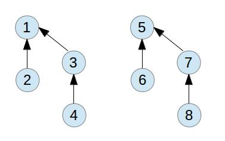
第三轮归并
这是一种比较特殊的情况，虽然path compression的效果没有发挥出来，但是它可以保证最坏的情况下path的长度为logN。从概率的角度来说，毕竟这样的情况是很少见的。
总结
集合的定义、查找和归并其实是一个比较值得深究的问题。虽然这里的定义实现并不复杂，但是结合一些优化手段的时候，还是有很多细节值得注意的。另外，我们有仔细思考过这种改进后的算法精确时间复杂度会有多少呢？书上给出的答案是ackerman函数的倒数。属于非常接近常数的一个量级了。不过它的推导还是非常麻烦，有时间的话再针对这个深入讨论讨论。
参考材料
Algorithms
Introduction to algorithms
http://stackoverflow.com/questions/12696803/weighted–quick–union–with–path–compression–algorithm
http://en.wikipedia.org/wiki/Disjoint–set_data_structure
问题描述：
假设我们有一组排序的元素，希望通过他们来构建一棵平衡的二叉搜索树。那么该如何构建呢？
分析
这是一个比较有意思的问题。通过一些递归的手法可以做很好的实现。我们首先来看，如果要构建一棵平衡二叉树的话，我们理想的情况是相对于一个树的节点来说，它的两个子树的元素是一样多的。这样就从本质上保证他们可以达到平衡。
那么，如果我们现在从定义的角度更加深入一下考虑的话，假定我们要构造一棵树。那么它的根节点就应该取元素列表的中间元素，这样保证两边平衡。在构造了这个节点之后，那么它的左右子节点呢？对于它的左子节点，按照递归的定义，则应该是在元素列表开头到这个节点之间再取中间值，然后返回。这样保证每次返回的节点都是当前剩余部分的中间节点。对于右边的子节点也同样类似。
这样，我们就得到了一个大致的思路:
1. 取元素列表的中间元素，作为当前节点。
2. 取元素列表开头到中间元素的中间节点，作为左子节点。
3. 取中间节点到列表结尾的元素的中间节点，作为右子节点。
4. 将当前节点和左右子节点关联起来。
5. 返回当前节点。
有了这些讨论，我们可以得到下面的代码：
public Node buildFromSorted(int[] list, int lo, int hi)
{
if(hi < lo) return null;
int mid = lo + (hi - lo) / 2;
Node middle = new Node(list[mid], null);
Node left = null;
if(lo < mid)
left = buildFromSorted(list, lo, mid - 1);
middle.left = left;
if(left != null)
left.parent = middle;
Node right = null;
if(mid < hi)
right = buildFromSorted(list, mid + 1, hi);
middle.right = right;
if(right != null)
right.parent = middle;
return middle;
}
这里，递归最巧妙的地方在于每次我返回的是一个节点。和二叉搜索树里面实现增加删除元素的递归方法思路一样。值得细细体会。
和代码配套的节点定义如下：
class Node
{
int data;
Node left = null;
Node right = null;
Node parent;
Node(int data, Node parent)
{
this.data = data;
this.parent = parent;
}
}
这里故意增加了一个指向父节点的引用。只是让实现里面多了两行代码。
详细的实现可以见附件里。
总结
这个问题本身并不复杂，主要是对递归思想的运用要考虑清楚。而且，和二叉搜索有点类似的地方是要注意取中间值时这一段元素开头和结尾的位置关系。在TreeMap的源代码实现里有一个基于迭代器的构造实现，也可以作为一个参考。
问题描述
给定一个矩阵，假设为n * n的，我们这个矩阵里有若干个数字为1的元素。其他地方的元素值则不为1. 现在需要我们提供一个方法将里面为1的元素所在的行和列都设置成1. 同时要求算法的空间复杂度为O(1)。
分析
这个问题看起来有点容易让人混淆，因为如果我们从前往后这么一行一行的去遍历时，如果碰到一个为1的元素就直接将它所在行和列都设置成1的话。相当于将后面要遍历的一些元素也变成了1,这样我们就没法判断这些元素是本来为1的还是后来被设置成1的。而且，因为有限的空间复杂度我们不能记录下来每个为1的元素的位置信息。
我们以下面的图为例，假定有一个矩阵，它里面包含的1元素如下：
因为在图中只有第2行，第3行和第5行有元素分别为1,那么按照前面设置的思路，最后被设置成的结果应该是这样的：
而如果我们当时碰到一个1元素就直接将它本行或者本列后面的部分置1的话，我们后面遍历到的时候就会产生问题，如下图：
在我们标红的这个地方，如果实现被设置成了1,后面因为没法判断，就会将整个矩阵都置成1了。
所以说，这种原来的思路就有问题。
标记和设置
在讨论这个问题的时候，当时因为受到前面这个思路的影响，可以说被带到沟里去了。其实我们用标记和设置的这个思路来考虑的话，就很好办了。
我们这样来看，既然我们每碰到一个元素，就要将它所在行和列都设置为1, 而为了不影响它后面的遍历，我们肯定不能去修改它后面的元素的值。另外，我们在一个矩阵里，如何去确定一个元素的位置呢？其实很简单，就和二维坐标一样，只要能够确定它所在的行号和列号就可以了。那么如果我们知道一个元素为1的时候，我们就将它所在的元素的行的第一个元素设置为1并将它所在列的第一个元素设置为1。这样不就相当于我们画一些方格的时候给打的点吗？而且有了这些点我们不就可以确定它们后面所画的线了吗？这样也不会对后面的修改造成任何混淆。
依然以前面的图为例，我们在碰到第一个为1的元素时，所要做的事就是设置它所在的行和列的第一个元素，如下图：

这个标红的两个点表示所在的行和列以后要设置为1. 按照这样的思路，我们第一回遍历完整个矩阵之后，得到如下的一个标记结果：
ok，有了这个图我们后面该怎么办呢？其实很简单了，我们就是遍历第一行和第一列，将里面为1的元素对应的行或者列设置为1。当然，在遍历的时候，比如说第一行的时候，我们还有一个特殊的情况要注意，就是假如我们矩阵里m[0][0]的元素为1,我们是不是要将它所在的列置为1呢？因为对应的是第一列，如果一开始我们就将它给设置了的话就破坏了原来设置的结果。所以针对这个特殊的情况，我们需要先跳过，在将后面的所有元素都设置好了之后再回过头来处理它，这样就没问题了。
现在我们来写一个代码的实现，这里主要分为两个部分，第一个是遍历数组设置第一行和第一列的标点元素，第二个是遍历第一行和第一列，然后将对应的行和列标注出来，然后再来判断一下最左上角的元素。
第一部分的实现如下：
void mark(int[][] m, int n) {
for(int i = 0; i < n; i++)
for(int j = 0; j < n; j++) {
if(m[i][j] == 1) {
m[0][j] = 1;
m[i][0] = 1;
}
}
}
方法很简单，做个标记。
第二个部分的代码：
public void set(int[][] m, int n) {
for(int i = 1; i < n; i++) { //注意这里i取从1开始，故意跳过m[0][0]元素。
if(m[0][i] == 1) {
setColumn(m, n, i);
}
if(m[i][0] == 0) {
setRow(m, n, i);
}
}
if(m[0][0] == 1) {
setRow(m, n, 0);
setColumn(m, n, 0);
}
}
而setRow, setColumn这两个方法的实现只要注意一点，不要从它们这一行第一个元素开始设置就行了。它们的实现如下：
void setColumn(int[][] m, int n, int col) {
for(int i = 1; i < n; i++)
m[i][col] = 1;
}
void setRow(int[][] m, int n, int row) {
for(int i = 1; i < n; i++)
m[row][i] = 1;
}
总结
这种问题并不难，有的时候就是要看自己分析的时候思路是不是清晰。当然，这种问题和刷题党的应对手段差不多。鸟儿大了，什么样的林子没见过？
 有点考核人思考能力的意义，但是并不大。
有点考核人思考能力的意义，但是并不大。
问题描述
假设我们有一组数字按从小到大的顺序执行进栈和出栈的操作，比如我们有数字0, 1, 2, 3, 4, 5, 6, 7, 8, 9。它们按照顺序混合执行push, pop操作。其中pop操作返回的数字组成一个序列。那么，当我们给定一个序列的时候，能否判断这个序列是可以通过这么一组push, pop操作形成呢？
问题分析
对于这个问题，一开始确实有点不太好分析。虽然数字都是按照顺序入栈的，但是它们出栈的顺序却不确定。假设我们以一组数字0， 1， 2为例来看它们push, pop操作形成的序列。那么它们对应如下的一些情况：
1. push 0, pop 0, push 1, pop 1, push 2, pop 2 (0, 1, 2)
2. push 0, pop 0, push 1, push 2, pop 2, pop 1 (0, 2, 1)
3. push 0, push 1, pop 1, pop 0, push 2, pop 2 (1, 0, 2)
4. push 0, push 1, pop 1, push 2, pop 2, pop 0 (1, 2, 0)
5. push 0, push 1, push 2, pop 2, pop 1, pop 0 (2, 1, 0)
按照这里的分析，至少上面这些序列都是通过入栈出栈操作形成的合法序列。而对于上面这三个数字来说，它们所能够形成了所有排列有6个。针对上面的5个序列来看，有一个排列是不能生成的。这个序列是2, 0, 1。
那么对于这个不能生成的序列，它有什么特点呢？因为在这里，当2出栈的时候，在栈里它下面的元素必然都是比它小的元素。一旦这些比它小的元素压入栈之后并没有马上出栈，它们就只能等到上面这些大的元素出了之后才能出了。
而且这个规律还要一个比较有意思的递归特性。对于任何一个元素来说，当它进栈的时候，它下面的元素必然都比它小。因为我们前面所有元素都是按照从小到大的顺序进栈的。而出栈的时候呢，当这个大的元素出栈的时候，后面接着要出栈的元素里只要是原来它下面的元素，就必然一个比一个小。所以，我们也可以概括成这样，对于栈里任何一个出栈的元素来说，生成的序列里它后面所有比它小的元素必然构成一个递减的序列。 所以，按照这个规律，我们可以来判断一个给定的序列是否为通过入栈出栈生成的。
public static boolean validSequence(int[] a) {
for(int i = 0; i < a.length; i++) {
int cur = a[i];
for(int j = i + 1; j < a.length; j++) {
if(a[j] < a[i]) {
if(a[j] > cur) return false;
else cur = a[j];
}
}
}
return true;
}
这里的代码实现就是从一个序列里遍历每个元素，去看后面所有比它小的元素是否构成一个递减的序列，如果没有就返回false，否则返回true。这种实现比较简单，但是性能方面有一些值得改进的地方。它的时间复杂度为O(Nˆ2)。因为对于某个元素来说，比如3，如果我们判断过后面所有比它小的元素0, 1, 2都是符合条件的。对于序列中3后面的元素，比如4来说，对于0, 1, 2的情况其实都不用再去判断了。同样，对于比3小的元素，我们这么遍历的时候都可以直接跳过去。
所以，为了实现这么一个改进，我们新增加了一个数组boolean[] marked，用来表示前面已经比较过的元素，一旦这些比较过的元素已经符合前面描述的递减关系，我们就标记marked[i] = true，在循环中把这些情况的跳过去。
pulic static boolean isValid(int[] a) {
boolean[] marked = new boolean[a.length];
for(int i = 0; i < a.length; i++) {
if(marked[i]) continue;
int cur = a[i];
marked[i] = true;
for(int j = i + 1; j < a.length; j++) {
if(marked[j]) continue;
if(a[j] < a[i]) {
if(a[j] > cur) return false;
else cur = a[j];
marked[j] = true;
}
}
}
return true;
}
按照这种思路，上面代码的时间复杂度在最理想情况下可以达到O(N)。
总结
这是一个看似不起眼的问题，实际上深入分析的时候并不好解决。需要发现它的一些规律。从它引申出来的一些问题比如这种序列的个数之类的包含了不少数学的东西，比如卡塔兰数之类的。比较有意思，以后有机会再深入的分析分析。
参考材料
Algorithms
简介
二叉树相关的问题和内容一直是一个比较有意思的方面。尤其是结合一些特殊的特性，比如搜索、遍历、高度等，更加让这些问题比想象的复杂。因此，对这些问题的分析也就很有必要。这里先对一些基本定义和操作做一个分析，后续会对一些其他常见的问题进行讨论。对于其中讨论的定义和方法，我们会尽力给出一个比较完备的实现。
二叉树定义
从字面上来理解二叉树，则比较简单，它主要是由一系列的节点组成。每个节点包含有两个分别指向左右子节点的引用。它有一个唯一的节点，称为根节点，在最上面。它的左右引用分别指向同样类型的节点。通过这样递归的定义，我们可以得到一棵二叉树。最常见的二叉树节点如下图：
它包含有3个部分，一个数据部分，保存节点的数据内容。两个引用，分别指向左边和右边的子节点。
通过这种形式定义的二叉树则如下图所示：
从图中我们可以看出，这种二叉树的数据结构定义我们可以将它定义成两个部分，一个是节点(BinaryNode)，还有一个就是二叉树（BinaryTree）。
下面是一个相对比较通用一点的节点定义：
class BinaryNode<T>
{
T element;
BinaryNode<T> left;
BinaryNode<T> right;
BinaryNode(T element)
{
this.element = element;
left = right = null;
}
}
这里，我们将节点定义成一个单独的类。在实际实现的时候，我们也可以根据需要将其定义成一个内部类。这主要取决于我们需要使用节点的范围。
有了节点之后，我们要定义一棵二叉树就很简单了，我们需要的是一个指向BinaryNode的节点，作为树的根节点：
public class BinaryTree<T>
{
private BinaryNode<T> root;
public BinaryTree()
{ root = null; }
//...
}
这里是对树的一个简略的定义，具体的方法这里先省略。
在有的情况下，我们需要引入一个指向父节点的引用。那么在这种情况下，节点的形式就变换成如下的样子：
对应的二叉树则转变成如下：
这部分带来的变动在节点和树的定义上影响比较小，加入了父节点会在后续的插入元素和删除元素的时候影响比较大。这里，节点对应的定义代码为：
class BinaryNode<T>
{
T element;
BinaryNode<T> left;
BinaryNode<T> right;
BinaryNode<T> parent;
BinaryNode(T element)
{
this.element = element;
left = right = parent = null;
}
}
遍历方法
前面对于树的定义部分讲了很多，其本身的定义其实很简单。这里重点讨论二叉树的遍历。其中前序、中序和后序遍历的过程可以说本身是递归的。他们的这种本身的递归特性使得具体的实现采用递归的方式非常有效。
前序
前序遍历指的是从一个树的根节点开始，首先处理当前节点，然后处理该节点的左子节点，再处理它的右子节点。也就是“根节点–左孩子–右孩子”这样的顺序。
递归实现
递归实现的方法非常简单：
private void preOrderTraverse(BinaryNode<T> t)
{
if(t != null)
{
System.out.print(t.element + " ");
preOrderTraverse(t.left);
preOrderTraverse(t.right);
}
}
这里，我们按照递归的定义，首先访问当前节点，这里我们用一个简单的打印信息语句来代替。然后递归的处理当前节点的左子节点，再处理右子节点。
非递归实现
递归实现的时候是每次访问当前节点，再接着访问它的左子节点，再访问右子节点。而用非递归的方式来实现时，我们不可避免的要使用到栈。因为我们访问完了某个节点和它的左子节点后还要返回来访问它的右子节点。这样，我们就有两种具体实现方式。
1. 既然我们访问每个节点的时候，首先要针对这个节点进行处理，然后再处理它的左右子节点。而且是先处理左子节点再处理右子节点。我们可以在处理节点后将该节点入栈，但是出栈的时候这个节点已经被处理过了，只需要接着去处理它的右子节点就可以了。我们在碰到的节点不为空的情况下，都是执行处理该节点，然后将节点入栈的操作。一直到节点为空了，则退栈，退到前一个处理过的节点，再将该节点指向右子节点。
private void preOrderIterTraverse2(BinaryNode<T> t)
{
if(t != null)
{
Stack<BinaryNode<T>> stack = new Stack<BinaryNode<T>>();
while(t != null || !stack.empty())
{
if(t != null)
{
System.out.print(t.element + " ");
stack.push(t);
t = t.left;
}
else
{
t = stack.pop();
t = t.right;
}
}
}
}
这里的一个重点是需要判断循环的退出条件，必须是stack为空和t也为空的时候，表示树已经遍历完了。
2. 还有一种前序遍历的方式，和前面的方式有点细微的差别。既然我们每次访问都是当前节点，然后是左子节点，再就是右子节点。那么既然左子节点先处理，在栈里头，它们应该被后压入到栈中，而右子节点应该先被加入到栈中。我们每次遍历的时候只要把当前栈顶的元素弹出来，处理完之后再先后把它的右子节点、左子节点压栈。
private void preOrderIterTraverse(BinaryNode<T> t)
{
if(t != null)
{
Stack<BinaryNode<T>> stack = new Stack<BinaryNode<T>>();
stack.push(t);
while(!stack.empty())
{
BinaryNode<T> node = stack.pop();
System.out.print(node.element + " ");
if(node.right != null) stack.push(node.right);
if(node.left != null) stack.push(node.left);
}
}
}
中序
中序的遍历过程比较类似，就是“左子节点–当前节点–右子节点” 。
递归实现
有了前面的讨论，相对代码就很简单直接了：
private void inOrderTraverse(BinaryNode<T> t)
{
if(t != null)
{
inOrderTraverse(t.left);
System.out.print(t.element + " ");
inOrderTraverse(t.right);
}
}
非递归实现
非递归的顺序来中序遍历树的时候，我们要考虑到。它每次访问的时候都是要访问左子节点。那么按照递归的定义，最开始被访问处理的一定是最左下的子节点。当这个这个节点的左子节点肯定已经为空了。同时，我们也可以把它当成一个左子节点为空的根节点。那么访问完它之后我们需要再到它的右子节点继续前面的那个一路向左的过程。每次到最左边没有其他左子节点了，我们再弹栈，处理最上面这个节点。
private void inOrderIterTraverse(BinaryNode<T> t)
{
if(t != null)
{
Stack<BinaryNode<T>> stack = new Stack<BinaryNode<T>>();
BinaryNode<T> p = t;
while(p != null || !stack.empty())
{
while(p != null)
{
stack.push(p);
p = p.left;
}
if(!stack.empty())
{
p = stack.pop();
System.out.print(p.element + " ");
p = p.right;
}
}
}
}
和前面的问题类似，我们的循环终止条件是p和栈为空。
后序
后续的遍历则是“左子节点–右子节点–当前节点”。
递归实现
递归实现和前面的代码类似，毫无难度：
private void postOrderTraverse(BinaryNode<T> t)
{
if(t != null)
{
postOrderTraverse(t.left);
postOrderTraverse(t.right);
System.out.print(t.element + " ");
}
}
看代码，不解释。
非递归实现
后序遍历的非递归实现可以说是这几种里面最难的。这里面的解决办法也不是我最初想到的，在参考了后续的实现之后才分析出来。问题的解决思路如下：对于任意一个节点，我们需要访问了它的左右子节点之后才能访问它。所以，我们可以这样来考虑，对于一个节点，先将它入栈，如果它的左右子节点为空，则可以直接访问它。另外，如果它的左右子节点都被访问过了，也可以访问它。如果不是以上的这两种情况，则先后将它的右子节点和左子节点入栈。这样保证了每次先访问左子节点，再访问右子节点。
还有一个问题就是，在前面判断是否能访问该节点时，我们怎么知道它的左右子节点已经被访问了呢？这里用一个比较巧妙的手法，用了一个额外的引用pre。它指向当前访问节点的前一个节点。如果它的前一个节点是当前节点的左右子节点，则表示子节点已经访问完了。对于判断它的前一个节点是当前节点的左子节点这一种情况有点让人困惑。因为按照前面的遍历顺序，走了左子节点要走右子节点，如果有右子节点的话，这种条件不成立，如果没有右子节点，就会出现这种情况。
private void postOrderIterTraverse(BinaryNode<T> t)
{
if(t != null)
{
Stack<BinaryNode<T>> stack = new Stack<BinaryNode<T>>();
BinaryNode<T> cur, pre = null;
stack.push(t);
while(!stack.empty())
{
cur = stack.peek();
if((cur.left == null && cur.right == null) ||
(pre != null && (pre == cur.left || pre == cur.right)))
{
System.out.print(cur.element + " ");
stack.pop();
pre = cur;
}
else
{
if(cur.right != null)
stack.push(cur.right);
if(cur.left != null)
stack.push(cur.left);
}
}
}
}
这部分的代码的难点在于要判断需要访问的节点符合的条件。
逐层遍历
逐层遍历的过程就是一个广度优先遍历树的过程。树的结构是一层一层的。这个遍历的顺序就是从最上层开始一层一层的按照从左到右的顺序输出。这个问题看似比较困难，实际上只要把队列这个数据结构搬出来，就已经解决一大半了。
它的过程无非就是碰到一个节点，先处理它，再分别将它的左右子节点加入到队列。这样一直从队列头取，一边从队列尾加，一直到队列为空。代码如下：
private void hierarchyTraverse(BinaryNode<T> t)
{
if(t != null)
{
Queue<BinaryNode<T>> queue = new LinkedList<BinaryNode<T>>();
queue.add(t);
while(queue.size() > 0)
{
BinaryNode<T> node = queue.remove();
System.out.print(node.element + " ");
if(node.left != null) queue.add(node.left);
if(node.right != null) queue.add(node.right);
}
}
}
总结
二叉树的定义虽然大体上是要求任何一个节点包含分别指向左右子节点的引用（指针） ，但是根据一些特殊的需要，它的实现会有所调整。比如增加指向父节点的引用或者指向兄弟节点的引用。在一些问题比如求父节点或者前一个/后一个节点的情况下，这些新增加的部分能够对问题解决带来极大的便利。
围绕二叉树的常用几种遍历形式涌现出很多有意思的问题。这里主要针对递归和非递归的实现做了一个总结。某些问题，比如说根据某两种遍历的序列来构造树、遍历结果序列和树的关系、节点的共同父节点等会在后续的文章里进一步分析。
参考资料
http://www.cnblogs.com/dolphin0520/archive/2011/08/25/2153720.html
http://www.amazon.com/Introduction–Algorithms–Thomas–H–Cormen/dp/0262033844/ref=sr_1_1?s=books&ie=UTF8&qid=1363617759&sr=1–1&keywords=introduction+to+algorithms
http://www.amazon.com/Data–Structures–Problem–Solving–Using/dp/0321541405/ref=sr_1_1?s=books&ie=UTF8&qid=1363617891&sr=1–1&keywords=data+structures+%26+problem+solving+using+java
二叉搜索树的定义
和前面一篇讨论二叉树有一点不一样，二叉搜索树它本身是一种二叉树，但是它有一个特殊的地方。任何一个二叉树中间的节点都是可以比较的。他们有一个key的值用于比较节点之间的大小。而且，对于任意一个二叉搜索树中间的节点，它左子树中间的节点值小于它，而它右子树的节点值则大于或等于它。一个典型的搜索二叉树如下图所示：
在有的情况下，我们为了实现某些方法方便会在树中间增加一些属性，比如指向父节点的引用，当前节点所有子节点元素个数。
下面是一种二叉树节点的定义：
private static class BinaryNodeWithSize<T> extends BinaryNode<T>
{
BinaryNodeWithSize(T x)
{
super(x);
size = 0;
}
int size;
}
class BinaryNode<T>
{
T element;
BinaryNode<T> left;
BinaryNode<T> right;
BinaryNode<T> parent;
BinaryNode(T element)
{
this.element = element;
left = right = parent = null;
}
}
这里通过继承的方式实现一种包含指向父节点引用和子节点个数的节点类型。
前驱(predecessor)
前驱指的是对指定的一个节点找到一个比它小但是和它值最接近的节点。要求一个节点的前驱比较理想的情况是需要用到节点指向父节点的引用。在具体查找元素的时候需要向上访问。我们主要针对两种情况进行讨论：
1. 如果该节点有左子树，那么和它最接近的那个前驱元素肯定是左子树的最大值。这种情况对应的图如下所示：
实际上这种情况就是要找到节点左子树的最大值。
2. 如果该节点没有左子树，我们需要向上来查找。对于7这个节点来说，我们需要找到比它小的。但是如果它是它父节点的左儿子，则该父节点比它大，不符合要求。需要一直找到将它或者它上面的节点作为右儿子的那个节点。如下图：
所以针对这种情况我们可以得出如下的代码：
public BinaryNode<T> predecessor(BinaryNode<T> t)
{
if(t != null)
{
if(t.left != null)
return findMax(t.left);
BinaryNode<T> y = t.parent;
while(y != null && t == y.left)
{
t = y;
y = y.parent;
}
return y;
}
return null;
}
里面的findMax实现如下：
private BinaryNode<T> findMax(BinaryNode<T> t)
{
if(t != null)
while(t.right != null)
t = t.right;
return t;
}
后继(successor)
后继节点就是比当前节点大的节点集合中最小的那个。求节点的后继和前驱类似。也要考虑两种情况。
1. 如果它有右子树，肯定后继是右子树的最小值。
2. 如果它没有右子树，则后继节点是它向上的树中第一个以它的上级节点为左子树的那个节点。如下图所示：
对应的实现代码则如下：
public BinaryNode<T> successor(BinaryNode<T> t)
{
if(t != null)
{
if(t.right != null)
return findMin(t.right);
BinaryNode<T> y = t.parent;
while(y != null && t == y.right)
{
t = y;
y = y.parent;
}
return y;
}
return null;
}
protected BinaryNode<T> findMin(BinaryNode<T> t)
{
if(t != null)
while(t.left != null)
t = t.left;
return t;
}
插入元素(insert)
假定我们要插入一个元素，最基本的思路就是先根据这个要插入的值和树中间的节点进行比较，如果该节点比目标值大，则在节点的左子树里面寻找插入的地方，否则在右子树里面寻找。这里的一个实现用到了递归的思路，使得很多需要考虑的细节都被简化了：
protected BinaryNode<T> insert(T x, BinaryNode<T> tt)
{
BinaryNodeWithSize<T> t = (BinaryNodeWithSize<T>) tt;
if(t == null)
t = new BinaryNodeWithSize<T>();
else if(x.compareTo(t.element) < 0)
t.left = insert(x, t.left);
else if(x.compareTo(t.element) > 0)
t.right = insert(x, t.right);
else
throw new DuplicateItemException(x.toString());
t.size++;
return t;
}
这里递归的一个妙用就是在每次要插入一个元素的时候，我们需要修改经历过的节点size值。size表示该节点下面所有子树元素的个数。通过返回修改后的根节点很多需要考虑修改的细节都通过递归给自动实现了。
如果我们考虑一个非递归的版本实现，则会发现要繁琐一些，当然，这里返回的不再是修改后的树的根节点，而是当前插入的元素节点：
protected BinaryNode<T> insertIter(T x, BinaryNode<T> t)
{
BinaryNode<T> prev = null, node = t;
while(t != null)
{
prev = t;
if(x.compareTo(t.element) < 0)
{
t.size++;
t = t.left;
}
else if(x.compareTo(t.element) > 0)
{
t.size++;
t = t.right;
}
else
throw new DuplicateItemException(x.toString());
}
if(prev == null)
node = new BinaryNode<T>(x);
else
{
if(x.compareTo(prev.element) < 0)
{
prev.left = new BinaryNode<T>(x);
prev.left.parent = prev;
}
else
{
prev.right = new BinaryNode<T>(x);
prev.right.parent = prev;
}
}
return node;
}
通过比较这两部分的代码，我们会发现使用递归有的时候确实可以隐藏了很多需要考虑的细节，而且代码也会简单很多。
删除元素(remove)
和前面添加元素的方式相反，这里要找到需要删除的元素然后删除它。删除元素的过程可能会复杂一点。针对它所在节点的情况。我们分别进行讨论。
1. 如果该节点是一个叶节点。
直接删除该元素，将该父节点所指向它的引用置为null。
2. 如果该节点只有一个子树
将它的左/右子节点替换它本身。
3. 如果该节点有两个子树
笼统的来说，既然它有左右两个子节点，可以取它的后继元素，也就是右子树的最小值来替换它。然后在右子树中删除这个最小值节点。根据右子节点是否有左子树，具体的形式还会稍微有点不一样。
一种情况如下，右子节点没有左子树，这意味着它的右子节点就是右子树最小的元素：
如果节点的右子节点有左子树的话，则对应下面的情形：
针对前面的那些讨论，下面是remove方法的实现：
protected BinaryNode<T> remove(T x, BinaryNode<T> tt)
{
BinaryNodeWithSize<T> t = (BinaryNodeWithSize<T>) tt;
if(t == null)
throw new ItemNotFoundException(x.toString());
if(x.compareTo(t.element) < 0)
t.left = remove(x, t.left);
else if(x.compareTo(t.element) > 0)
t.right = remove(x, t.right);
else if(t.left != null && t.right != null)
{
t.element = findMin(t.right).element;
t.right = removeMin(t.right);
}
else
return (t.left != null) ? t.left : t.right;
t.size--;
return t;
}
protected BinaryNode<T> removeMin(BinaryNode<T> tt)
{
BinaryNodeWithSize<T> t = (BinaryNodeWithSize<T>) tt;
if(t == null)
throw new ItemNotFoundException();
if(t.left == null)
return t.right;
t.left = removeMin(t.left);
t.size--;
return t;
}
remove方法在这里采用递归的方式返回待删除子树的根节点，和前面的思路类似。
第k小的元素
在节点增加了size属性之后，我们需要求这个第k小元素的问题就比较简单了。首先我们从树的根节点开始，比较这个目标k值和它的左子节点的元素个数，如果它小于或者等于左子节点元素个数的话，则需要在左子树里面继续查找。如果k大于左子树个数+1的话，则在右子树里查找k–t.left.size – 1。这里判断查找到的条件是k == t.left.size + 1。因为这正好表示k的值和当前节点对应。
protected BinaryNode<T> findKth(int k, BinaryNode<T> t)
{
if(t == null)
throw new IllegalArgumentException();
int leftSize = (t.left != null) ? ((BinaryNodeWithSize<T>) t.left).size : 0;
if(k <= leftSize)
return findKth(k, t.left);
if(k == leftSize + 1)
return t;
return findKth(k - leftSize - 1, t.right);
}
总结
二叉搜索树的定义使得查找和插入元素的时候可以按照一个类似于二分法的思路去操作节点。在它的基础上衍生出来的计算节点和各种插入删除操作都比较常见，这里对他们的过程做一个简单的整理。里面还有一些结合指向父节点的小细节的地方考虑还不够成熟。
参考资料
Introduction to algorithms
Data Structures and Problem Solving Using Java
Algorithms
问题描述
也许我们在很小的时候就已经听说过了这个问题。假定我们有两个桶，一个容量为3升，一个容量为5升，我们怎么能够不通过其他度量工具的帮助兑出4升的水来。假定水是无限的。
问题分析
如果单纯针对这个问题来看，相信我们还是可以很容易的得到一个推导过程。既然我们有两个桶，一个是3升，一个是5升，那么我们可能需要将一个桶装满水，然后倒到另外一个桶里，通过将一个桶倒满而另外一个桶可能还有盈余来达到最终兑换出期望容量的水的目的。按照这个思路，我们可以开始第一步分析。
初步分析
假定我们定义这两个桶分别为a, b。那么它们这两个桶里水的容积可以表示为(x, y)这样一个数对。那么我们整个兑水的过程可以描述如下：
1. (0, 0) 最开始两个桶都为空。
2. (3, 0) 我们将桶a倒满
3. (0, 3) 将桶a的水倒入桶b
4. (3, 3) 将桶a倒满
5. (1, 5) 将桶a的水倒入桶b，注意，因为桶b的容量为5升，所以只能倒入2升后，桶a还剩余1升
6. (1, 0) 将桶b的水倒掉
7. (0, 1) 将桶a的水倒入桶b
8. (3, 1) 将桶a倒满
9. (0, 4) 将桶a的水倒入桶b
我们可以看到，到第9步的时候，桶b里的水就正好是我们所期望的4升。我们成功的解决了这个问题。
从这个特定的问题本身，似乎没什么特殊的，我们就这么来回的倒腾似乎有点撞大运，最后把期望容量的水给兑出来了。可是，如果我们再深层次的去想想。是不是任意一个给定数量的水我们都可以通过指定容量的两个桶给兑换出来呢？如果可以兑换的话，它们之间有没有什么规律？如果不行的话，问题的根源又是在哪里呢？
进一步分析
我们带着前面的疑问再回顾一下这个问题。因为我们单单只知道桶的容量，所以如果不是将一个桶里的水倒满或者倒空，我们是没法知道桶里水的确切容量的。我们在前面能够兑出其他容量的水，很大一部分原因是利用两个桶之间的容积差。比如这个3升和5升的桶，如果将5升的桶倒满再倒入3升的桶，那么5升的桶里剩下的水就有2升。同样，我们将3升的桶装满，往5升的桶里倒两次，3升的桶里会剩下1升的水。前面我们这些倒水和兑换的过程，似乎总是要将一个桶装满，然后再倒入到另外一个桶，这样倒入的结果必然使得不是一个桶空就是一个桶满。
嗯，到这一步的时候，我们似乎发现一点什么规律了。针对前面兑水的这个过程，如果我们用一个更加一般形式的数学表达式来描述的话，则形式如下：
假设两个桶容量分别为a, b
(0, 0) –> (a, 0) 装满第一个桶
–> (0, a) 倒入第2个桶
–> (a, a) 装满第一个桶
–> (2a – b, b) 倒入第2个桶 (假定第二个桶容量 b < 2a)
–> (2a – b, 0) 到空第2个桶
–> (0, 2a – b) 倒入第2个桶
–> (a, 2a – b) 倒满第1个桶
–> (3a – 2b, b) 倒入第2个桶(假定3a > 2b)
这个时候我们来看两个桶里水的容量，发现他们要么是0, a, b, 要么就是一些a,b的组合表示，我们可以将他们表示成sa + tb这样的形式。这个样式不就是一个线性组合的表达形式么？桶里水的容量不管是0, a, b都是对应着sa + tb这个表达式的一种情况。那么最终两个桶里水的容量是不是符合这个规律呢？我们这个时候就需要花点时间证明了。
我们这里就请出数学归纳法：假设我们有两个桶，容量分别为a和b。那么按照前面兑水的过程，最后每个桶里的水总是a和b构成的一个线性组合。
前面这部分就是我们要证明的命题。如果我们用P(n)来表示经过n步兑水的过程之后的结果，那么我们期望的结果是最终n + 1的情况也满足这个线性组合的特性。
我们先来看最初始的情况，假设n = 0，这个时候表示最开始两个桶都是空的. 这个时候0a + 0b = 0，对于0这种情况命题成立。
现在假设经过n步之后，每个桶里的水都是a, b的线性组合。我们要来推导第n +1步的结果。针对这个第n+1步有几种情况：
1. 如果我们将一个桶装满水或者倒空，那么这个时候这个桶里水的容量则为如下几种情况，0, a, b。显然，他们是a, b的一个线性组合。而对应的另外一个桶按照我们的假设它已经是一个线性组合了。所以这种情况下，命题成立。
2. 如果我们将一个桶的水倒入另外一个桶，使得一个桶为空或者一个桶满。针对这种情况，按照前面的假设，假定倒水前，两个桶的水容量分别为：
j1 = s1 * a + t1 * b j2 = s2 * a + t2 * b
那么在将一个桶的水倒入另外一个桶之后，则会出现一下几种情况。一个桶空了，这个时候，另外一个桶的水则为j1 + j2；或者一个桶满了，那么这个满了的桶可能是a，也可能是b，则另外一个桶里的水则可能是j1 + j2 – a或者j1 + j2 – b。而针对这几种情况，它们实际上还是可以最后表示成sa + tb这样的形式。
所以，我们最终证明得出，
以上倒水的过程最终使得每个桶里的水容量为a, b的一个线性组合
。
可是，光有了这么一个结论似乎也没帮上多大的忙啊。比如说我们有两个桶，再给定一个需要兑出目标体积的水时，我们只知道可以兑出的水是我们两个桶容积的线性组合。对于目标体积的水能否兑换出来，怎么兑换还需要费一定的功夫来推导。那么还有没有更进一步的结论支持呢？
进一步引申
在前面的问题中，我们分析出来目标体积的水必须是两个桶容积的一个线性组合。可是在实际中，如果给出一个目标体积的水，难道我们就按照sa + tb这样的表达式去一个一个整数的尝试吗？这肯定是一种比较愚蠢的办法。
这个时候，我们似乎陷入了一个困境，看似没有什么有效的办法能够一步就判断出来某个给定的容积是否可行。我们再来看这个线性组合的表示方式sa + tb。我们要判定一个数字是否可以表示为sa + tb的时候会比较困难。如果我们来看看a, b之间有没有什么共同的关系呢？
这一步会比较困难，不过如果我们想到最大公约数的话，这个问题就有了一个新的思路。我们知道，对于两个整数来说，它们的最大公约数GCD(a, b)同时整除这两个数字。那么对于数字a和b来说，他们可以分别表示为a = s * GCD(a, b), b = t * GCD(a, b)。那么对于a和b的线性组合sa + tb来说呢？很显然，它们也必然能够被GCD(a, b)整除。
这个时候，我们就发现了一个非常重要的结论：
对于a, b的线性组合sa + tb，它们能够被GCD(a, b)整除
。
那么有了前面这个引申，我们可以发现，如果对于一个给定的目标水容量，如果它们不能被GCD(a, b)整除，那么它们肯定就不能够构成a, b的线性组合。可是，如果一个给定的目标水容量能够被GCD(a, b)整除了，那么它是不是就一定是a, b的线性组合呢？因为前面的证明结果相当于只是证明了一半。只有这部分也保证成立的话，我们才能说明
一个给定的数字能够被GCD(a, b)整除<==> 这个数字是a, b的线性组合
。好吧，看来我们就差这一点了。
我们假定有一个最小的线性组合m = sa + tb。这里m > 0。那么我们a可以表示成如下的关系：
a = qm + r (r>=0 r < m)
我们将m表达式代入到这个表达式里得到a = q(sa + tb) +r
因此： r = (1 – qs)a + (–qt)b. 这里r可以表示为一个a, b的线性组合，而且还有r>=0 r < m。而根据前面的假设，m是最小的线性组合。所以这里r只能为0. 那这就说明了a = qm，也就是说a可以被m整除。而同理我们也可以证明b也可以被m整除。这里m能够同时整除a, b，而GCD是能整除a, b的最大整数，所以必然有m <= GCD(a, b)。可是从前面的讨论里我们知道所有a, b的线性组合可以被GCD(a, b)整除，也就说明了m也能被GCD(a, b)整除。这又说明了GCD(a, b) <= m。所以我们会发现对于最大公约数来说，它本身也是一个a, b的线性组合。只不过是一个最小线性组合。这样我们也就证明了如果一个给定的数字能够被GCD(a, b)整除，它一定就可以表示成a, b的线性组合。
综合
前面我们花费了大量的篇幅只是为了证明从两个桶倒水得到的水容量的范围以及如何判断某些指定的值是否可以达到。结合前面的结论，我们可以发现，
给定一个数字，如果我们需要证明它是否能被兑换出来只要看它是否能够被两个桶容量的最大公约数整除就可以了
。那么，在我们的具体实现里，第一步就需要知道怎么来求得它们的最大公约数。在我的
这篇文章
里对怎么求最大公约数有了详细的说明。这里把实现求最大公约数的代码给贴过来：
递归版本：
public long gcd(long a, long b)
{
if(b == 0)
return a;
else
return gcd(b, a % b);
}
非递归版本：
public long gcdIter(long a, long b)
{
if(b == 0)
return a;
while(true)
{
a = a % b;
if(a == 0)
return b;
b = b % a;
if(b == 0)
return a;
}
}
有了第一步计算出来了最大公约数之后，我们就可以以这个作为判断的依据了。那么，这个判断的代码则非常简单：
public boolean isReachable(int a, int b, int volume) {
int gcd = gcd(a, b);
return (volume % gcd == 0)
}
现在，假设我们要进一步，根据判断，我们确实可以得到目标水量，那么我们该如何来用程序实现这个过程呢？代码实现如下：
public static void pourJugs(int a, int b, int volume) {
if(isReachable(a, b, volume)) {
int target = volume % b;
int a1 = 0, b1 = 0;
while(b1 != target) {
if(a1 == 0) {
a1 = a;
System.out.printf("(%d, %d)\ta full\n", a1, b1);
}else if(b1 + a1 < b) {
b1 += a1;
a1 = 0;
System.out.printf("(%d, %d)\tpour a into b\n", a1, b1);
} else {
int c = a1 + b1;
a1 = c - b;
b1 = b;
System.out.printf("(%d, %d)\tpour a into b, b full\n", a1, b1);
b1 = a1;
a1 = 0;
System.out.printf("(%d, %d)\tempty b, pour a into b\n", a1, b1);
}
}
} else
System.out.println("Volume " + volume + " cannot be reached.");
}
这部分的代码写的比较急，还有一些细节的地方没有优化。不过其实质上就是通过不断将a的水倒满，然后再倒入b，在这个过程中判断b是否满。如果b已经满了，则将b清空，然后再将a倒入。否则将a的水继续倒入。每次要判断两个桶里的水。完整可编译运行的代码放在后面的附件里。
如果我们运行pourJugs(3, 5, 4) ，则可以得到如下的输出：
(3, 0) a full
(0, 3) pour a into b
(3, 3) a full
(1, 5) pour a into b, b full
(0, 1) empty b, pour a into b
(3, 1) a full
(0, 4) pour a into b
总结
很多时候一个看似很小的问题，其实它的后面都蕴藏着一个有趣的数学思想。从两个桶兑水的问题，我们可以推导出水和桶容量之间构成的一个线性组合关系。再基于这个线性组合关系，我们又发现它们和最大公约数有密切的关系。而且，基于它们之间的关系我们可以很容易的判断出给定两个桶，是否能够兑换出给定容积水的结论。这些推导的结果对于我们后面用代码来实现最终的兑换也起到了指导作用。
参考材料
Mathematics for computer science
http://shmilyaw–hotmail–com.iteye.com/blog/1752360
问题描述
从一组无序的数组里求它的中间值，要求定义一个数据结构，保证用常量的时间可以找到中间值，而插入一个元素的时间复杂度为O(logn)，而删除中间值元素的时间复杂度为O(logn)。这个问题要求里最严格的一点是，以上的这些特性的保持是动态的。比如说，我们要输入的元素可能有1000个，但是在我输入前面的若干个元素的时候，它们也满足以上的特性。
分析
在分析这个问题之前，我们先看看中间值的定义，它无非是一组元素中间的值，使得这个值将一个数组分割成两个部分，一部分是比该元素大，另外一部分是比该元素小。但是这两个部分的元素个数相同。比如下图所示的几种情况：
对于上面这种情况，正好是奇数个，我们这里取的是一种特殊情况，让这个数组里元素本身是排好序了的。所以这里取的是中间的元素3.
而这种情况就稍微有点不一样，因为它这里元素的个数是偶数个，如果直接划分成两个部分的话，则表示左边有1, 2, 3, 而右边有4, 5, 6。那么取这个中间值，应该怎么来算呢？在左边那边串中间，最接近中间值的是3, 右边最接近的是4, 所以取的是(3 + 4) / 2。得到的值3.5就是期望的中间值。
前面这里举出的实例更多的是一种特例，因为所有的元素都是排序了的，在大多数情况下，元素并不是排序的，很多像下图那样：
针对这种情形，如果我们要求它的中间值，需要考虑的重点在哪里呢？既然我们要考虑的是中间值，也就是将整个数组划分成相等两个部分的那个点，可不可以用一种划分的方式来处理呢？比如说我们首先设定一个值，这个值作为临时的中间点。然后将比这个值小的放在一个集合里，然后比这个大的值放在另外一个集合里。因为前面设定的这个中间值是假设的，它可能并不准确，需要进行动态的调整。所以要达到这个条件的话，需要保证比中间值小的集合元素个数和比中间值元素大的集合个数相同。理想的情况下，它们应该是一个如下图的关系：
所以，至少需要记录两个集合的元素个数，保证它们至少个数是很接近的，最好是相同。但是，仅仅是记录两个集合的个数就够了吗？比如说，假定左边集合已经有如下元素：{1, 5, 7}， 而右边的元素为{9, 12, 17}，中间元素为8。这个时候，确实满足中间值就是8。如下图：
如果下一个元素是4呢？那么左边元素集合为{1, 5, 7, 4}，中间元素为8, 而右边元素不变。这个时候，实际上中间值应该就在7和8之间。这个时候对应的情况如下：
如果不调整中间值，而如果后面再增加一个元素比如3呢？这个时候，左边的集合成了{1, 5, 7, 4, 3}，中间值是8, 右边的还是没有变化。现在就有问题了。左边的集合元素比右边的集合大2, 必须要动态的去调整中间值节点。所以，必须要将8移到右边的集合里，而从左边的集合里取最大的那个来作为中间值。
嗯，再重复一下前面的过程，当左边的集合元素个数比右边大2的时候，取左边最大的元素作为中间值。那么右边比左边大2的时候呢？取右边最小的元素作为中间值就可以了。到这一步，我们已经有一点感觉了。我们不但要记录两边集合元素的个数，还要记录左边集合的最大值和右边集合的最小值。
保持一个集合里最大值或者最小值，可以有好几种办法来实现。一个是通过比较，保存一个比较得到的最大或者最小值，还有一种就是最大或者最小堆。现在，再结合前面问题里的一个要求，就是插入一个元素和删除一个元素的时间复杂度为O(logn)。所以，这里必然要用到最大最小堆无疑。所以，综合起来来说，前面的过程大致是这样：将一个集合开始的时候划分成两个部分。左边部分是一个最大堆，右边部分是一个最小堆。因为左边要获取最大的元素，而右边部分要获取最小的元素。当两边元素相同的时候，取的中间值就是(左边堆顶元素topleft + 右边堆顶元素topright) / 2。
而如果不相等呢，因为前面有一个调整的手法，当两者相差达到2的时候，将元素多的堆的堆顶元素取出来加入到另外一个堆中间，这样两边的个数就相同了。所以相差为2的时候可以调整为相同。而相差为1的时候，表示某一边多一个元素，这个时候，中间值元素就正好是这个多一个的堆的堆顶元素。
上面过程的伪码实现如下：
public double getMedian(leftset, rightSet, input) { //其中左边集合为比较小的元素集合，右边集合为大的元素集合
while((item = input.read()) != null) // 可以读取到元素{
if(item < leftSet.top) { // 如果小于左边集合
leftSet.insert(item);
} else {
rightSet.insert(item); //将元素加入到右边集合
}
// 判断两边元素个数的差异，进行调整
if(leftSet.size() - rightSet.size() == 2) { //如果左边元素集合比右边元素集合大2, 取顶元素加入到右边
item = leftSet.remove();
rightSet.insert(item);
}
// 同样应用于右边元素比左边元素大2的情况
if(rightSet.size() - leftSet.size() == 2) { //如果右边元素集合比左边元素集合大2, 取顶元素加入到左边
item = rightSet.remove();
leftSet.insert(item);
}
}
// 在元素取完之后要判断两边集合元素的情况
if(leftSet.size() == rightSet.size()) {
return (leftSet.top() + rightSet.top()) / 2;
} else if(leftSet.size() > rightSet.size()) {
return leftSet.top();
} else
return rightSet.top();
}
在这里，进一步细化到代码实现的时候，还有一个需要考虑的。就是刚开始的时候，两个集合都没有元素，该怎么来判断呢？这个时候，可以先取两个元素，比较一下两边，比较小的元素放到左边集合，大的元素放到右边集合。然后左边的实现是使用一个最大堆，而右边的实现是使用一个最小堆。按照前面伪码的提示，后面所要做的就是跟踪两边集合的个数，让它们不要超标了，并及时调整。这样整个问题就解决了。
具体最大堆和最小堆的实现可以参照我前面关于堆方面的文章，这里因为按照提示实现具体的代码已经很容易了，就不再提供详细的实现。
总结
动态的求一组数据的中位数，要点无非就是要找到最接近中间值的那个点。所以需要跟踪两边集合元素的个数和最接近中间值的那几个数。在本问题中，因为要求有其他数据操作的时间复杂度以及需要保存这些数据，所以左边采用了一个最大堆而右边采用了一个最小堆。这样左边堆顶和右边堆顶保存的永远是最接近中间值的元素。这里还有一个限制，就是对于大数据量的情况，因为要将数据保存在两个堆里，方便后面进行调整，所以这种方法就不适用了。
参考材料
http://stackoverflow.com/questions/10657503/find–running–median–from–a–stream–of–integers
http://shmilyaw–hotmail–com.iteye.com/blog/1775868
http://shmilyaw–hotmail–com.iteye.com/blog/1827136
简介
这是一个相对比较简单直接的问题。假设我们有这么一个单链表，需要将它反转过来。对它分析的过程结合图的形式来看会比较清晰直观一点。
分析
我们要通过遍历的方式来反转链表，那么就需要考虑每次反转的时候需要将当前元素指向它原来的前面一个元素。因此，我们需要有一个变量来保存要反转元素的前面一个元素。另外，我们在遍历的时候，要调整当前元素时，为了能够找到后面的结点，需要用到一个额外的变量来指向调整元素，同时调整完之后保证指向前面的元素转而指向当前。
这么个过程显得比较晦涩，用图表的方式来看就很直观了。
假定我们有一个链表，并且声明了两个变量，prev, temp：
在开始的时候，temp = null, prev = null。接着，我们将temp = head; 这样temp就指向head当前的位置，同时将head指向它下一个位置，也就是head = head.next; 由于我们假定prev表示当前元素的前一个元素。开始的时候prev = null， 我们当前的这个元素是temp所指向的。我们再将temp.next = prev；这样就将第一个元素给反转过来了。如下图所示：
当然，为了紧跟head这个元素。prev本身必须是head的前一个，所以在前面一步的设置完成后，我们需要将prev跟进。正好temp指的是当前的，那么就需要将prev = temp。这样结果就如下图了：
这样，经过前面几个步骤，我们就已经将第一个元素给反转过来了。后面的过程也类似。假设我们要接着反转第二个元素，那么它的过程如下图：
这一步骤相当于执行了这么两句：temp = head; head = head.next;
这一步则是将temp所指向的元素反转，也就是：prev = temp.next;
有了前一步的过程，这一步就是相当于要将prev跟上，也就是：prev = temp;
ok, 有了前面的这两轮走下来，我们发现他们所要调整的步骤主要如下：
1. temp = head; // 指定当前要调整的点。
2. head = head.next; // 走向下一个要被调整的点
3. temp.next = prev; // 将当前的点反转
4. prev = temp; // 表示当前调整结点的前一个结点跟进
以上的4个步骤构成了一个循环。循环的终止条件是head == null；这样，我们很快可以得到一个单链表反转的方法：
public static Node reverse(Node head)
{
Node prev = null;
Node temp = null;
while(head != null)
{
temp = head;
head = head.next;
temp.next = prev;
prev = temp;
}
return temp;
}
总结
单链表反转的过程并不复杂，只是它的过程如果不仔细整理清楚的话容易出错。用画图描述每个小步骤的方法可以帮助理请思路。
补充
反转单链表的方法当然不止前面那一种，还有几种比较常见的，比如说借助堆栈的方式来实现；新建一个链表，每次在表头插入原有链表的元素以及一种递归的方式。这里就对这几种方式也增加一个辅助的分析。
辅助堆栈
整个的过程其实还是比较简单，我们从原有链表头开始，遍历所有的元素，遍历中将每次碰到元素都压入堆栈。结束这个过程后再将堆栈的元素依次弹出来，重新构造一个新的链表。一种大致的实现代码如下：
Node reverse(LinkedList list)
{
Node node = list.head;
Stack<Node> stack = new Stack<Node>();
while(node != null) // 所有元素入栈
{
stack.push(node);
}
Node newHead, item;
if(!stack.empty())
{
newHead = stack.pop();
item = newHead;
}
// 再将元素出栈重新构造
while(!stack.empty())
{
Node temp = stack.pop();
item.next = temp;
item = item.next;
}
return newHead;
}
新建链表
新建链表的方式也比较简单，首先建立一个空的链表，然后将在遍历原来链表元素的时候每次将元素从新链表的头元素后面插入。
Node reverse(LinkedList list)
{
LinkedList newList = new LinkedList();
Node item = list.head;
while(item != null)
{
item.next = newList.head.next
newList.head.next = item;
}
return item.head;
}
这里假定已经定义好了LinkedList和Node的数据类型。
递归
除了前面采用的方法，实际上还有一种办法，就是递归的方式。在这里，我们假定定义了一个全局访问的成员head，可以作为返回的链表头。递归的方法考虑的一个关系如下：如果我们当前的元素不是到了链表的尾部，则递归到下一层。这样一直到原来链表的末尾，我们将当前元素的引用设置为全局head。在每一层递归返回的时候，将它设置为后面元素的next引用。一种参考代码的实现如下：
Node head = null;
void reverse(Node head)
{
if(node.next != null)
{
reverse(node.next);
node.next.next = node;
}
else
{
head = node;
return;
}
}
总的来说，实现一个链表的反转其实方法还是挺多的。各种方法的思路确实都有其特点。
参考资料
Introduction to algorithms
问题描述
这是一个今天和别人讨论的时候碰到的一个问题，其实很早以前在初中读书的时候，发现一些数学竞赛也出过类似的问题。这里问题提到的是假设我们有两个人A和B，他们要轮流从100个球里面来取球出来。一个人每次只能取1到5个球，不能不取。假定A先取，我们设定取走最后几个球的人获胜，那么这其中有什么策略吗？
分析
对于这个问题，我们可以从最小的范围来往大的范围扩展。这两个人他们每次只能取1到5个球，所以他们两个一轮最多能取的球是10个，最少能取的球是2个。我们可以来画一个如下的表：
这里数字1到10表示假设总共的球的个数。所以当最开始球的数量为1到5的时候，我们最先取的A肯定会胜利，因为他可以一次将所有的球都取走。所以我们可以得到从1到5, A必然胜的结果。如下表：
| |
1 |
2 |
3 |
4 |
5 |
6 |
7 |
8 |
9 |
10 |
| A |
* |
* |
* |
* |
* |
|
|
|
|
|
| B |
|
|
|
|
|
|
|
|
|
|
我们这里用星号表示胜利的一方。再往后面看的话，当我们有6个球的时候，我们知道，A必须要至少取一个球，如果他取了的话，则剩下的球则最多为5最少为1, 这样B则必然胜利。所以对于6个球的场景，先取的必然输。然后我们再来看7个球的。既然6个球使得先取的人必然输，而A想要赢的话，必然会尽量构造出剩下的球为6的场景。所以对于后面的6 + 1到6+5的范围，A先取的必然会获胜，只要他构造出这个6来就赢了。于是按照这个思路，剩下的从7到10, 甚至到11, 先取的A也必然获胜。
这样，得到的一个结果如下表：
| |
1 |
2 |
3 |
4 |
5 |
6 |
7 |
8 |
9 |
10 |
| A |
* |
* |
* |
* |
* |
|
* |
* |
* |
* |
| B |
|
|
|
|
|
* |
|
|
|
|
因为这里的场景比较简单，我们再进一步的扩展。这里是针对10个的范围。假设有两个6, 也就是说12个球呢？实际上一样，在这12个球的场景下，我们只要保证后面取球的人和前面取球的人一轮中取的球的个数为6,则必然后面取球的人获胜。
有了这一步的分析，后面的问题就更加简单了。这就好比是一个坑。谁要是碰到这个6的倍数的数字，他就掉坑里没戏了。而针对总共的球数，有没有办法来判断谁会胜利呢？我们可以用100来对6取模。如果这个数字能被6整除，说明先取的人正好是从6的整数倍开始取的，他最后就必然会输。而如果这个数不能被6整除，则先取的人可以把那些零头去掉，使得剩下的数字刚好构成6的倍数，于是后面取的那个人就输了。
所以所以，说了这么多的所以，这个问题其实再简单不过了。就是将球的总数对6去求模，如果为0则先取的输，否则后取的数。
好了，这么简单的破问题，总不要我来写代码了吧？
总结
其实对于这一类的问题分析也是有它的套路的。这里虽然牵涉到了博弈论的一些思路。当然，因为我们这里分析的问题场景还是比较简单，可以一个整除判断就解决问题。在一些真正具体实现的问题里，我们可能还需要用到一些动态规划的思想，将前面一些推导的结果保存起来，以方便后面的论证。当然，这些问题也就是只要掌握了套路之后就没什么了，虽然有一种让人觉得怒刷存在感的格调。
简介
很早以前接触图的定义时，对于它的定义和各种操作有过一种简单的了解。图的结构和通常的其他数据结构不太一样。针对不同的情况我们可以定义不同的样式来处理。这里针对图的基本定义形式和两种常见的遍历方法（深度优先和广度优先）进行讨论。
图的结构
从直观的角度来看，我们常见的图一般是这样的：
或者如下图这样：
这两种图我们分别称其为无向图和有向图。我们知道，在图里，它主要是由若干个顶点再加上顶点之间关联的边组成。而对于每个顶点来说，它通常其它所有顶点都可能有关联关系。真因为这些顶点本身不像树或者其他结构那样有特殊的特性，我们可以将他们按照某个顺序进行编号，就像前面图中间那样。有了前面这样的编码我们就方便确定顶点之间的关系了。我们常用的定义图的结构有如下两种：
链表组
我们可以采用一组链表，每个链表的索引对应一个顶点的编号。比如说索引0对应顶点0这一组。而对应的这个链表里保存的就是所有和顶点0直接相邻的顶点。按照这个定义，我们前面示例中的图分别对应如下的图：
采用这种结构，我们将每个节点和它关联的节点通过链表联系起来了。对于无向图来说，由于关联的关系是相互到两个节点的，比如0和1是相邻的节点，在0节点的关联表里有1,同样，在1节点的关联表里也有0。当然，对于图中间节点关系比较少的情况这是一种空间资源利用比较有效的结构。
矩阵
矩阵结构也是一种比较有意思的表示方式。我们知道，假设一个图中间有n个节点，那么对于任意一个节点来说，它最多和其他n–1个节点有直接关联的关系。所以这所有n个节点的关系构成一个n x n的矩阵。采用这种方式的时候，我们可以假定在一个矩阵m里，如果节点a和b有直接关联关系，我们就定义m[m][n] = 1，否则定义为0。按照这种方式，前面示例对应的矩阵表示形式如下：
矩阵表示方式对于元素之间关系比较密集的情况比较有效。对于无向图来说，它本身就是一个对称矩阵，我们完全可以只需要使用矩阵的一半空间就可以了。另外，在一些情况下，比如说我们需要表示边的权值，比如a和b之间有一个边，它的值是c，我们可以直接在矩阵中将m[a][b]定义为c。这是一种很紧凑的表示方式。
比较和实现
前面使用链表组和使用矩阵的两种方式在大体上已经能够实现一个图的结构了。在通常情况下，我们还是比较推荐使用链表组的表示方式。因为在一些规模比较大的输入的时候，比如上百万个的时候，如果我们用矩阵，消耗的空间资源太大，有时候显得不可行了。另外，对于有的图来说，比如有并行的边的情况（就是两个节点中间有多条关联的边），使用矩阵的表示形式是没法来区分的。从实现的角度来看，使用矩阵非常简单，这里就不再赘述了。我们主要针对链表组的方式来讨论一下。
我们来看链表组的实现方式，这里的核心就是我们要创建一组链表。一个直接典型的思路就是定义一个LinkedList<Integer>[]这样的数组。然后在给定节点数量的时候再初始化它。这是一个有意思的问题。虽然我们可以这样定义数组，不过在创建的时候，如果我们用如下的代码LinkedList<Integer>[] lists = new LinkedList<Integer>[number]; 系统编译的时候会报错。错误信息通常如下： "Cannot create a generic array of
LinkedList<Integer>
.” 这其中主要的原因在于java里面对泛型的支持的不足。所以推荐的方式是使用一个List<LinkedList<Integer>> lists = new ArrayList<LinkedList<Integer>>();。
在构造好这个大的结构之后，我们再一个个的插入节点到每个节点的关联表中，这样整个的构造过程就结束了。按照这些讨论，我们实现的图代码如下：
import java.util.LinkedList;
import java.util.List;
import java.util.ArrayList;
import java.util.Scanner;
import java.io.FileInputStream;
public class Graph {
private final int vertices;
private int edges;
private List<LinkedList<Integer>> adj;
public Graph(int vertices) {
if(vertices < 0)
throw new IllegalArgumentException("Number of vertices must be nonnegative");
this.vertices = vertices;
this.edges = 0;
adj = new ArrayList<LinkedList<Integer>>(vertices);
for(int i = 0; i < vertices; i++) {
adj.add(new LinkedList<Integer>());
}
}
public Graph(Scanner scanner) {
this(scanner.nextInt());
int e = scanner.nextInt();
if(e < 0)
throw new IllegalArgumentException("Number of edges must be nonnegative");
for(int i = 0; i < e; i++) {
int v = scanner.nextInt();
int w = scanner.nextInt();
addEdge(v, w);
}
}
public void addEdge(int v, int w) {
if(v < 0 || v >= vertices)
throw new IndexOutOfBoundsException();
if(w < 0 || w >= vertices)
throw new IndexOutOfBoundsException();
edges++;
adj.get(v).add(w);
adj.get(w).add(v);
}
public int getVertices() {
return vertices;
}
public int getEdges() {
return edges;
}
public Iterable<Integer> adj(int v) {
if(v < 0 || v >= vertices)
throw new IndexOutOfBoundsException();
return adj.get(v);
}
@Override
public String toString() {
StringBuilder s = new StringBuilder();
String NEWLINE = System.getProperty("line.separator");
s.append(vertices + " vertices, " + edges + " edges " + NEWLINE);
for(int v = 0; v < vertices; v++) {
s.append(v + ": ");
for(int w : adj.get(v)) {
s.append(w + " ");
}
s.append(NEWLINE);
}
return s.toString();
}
public static void main(String[] args) throws Exception {
Scanner s = new Scanner(new FileInputStream(args[0]));
Graph g = new Graph(s);
System.out.println(g);
}
}
这里定义了两个构造函数，第一个通过传入指定的参数来构造一个链表组，另外一个通过读入一个外部文件，然后再一个个的加入边。还有一个有意思的地方就是addEdge方法，里面指定了增加节点v, w之间的边，对于无向图来说，这里要分别在v的关联表加入w和在w的关联表加入v。
遍历方法
如果我们考虑图的遍历方法，有时候会难免和其他结构的一些遍历做比较。比如树的遍历。我们会发现他们之间还有不少的相似之处。最常见的两种遍历方式为深度优先遍历和广度优先遍历。
深度优先
我们来看看深度优先遍历的大致过程，每次我们从一个节点开始，首先沿着它关联的某个边到另外一个节点。接着再从这个节点继续遍历下一个节点。每次遍历的时候不能重复原来覆盖过的节点。否则就要返回到原来的节点，再从下一个关联的节点继续原来的过程。这个描述的过程就是一个递归的过程。
从实现细节来看，既然我们不希望每次从一个节点往后面遍历的时候不要重复覆盖已经访问过的节点，我们需要定义一个数组boolean[] marked，它用来表示对应某个节点是否已经被访问过。另外，如果我们需要求从某个点到另外一个点的路径。我们可以定义一个int[] edgeTo。这个数组里edgeTo[w] = v表示按照遍历方式从v点走到w点。我们后面要查找从某个点到指定的源节点之间的路径时可以通过edgeTo[]数组来回推。详细代码实现如下：
import java.io.FileInputStream;
import java.util.Stack;
public class DepthFirstSearch {
private boolean[] marked;
private int count;
private int[] edgeTo;
private final int s;
public DepthFirstSearch(Graph g, int s) {
marked = new boolean[g.getVertices()];
edgeTo = new int[g.getVertices()];
this.s = s;
dfs(g, s);
}
private void dfs(Graph g, int v) {
marked[v] = true;
count++;
for(int w : g.adj(v))
if(!marked[w]) {
edgeTo[w] = v;
dfs(g, w);
}
}
public boolean marked(int w) {
return hasPathTo(w);
}
public boolean hasPathTo(int v) {
if(v < 0 || v >= marked.length)
throw new IndexOutOfBoundsException();
return marked[v];
}
public int count() {
return count;
}
public Iterable<Integer> pathTo(int v) {
if(!hasPathTo(v)) return null;
Stack<Integer> path = new Stack<Integer>();
for(int x = v; x != s; x = edgeTo[x])
path.push(x);
path.push(s);
return path;
}
}
这部分代码涵盖了几个部分的功能。我们先看整体结构。这和一些图的遍历实现不一样，我们是通过单独定义的一个类来实现深度优先搜索，同时将Graph作为一个引用。在dfs方法里，我们每次遍历到一个节点时就将该节点标识为true。这样最终保证dfs方法退出的条件就是我们所有能遍历到的节点都被标记为true了。 这里还有一个比较有意思的地方是我们定义了一个int count. 它有什么用呢？我们在遍历的时候，每次访问到一个节点，就对该count加一。所以如果我们完整的访问了所有的节点则count的值应该和节点数是一样的。否则就表示这个图不是连通的。这是一种判断图是否为连通的一种方法。
广度优先
求图的广度优先遍历和树的广度优先遍历很相似，我们要用到另外一个结构，就是队列。按照这个思路，我们可以很容易得到如下的实现代码：
private void bfs(Graph g, int s) {
Queue<Integer> queue = new LinkedList<Integer>();
marked[s] = true;
queue.enqueue(s);
while(q.size() > 0) {
int v = queue.remove();
for(int w : g.adj(v))
if(!marked[w]) {
edgeTo[w] = v;
marked[w] = true;
queue.add(w);
}
}
}
详细的代码这里就不再分析了。可以参照后面附件里的完整代码。
总结
图的定义和结构的实现细节有一些语言特定的因素影响，这里主要是针对java的实现。这里讨论了图的两种遍历方式，分别为深度优先遍历和广度优先遍历。从表面上看，这只是两种遍历的行为。在不同的问题场景下，他们还有不同的应用。比如说图的深度优先遍历也应用于迷宫问题的解决。而图的广度优先遍历在一些求最短路径的问题上得到应用。这些方法都是解决更深层次问题的基础。
参考材料
Introduction to algorithms
Algorithms
http://stackoverflow.com/questions/217065/cannot–create–an–array–of–linkedlists–in–java
前言
在我的
前一篇文章
里已经对堆排序有了一个详细的介绍。以最大堆为例，我们实现的buildMaxHeap的方法是在将所有元素放置到一个数组中再按照maxHeapify的子流程进行调整。这里有一个前提条件就是所有的数据已经就位了。在另外一些情况下，如果数据没有完全就位，比如说要从外部的数据源读，一次读一个数据进来，我们可以采用另外一种方式来建堆，也就是maxHeapInsert方法。在这里，我们对两种建堆的方法进行详细的分析和比较。
buildMaxHeap方法
buildMaxHeap方法的流程简单概括起来就是一句话，从A.length / 2一直到根结点进行maxHeapify调整。在前面的文章中对该流程有过详细的解读，这里就只是贴出来一个详细的实现:
public static void maxHeapify(int[] a, int i, int length)
{
int l = left(i);
int r = right(i);
int largest = i;
while(true)
{
if(l < length && a[l] > a[i])
largest = l;
if(r < length && a[r] > a[largest])
largest = r;
if(i != largest)
swap(a, i, largest);
else
break;
i = largest;
l = left(largest);
r = right(largest);
}
}
public static void buildMaxHeap(int[] a)
{
for(int i = a.length / 2; i >= 0; i--)
maxHeapify(a, i, a.length);
}
运行时间分析
粗粗来看前面buildmaxheap的时间复杂度，每次maxHeapify调整需要的时间为lg(n), 总共要遍历的元素有N/2个，所以大致的运行时间复杂度为O(nlgn).
如果我们更进一步分析，会发现它的实际情况会更理想一点。首先一个，我们从第a.length/2个元素开始执行maxHeapify，最开始这一层的元素只有一个子结点，也就是说，就算要调整，顶多一次就搞定了，不需要走lgn这么多步。
要做进一步的分析，我们可以先思考一下我们要建的这个完全二叉树堆的几个特性。以如下图为例：
我们看这棵二叉树，它必须保证每一层填满之后才能去填充下一层。而且，如果从根结点开始计数，往下第i层的元素如果不是最后一层的话，这一层的元素数量为2**i(2的i次方)。这样，对于一棵高为h的二叉树，它的所有结点数目就等于前面完全填满的层元素加上最下面一层的元素。
为什么要把他们分开来计数呢？是因为最下面一层的元素有一个变动的范围，作为一棵高度为h的树，最下面一层的元素最少可以是1，最大可以是把整层填充满，也就是2**(h+1)。这样，他们求和的结果就是最少为2**h，最大为2**(h+1)。
所以假设堆的元素数量为n的话，我们就可以推出：
结合这一步分析，我们可以得到: h <= lgn < h + 1。
结论1：
我们可以发现一个n个元素的树，它的高度相当于logn（向下取整）。
我们再来看我们分析的第二个结论。对应树每一个高度的一层，该有多少个元素呢？假设高度为1的那一层他们的元素个数为k，那么他们的访问时间复杂度为O(k)。根据前面的分析，我们还发现一个情况，就是如果从根结点开始计数，往下第i层的元素如果不是最后一层的话，这一层的元素数量为2**i(2的i次方)。正好这个第i层就相当于树的总高度减去当前层的结点的高度。假设第i层的高度为h，那么也就是i = lgn – h。
结论2：
这一层的元素数量为：
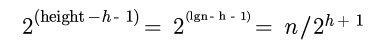
那么他们所有元素的运算时间总和为如下：
根据如下公式：
则有：
现在，我们发现，buildMaxHeap方法的时间复杂度实际上为O(n).
maxHeapInsert方法
maxHeapInsert方法和前面的办法不一样。它可以假定我们事先不知道有多少个元素，通过不断往堆里面插入元素进行调整来构建堆。
它的大致步骤如下：
1. 首先增加堆的长度，在最末尾的地方加入最新插入的元素。
2. 比较当前元素和它的父结点值，如果比父结点值大，则交换两个元素，否则返回。
3. 重复步骤2.
这个过程对应的代码实现如下：
public void heapIncreaseKey(int i, int key) throws Exception
{
if(key < a[i])
throw new Exception("new key is small than current key");
a[i] = key;
while(i > 0 && a[parent(i)] < a[i])
{
swap(i, parent(i));
i = parent(i);
}
}
public void maxHeapInsert(int key) throws Exception
{
heapSize++;
a[heapSize - 1] = Integer.MIN_VALUE;
heapIncreaseKey(heapSize - 1, key);
}
这里的parent()方法是用来求当前结点的父结点。详细的实现可以参考后面附件里的代码。
这里，我们也可以分析一下插入建堆的时间复杂度。我们先看最理想的情况，假设每次插入的元素都是严格递减的，那么每个元素只需要和它的父结点比较一次。那么其最优情况就是n。
对于最坏的情况下，每次新增加一个元素都需要调整到它的根结点。而这个长度为lgn。那么它的时间复杂度为如下公式：
这样，插入建堆的时间复杂度为nlgn。
总结
常用的建堆方法主要用于堆元素已经确定好的情况，而插入建堆的过程主要用于动态的增加元素来建堆。插入建堆的过程也常用于建立优先队列的应用。这些可以根据具体的时间情况来选取。
参考资料
Introduction to algorithms
简介
关于堆和PriorityQueue的思想和实现，前面的几篇文章我都有详细的描述，比如
堆排序的实现
和
PriorityQueue的实现
。在这些实现的基础上，实际上还有很多实际应用中的变体，比如在某些情况下我们会用到多路归并算法，还有一个就是在一些图算法的应用场景里，我们需要一个动态保持最小若干元素的集合。这些东西都离不开堆的思想和它们的应用。这里，我们针对这些变体的实现思路做一个详细的讨论。
在讨论我们这个具体应用的数据结构之前，让我们先看看以前一些实现里所面临的问题。
存在的几个问题
多路归并算法
在前面的一些文章里，我们提到。针对一些大数据文件的处理和归并，少不了要使用多路归并算法来实现。在多路归并算法里，它的基本思路如下：
1. 首先输入是一个输入流数组比如In[]，假设长度为k。 从这k个流里每个都取一个元素来构建一个大小为k的最小堆。
2. 每次取出最小堆里顶端的元素，然后再从最顶端元素对应流里取出下一个元素来加入到堆中，并调整堆。如果最小元素对应的流已经读取空了则直接调整堆。
3. 重复过程2直到所有流元素都处理完毕。
在我们具体实现的时候，可能就会有这么一系列的问题。首先一个就是我们给定的输入流里，每个流是对应着这个数组里的某个索引的。但是我们建的这个堆是要经常做动态调整，比如说我们前面流In[1]里的元素比In[2]里读出来的元素大，那么它们就需要交换位置。在堆里交换位置之后，我们怎么能让In[1]的这个元素和In[1]这个流对上号呢？所以，我们就需要知道，当我们给定流数组里某个流的时候，比如In[2]，我们需要知道它所对应的那个读出的元素在堆里的位置。
另外，假设我们堆经过一系列的排序调整，最终得到最小的元素是堆顶的那个。它在堆里对应的索引根据我们的实现可能是queue[0]或者queue[1]。按照前面的过程，我们需要将它移除，同时再找到它对应的流。因为还要从这个对应的流里去读后续的内容来加入到堆里。那么，我们怎么去找呢？所以，这里很可能也需要有一个对应的关系。
Dijkstra算法
在我前面的一篇文章里有提到过该算法。这个算法有一个思路就是从一个源节点开始根据关联关系保存一个到该节点距离的最小堆，每次当有新的边和节点加入进来的时候，要根据新加入节点和原有节点的距离以及原来推算的节点间距离进行比较，然后碰到合适的距离要更新整个堆。这就好比是更新了堆中间的某个元素。只是相对来说是让一个节点的元素变得更小了。默认的优先队列里并没有更新元素值然后自动调整堆的方法支持。同时，也和前面一样的问题，我们新加入元素和距离更新之后，会调整整个堆的大小。这里对应的堆元素是对应到哪个节点呢？
所以，根据前面这两个部分反映出来的问题，我们至少要保证修改后的堆结构要支持一下几个功能。
1. 根据堆里的元素索引能找到对应的源输入流索引。
2. 根据对应的输入流索引可以找到对应的堆元素索引。
3. 可以动态调整堆里任意元素的值并进行调整，而不仅仅只是堆顶和新加入到堆尾的元素。
于是，有了这几个需要增强的点，我们来考虑如下的增强堆结构：
IndexMinPQ
这是我们要介绍的变体，当然，一开始说这个东西的时候我们可能会有点疑惑，这个数据结构到底是什么样的呢？它和我们常用的PriorityQueue有什么区别呢？我们这里就一一比对过来。
结构
我们传统的堆结构本质上是一个数组，它只是以一种二叉树的样式来处理和访问。所以假设我们有如下的二叉树：
它对应的存储数组则如下图所示：
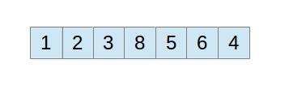
根据我们前面讨论的问题描述，对于一个堆来说，它里面的元素会动态调整，而对应的数据流却是相对固定的，所以我们需要有一个表来保存它们之间的映射关系。
于是我们这里就有一个表pq， 其中pq定义为int[]的数组，它保存的是指向具体堆元素的索引。它是一个形式上的最小堆，不过它里面的元素只是索引而已。具体参加比较的还是对应的堆元素。因为中间有了这么一道转换，看起来稍微有点困难。我们可以这样来理解。假设我们要构成前面示例中的最小堆，它的二叉树结构里应该保存的样式是上图那样的。但是，因为我们考虑到具体的参加比较的堆元素如果变动位置的话比较麻烦，就让它们的位置不动。也就是说，前面的线性结构元素应该是上图那样的，但是因为我们这里不让堆元素动，所以它可能本身存的是如下的这样一个数组结构：
但是因为我们需要构成一个最小堆，所以我们这里只能通过一个间接指向这些元素的一个引用数组来调整了。这就是我们所说的int[] pq这个数组。比如说以这个元素数组为例，对应的int[] pq数组则应该如下（假定我们对应的数组下标是从1开始）：
显示成一个线性数组的样式则如下：
通过这样的映射关系，当我们要取堆最小的元素，则首先取得pq[1]，这是对应的最小的堆元素所在下标，然后再从堆元素所在的数组key[]里取。对应的是key[pq[1]]。通过我们建立的这个数组pq，我们可以很容易的根据堆形式的结构来找到具体堆的元素。
另外，因为我们堆会经常调整，比如有时候我们需要更新堆元素的值，因为堆的元素发生了变化，它就需要和它的父节点或者子节点进行比较以及交换。这个时候，因为调整的是pq的值，但是当我们比如说key[3]发生了变化。那么我们首先需要的还是要找到它对应的堆索引数组里的元素位置。更直白的说就是，我们知道了key[3]发生了变化，但是我们需要找到是pq[]里的哪个元素指向key[3]。所以，为了方便的找到这个对应的关系元素，我们还需要另外一个关系映射表。int[] qp。它保留的关系正好和int[] pq的相反。它们之间应该满足这样的一个关系： qp[pq[i]] = pq[qp[i]] = i
比如以前面的图为例，我们对应的int[] qp则应该如下:
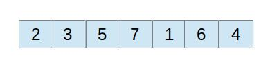
该怎么来看这个表呢？我们应该从key[]所在的索引来看，比如说当前我在访问的元素是key[2]，那么当前的这个key索引2, 再通过qp[2]得到3, 就可以知道它实在对应的映射堆的位置pq[3]。
其实，就是这两个看起来不起眼的映射在后面的实现里起到非常大的作用。有了这些描述，我们整个的堆数据结构可以定义如下：
public class IndexMinPQ<Key extends Comparable<Key>> implements Iterable<Integer> {
private int NMAX; // maximum number of elements on PQ
private int N; // number of elements on PQ
private int[] pq; // binary heap using 1-based indexing
private int[] qp; // inverse of pq - qp[pq[i]] = pq[qp[i]] = i
private Key[] keys; // keys[i] = priority of i
/**
* Initializes an empty indexed priority queue with indices between 0 and NMAX-1.
* @param NMAX the keys on the priority queue are index from 0 to NMAX-1
* @throws java.lang.IllegalArgumentException if NMAX < 0
*/
public IndexMinPQ(int NMAX) {
if (NMAX < 0) throw new IllegalArgumentException();
this.NMAX = NMAX;
keys = (Key[]) new Comparable[NMAX + 1]; // make this of length NMAX
pq = new int[NMAX + 1];
qp = new int[NMAX + 1]; // make this of length NMAX
for (int i = 0; i <= NMAX; i++) qp[i] = -1;
}
}
从代码里面可以看到我们故意多申请一个元素，然后将访问的最小元素设定为下标1。这样在一些求节点的父节点和子节点的时候会稍微简化一些。初始化的时候，一个有意思的地方就是我们将qp里面所有元素都设置成–1。这在后面的一些结构调整方法里有奇效。
结构调整
我们知道，堆里面元素的调整是构建这个堆最基础的条件，在一般的情况下可能包含有向下交换和向上交换。比如说在我们目前的最小堆情况下，当我们新增加一个元素进来的时候，我们可能要进行向上交换。而如果我们将顶点的元素移除并替换成其他节点的时候，就需要向下交换。我们一个个的讨论过来。
首先，在原来默认堆排序的实现里，如果我们要交换两个节点，只要节点元素换一下就可以了，因为这里基本的元素Key[]不动，那么要交换和调整的就是变动int[] pq和int[] qp了。它的实现如下：
private void exch(int i, int j) {
int swap = pq[i]; pq[i] = pq[j]; pq[j] = swap;
qp[pq[i]] = i; qp[pq[j]] = j;
}
其中对qp[]的更新利用pq[qp[i]] == i这样的特性，可以很简单的实现。
那么，对于向下交换的过程，则可以实现如下：
private void sink(int k) {
while (2*k <= N) {
int j = 2*k;
if (j < N && greater(j, j+1)) j++;
if (!greater(k, j)) break;
exch(k, j);
k = j;
}
}
因为以1开始作为下标，每个元素乘以2则表示它的左子节点。这里只要和它的节点比较就可以了。因为我们前面定义的Key是实现Comparable，所以这里greater方法就是Key的比较：
private boolean greater(int i, int j) {
return keys[pq[i]].compareTo(keys[pq[j]]) > 0;
}
同理，我们也可以得到向上调整的方法实现：
private void swim(int k) {
while (k > 1 && greater(k/2, k)) {
exch(k, k/2);
k = k/2;
}
}
结合前面对堆排序等描述的文章，这些方面的理解基本无压力。所以这部分实现的要点就是要每次都注意好更新pq和qp。
现在，我们再来看看对改进堆的一些操作实现。
增
我们这里要实现的是对Key[]里面的索引i位置插入元素。因为这个结构可以支持动态对元素的调整。所以要注意检查这个原来的位置是不是已经被占用了。这里的判断是用contains(i)这个方法。
public void insert(int i, Key key) {
if (i < 0 || i >= NMAX) throw new IndexOutOfBoundsException();
if (contains(i)) throw new IllegalArgumentException("index is already in the priority queue");
N++;
qp[i] = N;
pq[N] = i;
keys[i] = key;
swim(N);
}
代码里我们因为要新加入一个元素到堆中，对应的堆结构映射其实是相当于添加到堆最后的那个元素然后在来向上调整。这也就是为什么我们这里设置的N用来表示当前堆里元素的个数，它在这里起到了设置调整以及映射关系的作用。
contains()的方法实现如下：
public boolean contains(int i) {
if (i < 0 || i >= NMAX) throw new IndexOutOfBoundsException();
return qp[i] != -1;
}
它的时间复杂度为常数。因为我们开始设置的qp里都是–1的，除非已经设置了别的值了。所以这对于用来查询该索引是否被占用的效率非常高。当然，结合我们这里的问题，我们也可以直接通过堆元素所在的数组来判断，比如keys[i] == null之类的。
删
删除元素这里主要的是删除最小元素，也包含删除某个特定的元素。我们先看删除最小的元素。我们都知道，在最小堆里，删除最小的元素就是去掉映射堆里索引为1的那个元素。然后再用最后的元素来替换它，接着进行向下调整。具体的实现如下：
public int delMin() {
if (N == 0) throw new NoSuchElementException("Priority queue underflow");
int min = pq[1];
exch(1, N--);
sink(1);
qp[min] = -1; // delete
keys[pq[N+1]] = null; // to help with garbage collection
pq[N+1] = -1; // not needed
return min;
}
我们要注意到的细节就是当真的删除这个元素时，对应的keys[]数组以及pq, qp数组的元素调整。keys里面将对应元素设置成null是为了防止内存泄漏的隐患。另外，特别注意到我们这里的delMin返回的是这个min所对应的Key的索引。这在多路归并里就很有用了。这就好比我删除这个最小元素的时候，就知道它所在的流位置。
除了前面的删除最小元素，我们还有一个就是支持删除指定索引的元素，它的实现如下：
public void delete(int i) {
if (i < 0 || i >= NMAX) throw new IndexOutOfBoundsException();
if (!contains(i)) throw new NoSuchElementException("index is not in the priority queue");
int index = qp[i];
exch(index, N--);
swim(index);
sink(index);
keys[i] = null;
qp[i] = -1;
}
因为这里要将中间的某个元素给去掉，我们用最后面的元素替换这个元素，然后要同时进行向上交换和向下交换。向下交换我们可以理解，不过向上交换也是必须的。在某些情况下，这个堆最后面的元素可能比另外一个子树的父节点小。
查
对元素的查找除了前面的contains()方法以外，还有查找最小元素的索引，最小元素的key值，给定某个索引的key值，它们的实现相对不是很复杂。一一列举如下：
public int minIndex() {
if (N == 0) throw new NoSuchElementException("Priority queue underflow");
return pq[1];
}
public Key minKey() {
if (N == 0) throw new NoSuchElementException("Priority queue underflow");
return keys[pq[1]];
}
public Key keyOf(int i) {
if (i < 0 || i >= NMAX) throw new IndexOutOfBoundsException();
if (!contains(i)) throw new NoSuchElementException("index is not in the priority queue");
else return keys[i];
}
因为实现很简单，也很容易明白，这里就不再详细的解释了。
改
对一些元素值的更新包括有增加key值，减少key值或者就是简单的修改key值。它们的实现如下：
public void increaseKey(int i, Key key) {
if (i < 0 || i >= NMAX) throw new IndexOutOfBoundsException();
if (!contains(i)) throw new NoSuchElementException("index is not in the priority queue");
if (keys[i].compareTo(key) >= 0) throw new IllegalArgumentException("Calling increaseKey() with given argument would not strictly increase the key");
keys[i] = key;
sink(qp[i]);
}
因为是增加key的值，所以我们只需要考虑向下交换就可以了。这里通过qp[i]将对应的qp[]索引返回进行交换就可以了。
相应的，减少key值，则需要向上交换，对应的实现如下：
public void decreaseKey(int i, Key key) {
if (i < 0 || i >= NMAX) throw new IndexOutOfBoundsException();
if (!contains(i)) throw new NoSuchElementException("index is not in the priority queue");
if (keys[i].compareTo(key) <= 0) throw new IllegalArgumentException("Calling decreaseKey() with given argument would not strictly decrease the key");
keys[i] = key;
swim(qp[i]);
}
这里唯一稍微有点不同的就是修改key值，因为我们不知道这个key值是增加了还是减少了，所以需要同时在上下两个方向进行交换：
public void changeKey(int i, Key key) {
if (i < 0 || i >= NMAX) throw new IndexOutOfBoundsException();
if (!contains(i)) throw new NoSuchElementException("index is not in the priority queue");
keys[i] = key;
swim(qp[i]);
sink(qp[i]);
}
除了上述的基本操作，还有一些方法比如判断堆是否空，取得堆长度之类的方法，因为比较简单，这里也就不再赘述了。
K路归并的实现
在前面一些讨论多路归并的文章里，我一再提到过，这个问题的关键就在于当我们找到某个最小元素的时候，需要找到它同时所对应的堆。在IndexMinPQ里的delMin恰好就解决了这个问题。所以在下面的实现里，利用这个我们可以不断的将对应的元素加入到堆中间进行调整。
private static void merge(In[] streams) {
int N = streams.length;
IndexMinPQ<String> pq = new IndexMinPQ<String>(N);
for (int i = 0; i < N; i++)
if (!streams[i].isEmpty())
pq.insert(i, streams[i].readString());
// Extract and print min and read next from its stream.
while (!pq.isEmpty()) {
StdOut.print(pq.minKey() + " ");
int i = pq.delMin();
if (!streams[i].isEmpty())
pq.insert(i, streams[i].readString());
}
}
从代码中我们还可以看到，我们需要判断一下，每次删除这个元素的时候，判断一下这个流还有没有空，如果没有空的话，还要读入新的元素加入到堆里。这里是以String类型作为示例。详细的实现可以参照后面的参考材料。
总结
关于堆的一些变体在一些具体的应用，比如多路归并的实现，图算法的实现里都有一定的应用。只是它们的应用和一些特性的需求采用传统的堆功能并不能满足所有需求，所以才在这里引入了IndexMinPQ等实现。和传统的实现比起来，它支持对堆里的元素按照索引的方式来修改，好像我们访问一个数组一样，同时它的访问时间复杂度很低，一般是常熟或者logN级别。当然，这里良好性能的保障在于我们付出了额外两个数组来保存元素和堆索引之间的映射。可以说是一种典型的空间换时间思路。里面的很多细节值得细细推敲。
参考材料
http://algs4.cs.princeton.edu/24pq/IndexMinPQ.java.html
http://docs.oracle.com/javase/7/docs/api/java/util/PriorityQueue.html
http://algs4.cs.princeton.edu/24pq/Multiway.java.html
问题描述
最近在学习一些资料的时候正好看到一些和大整数求余数相关的问题，这些问题粗粗看来似乎有点麻烦。但是当结合一些有关数学的特性来分析时，会觉得很有意思。
问题1： 求一个整数X的N次方除以某个整数P的余数。用数学公式表示则如下：
其中N >= 0, P > 0.
这个问题需要考虑的就是如果N比较大的时候，很可能就超出我们所用一般数据类型所能表示的范围。如果直接去求X的N次方，就算有数据能保存的下来，肯定也会消耗大量的时间和空间。
问题2： 给定一个很大的数，求它除以某个整数P的余数。这个数因为足够大到没办法用普通的数据类型来表示，所以需要用一个整数类型的数组或字符串来保存。结果也是要求X mod P
问题1分析
最初分析
我们先来看第一个问题。这个问题假定X和P并不是太大，可以用一个计算机的常用数据类型来表示。一种最简单直白的方法就是我们直接将所有N个X相乘，然后再对被除数P相除，求余数。当然，这是基于一个前提，我们有能够保存足够大的数据类型。如果我们对这种思路的时间和空间复杂度做一个粗略的估计的话，会发现，假设X是int类型的整数，占4个字节，而最坏的情况就是每次相乘的结果就占用的结果增加4个字节，这样N次乘积就需要占用4N字节的空间。而如果算上每次相乘的中间结果，占用的空间就达到N*N的量级。再看时间复杂度，假定两个int类型的整数乘积的运算时间单位为1的话，在没有任何优化假定的前提下，一个32位整数和64位整数乘积的时间则为原来的两倍。如果以这个标准来分析的话，后面的时间复杂度也到了N*N量级。
第一步改进
可见，虽然前面这种办法虽然理论上可行，但是实际上时间和空间复杂度太大，不太合适。现在我们再来看看另外一种思路。因为问题的关键就是指数N比较大，如果能将指数能够降下来，将其转换成对等的表达式，则问题就好解决了。我们看前面求乘积的过程，假定是最简单的情况，N =2，则相当于求(X * X) mod D. 如果利用整数求余数的性质，我们发现他们满足下面的性质：

这个等式的证明可以参照相关的数学材料或者文章后面的补充证明部分。通过这个性质，至少我们可以发现，对于两个数的乘积求余数，我们可以先求一个数的余数，然后再将这个余数乘以另外一个数再求余数。这样就可以求出来两个数乘积的余数。那么，如果对于3个，4个甚至更多的数的乘积求余数呢？我们可以将这个等式扩展一下，对于3个数的乘积，我们可以先求出前面两个数乘积的余数，再和第三个数相乘求。依次类推，重复N次就可以求出N次方的结果。于是，基于这种思路，我们可以写出如下的代码：
public static long power(long x, long n, long p)
{
if(n == 0)
return 1;
long tmp = x % p;
for(long i = 0; i < n - 1 ; i++)
{
tmp = (x * tmp) % p;
}
return tmp;
}
这种方法和前面的思路比起来，有一个进步的地方，就是每次运算的时候都对中间结果求模运算，使得结果都在普通数据类型可以保存的范围内，这样不会需要额外的存储空间。而时间的复杂度主要取决于运算的指数，所以时间复杂度为o(N)。这样我们就找到了一个还不错的解决方法了。
再进一步考虑
前面的办法虽然是已经在一个o(N)的范围了，可是如果N很大的话，我们还是要做一个很大的循环运算。还有没有可能使得我们的方法更加有效率呢？我们求X的N次方，可以根据N的性质做如下的分析：
当N为偶数的情况下：
那么，就有如下的等式成立：
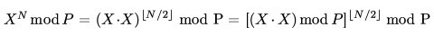
后面这一部分的等式成立是基于模运算的这么一个特性：
当N为奇数的情况下，则有：
那么，结合前面讨论的公式，对奇数情况下求模，则结果为如下等式：
综合前面的两种情况，我们可以发现，当N为偶数时，我们可以求X的平方再取模，如果是奇数的话则要再乘以X，然后取模。这样，一次运算下来，我们就将指数N折半了。按照这个过程，整个过程的时间复杂度可以降低到对数的级别上来。
根据讨论的递归关系，我们可以得出如下递归方式的代码：
public static long power(long x, long n, long p)
{
if(n == 0)
return 1;
long tmp = power((x * x) % p, n / 2, p);
if(n % 2 != 0)
tmp = (tmp * x) % p;
return tmp;
}
将递归版本转换成循环实现的方式的代码如下：
public static long loopPower(long x, long n, long p)
{
x %= p;
long tmp = 0;
while(n > 0)
{
tmp = (x * x) % p;
if(n % 2 != 0)
tmp = (tmp * x) % p;
n /= 2;
}
return tmp;
}
问题2分析
结合前面的情况，因为问题2中本身需要求模运算的数字比较特殊，不是用一个普通的数据类型来保存，而是用的整型数组或者字符串数组。在这种情况下，我们需要考虑的是利用一些模运算的特性，使得整个运算的过程拆分成可运算的各个小的步骤。在这里，我们先假设是10进制的数字，比如说一个int数组[1, 2, 3, 4, 5, 6]，那么他们实际对应的这个数字应该是如下：
这就相当于转换成了一个多项式求和的问题。对于一个整型的数组表示的长数据，我们按照多项式方式求和的典型代码如下：
public static long sum(int[] array)
{
long sum = 0;
for(int i = 1; i < array.length; i++)
{
sum = sum * 10 + array[i];
}
return sum;
}
如果再结合一些模运算的性质来考虑，比如，对多个数字的相加再求模和先对中间部分结果求模再相加之后求模的结果是一样的。那么，我们可以得出一个通用的求模运算的方法：
public static long sum(int[] array, int base, int p)
{
long sum = 0;
for(int i = 1; i < array.length; i++)
{
sum = sum * base + array[i];
sum %= p;
}
return sum;
}
这里，base表示数的进制，可以是10以外的其他进制。
总结：
前面针对大整数的两种情况进行了讨论，一种是给定一个整数，然后有一个比较大的指数，这种情况下需要考虑将指数变小给降下来。这里要利用到模运算里底数可以结合的特性。而针对一个很长的整数，我们可以将他转换成多项式求和的形式。这里就利用了多个数字求和取模和部分结果先取模再求和取模的结果一致这个特性。问题本身不是很复杂，主要是要把这几种特性想清楚，给用好了。总的来看，确实有点绕。
补充证明：
我们先来证明如下的等式成立：
因为X, Y都要对P求模，而实际上X, Y 都可以表示成 X = A*P + B 的形式，其中B就是X mod P的结果。那么前面的A*P这部分则是对于P可整除的。（X * Y） = （A * P + B）* Y = A * P * Y + B * Y
如果对这个等式的右边求模的话，显然A*P*Y这一部分是P的倍数，求模后的结果为0， 则结果为(B * Y) mod P， 前面我们知道 B = X mod P。这样我们就证明了(X * Y) mod P = [X(Y mod P)] mod P。后面这部分的证明可以类似推导出来。
我们再证明下面的等式成立：
按照前面一部分的讨论，我们可以假设X = A * P + B, 那么原来的等式则转化为：
在右边的等式中，如果我们按照二项式定理将它展开，那么他们将成为很多项乘积的和。但是所有和A*P相乘的项都可以被P整除，那么这些项的结果最终都是0，只有不含有A*P的项对最后的结果有效。展开后唯一有效的部分就是BˆN。而B本身就是X mod P。那么我们也就证明了上面等式的成立。
参考材料：
data structures and problem solving using java
简介：
对于一些大的整数，由于计算机本身能够显示的内置数据类型精度有限，在处理一些比较大的整数运算时就不能适用。因此需要考虑用一些结构来辅助运算。一种典型的方式就是通过数组的方式来保存这些大整数。然后通过模拟手工运算的逐位运算。下面对整数的加法和乘法做一个总结。
加法：
位相加的关系：
笼统的来说，加法中数组的每一个元素都对应着整数的每一位。当两个数相加的时候，要把前面的进位和当前的和相加，然后根据结果来进行进位。如果仔细考虑的话，会发现有如下的情况存在：
假设有两个数组a[], b[], 和进位标志carryBit.
如果a[i] + b[i] + carryBit > 当前的数制，则carryBit要置位，相加的结果要减去当前的数制。
比如a[i] = 5, b[i] = 7, carryBit = 1。考虑10进制的情况。则相加的结果为13. 那么根据讨论，后面一位的进位标志为1， 当前的结果为13 – 10 = 3.
如果对上一步的讨论做进一步的提炼，我们会发现他们的运算实际上满足这么一个关系：
当前位的求和结果 = (a[i] + b[i] + carryBit) % 10,
下一位的进位标志(carryBit) = (a[i] + b[i] + carryBit) / 10
对于更加通用的数制运算，我们可以发现有同样对应的关系：
当前位的求和结果 = (a[i] + b[i] + carryBit) % 数制,
下一位的进位标志(carryBit) = (a[i] + b[i] + carryBit) / 数制。
数据的表示：
在前面的逻辑关系理请之后，剩下的就是如何保存对应的数据了。一般我们展示的数字比如：12345，一般都是高位在前面，低位在后面。而在进行数组的加法运算的时候，需要从低位到高位，那么在数组中的保存方式比较合理的方式应该为int[] a = {5, 4, 3, 2, 1}.这样，当两个数组相加的时候，我们只要从数组的开头遍历就可以了。同时，因为我们保存数据的顺序和显示数据的顺序是相反的，如果后续需要显示对应的数字的话，则需要倒序输出。
另外，两个数字相加之后，保存相加结果的数组长度必须要加1，这样才能保证有足够的空间将结果保存下来。
实现：
考虑一种最简单的情况，假设两个数组的长度相同。有了前面的讨论，我们就可以很容易实现如下的方法：
public static int[] genericPlus(int[] a, int[] b, int numberSystem)
{
int[] c = new int[a.length + 1];
int carryBit = 0;
for(int i = 0; i < a.length; i++)
{
c[i] = (a[i] + b[i] + carryBit) % numberSystem;
carryBit = (a[i] + b[i] + carryBit) / numberSystem;
}
c[a.length] = carryBit;
return c;
}
当然，这是一种比较理想的情况。经过前面一些网友的指正，更通用的情况下还需要考虑两个数组长度不相同的情况。那么，一个详细的实现方法如下：
public static int[] comparePlus(int[] a, int[] b, int numberSystem)
{
if(a.length == b.length)
{
// Common routine
int[] c = new int[a.length + 1];
int carryBit = 0;
for(int i = 0; i < a.length; i++)
{
c[i] = (a[i] + b[i] + carryBit) % numberSystem;
carryBit = (a[i] + b[i] + carryBit) / numberSystem;
}
c[a.length] = carryBit;
return c;
}
else if(a.length > b.length)
{
// Routine 1
int[] c = new int[a.length + 1];
int carryBit = 0;
int i;
for(i = 0; i < b.length; i++)
{
c[i] = (a[i] + b[i] + carryBit) % numberSystem;
carryBit = (a[i] + b[i] + carryBit) / numberSystem;
}
while(i < a.length)
{
c[i] = (a[i] + carryBit) % numberSystem;
carryBit = (a[i] + carryBit) / numberSystem;
}
c[a.length] = carryBit;
return c;
}
else
{
// Routine 2
}
}
这个部分的代码总的思路就是先判断两个数组的长度是否相同，如果相同则分配一个长度+1的数组，然后遍历数组，并将结果返回。在一个数组长度比另外一个大的情况下，则需要先遍历完短数组的那一段。剩下的部分遍历时则运算的结果变为：c[i] = (a[i] + carryBit) % numberSystem; carryBit = (a[i] + carryBit) / numberSystem;(这里假设a是长的那个)。剩下的那部分也可以照此类推。这里将三个条件的处理都放在一个方法里面了。实际代码里可以分别定义不同的方法来实现。
乘法：
有了前面加法讨论的基础，再考虑乘法则相对方便一些了。我们在考虑一下原来乘法的思路。对于两个数组a[], b[]，假定结果数组为c[]。我们对数组相乘的步骤一般如下：
1. 取b[]中的一个元素，和a[]相乘，得到一个a.length + 1长度的中间数组。
经过遍历b[]，我们就得到b.length长度这么多个中间数组。
2. 对于这些中间数组，如果对应的是b[i]乘积的结果，则后面求和的时候将这个数组左移i位，然后和总结果数组c[]相加。
这样得到的结果就是乘积。对于两个数组相乘，其结果的长度为两个数组长度之和。
实现：
经过前面的分析，我们可以得到如下的代码：
public static int[] arrayMultiply(int[] a, int[] b)
{
int[] c = new int[a.length + b.length];
for(int i = 0; i < b.length; i++)
{
// Generate a multiply result from b[i] * a
int[] middleResult = new int[a.length + 1];
int carryBit = 0;
for(int j = 0; j < a.length; j++)
{
middleResult[j] = (b[i] * a[j] + carryBit) % 10;
carryBit = (b[i] * a[j] + carryBit) / 10;
}
middleResult[a.length] = carryBit;
// Plus middle result to c
carryBit = 0;
for(int k = 0; k < middleResult.length; k++)
{
int sum = middleResult[k] + c[i + k] + carryBit;
c[i + k] = sum % 10;
carryBit = sum / 10;
}
}
return c;
}
注：前面这种实现只是针对10进制的方式。如果需要换成更加通用的方式，可以将10换成传进来的进制参数。当然函数签名也要做相应的修改。
另外，这种写法只是一个比较粗略的写法，从可读性的角度来说完全可以将生成中间结果数组和将中间结果数组加到最终结果数组的两部分分成两个方法。
数据展示的问题：
前面保存数据的时候是采用数组的方式，而且存储的方式和我们显示的方向是相反的。经过前面网友的提醒，在展示数据的时候，可能会存在一个问题。就是如果两个数相加的时候，并不一定会进位。前面的运算结果是直接分配了增加一个长度位的数组。当没有进位的时候，保存在最高位的数字是0. 因此，一种办法是在展示数字的时候，判断一下最高位来跳过这个0.
比如我们一个输出数组元素的方法，其实现则应该如下：
public static void printBinaryArrays(int[] array)
{
if(array[array.length - 1] == 0)
{
for(int i = array.length - 2; i >= 0; i--)
System.out.print(array[i]);
}
else
{
for(int i = array.length -1; i >= 0; i--)
System.out.print(array[i]);
}
System.out.println();
}
总结：
这里主要讨论了大整数的加法和乘法，对于减法来说，思路也很近似，相信看过这个之后大家也该知道怎么做了。当然，这种大整数的运算在本文里的实现并不是可以无穷大。目前的一个实现是长度最多到Integer.MAX_VALUE，也就是2ˆ31 –1这么多位的数字。如果需要更多位数的话，可能就需要Long数据类型甚至一些自定义的类型了。这种问题本身不是很难，只是如果要在很短的时间内理清思路并不出问题，确实还是有点挑战性。前面kissinger同学曾经在这个问题上栽了，在此聊表慰问一下吧:)。
补充：
一些相加和相乘的过程中，可能会出现的各种细节问题，比如长度限制，不同长度数据的运算等等。感谢前面一些网友的指正。
问题描述
我们在一些常用的运算里免不了要计算某些指数函数。比如说给定两个正整数a, b，要求a**b，即a的b次方。这个问题看起来很简单，最直接的办法就是我连续乘以a，b次，得到的就是这个结果。这种方法的时间复杂度也比较低，相当于O(N)。实际上，我们还有更好的办法，使得它的时间复杂度达到O(logN)。
分析
实际上这个问题本身并不是很复杂，从一开始看的时候似乎也能找到一点类似的苗头。比如说我们要求2 ** 7。我们知道，它可以拆分成2**4 * 2 ** 3。而对于2的4次方可以拆分成2**2 再做一次平方。对于一个理想的数字，比如说这个指数本身就是2的多少次方的，像4, 我们只要求出2**2，然后再在它的基础上求它自己的平方，这不就得到2**4了吗？而对于前面2的7次方这个数字，我们将它拆成了2**4乘以2**3。既然2的4次方可以这样来求，对于这些奇数来说呢？实际上我们可以进一步拆分的。2**3可以拆成2**2再乘以2。这样，它们都可以被拆分成一系列的数字给拼起来。
这个过程似乎带来了一点思路。我们针对前面这个问题再深入的看一下，假设我们要求的这个数字的指数是7, 对它的拆分是将它拆成4和3。因为4是最接近它的2的指数，它可以通过两次求平方运算得到。而3呢，则需要再进一步按照这种方式来拆分。相当于找最接近它的那个2的指数。那么怎么找这个最接近它本身的2的指数呢？我们看7它的二进制表示形式：
这是一个用4个位来表示的二进制数字形式。其实，它最接近的那个2的指数不就是为1的最高位么？那么我们最终要凑这个数字无非就是将各个为1的位对应的数字加起来。既然我们的目的是将这些数字加起来，那么完全就没有必要考虑从左往右的拆分了。我们完全可以这样来求，看一个数字的某个位是否为1,比如我们从最低位开始。如果是1, 我们就加上一个2**0，也就是1, 而再往后一位对应的第1位的位置, 如果这一个位置也是1的话，则加一个2**1的值。后面依次类推，对应的分别是2**2, 2**3等等。我们这里相当于得出来一个根据二进制数字来凑这个整数的过程。类似的伪代码如下：
while(b != 0) { // 如果这个要凑的数字不为0
r = b % 2; // 取出最低位
b /= 2;
k = 0;
if(r == 1)
sum += (2 ** k) // 如果当前的位为1, 则表示当前位有数字，加上对应的2的k次方。
k++;
}
这里的过程是根据2进制数来求对应整数的。而我们这里具体的问题是要求对应的指数。这里也比较简单，我们对应的更加高的一个位相当于原来的数字对它本身做了个平方。而如果对应的这个位为1, 我们就将它乘以原来的一个数字，相当于前面的相加变相乘。所以套用这个框架，我们就可以很容易得到如下的代码：
public static long calculate(int a, int b) {
if(a <= 0 || b <= 0)
throw new IllegalArgumentException();
int r;
long x = a;
long y = 1;
while(b != 0) {
r = b % 2;
b = b / 2;
if(r == 1)
y *= x;
x = x * x;
}
return y;
}
这里结合了两个部分，首先要将这个数字拆分成对应的2进制的形式。不过不需要完整的拆开，每次用b % 2得到的就是当前最低位的值。而将b / 2则相当于b的二进制数字向右移动一位，将第二位的数字变成最低位。这样每移一次我们将对应的底数求平方，就对应到这个位的值。
从时间复杂度的角度来看，因为我们在循环里每次对这个指数向右移动1位。这个数字对应的是logN个二进制位。所以我们总共遍历的次数为logN。也就是时间复杂度为O(logN)。
总结
求指数函数的快速方法无非是用到了几个典型的数学特性。我们知道，对一个数的指数求平方的话，相当于对指数乘以2。所以问题的根源就归结到我们要怎么样来凑出这个给定的指数值。而如果我们对于数字的2进制表示形式比较清楚的话，会发现它们可以归结到一个将数字转化成二进制的样式的问题。
参考材料
Mathematics for computer science
问题描述
假设我们给定一组字符或者数字，如何求出它们的全排列或者给定个数的排列组合呢？这个问题本身看起来很简单。从以前学过的数学知识来看的话也很好表述。只是因为这个问题里牵涉到的各种条件和变化比较多，逐个讨论下来的篇幅也很大，所以打算拆成几篇文章来讨论。在这篇文章里，我们主要讨论基本的全排列和它的生成算法。
分析
这个问题我们可以采用两种不同的方式来分析和处理，一种是递归调用的思路，还有一种是字典序的思路。在一些问题的变体里，还会对于排列的输出顺序有一定要求。我们在这里结合具体情况一并讨论。
递归
递归的思路其实还是比较好理解的，比如说我们有一组共n个元素。我们要生成它们的排列时，可以按照一个这样的顺序。首先从数组的第一个元素开始，比如说它可以放置的元素有n个，有n种可选项。而在第一个位置确定之后，后面的元素接着再放，它只有n – 1种可能了。实际上，我们后面每一个位置的元素都和前面的元素有一定关系，比如位置为k的元素必须取和前面元素不一样的。所以我们每次在一个位置上添加元素的时候还要判断一下，是否前面已经有这个元素了。如果有的话则不能添加。所以说，我们可以采用这样的思路，针对每个位置去遍历我们n个元素，尝试将元素赋值到该位置，然后根据前面元素是否被取用来过滤一些被占用的情况。
所以，根据前面的讨论，我们需要的参数应该包括有如下几个：
1. 已经确定的填充序列，比如说当我们填充到位置i的时候，前面i – 1个元素是已经确定了的。
2. 剩下的需要进行全排列的元素集合s，我们要从这里挑选。
根据这些讨论，我们这个算法的实现伪码如下：
void permutation(int[] a, 集合s，当前位置cur) {
if(s为空) 输出序列a.
else 按照顺序考虑s的每个元素{
if(s中的元素i 不在a中)
permutation(a, s - i, cur +1);
}
}
我们再来结合具体的实现来考虑一下。假设我们考虑的就是一串数字从1到n。那么这里的参数集合s可以直接用一个数字n来表示。我们可以根据cur == n来判断集合是否为空。因为按照前面递归的关系，每次cur递归一次就要加一，等它遍历完整个集合，也就是集合剩下的元素为0了。所以我们对应的实现如下：
public static void permu(int[] a, int len, int cur) {
if(a == null || len < 1)
return;
if(cur == len) { //判断集合s是否为空
printList(a);
} else {
for(int i = 1; i <= len; i++) {
if(!contains(a, i, cur)) {
a[cur] = i;
permu(a, len, cur + 1);
}
}
}
}
这部分代码基本上是前面伪码的详细翻译。其中参数len表示数组的长度。因为cur表示当前放置元素所在的下标，一般是从0到len – 1。 这里有一个开始有点让人费解的地方就是为什么判断集合s为空的时候是if(cur == len)。照理说说cur最多也只能到len – 1啊。其实因为我们要将里面所有的元素都放置满。而放置的最后一个元素就是当cur == len – 1的情况。所以按照前面的递归关系它是要继续到cur + 1的情况。而这个时候正好应该是我们程序的一个返回点了。所以正好就是判断cur是否等于len。一个小细节，容易出问题的地方。我们调用这个方法的时候一般是传入对应的数组，数组长度和开始位置，这个开始位置设置为0。
另外，里面的contains方法用来判断在给定的cur范围内，是否存在元素i。它的实现如下：
private static boolean contains(int[] a, int i, int pos) {
for(int j = 0; j < pos; j++)
if(a[j] == i)
return true;
return false;
}
而里面的printList()方法纯粹是为了输出列表里的元素省事，它的实现如下：
private static void printList(int[] a) {
for(int i = 0; i < a.length; i++)
System.out.print(a[i] + " ");
System.out.println();
}
这部分很简单，不解释。
字典序生成排列
还有一种常用的非递归算法叫做字典序生成法。它实际上遵循的是一种数字和排列的一一对应关系。而且我们知道对于两个串来说，我们要比较它们的字典序是按照这样的规则来的：从前面的字符开始比较，一直比较到不同的两个元素为止。如果不同的元素中，某一个序列的元素大，则这个序列整体大于另外一个序列。 比如说我们有两个字符串序列，分别为"abcde", "abcfd"。在这两个串里，前面三个字符是相同的，但是第四个元素一个是d一个是f。因为f > d，所以第二个串大于第一个串。对于数字的串来说就更加明显了。
按照我们描述的字典序，对于一个串来说，它的元素排列之间就构成了一个顺序关系。比如以我们的数字串1234为例。这4个数字能构成的排列里，最小的是1234, 最大的是4321。我们要生成它们所有的排列，无非就是从最小的1234开始，然后按照一个逐步递增的方式，使得它们生成一个严格递增的序列一直到最大。这样我们既按照原来的要求生成了给定序列的全排列，同时还保证了生成的排列是严格按照递增的顺序生成的。那么，这个详细的生成思路，该怎么来推导呢？
我们以给定的数字1234为例来考虑。比它大的且与它最接近的数字是1243。通过这一步的观察，作为最低两位的数字，如果它们是保持递增关系的，我们只要调换一下它们的顺序就可以了。我们再往下一步观察，下一个最接近它且大于它的数字是1324。因为此时1243里2后面的数字已经到了所能取的最大数字了，要再增加的话只能增加2。而这里最接近的就是将2换成3。那么后面可以选择的数字是2和4。而很显然，1324是最接近的，而不是1342。那么通过这一步，我们能找到什么规律呢？
首先一个，当我们取到1243的时候，怎么会考虑到要换的是2而不是其他位置的数字呢？正如前面所说的那样，因为这个时候2后面的数字已经到最大了，也就是说它已经是一个连续严格递减的序列了。比如这里的是43。那么，我们要找到需要换的位置2， 首先就必须要找到一个最后面的连续递减序列。换一种说法，我们也可以说要找到一个最后面的递增序列。比如当1243的时候，我们要保证有这么一个连续递增的序列。我们能找到的最后的那个就是24。所以说这里就确定了2的位置。这一步的过程如下图所示：
在知道了这个要换的元素之后，我们后面要做的应该就是找一个后面和它最接近但比它大的元素，然后他们之间换个位置。如下图：
但是很明显，我们只是这一步还是不够的。因为比1243大且最接近它的是1324而不是1342。所以我们肯定还必须要调整。结合我们前面考虑的结果。当我们取到的数字2的时候，它后面肯定是一个递减的序列，或者极端的情况就是它后面只有一个唯一的比它大的元素。既然2后面的这个数字是后面这个递减序列里最大的数字，而处于要让后面数字最接近前面的那个数字，必然必须要取一个尽量小的数字。所以必须要这个最大的数字尽量放到最后面。怎么来让后面这一截数字组成一个最小的数字呢？我们先来看一个这样的规律。
在前面的序列里，假定每个元素都是唯一的。比如有a[i], a[i+1], a[i+2]...a[i+k]...a[n]这么一个满足a[i] < a[i+1]且从a[i+1]到后面的所有元素都是递减的。那么假设那个大于a[i]且和a[i]最接近的是a[i+k]，那么我们将a[i]和a[i+k]的位置替换之后，a[i+1]到a[n]这一串里还保持有原来的递减特性吗？仔细一想，这个特性是当然满足的。因为我们在前面的步骤里要找这个大于a[i]且最接近a[i]的元素。这里的a[i+k]满足的话，则a[i+k+1]则必然小于a[i]了。不然我们肯定选择的是a[i+k+1]。所以说，这一特性是满足的。而结合我们前面讨论的，要构成一个最小的数列，则只要构造一个严格从小到大的序列就可以了。而既然前面已经是一个严格递减的序列了，我们把它倒一下不就完了吗？
以我们前面的示例来看，它在交换了2和3之后，要做的就是将2后面的所有元素都倒置一下，如下图：
这样，最终的排列结果如下：
尼玛，搞半天原来是这样啊！求一个排列的下一个字典序的过程可以概括成如下的步骤：
1. 求里面最后面的连续递增元素点。比如说，在前面的示例1243里，肯定最靠后的就是24, 所以找到元素位置2。
2. 从位置2的这个点，也就是满足最后连续递增的点后面起去找一个比这个元素大，但是最接近这个元素的点。比如说这里找到的是3 。
3. 交换两个元素的位置。
4. 再对最后连续递增点后面所有的元素顺序逆转一下。
有了这个之后，我们要求所有的排列也就简单了，就是一直不停的找下一个字典序序列，直到找不到这个序列为止。我们知道当元素处于一个严格递减的序列情况时，就找不到递增的位置了。这个时候终止程序。在前面的实例里就是达到了4321这个序列。
好了，到这个份上，就没什么好说的。代码伺候：
1. 找最后的连续递增序列点：
private static int findJ(int[] a) {
for(int i = a.length - 2; i >= 0; i--) {
if(a[i] < a[i + 1])
return i + 1;
}
return -1;
}
从后往前找，找到就直接返回，省事。
2. 根据找到的点后面找最接近的大于它的元素：
private static int findK(int[] a, int n, int i) {
for(int j = n; j > i; j--) {
if(a[j] > a[i])
return j;
}
return -1;
}
我们看到这部分代码的时候可能会有点疑惑。因为是要找到最接近它的元素，这里直接碰到一个比它大的就返回，这样找到的真的就是那个元素吗？其实从前面的推导里已经看到了，后面的元素要么就是纯递减的，要么就一个光杆元素。所以从后往前去找到，第一个符合条件的就是。
3. 倒置后面序列里的元素：
private static void reverse(int[] a, int l, int r) {
while(l < r) {
swap(a, l, r);
l++;
r--;
}
}
里面swap方法的实现如下：
public static void swap(int[] a, int i, int j) {
int temp = a[i];
a[i] = a[j];
a[j] = temp;
}
前面提到的交换元素的步骤放在所有步骤整合的代码里。整合代码的实现如下：
public static void permu(int[] a, int l) {
while(true) {
printList(a);
int j = findJ(a);
if(j == -1)
return;
int k = findK(a, l, j - 1);
if(k == -1)
return;
swap(a, j - 1, k);
reverse(a, j, l);
}
}
方法里参数l表示数组的长度减一，表示数组里最后一个元素的索引。这里只是实现的一个选择，我们也可以选择数组的长度，只是里面用到的地方要对应的减一。
对比
现在，我们已经实现了递归和非递归的两个版本。我们来比较一下它们的差别。采用递归方法实现的代码总体比较简单。它的基本思路是尝试不断的往每个位置去设定给定的值，然后过滤不符合条件的元素。所以这里的递归的层次和深度是一个值得考虑的地方。它的实现虽然简单，但是在数字比较多的情况下，容易导致栈溢出。而非递归的过程推导占据了很大一部分的篇幅。因为有了这么一个思路，我们不需要使用额外的空间来保存。相对来说空间的复杂度要低一些。
可重复集合的排列
在一些特殊的情况下，我们需要考虑可重复集合里元素的排列。比如说，我们要考虑一个数列1123。对于这个序列，因为有重复元素的加入，整个过程就显得略微复杂一些。因为我们每次将两个1中间的某个1放到一个位置的时候，另外一个1可能放的位置可能会形成一个重复。比如说我们构成的数列2311中，里面两个1都可能交换位置，但是实际上我们要求生成的排列不能重复。也就是说有重复元素的集合生成不重复的排列。所以对于这种有重复元素的排列要去除这些重复。
为了解决这个问题，我们需要引入一个额外的数组，它专门保存我们需要去读取的数字集合。比如我们前面的数列1123。对于这个数组，因为我们要保存一系列重复的元素，让里面的元素按照顺序排列好有特殊的意义。意义在哪里结合后面的代码会进一步说明。我们再用另外一个数组来保存我们最终放置的元素。
现在我们来针对两种解决方法进行讨论。
递归
我们在这里先回顾一下前面解决不重复元素全排列的思路。首先遍历源数据集合，尝试从当前的位置设置一个值，然后检查这个值是否已经被前面的元素给占了，如果没有，则尝试下一个位置。
那么对于我们这里有重复元素的情况，不能简单的判断前面是否已经占用了这个元素，而应该来判断一下，前面如果占用了相同的元素，我们需要看后面是否可以放同样的元素。所以需要判断我们后面可以放的元素个数和已经占用了元素的个数。我们怎么来计算后面可以使用的元素呢？我们可以这样来看，对于前面已经占用的元素，我们可以通过遍历一遍统计出来。而到底可以放多少个同样的元素我们可以去遍历源数据数组，找到比如说这里1的个数有两个，假设前面已经取了一个1的情况下，我们后面还可以取1个。而如果两个1都取了的情况则不能再放置这个元素了。
按照前面讨论的思路，我们可以写出一个大致过程的伪码：
void repPermu(源数据集合a, 目的数据集合s, int cur) {
if(目的数据集合满)
//输出排列;
print(集合s);
else 按照源数据集合a中的元素i {
if(i在a中间出现的次数 > i在s中出现的次数) {
p[i] = a[i];
repPermu(a, s, cur+1);
}
}
}
现在，我们根据这部分伪码进一步细化来实现真正的代码。源数据集合和目的数据集合a, s可以分别表示为两个数组。和前面递归实现类似，我们可以用数组长度作为判断是否返回的条件。所以需要一个参数int len。
我们判断两个集合里给定元素的个数是否相等的实现就只是一个循环遍历，没什么好说的。所以详细的实现如下：
public static void repPermu(int[] a, int[] p, int len, int cur) {
if(cur == len) {
printList(p);
} else {
for(int i = 0; i < len; i++) {
if(i == 0 || a[i] != a[i - 1]) {
int c1 = 0, c2 = 0;
for(int j = 0; j < cur; j++) if(p[j] == a[i]) c1++;
for(int j = 0; j < len; j++) if(a[j] == a[i]) c2++;
if(c1 < c2) {
p[cur] = a[i];
repPermu(a, p, len, cur + 1);
}
}
}
}
}
这里有一个实现的细节值得非常注意。就是为什么我们在for循环的里面要加一个if(i == 0 || a[i] != a[i–1])这样的条件判断呢？这是因为我们在循环里遍历源数组a的时候，如果读到的是连续相同的元素，则它们必然满足a[i] == a[i–1]这样的条件。而i == 0是为了避开当i为0的时候，我们判断i和它前面元素是否相同的这个极端情况。对于前面连续的元素，实际上我们知道，它们同样的情况只应该出现一次，所以要避免重复就体现在这里。而且，在前面我们提到过，这里用a[i] == a[i–1]判断是否有效基于的就是我这个数组a它本身是已经排序了的，所以如果相同的元素肯定就连在一块了。用这个方法来判断就显得很简单。这个部分的理解稍微有点困难。值得细细揣摩。
在讨论完可重复元素的全排列之后，我们可能也想过是否有非递归的实现呢？实际上，对于非递归的实现，我们用前面现成的那个实现居然也可以。为什么呢？结合我前面讨论的那个选择下一个字典序的排列思路我们就可以推测出来。大家可以去试试，这里就不再赘述了。
总结
这个话题在草稿箱里已经躺了一年多了。当初碰到这样的问题时，总觉得因为都是固定的套路，去刻意的记住它没多大的意义。不过在一次很重要的面试中被别人给问到，结果被一招给放倒了。当时的心情简直是无比郁闷。其实对于排列，以及全排列来说，它的实现方法有很多。除了我们列举的递归和字典序方法，还有一些其他的方法，比如递增进位数制法，递减进位数制法，邻位交换法等。这些方法虽然都有固定的套路，但是他们用来解决这些问题的思路还是很值得借鉴的。后面会结合具体情况进行进一步的讨论。另外，本文主要是讨论了全排列的生成，而对于一些部分排列的情形没有详细说明。在后续文章里也会进一步阐述。
参考材料
算法竞赛入门经典
http://www.cnblogs.com/devymex/archive/2010/08/17/1801122.html
http://blog.csdn.net/zmazon/article/details/8351611
简介
这一部分主要讨论组合生成问题的一个应用，就是子集的生成。具体的问题要求就是给定一个集合，要求枚举出它所有可能的子集。这个问题实际上本质上还是一个组合生成问题的应用。结合
前面一篇文章
里所讨论的，其实我们这个问题无非就是要求出包含有1个元素，2个元素到n个元素的所有可能组合。
我们这里针对具体的一些实现方法做一个讨论。
分析
有了前面文章分析的基础，我们很可能一开始想到的就是，既然是列举出所有可能的组合。我们完全可以通过传入参数，调用来求出一个元素，两个元素等等到所有元素的组合。这是一种方法。不过这里还有一些更加简单直观的方法。可以作为一个比较和参考。
增量构造法
增量构造法的思路就有点像我们一次挑选一个元素的过程。关键点就在于我们该怎么来构造这么一个递归的关系。以元素集合{1, 2, 3, 4}为例。取一个元素的组合数为C(4, 1),也就是分别为1, 2, 3, 4。从最开始的情形取1开始，如果按照一个递增的顺序，第二个元素可以选择的是2, 3, 4中间的任何一个。但是后面一个元素的选择必须满足一个条件，它必须比前面一个元素大。这样，如果让输入元素按照排序的方式传入，这样可以得到一个不重复的递增元素选取序列。所以当我们选取到某个位置比如说i的时候，当要选择i +1位置的元素时，必须要选择一个比a[i]大的那个。
另外，既然这里是要输出所有可能组合，比如说选取元素1的时候，它对应一个组合，12的时候对应另外一个。所以每次只要有选择一个元素，就要输出这种对应的组合。而按照前面的思路，一个迭代的大致过程如下：
void printSubset(int[] a, int[] b, int cur) { // a为源数据, b为被被选择元素数据
从i =0到cur， 输出b的内容
选取大于当前位置前一个元素的元素索引， 即保证a[s] > b[cur -1]，返回得到的s。
for s后面所有的元素 {
bpcur[ = a[i]
printSubset(a, b, cur +1);
}
}
这里递归的关系是，对于选取的任意一个点，循环选取所有比前面一个元素大的所有元素。然后再递归到下一个。
在详细的实现里，要考虑的就是，一个排序的源数组，一个保存选取元素的目标数组，还有一个就是当前的位置，这3个即为方法调用的参数。具体的实现如下：
public static void generateSubset(int[] a, int[] b, int cur) {
printListRange(b, cur);
int s = getBiggerPosition(a, b, cur);
for(int i = s; i < a.length; i++) {
b[cur] = a[i];
generateSubset(a, b, cur + 1);
}
}
这部分代码几乎是对前面伪码的一个直接翻译。每次我们都通过printListRange输出到当前位置所选取的数组。然后尝试在当前位置选取所有比前一个位置大的元素。
输出的printListRange方法如下：
public static void printListRange(int[] a, int p) {
for(int i = 0; i < p; i++) {
System.out.print(a[i] + " ");
}
System.out.println();
}
而获取比前面一个位置大的元素位置的实现则如下：
public static int getBiggerPosition(int[] a, int[] b, int cur) {
if(cur == 0)
return 0;
else {
int i;
for(i = 0; i < a.length; i++) {
if(a[i] > b[cur - 1])
return i;
}
return i;
}
}
这个实现里要考虑几个地方。一个是如果是最开始的元素，索引是0, 这个没法取它的前一个，所以只要直接返回0就可以了。对于找到比当前元素大的实现很好理解。只是后面循环结束后返回那个元素i，它有什么作用呢？
这个循环外返回的i就相当于我们找不到比给定元素大的元素了，所以它应该就等于当前数组a的长度，假设为n。在我们的代码里有一个for(int i = s; i < a.length; i++)的循环，而如果一开始s就已经是s了。则直接就跳过了这个循环，也相当于这一部分函数调用执行结束。如果不是这么看的话，粗看起来感觉这代码没有办法返回，会进入一个无限循环递归的状态。
所以说，这种办法的实现要点就是定义这么一个递归关系，对于任何一个位置的元素，它选取的可以是任意一个比前一个大的元素。所以对当前位置要循环的设置所有比前一个大的元素，然后来做递归。
位向量法
除了前面的那种实现所有组合的方式，还有位向量的办法。这种办法看起来更加符合我们一贯的思维方式一些。对于一个数组，要取里面所有元素的组合。我们可以这样来想，对于任意一个元素来说，对它的选取就是要么它被选择了，要么它没有被选择。所以如果我们用一种方式来遍历某个目标数组的话，针对一个位置i来说，它当前可以是被选择，然后也可以是不被选择，这两种情况都对应着一个向后面i+1的递归情况。而到最后递归结束的时候，怎么来检查验证哪些选择了哪些没选择呢？
我们可以用一个额外的数组，比如说是定义成boolean类型的数组，如果某个位置的元素被选择了，则它被设置为true，否则为false。这样每次只要去遍历一下这个boolean数组，根据里面选择的情况去选择输出对应位置的元素。
这里对应的递归关系是
printComb(a, b, i) = {
b[i] = true;
printComb(a, b, i +1)}
b[i] = false;
printComb(a, b, i +1);
}
按照这个关系，对应的详细实现如下：
public static void bitVector(int[] a, boolean[] b, int cur) {
if(cur == a.length) {
printListItems(a, b, cur);
return;
}
b[cur] = true;
bitVector(a, b, cur + 1);
b[cur] = false;
bitVector(a, b, cur + 1);
}
里面的printListItems是输出到给定当前位置cur的目的数组元素。实现如下：
public static void printListItems(int[] a, boolean[] b, int cur) {
for(int i = 0; i < cur; i++) {
if(b[i])
System.out.print(a[i] + " ");
}
System.out.println();
}
二进制法
除了前面的那两种办法，我们还有一种更加简便的方法。这种方法其实是利用了我们以前学过的一些数学的知识以及一个一一对应的关系。我们知道，对于给定一个集合里，所有元素的集合它们应该满足这样一个公式: 假设所有的组合数之和为sum，则有sum = C(n, 0) + C(n, 1) + ...+ C(n, n); 分别对应取集合中的一个元素，两个元素...n个元素。而通过数学公式二项式定义，这个和是等于2 ** n（2的n次方）。就是说，我们所有取的组合数为一个指数函数。
而这时，如果用二进制的方式来表示这些数字的话，我们可以将这n个元素里选取任意个元素对应成一个这样的数组{0, 1, 0, 1...}等等。这里总共的长度是n，每个位置的0或者1分别表示该位置被选取或者未选取。
所以，在实现的时候就只要定义一个从0到2**n这个数字的循环，然后针对每个数字，计算它当前二进制里为1所在的位，该位为1表示对应位置的元素被选取了。按照这个方式，代码的实现就已经很简单了。判断当前位置和输出的代码如下：
public static void printComb(int[] a, int s) {
for(int i = 0; i < a.length; i++) {
if((s & (1 << i)) != 0)
System.out.print(a[i] + " ");
}
System.out.println();
}
这里参数s表示给定的一个数字，然后它和每个位置为1的数字，比如0, 10, 100, 1000进行与操作，如果结果不为0, 表示对应的第i位不为0, 然后输出这一位就可以了。
调用这部分代码的方式更简单，这里为了省事就和其它代码放在一起了，其实也可以分开再封装成一个函数的：
public static void main(String[] args) {
int[] a = {1, 2, 3, 4};
for(int i = 0; i < (1 << a.length); i++)
printComb(a, i);
}
总结
求一个给定集合里所有元素的可能组合是一个看似比较简单的问题。实际上它牵涉到的地方还是有很多的。比如有最开始通过传入一个个参数来调用固定选项的组合算法，到后面递归的调用和定义选择规则。再到后面我们利用一些组合的数学关系，建立一种元素间的映射关系而得出的方法。实际上当我们挖掘的层次越深入会发现越是有更加有效的办法。这种问题本身的时间复杂度是一个指数函数级别。更多的时候只是通过多种解决方法来锻炼一下不同的思考方式和问题解决思路。
参考材料
算法竞赛入门经典
简介
在前面的文章里我们讨论了排列，全排列和可重复排列的几种实现。这里我们接着讨论组合的几种情况以及对应的实现。这些问题衍生出来的其他问题非常多，不过都有一定的套路可以遵循。这里针对这些情况一一讨论。
问题分析
具体组合的情况也有不同种。比如说我们最常见的，针对不重复的n个元素的集合a，从其中取出k个元素来(k <= n)， 所有取出这些元素和位置无关，所以它们构成一个组合C(n, k)。还有一些是针对可以重复的集合取出k个数的情况。另外，针对纯组合问题，我们可能会考虑一些针对集合元素里所有可能的组合，包括的元素个数从1个到n个。还有一些若干个元素之和等于某些元素的问题，也可以从这里找到相关的思路。
不可重复取组合
针对这种情况，我们先来看一个示例，假设我们有数据集合{1, 2, 3}，那么如果从里面取两个元素的组合则有(12), (13), (23)。其中每个元素只能在被选择的集合里出现一次。这里是假设我们原有的数据集合里也没有重复的元素。
现在，我们来考虑一种实现组合的思路。以前面的数据集合{1, 2, 3}为例。首先，我们在目的数据集里取第一个元素1, 那么后面一个位置可以取的元素就是从{2, 3}里挑了。原来选定的1不能取。在前面的一个元素选择了之后，我们后面要选择或者能选择的范围应该被前面的给限定了。所以，如果我们用递归的函数来描述的话，必然有一个类似与槛一样的参数，它指定后面的元素只能从某个范围开始来取。以数列{1, 2, 3, 4, 5}为例来看。首先第一个位置取1, 然后第二个取2， 于是得到(12)。如果有第三个项的话，需要取的是3。后面可以取的是(124)，(125)。所以，从这里可以看到，每个位置所取的元素是从前面指定位置后的所有可以取的位置。
我们再考虑一下递归结束的条件。当递归的层次到给定取的元素个数时，才能输出给定的组合，并退出。
于是，按照前面的这个思路，我们可以得到一个大致的伪码实现：
void combine(源数据集合a, 目的数据集合b, 当前迭代起始点begin, 当前目标数据集合位置cur, int n) {
if(cur == n)
//输出数组b
for（集合a中间从begin到end的元素i) {
b[cur] = a[i];
combine(a, b, i + 1, cur, n);
}
}
从这部分伪码来进一步细化一下代码实现。这里传递的begin其实就是从源数组里开始搜索的位置。于是，详细的实现如下：
public static void newCombine(int[] a, int[] b, int begin, int cur, int n) {
if(cur == n) {
printList(b);
return;
}
for(int i = begin; i < a.length; i++) {
b[cur] = a[i];
newCombine(a, b, i + 1, cur + 1, n);
}
}
我们需要注意的就是在实现里，if(cur == n)里设定了return语句。因为当这部分输出数组的工作结束就该返回了。我们也可以通过将后面的for循环包含在else语句中来省略掉return语句。调用这个函数的示例代码如下：
public static void main(String[] args) {
int[] a = {1, 2, 3, 4};
int n = 2;
int[] b = new int[n];
newCombine(a, b, 0, 0, n);
}
可重复取组合
假设源数组里有数字{1, 2, 3, 4}，要求取两个数字的组合。那么可重复取的组合可以有(11), (12), (22)等。和前面取组合元素里一个最大的差异就是，前面的取法里要求后面能取的元素只能是前面给定的开始范围。而因为这里可以最小取一个和前面给定元素相同的。比如说当前元素所在的索引为i，那么后面需要取的元素只要是大于或者等于b[i – 1]的。这样，这种取法的一个特点就是不需要根据当前取到的元素去给后面的元素指定开始取的位置了。
在原来的基础上，我们修改后的代码实现如下：
public static void repCombine(int[] a, int[] b, int cur, int n) {
if(cur == n) {
printList(b);
return;
}
for(int i = 0; i < a.length; i++) {
if(cur == 0 || a[i] >= b[cur - 1]) {
b[cur] = a[i];
repCombine(a, b, cur + 1, n);
}
}
}
这里的要点也在于这个if(cur == 0 || a[i] > b[cur – 1])这个判断。这里根据是否为开始的索引0或者判断取到的元素是否比前面已经取的元素大来确定下一个元素。相对来说，调用方法参数更少一些。调用的方法代码如下：
public static void main(String[] args) {
int[] a = {1, 2, 3, 4};
int n = 2;
int[] b = new int[2];
repCombine(a, b, 0, n);
}
总结
这里结合不能重复取和可以重复取的两种情形进行了分析。重点在于组合的选取里，我们首先保证源数据是有序的，这样每次取的元素可以根据顺序来判断获取。而后面取的元素基于一个递归迭代的关系，要么根据当前的位置来指定下一次搜索源数据的位置，要么按照一定的条件从源数据和当前目标数据列里进行判断筛选。思路比较有意思，值得好好体会。我们以前讨论过的部分排列其实用到了组合和排列技术的结合。它无非就是首先取得一个组合，然后再对组合的元素进行全排列。另外，本文前面提到的一些其他的应用也会在后续的文章里讨论。
参考材料
http://blog.csdn.net/zmazon/article/details/8315418
简介
最近在看一些图相关的问题。实际上关于图相关的研究和问题已经非常多了。在前面的几篇文章里，我也谈到过图的
定义
、遍历法，
扩展树
生成和
最短路径
等问题。 除了这些问题及应用以外，还有一些比较常见的问题，虽然难度不大，不过经常会在一些情况下碰到。不仔细去考虑的话还是比较难解决的。这篇文章里重点要讨论解决的几个问题分别是检测图的连通性、图中间环的检测和二分图的检测。
图的连通性
判断一个图的连通性，从概念上来说，就是如果一个图是连通的，那么对于图上面的任意两个节点i, j来说，它们相互之间可以通过某个路径连接到对方。比如下图：
在这个图里，任意的两个节点都可以通过一个路径到达对方。而对于非连通的图来说，它相当于将一个图分割成多个独立的部分，每个部分之间没有任何联系，一个典型的示例如下图：

在这个图里，7,8组成的部分以及9到12所组成的部分它们都是互相隔离的。那么如果要检查和判断一个图是否为连通的，该用什么办法呢？
判断图是否连通
如果仅仅是判断一个图是否为连通的，结合前面讨论图的基础遍历方法，可以有如下的方法。在前面图遍历的方法过程中，我们是从一个指定的点开始，通过不同的策略去遍历这个图，有深度遍历和广度遍历。每次经过一个节点的时候，首先判断一下这个节点是否已经访问过了，如果没有访问过，则这个节点可以作为下一次继续遍历的候选。因为如果这个图是连通的话，这种方法最终会覆盖到整个图。所以可以采用一种计数统计的方式来实现。比如说每次访问一个以前没有遍历的节点，则将对应的计数加一。这样当最后遍历结束后，如果统计的节点和图本身的节点一样的话，表示这个图是连通的，否则表示不连通。在前面的图定义里有相关实现，这里把部分代码给转贴过来。
深度优先遍历：
public class DepthFirstSearch {
private boolean[] marked;
private int count;
private final int s;
public DepthFirstSearch(Graph g, int s) {
marked = new boolean[g.getVertices()];
this.s = s;
dfs(g, s);
}
private void dfs(Graph g, int v) {
marked[v] = true;
count++; //计数，统计访问过的节点
for(int w : g.adj(v))
if(!marked[w]) {
dfs(g, w);
}
}
public boolean marked(int w) {
return hasPathTo(w);
}
public int count() {
return count;
}
}
广度优先遍历：
private void bfs(Graph g, int s) {
Queue<Integer> queue = new LinkedList<Integer>();
marked[s] = true;
queue.enqueue(s);
while(q.size() > 0) {
int v = queue.remove();
for(int w : g.adj(v))
if(!marked[w]) {
marked[w] = true;
queue.add(w);
count++; //统计计数
}
}
}
这种方法用来判断整个图是否为连通的时候，实际上只要给定一个点，然后按照给定的步骤可以把改点所连接的所有点都涵盖到。如果有其它分隔的部分则没有再处理了。所以，通过这种办法我们在图不是连通的情况下，它只需要涵盖图的一部分就执行结束了。最坏的情况时间复杂度也就是O(V+E)。
这种办法如果用来单纯判断一个图是否连通确实很有效。但是，在某些情况下，我们需要考虑的不仅仅是判断整个图是否为连通这么简单。比如说，有时候我们需要考虑，给定两个节点i, j，需要判断它们是否相互连接的。这就是我们接着需要考虑的问题。
图中间任意两个点的连通性
因为有时候要考虑的是给定两个点，看它们之间是否连通。所以可能有很多种情况。比如说当整个图是连通的，则它们必然是连通的。而如果整个图不是连通的，但是这两个点是在一个连通的块，它们也是相互连通的。
对于这个问题，该怎么来分析呢？从前面判断图是否连通的过程里，我们可以借鉴到一点思路。首先，对于一个连通的块，按照给定的遍历方法，肯定可以把这一块给覆盖。可是，假设把某一块覆盖了，对于这个被覆盖的区域内的点，随意给定两个，我们怎么知道它们就是连通的呢？这就是这个问题的关键点。在前面的图遍历算法里，当我们每经过一个节点的时候，就将一个boolean数组marked里对应的元素设置为true。那么这里是不是也可以这样来做呢？
比如下图中的0到6节点部分，假设这部分被涵盖之后。他们对应的marked部分为true。可是对于7,8节点呢？它们也要在后面的部分里遍历覆盖，至少保证7和8是连通的，只是它们和外面其他点没有关系。
所以，从前面的讨论里可以看出来。光遍历一个连通的块是不够的，肯定要遍历完所有的块。另外，如果遍历完一个块仅仅用boolean数组来标志的话还是不够的，比如说当我们遍历玩0到6这个部分，它们对应的makred被设置为true。而后面又遍历了节点7,8。对于它们该怎么处理呢？如果也标识为true，我们怎么来表示0到6是互通的，但是它们却和节点7,8没关系呢？所以，问题的关键在于对于每个不同的连通区域，要进行不同的标识。
概括起来，前面要处理的问题主要是两个：1. 遍历图中间所有节点。 2. 所有相通的块必须标识为相同。
对于第二个问题从前面的遍历方法我们已经知道，不管是dfs还是bfs，只要给定一个节点遍历完，这一块地方我们一路做同样的标记就可以了，只要它们相通那么标记也肯定是一样的。而对于要遍历所有节点的问题，这个也好办。无非就是遍历一遍所有的节点，对每个节点都调用遍历方法，不过对于已经访问过的节点则直接跳过。所以在实现的细节上，我们可以考虑用一个计数器和一个数组，对于某个块它设定一个值，然后对应的这个值也放到对应数组的索引的位置里。下一次再遇到一个遍历的块时，对这个计数器加一。这样每次遍历的块的计数器值不同。给定任意两个节点，只要判断一下数组里对应的计数器值是否相同就可以了。
按照前面的这些讨论，详细的实现代码如下：
public class CC {
private boolean[] marked;
private int[] id; // 记录每个节点所属的连通块计数
private int count; //用来标记不同连通块
public CC(Graph g) {
marked = new boolean[g.v()];
id = new int[g.v()];
for(int i = 0; i < g.v(); i++) { //遍历所有节点
if(!makred[i]) {
dfs(g, i);
count++
}
}
}
private void dfs(Graph g, int v) {
marked[v] = true;
id[v] = count;
for(int w : g.adj(v))
if(!marked[w])
dfs(g, w);
}
public boolean connected(int v, int w) {
return id[v] == id[w];
}
public int id(int v) {
return id[v];
}
public int count() {
return count;
}
}
前面代码实现的细节点在于我们定义了一个int[] id数组，它保存不同节点的统计值。而count这个统计值则表示相通的块里这个值是一样的。
另外，前面这几个方法用的是深度优先遍历的方法。要改用广度优先遍历的方法也很方便。
图中间环的检测
除了前面测试图连通的问题，还有一个常见的问题就是检测图中间是否存在环。这也是一个很有意思的问题，因为在大多数图的结构中确实是存在环的。而对于一个连通的图来说，如果它不存在环，则可以称其为树了。想到这一步，我们才发现，这个环检测的问题在判断一个图形是否为树的问题这边有很重要的应用。关于判断一个结构是否为树的问题这里不赘述，先把这个图中间环检测的问题给处理清楚。
对于一个存在有环的图，一些常用的形式如下图这样：
从这些图的结构里，我们可以看到一个这样的规律。就是从图中间构成环的任意一个节点开始，如果按照某个方向遍历，最终它某个可以访问的点是它前面已经遍历过的。对于一些特殊的情况，比如两个相邻的节点之间的连接，它们不能定义为环，需要被排除。这也是后面具体实现的细节里需要考虑的。
现在结合后面的这个图，我们来进一步细化前面考虑的步骤。假设我们仅仅用原来遍历图的数据结构，我们只是需要有一个boolean[] marked数组就可以了。那么，刚开始的时候，假设从节点1开始去遍历。第一步之后的情况应该如下：
按照前面的标记，makred[1]被标记为true。然后继续考虑1节点所邻接的节点2：
这里有一个问题，就是前面从1遍历到2的时候，设置了marked[2] = true。但是从2为节点再一次进行遍历的时候，可能首先又碰到从2到1的这个关系。这个时候，按照环存在的判断条件，相当于从某个节点出发的时候碰到了一个前面遍历过的节点了。但是2就是从1过来的，如果这种情况判断为真的话则1和2被判断为一个环了。所以需要避免这种情况。要避免这种情况的话，可以增加一个参数，表示访问的当前节点的前一个节点。如果从当前节点所能连接到的节点去遍历的时候，碰到的节点是已经访问过的节点，但是这个节点是它的前一个节点的话，这种情况我们应该忽略。这样，按照前面深度优先遍历的规则，下一步访问的情况如下图：
同样，下一步可以访问的节点假设为4,这个时候，对于节点4来说，它的前一个节点是3, 但是它可以遍历到节点2, 而2已经是前面访问过的了，所以这个时候可以判断说确实有环存在。

这是我们考虑到图的一种情况。如果对于图并不是完全连通的情况呢？为了避免遗漏，肯定要尝试去遍历所有的节点，和前面检测图连通性类似。所以，根据前面的讨论，我们后面实现的详细代码如下：
public class Cycle {
private boolean[] marked;
private boolean hasCycle;
public Cycle(Graph g) {
marked = new boolean[g.v()];
for(int i = 0; i < g.v(); i+) {
if(!makred[i])
dfs(g, i, i);
}
}
private void dfs(Graph g, int v, int u) {
marked[v] = true;
for(int w : g.adj(v)) {
if(!marked[w])
dfs(g, w, v);
else if(w != u)
hasCycle = true;
}
}
public boolean hasCycle() {
return hasCycle;
}
}
前面实现的代码并不多，重点在于几个地方。一个是前面开始调用dfs方法的时候，传入的节点参数是一个起始节点和它本身作为访问过的前节点。这里是通过一个for循环遍历所有的节点，并通过marked数组来过滤。另外就是dfs方法里，每次取得给定节点v的所有连接点时，我们要判断一下如果这个被访问的节点是前面被访问过而且不是前置节点的话，设置hasCycle为true。表达这个关系的代码是:
if(!marked[w])
dfs(g, w, v);
else if(w != u)
hasCycle = true;
这里实现的细节值得仔细去体会。当前，前面遍历的方法是用的深度优先遍历，所以每次当要去遍历下一个节点的时候，只要排除这个节点的前一个节点就可以了。反正深度优先遍历就是这么一个节点一直向前推进到没有了才后退的。所以用一个参数作为前置节点的方式是可行的。我们也可以通过广度优先便利的方式来实现。不过会稍微麻烦点。因为需要记录每个节点的前置节点，需要再额外定义一个数组来表示它们的关系，在后面的判断里结合数组的值来处理。这里只是提出一个这样的思路，具体的实现可以很容易得到。
二分图
还有一个比较重要的问题就是二分图(bipartite)。这个问题有很多的变种，其本质上和着色问题也有很密切的联系。具体的定义就是，假设我们有一个图，对于一个开始的节点，我们尝试用如下的方式去给它着色。总共所有的节点只能着两种色中间的一种。假设为红色或者蓝色。对于一个节点来说，假设它着的是某一种颜色，那么和它相邻的节点只能着和它不同的颜色。那么，给定一个图，如果这个图满足上述的特性的话，则这个图可以称之为二分图。
这样的描述显得比较空洞，我们来看一个具体的示例：

图中的这些图形则都可以表示为二分图。因为它们满足给定一个节点，所有和它相邻节点都和它颜色不同的特性。
有了前面几个问题讨论的经验，再来解决它就相对有一点思路了。肯定要判断这个图是否为二分图必然会遍历这个图。然后每次在判断的时候假定一个节点的颜色为某个值，那么再将它相邻的节点颜色都设置成不同的。因为只是两种颜色，可以直接用布尔值类型来处理。另外，对于不属于二分图的情况，肯定是某个节点访问到一个它可以连接到的节点，而这个节点已经被访问过了。但是这个被访问过的节点和当前节点颜色是一样的。这样才能表明它和前面二分图的定义有冲突。所以，我们遍历整个图就是为了过滤提到的这种情况。
那么，在实际实现中可以这样考虑。对于所有节点对应的颜色需要定义一个boolean[] color数组。然后最开始访问一个节点的时候，将其对应color位设置为true，每次访问一个关联的节点时，将关联节点设置成原来节点的相反值。也就是说，比如节点v它的颜色为color[v]，那么下一个它被关联的节点的颜色则可以设置成color[w] = !color[v]。正好通过取反实现了颜色的变换。详细实现的代码如下：
public class TwoColor {
private boolean[] marked;
private boolean[] color;
private boolean isTwoColorable = true;
public TwoColor(Graph g) {
marked = new boolean[g.v()];
color = new boolean[g.v()];
for(int i = 0; i < g.v(); i++)
if(!marked[i])
dfs(g, i);
}
private void dfs(Graph g, int v) {
marked[v] = true;
for(int w : g.adj(v)) {
if(!marked[w]) {
color[w] = !color[v];
dfs(g, w);
} else if(color[w] == color[v])
isTwoColorable = false;
}
}
public boolean isBipartite() {
return isTwoColorable;
}
}
这里实现的要点还是通过dfs方法，每次碰到一个节点的时候就要判断一下是否已经访问过，已经访问过的话，要判断颜色是否相同。没有的话，则将新节点设置成当前节点的相反值。然后就是要遍历所有节点，防止遗漏未连接的节点情况。代码看起来并不复杂， 细节还是需要慎重考虑。
总结
这是一篇相对来说比较长的博客。之所以写这些主要是图的连通性，图中间环的检测和二分图的检测等问题在很多图应用中都是一个基础。而且因为之前学习这部分的时候遗漏了这几个重要的点，结果导致在一次重要的面试中碰到了这个问题。后来处理的不好，让人非常的悔恨。实际上不管是图的连通性，环也好或者划分也好。它们基本上都是基于一个图遍历的过程和方法。我们常用的图遍历方法比如深度优先和广度优先，它们结合一些其他的数据结构就能够解决这些问题。在解决这些问题的时候，还有一个容易遗漏的地方就是我们很容易忽略图的连通性情况。有的问题只有在图是完全连通的情况下才可以，所以为了避免在图不是全连通情况下的问题，我们必须尽量去遍历所有的节点。
参考材料
Algorithms
简介
求最大公约数和最小公倍数可能是编程中最常见的几个基本问题了。因为他们的基本概念基本上很早的时候就知道了，对他们的求法和他们之间的关系都比较有意思。
基本的数学性质
先从最大公约数这一部分开始吧。从本身的概念来理解的话，就是说假设D = gcd(A, B)，那么对于A和B这两个数来说，D是他们之间最大的公共因子。假设A > B， 那么既然D是他们的因子，A可以表示成A = SD, B可以表示成B = KD.(S > K)。
方法一：
那么，假设给定两个数A,B。我们怎么来求他们的最大公约数呢？一种最直接简单的方法如下：
1.首先对每个数A, B分别求他们的因子，并将这些可以整除的因子保存到一个数组里面。因为之需要计算到最大为该数的求根，所有耗费的计算量分别为根号A和根号B.
2. 通过遍历比较两个保存因子的数组，找到相同且最大的一个，那么这个就是所期望的结果。这一步所需要耗费的时间也是根号N级别的。
总的来说，这种方法的时间复杂度和空间复杂度都为
.
这种方法相对比较简单，具体实现代码就不赘述。
方法二：
另外一个典型的求法就是利用欧拉算法，也就是说，要利用gcd(A, B) = gcd(A–B, B)这一步的特性。假设A>B的情况，那么可以多次采用gcd(A, B) = gcd(A–B, B)这一规则，然后直到一方的数字减少到0.那么最后剩下的另外一个数就是我们要求的最大公约数。
前面提出这么个步骤还有一定的优化的地方。假设A>B,经过若干次的运算后，使得A–NB < B，此时，不等式左边的结果值相当于A mod B。也就是说，gcd(A, B) = gcd(A mod B, B) = gcd(B, A mod B). 那么，根据前面的这种推导关系，我们可以得出如下的一个实现方法：
public static long gcd(long a, long b)
{
if(b == 0)
return a;
else
return gcd(b, a % b);
}
前面数学的定义就形成了一个很好的递归关系。如果我们想将前面的递归实现转换成非递归的实现的话，需要考虑的就是每次两个数字都要将与对方求模的结果赋给自己，然后比较结果是否为0，如果是则返回另外一个数字。
非递归版本的实现代码如下：
public static long gcdIter(long a, long b)
{
if(b == 0)
return a;
while(true)
{
a = a % b;
if(a == 0)
return b;
b = b % a;
if(b == 0)
return a;
}
}
还有另外一个版本的写法，这个思路用python实现看起来比较简洁，这里就一并贴出来了。最重要的是这部分代码能够考虑到各种特殊的情况：
def gcd(p, q):
while p != q:
if p < q:
p, q = q, p
if q == 0:
return p
p, q = q, p % q
return p
if __name__ == '__main__':
print gcd(0, 0)
print gcd(1, 0)
print gcd(0, 1)
print gcd(2, 4)
print gcd(3, 5)
最小公倍数：
前面费老劲终于整出了最大公约数的求法，那么慢着，最小公倍数该怎么求呢？实际上，通过一条有意思的数学性质，就可以通过最大公约数来求出最小公倍数来。假设用LCM(A, B)来表示最小公倍数，GCD(A, B)表示最大公约数。那么就有这样的性质：LCM(A, B) * GCD(A, B) = AB。所以说，只要求出GCD(A, B)，在用AB的结果除以最大公约数，得到的结果就是最小公约数了。呵呵，这是一个比较取巧的地方。
总结
求最大公约数和最小公倍数主要在一些数学的问题中用到，利用欧拉算法的一个改进就可以达到log(N)这个时间复杂度的计算方法。再利用他们的乘积关系，也可以很方便的求出最小公倍数来。具体欧拉算法的证明以及这个数学乘积关系的证明后面补上。:)
参考资料
data structures and problem solving using java
简介
前面讨论的很多文章里，都是针对无向图进行的分析。无向图的一个特性就是其中一旦两个节点a和b是相连的，这就意味着有路径从a到b，同时也有从b到a的。它具体对应的矩阵表达方式对应着一个对称矩阵。而这里重点是考察有向图。和无向图比起来，有向图更加多了一种出入度的概念。因为方向的有向性，很多以前在无向图里看起来比较简单的问题在这里会变得更加有意思。
有向图定义
一个常用的有向图会如下图这样：
因为每个节点和节点之间对应着一定的方向关系，所以这里用一个箭头来表示从一个节点到另外一个节点的有向关系。在具体保存有向图定义的数据结构里，我们还是可以采用一样的链表组结构。只是因为是有向图，所以加入元素的时候不用考虑对称节点的问题。在实现上其实也更加简化。
下面是一个关于有向图的简单定义实现：
public class Digraph {
private final int vertices;
private int edges;
private List<LinkedList<Integer>> adj;
public Digraph(int vertices) {
if(vertices < 0) throw new IllegalArgumentException(
"Number of vertices in a Digraph must be nonnegative");
this.vertices = vertices;
this.edges = 0;
adj = new ArrayList<LinkedList<Integer>>();
for(int i = 0; i < vertices; i++) {
adj.add(new LinkedList<Integer>());
}
}
public void addEdge(int v, int w) {
if(v < 0 || v >= vertices)
throw new IndexOutOfBoundsException(
"vertex " + v + " not in bound.");
if(w < 0 || w >= vertices)
throw new IndexOutOfBoundsException(
"vertex " + w + " not in bound.");
adj.get(v).add(w);
edges++;
}
}
这部分代码很简单，无需解释。
有了这部分定义之后，我们再来考虑后面的几个典型的问题。
环的存在和检测
和前面无向图的过程有点类似，我们要检测一个图中间是否存在环，肯定也需要通过某种遍历的方式，然后对访问过的元素做标记。如果再次碰到前面访问过的元素，则说明可能存在环。这里，如何来检测环和如果这个环存在的话，我们要返回这个环。在无向图的时候，这个方法确实是很简单可行，我们可以通过广度或者深度优先遍历来解决。在有向图的情况下，前面的办法照搬过来就一定可行吗？
我们来看下面的一个示例：

在该图中，假设我们从节点１开始去遍历，当按照前面的仅仅是修改marked[] 数组的办法，可能先通过节点２到达节点６，于是就设定了marked[6] = true。如下图：
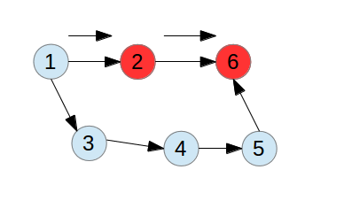
当再次遍历到节点６的时候，则如下图所示：
这个时候，如果去看marked[6]的话，它已经被标记为true了。可是，如果按照这个条件，我们就确定这种情况存在环，肯定不行。因为现在的这个情况实际上并不是一个环，它仅仅是访问到了一个前面访问过的节点。在这种情况下，要判断一个环的存在，和取得环所在元素的问题根源在于哪里呢？
在前面的示例中，我们从节点１到２，然后到６，整个的过程里，这几个点被遍历了，但是光到这一步还没有构成一个环。按照深度优先遍历的过程，这个时候相当于２和６已经遍历完了，要去遍历节点１的另外一个边。实际上，这个时候就算从另外一个边可以遍历到前面的节点２或者６，因为这个时候能访问到２和６的是另外一组有向边了，它们和前面经过的那些有向边是不一定构成环的。
另外，从环的构成来说。如果我们按照深度优先的顺序访问到了一个环，必然是在逐步递归推进的过程中能访问到自己前面访问过的节点。这里的差别就在于递归推进所重复访问的节点和前面图深度遍历所访问的节点还又所差别。我们以下图来说明一下它们的详细差别：
假定我们从节点１出发，先访问２这边的边，一直到节点６，这个时候按照深度优先遍历是首先一步步递归进去到节点６。因为节点６没有别的出边，所以就要一步步的按照前面的过程返回。这个过程如下图：
在前面２，６节点都返回后，这个时候就算后面的节点比如５访问到６了，它们是不构成环的，如下图：
这个时候的节点２和６，它们和节点３,4, 5之间的差别是，２和６已经不在函数递归的栈里了，因为它们已经从前面的递归里返回了，而3,4,5节点还是在里面。所以到后面遍历到节点７,8之后，我们再次碰到了节点４，就可以确认它们是构成了一个环。如下图：
所以，这里问题的关键点就是，我们再次碰到的节点４它还没有从前面向前递归的函数返回回来，结果又被遍历的时候给碰上了。这样，按照前面的分析，我们的环检测要点就是，找到一个还在遍历中的节点，同时在遍历的时候它如果再次被访问到了，则表示找到了环。而如果它被访问完了之后返回，则再次碰到它的时候就不是环了。
从实现的角度来说，相当于对这个节点递归访问前要设置一个对应的值，表示它在一个递归顺序里。然后在它访问退出这个递归后，要将这个值设置回来。一种简单的方式就是设置一个boolean[] onstack这样的数组，每个元素对应这里面的一个值。然后，因为要记录访问过的节点，肯定要用一个boolean[] marked数组。另外，既然还要记录环的结果，肯定还要一个记录前向访问的数组int[] edgeTo。
按照前面的讨论，可以得到一个检验环并保存环的代码实现：
public class DirectedCycle {
private boolean[] marked;
private int[] edgeTo;
private Stack<Integer> cycle;
private boolean[] onStack;
public DirectedCycle(Digraph g) {
onStack = new boolean[g.getVertices()];
edgeTo = new int[g.getVertices()];
marked = new boolean[g.getVertices()];
for(int v = 0; v < g.getVertices(); v++) {
if(!marked[v]) dfs(g, v);
}
}
private void dfs(Digraph g, int v) {
onStack[v] = true;
marked[v] = true;
for(int w : g.adj(v)) {
if(hasCycle()) return;
if(!marked[w]) {
edgeTo[w] = v;
dfs(g, w);
} else if(onStack[w]) {
cycle = new Stack<Integer>();
for(int x = v; x != w; x = edgeTo[x])
cycle.push(x);
cycle.push(w);
cycle.push(v);
}
}
onStack[v] = false;
}
｝
前面代码的要点在于dfs方法。当我们要访问某个节点v的时候，首先设置它对应的onStack[v] = true。而这个节点被访问结束后，肯定是在它后面遍历的递归都结束了，所以要在for循环之后重新将onStack[v] = false。在找到环的时候，我们根据当前节点v不断回退到某个节点，这个节点刚好就是w。因为这是属于函数递归调用里面的，如果检测到w被遍历过，必然也能够找到w。于是讲这些节点压入栈中。这样整个环就找到了。
前面代码里引用到的方法hasCycle就很简单，它和返回整个环的代码如下：
public boolean hasCycle() {
return cycle != null;
}
public Iterable<Integer> cycle {
return cycle;
}
查找和返回有向图里的环需要遍历所有的节点，同时根据每次递归推进的过程中保证覆盖到在同一个递归序列里的元素。这是实现的两个要点。
这里我们讨论了有向图环的检测和引用，它在后续的问题应用里有很重要的作用。在后续的小节里会继续说明。这里先埋下一个伏笔。
深度优先遍历排序
我们在对图做一些遍历的时候，有的时候会发现一个和访问树很类似的规律。比如说，访问一棵二叉树的时候，我们访问它的序列关系不同，会产生不同的序列。比如说前序，中序和后序。在访问图的时候，假定以深度优先遍历为例。当我们每次遍历到一个节点的时候就访问它，也可以称其访问序为前序，而如果等它遍历递归后返回的时候再访问它，这就相当于一个后序。以前面的图为例：
这里，我们如果按照前序的过程来遍历的话，首先就是1, 2, 6。然后是3, 4, 5, 7, 8。这就是典型的深度优先递归访问的步骤。而按照后序的过程来考虑呢，它访问的顺序则如下：6, 2, 8, 7, 5, 4, 3, 1。这里的序列相当于是将每个遍历访问的节点先入栈，然后当遍历到一个没有出边的节点时，这将作为一个返回条件。递归再逐步返回。
要实现这两种遍历的方法其实很简单，无非就是在深度优先遍历的时候在访问某个节点前或者访问结束后将节点加入到队列里。具体的实现如下：
public class DepthFirstOrder {
private boolean[] marked;
private Queue<Integer> pre;
private Queue<Integer> post;
public DepthFirstOrder(Digraph g) {
pre = new LinkedList<Integer>();
post = new LinkedList<Integer>();
marked = new boolean[g.getVertices()];
for(int v = 0; v < g.getVertices(); v++)
if(!marked[v]) dfs(g, v);
}
private void dfs(Digraph g, int v) {
pre.add(v);
marked[v] = true;
for(int w : g.adj(v)) {
if(!marked[w])
dfs(g, w);
}
post.add(v);
}
public Iterable<Integer> pre() {
return pre;
}
public Iterable<Integer> post() {
return post;
}
}
重点就是在dfs方法里。在pre里面添加元素的时候是每次刚第一次访问某个节点时。而在post里面添加元素的时候则表示通过该节点以及它所关联的节点都已经遍历结束了。这两个序列有什么作用呢？在后序一些计算里，还是很有用的。
比如说后序的序列，因为每次我们放入队列的是已经被遍历过的节点，而且通过这个节点已经不可能再访问到别的节点了。这就意味着从这个节点要么是出度为０的节点，要么是通过它所能访问到的节点都已经被访问过了。因为这些节点将作为递归结束的条件返回。所以说它们是优先返回的。也说明这些被返回的节点是可以被其他节点所遍历访问到的。而如果图里面有孤立的节点或者入度为０的节点呢？对于它们，因为没有办法通过其他节点所遍历到，它们被返回的可能性就越晚。这种特性在后面的讨论里有一个很重要的作用。这里先不详细的阐述。
拓扑排序和DAG
拓扑排序和DAG如果每接触过看起来会觉得很新奇。它们的定义是很紧密相连的。 该怎么来理解它们呢？我们先看看它们的定义。DAG(Directed acyclic graph)，表示有向无环图。就是对应一个有向图，但是它里面却没有环。像下面的这些个图，都可以称为DAG:
对于这个定义，当我们要检测一个有向图是不是DAG的时候就很简单了。有了前面检测环的方法，直接用那个办法就可以了。现在，拓扑排序又是什么意思呢？
这个概念结合一些具体的问题来说可能更加好理解一些。在一些任务安排和调度的问题里。不同的问题或者任务之间又一些依赖的关系，有的任务需要在某些任务完成之后才能做。就像一些学校的教学课程安排。设置某一门课程需要依赖于一个前置的课程，只有学生学习了前置课程之后才能取学习该课程。如果将一门课程当做一个节点，从它引出一个指针指向后序依赖它的课程。就可能有一个类似这样的图：

如果将上图中每个课程用一个数字节点表示，这不正是前面的一个图吗？对于这种图来说，最大的特点就是它们肯定就不能存在环。不然就有逻辑上的错误。因此，前面检测一个图是否为DAG的方法就是看图中是否有环。而拓扑排序则是在确定没有环的情况下，输出一个正常的序列。这个序列表示从一个不依赖任何元素的节点到后序的节点。这些序列正好符合课程安排或者任务调度的逻辑顺序。
我们已经知道了，对于一个有向图来说，如果它不存在环，则它应该为DAG。现在的问题是怎么找出这个拓扑序列来呢？前面一节里讲到的深度优先排序的过程在这里就起到作用了。实际上，对于深度优先遍历的后序序列，如果我们将它们的顺序完全倒过来，得到的序列就是满足我们要求的序列。对于这部分的证明书上有详细的说明，这里就不再赘述，只是直接搬过来这个结论。
有了前面这两个结论的支持，要实现拓扑排序就已经比较简单了。就是我们首先判断一下图中间是否存在环，然后如果没有存在的话，则取其中后序遍历序列的相反就可以了。具体的实现如下：
public class Topological {
private Iterable<Integer> order;
public Topological(Digraph g) {
DIrectedCycle cycleFinder = new DirectedCycle(g);
if(!cycleFinder.hasCycle()) {
DepthFirstOrder dfs = new DepthFirstOrder(g);
order = dfs.reversePost();
}
}
}
因为这部分代码就是糅合前面几个部分的代码到一块，所以就很简单了。
另外一种思路
针对前面的判断DAG以及求拓扑序列的问题。我们如果仔细观察的话，会发现一个这么有意思的现象。就是拓扑序列要求的序列必然是开始于一系列入度为０的节点。如果没有入度为０的节点，则表示这个图不是DAG，这样连遍历都没有必要了。当然，如果只是因为这个图里有入度为０的节点，并不代表这个图就一定是DAG。只是有了这么一个特征之后有一个好处，我们判断图是否为DAG时还是要检查是否存在环。
但是，一旦判断出图里没有存在环，剩下的给出拓扑排序序列可以更加简化。我们只要去取这些入度为０的节点，然后从这些节点遍历图。然后给出的序列就是拓扑排序的序列。
现在还要一个问题就是，我们怎么来求这些节点的入度呢？一个简单的办法就是在定义Digraph的时候增加一个数组int[] inDegree。每次我们添加一个边u–>v到图里时，inDegree[v]++。剩下的事，你懂的。
总结
有向图虽然看起来在定义的很多方面和无向图很近似，但是当考虑到它的一些具体特性时。很多原来在无向图里比较简单的问题就变得更加复杂化了。比如说判断环和求图中的环时，需要利用深度优先递归的序列来判断。另外，有向图里前序、后序遍历在判断图是否为DAG以及求图的拓扑排序时很有帮助。里面的详细实现细节值得好好琢磨。这篇文章相对比较长，不过在讨论这些问题的时候能够有点小小的收获和一些想法，也算是挺不错的。
参考材料
Algorithms
http://algs4.cs.princeton.edu/42directed/Digraph.java.html
http://algs4.cs.princeton.edu/42directed/DepthFirstOrder.java.html
http://algs4.cs.princeton.edu/44sp/DirectedCycle.java.html
简介
求最大（小）k个元素的问题已经在很多书或者文章上进行了大量的讨论。它有多种解决办法，每一种办法有它所独特适用的一面。同时，这个问题也和求第k大（小）的元素有很紧密的关系。这里，我们以取最小k个元素为例。主要按照《编程之美》这本书上讨论的思路作了一个详细的实现。并对每一种方法作了简单的讨论。
排序方法
这是我们所能想到的比较直接的办法。首先对所有的元素排序，然后取第k个元素。这样这个元素及之前的那些元素就是我们所需要寻找的。具体的实现我们可以考虑用到常用的几种排序方法，比如归并排序和快速排序。另外，还有一种就是采用选择排序作一点修改。
方法一、快速排序的实现
public static void quickSort(int[] a, int l, int r)
{
if(l < r)
{
int q = partition(a, l, r);
quickSort(a, l, q - 1);
quickSort(a, q + 1, r);
}
}
public static int partition(int[] a, int l, int r)
{
int x = a[r];
int i = l - 1;
for(int j = l; j < r; j++)
{
if(a[j] <= x)
{
i++;
swap(a, i, j);
}
}
swap(a, i + 1, r);
return i + 1;
}
public static void swap(int[] a, int i, int j)
{
int temp = a[i];
a[i] = a[j];
a[j] = temp;
}
这部分主要是quicksort的实现。在通过quicksort得到结果之后。取数组中索引为k的那个元素。然后将元素从头到k的输出就可以了。这部分的伪代码实现如下：
for(int i = 0; i < k; i++)
System.out.print(a[i] + " ");
因为quicksort修改了原来排序的元素，只要取第k个的索引就找到结果了，结果数组是已经完全排序的。
和quicksort类似，归并排序的过程基本一样，就不赘述。这两种方法的时间复杂度为nlgn。
选择排序实现：
我们如果注意到选择排序的算法的话，就会发现，它的过程比较符合我们这个问题的期望。因为它的过程是首先找到数组里最小的元素，然后放到数组的第一个位置，然后在剩下的元素里再找最小的，依次从前往后放。我们需要取k个最小的元素，那么按照这个要求，只要找到最小的K个元素就可以了。具体的实现如下：
public static void sort(int[] a, int k)
{
for(int i = 0; i < k; i++)
{
int min = i;
for(int j = i + 1; j < a.length; j++)
{
if(a[j] < a[min])
min = j;
}
if(i != min)
{
swap(a, i, min);
}
}
}
public static void swap(int[] a, int i, int j)
{
int temp = a[i];
a[i] = a[j];
a[j] = temp;
}
这部分代码和纯粹的selection sort的区别就在于原来的selection sort方法要在外面的循环一直遍历到倒数第二个元素，现在只需要遍历到第k个元素。这种方法的时间复杂度为n*k。和前面那种排序的方法比起来，前者为nlgn，两者的差别在于lgn和k。如果k < lgn的话，则第二种选择排序的方法更加理想。
适用场景：
我们这里采用的都是排序的过程，比如前面的快速排序的方式，每次划分要遍历一次整个数组。采用选择排序也类似，需要从数组里挑选最小的元素。这样做就有一个限制，如果要处理的数据量很大，不能一次将所有的数据都读到内存里面来的话，这种排序的方法就不适用了。
方法二、借鉴快速排序的思路
这种方法借鉴了快速排序的思路。在快速排序中，每次我们要对数组进行partition，分组的结果是使得在我们指定的元素左边的元素都小于它，在它右边的元素都大于它。那么，假设我们指定一个元素s，通过partition方法，我们可以得到划分后s所在的索引值。这个索引值假设为i，则表示元素s是集合里第i大的元素。通过和我们所期望的k比较，如果i < k，说明需要在大于s的元素里找出k – i个元素。否则，只需要在i索引的范围内继续寻找k。具体的实现代码如下：
public static int kSmall(int[] a, int start, int end, int i)
{
int q = partition(a, start, end);
int k = q - start + 1;
if(i == k)
return q;
else if(i < k)
return kSmall(a, start, q - 1, i);
else
return kSmall(a, q + 1, end, i - k);
}
public static int partition(int[] a, int l, int r)
{
int x = a[r];
int i = l - 1;
for(int j = l; j < r; j++)
{
if(a[j] <= x)
{
i++;
swap(a, i, j);
}
}
swap(a, i + 1, r);
return i + 1;
}
public static void swap(int[] a, int i, int j)
{
int temp = a[i];
a[i] = a[j];
a[j] = temp;
}
我们这里用到分划的方法，每次将元素划分为一部分大于指定元素一部分小于指定元素，然后再在缩小的范围内继续调整。这种方法和我们随机分划来求第k大的元素有很类似的思路。它的时间复杂度在理想的情况下可以达到O(N)，在最坏的情况下，时间复杂度为O(N * N)。
适用场景：
和前面的方法类似，这里的分划和调整也要每次都遍历数组元素。只是每次在分划确定了范围之后要遍历的范围缩小了。对于数据量很大的集合还是存在可能内存不够的问题。
方法三、借鉴二分搜索策略
这个方法和前面的类似快速排序比较类似，不过细节稍微有点不一样。既然我们是要找第k小的元素，那么，如果我们找到最大的元素max和最小的元素min，则这个第k小的元素在这个[min, max]的区间内。我们可以用二分搜索的方法，每次取min， max的中间值，然后计算小于这个中间值的元素个数。这样就相当于求出它是第几小的元素。如果这个元素的排名比我们所期望的k小，则说明我们要在这个元素的位置以后来搜索，也就是说要在大于(min+max) / 2的值域内。
查找小于某个值的元素个数的方法实现如下：
public static int f(int[] a, int n, int m)
{
int count = 0;
for(int i = 0; i < n; i++)
{
if(a[i] <= m)
count++;
}
return count;
}
通过前面这么不断的调整，我们必然得到一个元素，它正好是第k小的。然后，我们再利用分划的思路，以该元素为界，将集合分成两部分。这样，这个元素及左边的部分就是所要求的结果。
查找和比对第k大元素的部分代码如下：
while(max - min > 0.5)
{
int mid = min + (max - min) / 2;
if(f(a, n, mid) >= k)
max = mid - 1;
else
min = mid + 1;
}
前面这部分返回一个最终的max或者min都可以。用来作为后面分划的值。
最后进行分划的代码如下：
public static int partial(int[] a, int l, int r, int key)
{
int i = l - 1;
for(int j = l; j <= r; j++)
{
if(a[j] <= key)
{
i++;
swap(a, i, j);
}
}
return i;
}
它和partition的方法很相似，只是做了一点点的修改。因为它是要将指定的元素来进行划分，而不是partition中拿数组中最后的那个元素作为划分的标杆。中间还有一些实现求最大值和最小值的过程代码就不在这里赘述了。只是贴上一部分作为参考：
int max, min;
if(a[0] >= a[1])
{
max = a[0];
min = a[1];
}
else
{
min = a[0];
max = a[1];
}
int i;
for(i = 2; i < n; i += 2)
{
if(i + 1 < n)
{
if(a[i] >= a[i + 1])
{
if(a[i] > max)
max = a[i];
if(a[i + 1] < min)
min = a[i + 1];
}
else
{
if(a[i + 1] > max)
max = a[i + 1];
if(a[i] < min)
min = a[i];
}
}
else
{
if(a[i] > max)
max = a[i];
else if(a[i] < min)
min = a[i];
}
}
总的来说，这种方法的过程如下：1. 首先找到最大最小值，时间复杂度为O(N)，更精确的说是O（3/2N）。2. 查找第K大的元素，每次需要根据折半的部分计数，每次计数的时间复杂度为O(N)。总共需要计数的次数为lgN，那么总的复杂度为NlgN。3. 根据最后的结果进行分划，这部分的时间复杂度为O(N)。所以该方法总体的时间复杂度为O(NlgN)。
适用场景：
和我们前面的方法类似，在数据量大的时候，我们希望尽可能少的去读数据。这里却需要反复的进行查找计数，后面还要进行划分。所以在大数据量的情况下，这并不是一种理想的选择。
方法四、堆排序思路
这里借鉴了堆排序的思想。我们再回顾一下堆排序里面的过程。首先包括建堆，然后每次移除最上面的元素，移除之后再进行调整。我们每次调整所需要的花费为O(lgN)。而建一个堆的时间复杂度为O(N)。在这里，假如我们要求最小的k个元素，我们可以先建立一个k个元素的最大堆。这个堆里头的根结点是k个元素最大的那个。这样，我们针对后面的每个元素和堆顶的元素比较，如果比较元素比堆顶的元素大，我们可以直接忽略，而比堆顶的元素小，我们用这个元素替换堆顶的元素并进行调整。
有了这个思路，我们实现的代码就很好办了。以下这部分是实现建堆的部分：
public static int left(int i)
{
return i * 2 + 1;
}
public static int right(int i)
{
return i * 2 + 2;
}
public static void maxHeapify(int[] a, int i, int length)
{
int l = left(i);
int r = right(i);
int largest = i;
while(true)
{
if(l < length && a[l] > a[i])
largest = l;
if(r < length && a[r] > a[largest])
largest = r;
if(i != largest)
swap(a, i, largest);
else
break;
i = largest;
l = left(largest);
r = right(largest);
}
}
public static void buildMaxHeap(int[] a)
{
for(int i = a.length / 2; i >= 0; i--)
maxHeapify(a, i, a.length);
}
public static void swap(int[] a, int i, int j)
{
int temp = a[i];
a[i] = a[j];
a[j] = temp;
}
后面部分的实现代码如下：
for(int i = k; i < a.length; i++)
{
if(a[i] < a[k - 1])
{
a[k - 1] = a[0];
maxHeapify(a, 0, k);
}
}
这个方法的整体执行步骤有如下几个部分：1. 建一个k个元素大小的堆，时间复杂度为O(K)。2. 针对后面的所有元素，每次比较并调整堆。时间复杂度相当于(N – K)lgK。那么这个方法的整体时间复杂度为O(NlgK)。
适用场景：
借鉴堆排序的过程可以说是一个比较理想的解决方法。如果k不是特别大的情况，我们可以直接在内存里建一个堆，然后每次读取一个后面的元素来比较和调整。因此对于大数据量来说，之需要读取一遍就可以实现所需要的结果。
方法五、借鉴计数排序
在我前面讨论计数排序的文章里有专门提到过这种排序方法的特殊性。它要保证数据的分布在一个不是太大的范围，这样我们可以申请一个这么大范围的数组。然后在这个数组中每个元素保存对应的集合中元素出现的次数。当我们遍历整个数组得到这么一个统计结果的数组时，我们也就很容易得到第几个元素及之前元素的个数。这样再来找第k个元素就很容易了。建立这么一个统计数组的代码比较简单：
int[] c = new int[k];
for(int i = 0; i < a.length; i++)
c[a[i]] = c[a[i]] + 1;
后面我们来判断的代码如下：
int count = 0;
int i;
for(i = 0; i < k; i++)
{
count += c[i];
if(count >= k)
break;
}
return i;
这里是返回了i这个第k大的元素。如果要输出前面的部分就很简单了：
for(int j = 0; j < i; j++)
{
for(int l = 0; l < c[j]; l++)
System.out.print(j);
}
适用场景：
这种方法采用了计数排序的思路，所以它本身就受到计数排序的两个条件限制：1. 数据分布范围不能太大。2. 数据都要大于等于0. 对于符合这种条件的大数据集合，采用这种办法排序也是一个可行的办法。
总结
各种求最大（小）k个元素的方法可以通过这个查找的过程取点巧。如果能找到第K小的元素并且这个元素前面所有的元素都是比该元素小的，那么我们直接在数组里输出这一个数据集合。否则，我们可以根据这个元素对所有数据做一次划分，然后取得所需要的的部分。
参考资料
编程之美
Introduction to algorithms
简介
我们在讨论求一个数组中最小的元素时，相对来说很简单，也很容易找到一个高效率的办法。在一些特殊的情况下甚至还可能有更加优化的方法。如果再把这个问题再深入一点。比如说，我们要求第二小的元素，那么有没有足够高效率的方法呢？
问题描述
在我们思考这个问题的时候，书上的有一个问题就是要求我们来验证在n个元素里，在最坏情况下找到第二小的元素需要经过n + lgn – 2次的比较。那么，我们能不能找到这么一种办法呢？先理一下大致的思路。
解决思路
遍历两次
这种办法相对比较简单直接，就是第一次遍历找到最小的元素。然后在剩下的集合里找最小的那个。这样就找到了第二小的。这种方法在最坏情况下的具体比较次数是n – 1 + n – 2 = 2n –3。很显然，虽然这是一个可以达到O(n)级别的方法。但是如果以问题中n + lgn – 2的标准来衡量的话，还是不够的。这种方法的实现代码如下：
public static int findSec(int[] a, int size)
{
int smallest = 0, second = 1;
for(int i = 1; i < size; i++)
{
if(a[i] < a[smallest])
smallest = i;
}
swap(a, 0, smallest);
for(int j = 2; j < size; j++)
{
if(a[j] < a[second])
second = j;
}
return a[second];
}
public static void swap(int[] a, int i, int j)
{
int temp = a[i];
a[i] = a[j];
a[j] = temp;
}
前面的办法是用了两个循环来遍历数组，我们也可以通过一次遍历来实现：
public static int findSecond(int[] a, int size)
{
int first = 0, second = 0;
if(size > 1)
{
if(a[0] < a[1])
second = 1;
else
first = 1;
}
for(int i = 2; i < size; i++)
{
if(a[i] < a[second])
{
if(a[i] < a[first])
{
second = first;
first = i;
}
else
second = i;
}
}
return a[second];
}
虽然我们能实现达到O(n) 这个量级的方法，但是和前面的要求来说，还是没达到。很显然，第一种办法没法解决。
从堆排序里借鉴的思路
我们前面如果看过堆排序就知道它是一个数组，但是用一种完全二叉树的角度来操作它。比如说我们有一个数组[16, 14, 10, 8, 7, 9, 3, 2, 4, 1]。那么，按照堆排序的思路，它对应的二叉树关系如下图：
这部分的特性对于我们构造调整的结构有什么帮助呢？毕竟这里是在一个已经有的数组中间来构造。但是这里有一个比较有意思的性质，对于我们后面的分析有帮助。假设有一棵完全的二叉树，它的叶结点层也是完全覆盖的，那么这一层的叶结点数目必然为2**k(2的k次方)。从叶结点往上的结点每次都为它的一半，直到根结点。那么，从根结点到叶结点上面一层的所有结点数目正好构成一个等比数列，他们的总数为2**k – 1。也就是说比叶结点数目小1。这给了我们一个提示。就是假设我们有一组元素作为叶结点，然后在它的基础上来构造完全二叉树的上层部分，比如说构造成一个最小堆，那么这部分的花费如果有办法控制的话，有希望实现通过n–1次的比较得到一个这样的最小堆。那么我们看如下的一种构造树的方式：
在这里，假设我们有数组[1, 2, 3, 4] 作为叶结点一层。然后每次两个两个的比较，将较小的那个取出来作为上面一层的结点。那么，在一个理想的情况下，我们假设叶结点总共有2**k个。这次比较生成它上一层的叶结点需要的比较次数为2**(k–1)，也就是说为叶结点数字的一半。再往上一层构造的比较则在原来的基础上再减半。和前面的比较类似，前面所有的比较次数正好构造成一个等比数列，从1到2**(k–1)，那么他们的和就刚好为2**k – 1。经过这一番推导，我们发现通过这么构造一番的方式是可以实现在n – 1次的比较来构造出一个最小堆的。而这个最小堆的构造方式和堆排序的情况不一样。更确切的来说，这个堆有一个明确的说法。它就是胜者树。
后面我们会详细分析胜者树。那么好吧，按照我们原来的要求，是要求实现最后得到第二小的元素，而且比较次数为n + lgn – 2。我们这里只是通过n – 1次比较得到了最小的元素。怎么来找到这个第二小的元素呢？这里又利用到了胜者树一个有意思的地方。我们看前面的图。最终站在顶上的元素是最小的元素。他们所有的比较过程相当于是一个竞赛的淘汰过程。所有参加竞赛的队伍捉对厮杀，然后淘汰到只剩下最后一个。该到哪里找这个第二的呢？这个和具体的比赛不一样。具体的比赛肯定是决赛里头赢的那个第一，输的那个第二。这里头就好像所有pk的怪物都给设定了武力值，武力高的那个赢武力低的那个。可是如果一开始那个武力第二的就和第一的分到一起呢？那么这个老二就很悲催的第一轮被灭了。既然是老二嘛，肯定火力还是比较威猛，也可能一开始没碰到呢？那么他们也可能在中间的某一个阶段碰到，或者在最后的决赛阶段给碰上。总之，最后的冠军已经定下来的情况下，它必然要和这么个老大碰面的。换一个角度来说，我们可以说，它必然会和这么个老大会一面，成为老大夺冠路上的一个冤魂。这样，如果我们要找这个第二小的元素，只要找这个最小元素它曾经比较过的对象就知道了。而我们得到的胜者树可是一路记录了最小元素从小组赛一直pk到决赛的记录的。我们从前面的图中可以看到，只要顺着根结点向下，只要沿着和根结点值一样的结点遍历，那么对应的另外一个结点就是和它pk过的对手。而那个第二小的元素就在它所有pk过的对手里面。
我们看到，我们构造的树是一棵完全二叉树，那么树的高度为lgn。从根结点开始向下走到叶结点进行比较，实际的比较次数为lgn – 1。到这里，我们的思路就完全理清楚了。原来，找这么个老二就是这么一个过程：1. 构造一棵胜者树，这样就可以找到最小的元素。 2. 从根结点开始向下比较每个和它值不同的子结点，然后找到第二小的元素。他们总共的比较次数为n + lgn – 2。
胜者树
前面是通过一个简单的讨论引出了胜者树。我们来看一个更一般化的胜者树的样子：

胜者树一个更正式的定义是通过锦标赛思想来建立的树，它的每个非终端结点存储的是左右子结点中的优胜者。胜者树实质上是对n个记录的关键字进行两两比较，得到个优胜者，作为第一步比较的结果保留下来。然后这个较小(大)者之间再进行两两比较，…，如此重复，直到选择出最小关键字的记录为止。现在，我们再来看看具体胜者树的构造。
构造
我们前面构思的一个思路是一种比较理想的状态，要求我们的叶结点个数也就是元素的个数为2**k，实际中元素的个数很可能不是正好这么多。那么，按照我们前面堆排序的构造和分析，我们必须要构造这么一个完全的二叉树。我们可以采用两种方式，一种就是将原来的元素补齐，补到刚好大于它数字的2**k个。然后再来构造。还有一种就是我不需要叶结点有2**k个，只要保证从叶结点往上的层正好符合2**k个的标准也可以。就像堆排序构造的堆一样，叶结点不一定是满的，但是上面的结点肯定都是满的。相对来说，第二种方式需要用到的额外空间少一点。我们就以第二种方法为例来讨论。
假定有n个元素，我们总共这棵树需要多少个结点呢？从前面的分析可以得到，需要的元素数目为2**k – 1 + n个。其中2**k为假设叶结点是满的，它所有叶结点的数目。为什么是这么多个呢？我们这里就不再详细推导，只要记住一点，对于一个叶结点是满的二叉树，假设叶结点数目为2**k个，那么它上面其他所有结点的总和为2**k –1，也就是说比满的叶结点数目少一个。
还有一个问题就是，我们是从叶结点向根结点来推导，这n个元素应该放在这个新数组的最后。这部分初始化的代码可以实现如下：
public void buildTree(int[] t)
{
int length;
for(length = 2; length < t.length; length *= 2);
treeLength = length - 1 + t.length;
a = new int[treeLength];
for(int i = 0; i < t.length; i++)
a[length - 1 + i] = t[i];
for(int j = 0; j < length -1; j++)
a[j] = Integer.MAX_VALUE;
build(length - 1, treeLength - 1);
}
因为这里要比较数值的大小，我们从前面的图里可以看到，有一些上层空缺的位置需要补对应的数值来满足整个满二叉树的结构又不能破坏胜者树的结果，所以我们首先将非n个元素之前的结点值都置成Integer.MAX_VALUE。这里的build方法则是构造的详细步骤，其代码实现如下：
public void build(int start, int end)
{
while(start != end)
{
for(int k = start; k <= end; k += 2)
{
if(k + 1 <= end)
a[parent(k)] = a[k] > a[k + 1] ? a[k + 1] : a[k];
else
a[parent(k)] = a[k];
}
start = parent(start);
end = parent(end);
}
}
public int parent(int i)
{
if(i % 2 == 0)
return i / 2 - 1;
else
return i / 2;
}
在build方法里，每次我们取这一层结点的最左边一个结点和最右边的结点，在遍历的过程中两两比较，将较小的那个设为相邻两个结点的父结点。一直遍历到根结点。
查找
查找的基本过程如下：1. 从根结点开始，看它的左右子结点，如果一个结点和根结点值相同，则取另外一个结点的值作为第二小结点的比较值。2. 进入和根结点值相同的这个子结点，重复步骤1。这个整体过程虽然表述起来比较简单，其实现还是有不少诡异的地方：
public int findSecondMin()
{
int secondMin = Integer.MAX_VALUE;
int i = 0;
while(left(i) < treeLength || right(i) < treeLength)
{
if(left(i) < treeLength && a[left(i)] == a[0])
{
if(right(i) < treeLength && a[right(i)] < secondMin)
{
secondMin = a[right(i)];
}
i = left(i);
}
else if(right(i) < treeLength && a[right(i)] == a[0])
{
if(left(i) < treeLength && a[left(i)] < secondMin)
{
secondMin = a[left(i)];
}
i = right(i);
}
}
return secondMin;
}
public int left(int i)
{
return 2 * i + 1;
}
public int right(int i)
{
return 2 * i + 2;
}
这部分的代码就不再详细解释了。有了前面的分析应该也很容易理解。
调整
这一部分是后面新增加的内容。我们在某些情况下，纯粹出于对胜者树的性质的一个维护。如果我们修改了叶结点的一个值，就有可能引起一个连锁的变化。我们看如下的一个示例：
这是按照我们前面的讨论构造的一棵胜者树。如果我们将叶结点1的值修改为4，那么，为了保证树的性质，我们需要做一些如下的修改：
这个过程在于，在原来结点被修改的地方，我们需要重新进行比较和调整，一直向上回溯到根结点。每次需要和它的兄弟结点进行比较。
具体实现的代码如下：
public void adjust(int i, int val)
{
a[i] = val;
while(parent(i) >= 0)
{
if(i % 2 == 0 && i - 1 >= 0)
{
a[parent(i)] = a[i] > a[i - 1] ? a[i - 1] : a[i];
}
else if(i % 2 == 1 && i + 1 <= treeLength)
{
a[parent(i)] = a[i] > a[i + 1] ? a[i + 1] : a[i];
}
i = parent(i);
}
}
这里有一个判断i % 2的地方，是用于判断当前结点的下标值是否为奇数或者偶数。因为胜者树本身的满二叉树属性。所有在左子结点的元素下标值为奇数，右结点的元素下标值为偶数。
总结
这里是根据一个求第二小的数进行的推导。为了找到一个可以更加优化的思路居然要折腾这么多。可见，这些问题背后的思想还是很丰富的。除了胜者树，其实还有类似的数据结构败者树。他们的思想也很类似。在一些更通用的问题比如求最小的若干个数时，还有一些其他的方法和思路，不过和堆也有很强的联系。胜者树，败者树他们和堆排序，求最小（大）的k个元素的问题以及多路归并排序等外排序的算法也有很强的关系。在后续的一些文章中也会针对这几个点八卦八卦。
参考材料
Introduction to algorithms
http://blog.sina.com.cn/s/blog_622bd1660100ouyi.html
http://blog.sina.com.cn/s/blog_567842410100nf12.html
问题简介：
以对角线的方式从左至右或者从右至左的遍历一个矩阵。这个矩阵更确切的说是一个行和列都长度相等的方阵。比如说，我们按照从左到右，从上到下的方式遍历一个矩阵。如下图所示：
那么我们遍历的序列将如下：1, 2, 5, 3, 6, 9 4, 7, 10, 13, 8, 11, 14 12, 15, 16.
这是一个比较常见的问题。以前在一些面试中也碰到过。一般来说，只是顺序的遍历每行每列显得过于简单。而通过对角访问的时候，我们可以看到，对应要遍历的行数为矩阵行数的2倍减1.
问题分析：
方法1：
以前面的问题为例，粗看如果要遍历对角的数据，需要首先从第一行开始，每一次找到在它左下角方向的元素，也就是假定取第一行的元素a[0][j]，则对应该序列后面的元素分别为a[1][i – 1], a[2][i–2]...a[i][0]。这样我们就遍历完了上面一半的内容，一直到右上到左下的对角线。
遍历完了这部分之后我们就要从第一行的最后一列开始，一直到最右下角。每个序列每次行号增加1，列号减1，一直增加到最后一行。生成的序列应该类似如下：a[1][n–1], a[2][n–2]...a[n–1][1]
经过前面的讨论，我们可以得出如下部分的代码：
public static void traverseNoCopy(int[][] a)
{
// Traverse the upper part
for(int j = 0; j < a[0].length; j++)
{
for(int k = 0; k <= j; k++)
{
System.out.print(a[k][j - k] + " ");
}
System.out.println();
}
// Traverse the lower part
for(int i = 1; i < a.length; i++)
{
for(int j = i; j < a.length; j++)
{
System.out.print(a[j][a.length - j + i - 1] + " ");
}
System.out.println();
}
}
这个遍历的过程中，最难的地方是这个矩阵的遍历要分成两块，上面部分对应的二重循环中两个下标的关系和下面部分的不一样。要找到对应的关系则需要列出几个元素的序列来寻找其中的规律。
方法2：
和方法1比起来，这种方法需要占用额外的空间，但是相对来说更容易理解一点。我们看前面的矩阵图。当我们要从右上到左下遍历的时候，对应这个元素下面一行的元素是在它对应列元素左边一个。后面的元素依次类推。那么，既然如此，如果我们将每一行元素下面一行的元素依次向右移动一位，那该如何呢？这样，将构成一个如下图的样子：
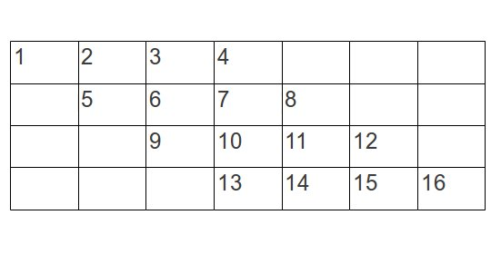
一个有意思的地方就是，原来我们需要斜角去访问的地方，现在只需要逐列的访问就可以了。为了实现这么一个结构，我们需要额外构造一个2n –1维的矩阵，然后从左到右按列遍历矩阵就实现了同样的效果。根据这种思路，得到的代码如下：
public static void traverse(int[][] a)
{
// Suppose we traverse from left to right and from upper right to lower left
int[][] b = new int[a.length * 2 - 1][a.length * 2 - 1];
// Copy every row in a and make some offset accordingly
for(int i = 0; i < a.length; i++)
{
for(int j = 0; j < a.length; j++)
{
b[i][i + j] = a[i][j];
}
}
// Traverse every column from left to right
for(int i = 0; i < b.length; i++)
{
for(int j = 0; j < b.length; j++)
{
if(b[j][i] != 0)
System.out.print(b[j][i] + " ");
}
System.out.println();
}
}
这种方式遍历的时候我们需要有一个假定，就是假设我们我们新构造的矩阵中，新增加的元素必须和原来矩阵中的元素不一样。否则按列遍历的时候会产生混淆。这里只是简单的用0来表示。具体实现的时候需要根据情况来调整。
总结：
矩阵对角遍历的两种方法中，第一种方法的要点在于要根据遍历的顺序和方向来推断矩阵元素下标的变化规律。有时候找到这些规律会比较费时间一点。第二种方法则比较简单直观一些，首先推断出行之间元素的位置偏移，然后构造一个对应的偏移矩阵。这种方法的好处就是不需要费脑筋去推算下标变化的关系，之需要构造出来然后遍历就可以了。当然，这样做比较费空间，同时也需要保证元素的独特性以防止遍历的时候产生混淆。
问题描述
假定我们有一个数学表达式，我们把里面所有的左括号都去掉了，比如说：1 + 2 ) * 3 – 4 ) * 5 – 6 ) ) )。我们需要找到一个方法将缺失的这部分左括号补全使得它成为一个完整正确的表达式。对应于前面的示例，它对应的完整的数学表达式为：( ( 1 + 2 ) * ( ( 3 – 4 ) * ( 5 – 6 ) ) )。这里的有一个要求是所有表达式必须是用括号包含的，但是又不包含冗余的。
问题分析
粗看这个问题的时候，有点不知道从哪里下手。因为对于一个表达式来说，比如前面的1 + 2 ) * 3 – 4 ) * 5 – 6 ) ) )。因为我们这里不考虑对单独的数字用一组括号包含起来。所以不存在如(1)这样的情况。 所以这里第一个关键的点就是，我们里面所有括号里包含的表达式必然是一个(a op b)这种样式。这里假设a和b是一个子表达式， 而op表示一个运算符。对于比如((1 + 2) * (3 + 4))这样的表达式来说，它也相当于我们前面的一种表达式。不过光从这一点来分析的话，我们似乎还是没有多少线索。看来还需要进一步的分析。
歧义分析
最开始要找这些个匹配的括号时，最让人困惑的地方就是，感觉似乎有很多种可能。然后就没法确定了。比如说，在我们前面的表达式里，我们既可以组织表达式成( ( 1 + 2 ) * (3 – 4) )， 也可以组织成(1 + (2 * ( 3 – 4) ) ) 这种。这样，当我们读取到某个操作符后面的数字时，就不知道该将这个数字包含到哪个部分。这部分解读看似有点道理，但是我们还忽略了一个地方。就是对于我们要找到的符号匹配，我们虽然没有了左括号，可是我们是有右括号的。在前面的示例中，虽然我们组成的表达式不一样，但是它们右括号的数量不一样。也就是说，采用不一样数目的右括号，才能对应不同的表达式。至此，我们可以推断，右括号的布局和数量其实在某种程度上已经确定了这个表达式。
我们现在再来看一个简单的示例：比如说1 + 2 * 3。 我们将他们组合成这种表达式：((1 + 2) * 3) 也可以组合成这种表达式：((1 + (2 * 3))。 在这里，我们组合的方式不一样，但是右括号的位置和数量也有差别。在前面这种情况下，我们的两个右括号一个是在2的右边，一个是在3的右边。而后面这种则是两个都在3的后边。可见，在这里我们至少可以确定右括号的位置和数量不同它们就确定了唯一不同的表达式结构。现在的问题是，就算我们知道它们不同，有什么办法把这个表达式的完整结构给整出来呢？
进一步分析
我们知道对于一个表达式来说，因为我们这里采取用括号来包括他们的结构和运算关系，他们可以笼统的概括成一个(a op b)的这种样式。这样就形成了一个递归定义的结构。而如果我们对编译原理的一些概念还有点印象的话，会想到抽象语法树这个东西。比如说a + b 则可以形成一个以+为根而分别以a, b为左右子节点的二叉树。那么，以我们前面列举的表达式
( ( 1 + 2 ) * ( ( 3 – 4 ) * ( 5 – 6 ) ) )为例，它对应的构造语法树会是个什么样子呢？ 我们一步步的把它构建出来：
首先，它既然是一个(a op b)这种结构。那么当我们把最外面那一层括号剥除的时候，它对应的应该是(1 + 2) * ((3– 4) * (5 – 6)) ，其中a对应(1 + 2)， op操作符对应 *， b对应((3–4) * (5 – 6))。 它对应的语法树结构如下：
我们可以进一步的展开(1 + 2)，它既然也应该对应(a op b)这种结构，那么a= 1, b = 2, op = +：
右边的子节点也按照这种方式展开：
最后的结果将如下图：
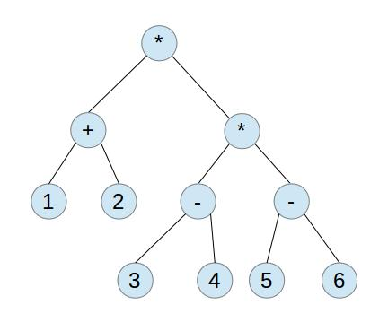
刚才这个过程展示了两点。一个就是我们每展开一个节点的时候，相当于去掉了一层括号。另外就是每个节点最终是一个数字或者两个数字和一个计算符号的组合。我们回顾一下刚才这个展开的过程。每次我们要去掉一组括号，对应的这个括号里就必然包含这一个计算表达式加上一个运算符再加上一个表达式。我们这样不断的去掉括号，不断的构造出来了这个表达式树。
而如果我们把前面的这个过程倒过来呢？我们每次不断的合并一个表达式加上一个元算符再加上一个表达式，然后把他们加上括号，这里不就构造出我们原来的这个大的数学表达式了吗？没错，这一步是确定的。可是如果我们要这样做的话，这里是要求前面的左右括号都有。而我们这里是去掉了左括号。不过没关系，因为我们既然有了右括号，我们就知道，对于一个完整的表达式来说，它至少应该保证它的左右括号数量是一样的。所以对于一个右括号来说，当我们从左到右遍历，碰到第一个右括号时，它必然是构成一个最小表达式的一部分。而如果要构成一个最小的表达式来说，无非就是像1 + 2, 2 * 3等这样的形式。对于这种1 + 2 )，或者 2 * 3 )，我们很显然，只要将它前面的两个数字和符号组合起来，再在左边加上左括号就可以了。
前面的这一步，相当于构造了一个表达式，它本身也将作为另外一个大的表达式的一部分。我们按照类似递归的概念。既然这个右括号它所涵盖的这部分，比如(1 + 2)是一个表达式，这个时候，如果我们将它作为一个整体，在后面再碰到右括号的时候，我们是不是同样也可以把它当作第一个右括号那样来使用呢？比如说，我们前面的表达式
((1 + 2) * 3)，在去掉左括号的时候它是1 + 2) * 3。按照刚才的思路，我们应该是组合( 1 + 2 )， 然后我们碰到运算符号* 和数字3。接着我们又碰到右括号，这个时候类似，我们将右括号前面的两个运算表达式和运算符组合起来，这就是((1 + 2) * 3)。我们再看
((1 + (2 * 3)) 这个。它去掉左括号则是
1 + 2 * 3))。我们在碰到第一个右括号的时候，组合的第一个表达式是(2 * 3)，然后再碰到另外一个右括号，这个时候再组合，就有(1 + (2 * 3))。
哈哈，看来到了这一步，我们找到了一个构造表达式的规律了。无非就是每次我们碰到一个右括号的时候，将这个右括号左边的两个表达式和一个运算符组合成一个表达式。这样不断循环到最后。
实现
从前面的讨论里，我们就已经知道一个最终解析的方法了。就是通过碰到一个右括号，然后将它前面的部分组合起来构成新的表达式。这个新的表达式也将作为一个子节点参与到后面的组合中。那么，从实现的角度来说，我们可以发现如果用栈来解决这个问题简直就是最理想的方法。因为每次都要取前面的结果，而这些结果是对应每个右括号最接近的，这不就是对应着栈的LIFO吗？假设我们用栈来解析前面的表达式
1 + 2 ) * 3 – 4 ) * 5 – 6 ) ) )，那么该是个什么样的过程呢？
我们将这个过程的图示标注下来：
首先，我们碰到1, +, 2， 那么这3个元素依次入栈。如下图：
这个时候，我们碰到第一个右括号，我们需要将栈里的两个表达式和一个运算符取出来，然后组成(1 + 2)，然后将这个组合的表达式入栈：
然后我们将* 3 – 4这部分入栈：
这个时候我们又碰到一个右括号，老规矩，弹出前面的两个表达式和一个运算符，则有(3 – 4)，再将它入栈：
接着是后面的* 5 – 6:
然后我们后面有3个有括号，我们一个个的来处理：
第二个右括号：
最后一个：
在上面的每次调整的过程中，我们将前面压在栈底的3个元素都弹出来，然后组织的时候是后面弹出的元素放在前面，然后再包装一层括号，再入栈。这就是我们每次弹栈后做的事情。这样最后栈顶剩下的那个元素就是我们拼装出来的结果。
有了前面的这个描述，我们就可以很容易得到代码实现了：
public static String parse(String[] tokens) {
Stack<String> stack = new Stack<String>();
for(String str : tokens) {
System.out.println(str);
if(str.equals(")")) {
StringBuilder builder = new StringBuilder();
builder.append("(");
String op2 = stack.pop();
String operator = stack.pop();
String op1 = stack.pop();
builder.append(op1);
builder.append(operator);
builder.append(op2);
builder.append(str);
stack.push(builder.toString());
} else {
stack.push(str);
}
}
return stack.peek();
}
前面已经说的很清楚，这里无需解释。你懂的。
总结
这里主要是针对一个算术表达式的结构在它的右括号已经确定的情况下，讨论怎么去填充它的左括号。我们会发现实际上对于一个表达式来说，只要有一边的括号是完全确定的，它就可以唯一的确定这个表达式了。同样的，假设我们有了左括号，对于缺失的右括号来说也可以按照同样的思路来补。对于这些问题后面的数学原理我们暂时没有深究。实际上它和数学上的catalan数有着密切的关系。在后续相关的文章里会做相应的分析。
参考材料
http://www.amazon.com/Algorithms–4th–Robert–Sedgewick/dp/032157351X/ref=sr_1_1?s=books&ie=UTF8&qid=1403251503&sr=1–1&keywords=algorithms
问题描述
假设我们有两种方法来爬一个n级的台阶，我们可以一次爬一级台阶，也可以爬两级台阶。那么我们爬完这n级台阶总共有多少种方法呢？
分析
关于这个问题的分析和讨论网上已经非常多了。这里一方面分析一下这个问题的本质，另外也对同类型的问题做一个总结概括。对于这种问题，我们先来看一些简单的情况，假设所有走法的函数为f(n)，在只有一级台阶的时候，我们的走法如下：
f(1) = 1， 因为我们只需要走一级台阶就到达了目的地。
而对于0级台阶，我们可以认为什么都不走也算一种走法，那么f(0) = 1。
再往后推导，那么f(2)呢？对于两级台阶来说，我们有如下的走法：
1. 每次走一级。 2. 一次走两级 所以f(2) = 2
通过这几步的观察，我们可以发现一个如下规律：
f(0) = 1
f(1) = 1
f(n) = f(n – 1) + f(n – 2) n >= 2
从我们观察的结果来看，这个递推关系构成了Fibonacci数列。当然，我们的这个推导是否就一定正确呢？我们可以通过数学归纳法来证明。假设我们这个跳台阶的关系成立，那么我们来针对两种情况考虑：
基础情况： 对于n = 0, 1的情况，显然f(0) = 1, f(1) = 1, f(2) = f(0) + f(1)， 结论成立。
假定对于数字n结论都成立，那么f(n) = f(n – 1) + f(n – 2) (n >= 2)。 而此时，针对n + 1级台阶来说，能一步走到第n + 1级的台阶只能是首先走到了第n阶或者第n – 1阶。当走到第n阶的时候，只需要走一级台阶就达到了。而到第n–1阶的时候，只需要走两级台阶就达到了。所以它对应着走到第n阶再走一步，或者走到第n–1阶再走两个台阶。而当我们走到第n阶的时候，意味着我们这个时候的走法是f(n)，对应的，走到第n–1阶的时候走法是f(n – 1)。那么，这个时候我们走到第n+1级台阶总共的走法应该是f(n + 1) = f(n) + f(n – 1)。
这样我们就证明了前面的这个推论。在前面的推导里，有人可能会有点疑惑，在第n – 1步的时候，既然前面有两个台阶到第n +1级，那么从这里一次走一个台阶到目的地这种走法为什么不能算呢？因为这个时候从n–1走一步到第n级的时候这个整体的走法已经包含在f(n)里面了。
有了前面的这些推论，我们知道问题已经归结为怎么去计算Fibonacci数列。
Fibonacci数列问题
根据前面的讨论，我们从这个数列的特性来实现怎么计算它们的所有走法。最典型的实现思路如下：
public static long fibonacci(int n) {
if(n == 0) return 1;
if(n == 1) return 1;
return fibonacci(n - 1) + fibonacci(n - 2);
}
我们知道，因为这里递归函数的关系为f(n) = f(n – 1) + f(n –2)，它的增长将很快，这种实现很容易导致堆栈溢出。至于这个函数会是一个什么样的形式，他们增长的有多快呢？我们后面会继续讨论。这里先把几种代码实现的思路记录下来。
前面的代码实现是简单，不过问题在于大量的递归占用了空间，而实际上并没有用到那么多。我们完全可以把中间部分计算的结果保存起来，不需要重复的递归来计算。为了保存这个结果，我们可以采用一个长度为给定数字的数组。按照这种思路，我们实现的代码如下：
public static long f(int n) {
if(n < 0)
throw new IllegalArgumentException("Invalid n");
long[] result = new long[n];
result[0] = 1;
result[1] = 1;
if(n == 0) return 1;
if(n == 1) return 1;
for(int i = 2; i < n; i++) {
result[i] = result[i - 1] + result[i - 2];
}
return result[n - 1];
}
这种代码实现的思路是保存了中间计算的结果，然后省略了很多重复计算的步骤。 从算法的时间复杂度来说，它会简单很多，只有O(n)。当然，从空间复杂度来说，它达到了O(n)。从代码里我们也看到，实际上每次我们用到的结果都是取一个元素它前面的两个，然后过去了之后再之前的就不用了。那么，这么点空间是否可以重复利用呢？如果可以的话，我们可以在时间复杂度不变的情况下，把占用的空间给缩减下来。下面是另外一个实现：
public static long compute(int n) {
if(n < 0)
throw new IllegalArgumentException("Invalid n");
if(n == 0) return 1;
if(n == 1) return 1;
int first = 1, second = 1;
int sum = first + second;
for(int i = 2; i < n; i++) {
first = second;
second = sum;
sum = first + second;
}
return sum;
}
这部分的代码改进就在for循环里。每次我们将second赋值给first，然后将sum再赋值给second。采用一种滚动式向前推进的方式。只需要3个临时变量就解决了。
当然，在这方面的讨论有很多，解决方法也有很多，这只是一种比较简单直接的办法而已。
进一步推导
前面我们描述的Fibonacci问题它其实对应的是一种如下递归序列的一个特殊形式：
f(n) = a1f(n – 1) + a2f(n–2) + ... + adf(n–d)。 对于这种递归函数，到底有没有一个直接的多项式函数形式的描述呢？相对来说，这是一个很复杂的问题，一种思路是可以建立特征值等式，然后建立一个方程组，结合递归函数的一些初始条件，比如f(0)=xxx f(1)=xxx来推导。这里基于的一个假设是f(n)最终应该会演化为一个多项式的形式，也就是f(n) = a1xˆ(n) + a2xˆ(n–1) + ...+ adxˆ(n–d) + an。
因为这里的证明过于繁琐，可以参考后面的参考材料，这里就不再赘述。
总结
跳台阶的问题解决思路其实就是绕了两步，第一步要推导出它们符合一个Fibonacci数列的特性。第二步则是要求这个Fibonacci数列的值。所以问题的焦点就变成对Fibonacci数列问题的分析。而且，对于这个数列的数学复杂度分析也比较有意思。它对应一个指数函数的级别，对它的推导曾经花了好几个世纪。
参考材料
mathematics for computer science
{kind=link}